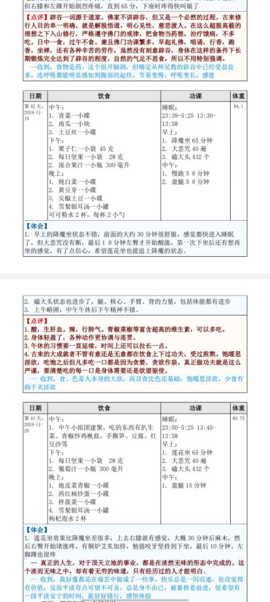

21二〇二六年三月(321)
2026年3月2日 官网(43)
今天是2026年3月2号周一，先祝大家新年快乐，明天又是元宵节，也祝大家元宵节快乐。还有现在国际局势风云变幻，又开始打起来了，也希望大家能珍惜我们现在这种安全的和平的环境。平时有空就多抓紧时间修行，做一些有意义的事情。那么先从官网的问题回答。
1.
菊花台
Tai师父你好，我来抢个沙发，想跟您问两个问题，不好意思，可能问的问题比较低级，请您谅解，
1、我这人胆子比较小，小的事情或者一些危险就很容易放大，然后焦虑和紧张。单以开车这件事来说，我住处离公司六公里，平时可以开车去上班，也可以骑电瓶车，但是在一些下雨雪或者天气特别冷的时候只能开车了，我有一次从公司回家，出公司门并入大路时候差点与直行的来车碰上，所以心里一直有点受影响。
说实话我是焦虑或者害怕开车的，而且感觉正常情况骑电瓶车上班更加方便，
但是同事们说车买了就要多开，不然就是浪费，我自己有时候也很纠结，自己虽然很焦虑开车这件事，但是也怕长久不开，自己反而越发生疏了，所以有时候又告诉自己要去开，并克服这些恐惧慌乱的心理。而且貌似记得某次答疑师父您说过，我买了车而不去开它，是不是也是在损耗自己的福报？
为这点小事纠结，希望师父回答指导下应该怎么做，也请老师谅解。
Taiguanglin
官网的第二楼，菊花台，这位说他本来有焦虑紧张这样的情绪，怕开车，首先你得对情绪有个正确的认知，这些情绪本来就潜藏在你意识里，并不是开车导致的，而是只是开车是勾出情绪的因缘而已，所以灭情绪就得多修行，平时坚持修行，每天该打坐该打坐该念佛该念佛，这些修行做到了，情绪自然而然就会减少。
还有对命运有一个正确的认知，大灾你是躲不过的，命运剧本已经写好了，灾是躲不过的，最多能做到大灾小受，那些小意外的确可以用熟练的技术来躲避，所以平时就应该多练练。还有真正的自信是来自于你内心的强大，你得先相信自己会开车，而且开得好，你自己觉得自己不行，那真的不行。
平时可以在网上多搜一下有关开车的那些个小视频，把一些开车时的注意点都记一下，然后多去看看那些开大车的人们，那些大车司机，他们是怎么把大车开得飞起，你看看他们，他们行那你也行，那你看你开你的小车应该可以吧？
从修行的角度来说，我们都应该活在当下，事情来了就解决，来之前就不要去考虑，不要去想，最多你有个预案就可以了。还没出去开车就想著可能出了事故什么的，这样的想法本身就是执著，会变成更大的烦恼，所以干脆不去想最好。
你开车上路遇到什么情况到时候再解决，现在手机都不有AI吗？如果你真出了事故，当时一时脑子懵了，想不起什么事情，拿出手机来问一下AI我现在应该怎么办？它会告诉你该打电话打什么电话，应该怎么处理？有伤者车怎么样，这些都会告诉你的。
不要老是在事情发生之前先去想象，然后去焦虑，人活著怎么可能不遇到任何事情，你走路在街上走在街上也有可能被花盆砸死。所以说真正的自信还是来自于自己内心的强大。还有如果你觉得你是有

同体大悲心的人，哪怕是有菩提心的人，你这一生是要好好修行的，还要普度众生的，你有这样的大任，你自己这么想，你也不会相信一些小事情能把你带走。
就说到这里吧，简单总结一下，首先你得对情绪有一个正确的认

知，情绪并不是外来的，本来就潜藏在你内心里，所以应该用修行来灭，然后遇到事情就提前有一个预案就可以，平时不需要老是去焦虑，这样什么事都做不了。
要说内心的强大，一个是来自于彻底都放下了，你连死都不怕，还有什么可怕的？其次就是你对这个社会有责任感，对人有责任感，要做大事的这种愿景，那就不相信会被一些小事情耽误了你。
2.
菊花台
2、另外还有个关于修行的，看了前段时间群里台湾先拜师兄的修行记录，以及今天群里管理员发的彼岸师兄百日筑基的修行记录，发现各位在家的师兄貌似都是在早上修行，不管是动功还是静功，都是上班前为主，这些可能势必影响睡眠，另外中医子午流注的讲法，这样会不会影响伤肝血，因为个人修行锻炼计划总是安排得多，但是用在每天修行的时间总是很少，所以想请师父仔细讲讲，后续可以的话，修行计划我就直接抄彼岸和先拜师兄的作业了。
Taiguanglin
第二个问题你说的是修行要不要放在早晨，我认为还是放在早晨比较好，你不要管中医里的那些身体运作的那套说法，因为那是针对普通人说的，一个人不修行的人，那么他身体休息和恢复最好的效果就是在睡觉的时候，所以他得保护好睡觉的时间段，但是作为打坐的人，打坐本身就比睡觉对身体的恢复是更有帮助的。
一开始刚上道的时候，刚开始的时候可能打坐会更累一些，但是一旦进入了状态，等你可以打坐一个小时或者更长时间的时候，就比睡觉一个小时甚至两个小时对身体是更有帮助的，所以应该是往修行的方向努力。
那么具体做法你也不需要一开始从三点起床这么来，你就从五起床先坐一个小时，每天坚持打坐一个小时，要么四点半起来，先磕个半个小时的头，再开始打坐一个小时，这样还可以吧？四点半也就比平时多早起了一个半小时左右，然后你可以在中午上班的时候中间吃完饭，稍微眯一下眼睛稍微睡一下，这样也可以正常一天的工作，先从你能接受的程度开始，这样早晨的修行做起来。
3.
晓xiao
师父好！
感恩师父教导，我在师父这里听经闻法，获益很多，尤其是很安心，感觉很安全和开心，愿供养师父希望师父长久住世。
师父，我去年结婚很快怀孕，预计今年农历六月份那会生孩子，距离爸妈家很近，还是像以前一样来往，
我家从我很小就开始不吃肉，现在我还是跟以前一样的饮食，孕期除了累点其他都跟平时一样，之前可以打坐双盘一小时，现在半个小时多一点，
做梦近三四年梦到多次我姥娘家平房的场景，梦中有各种情节，不过我的情绪不明显所以就只记得在同一个场景，其他没太多印象。去年底我又好几次梦到我家之前住的平房的场景，梦到爸妈，尤其是我很担心我妈这样的情绪，然后我诵经、放生回向给他们，最近一两次梦到爸妈爬一根很高的柱子，我在下面，然后摔下来砸到我身上，我爬起来把他们扶起来，这个梦里就情绪很淡，没有之前梦到的很担忧的情绪，
我很多年前算命的说可能这个时间有点问题，我或者我妈，我不知道如何对待？我是愿意自己承担业报的！我希望爸妈好，我愿意替他们承担，
请问师父，我应该如何对待这样的情绪？目前看起来大家都跟平时一样，只是我有一些担忧的情绪，请问师父我应该是按正常修行，忽略我的一些情绪？还是应该做一些什么？请师父明示
Taiguanglin
下一个问题，第三楼，晓xiao，这位是担心父母。和前面的那位一样，事情还没有发生，就开始担忧，这本身就是执著。这个就不需要，你先放下这样的心态。我就告诉你这个世界基本的真相，父母肯定比我们先走的，大部分情况下都是这样，所以你心里早就应该有父母比我们先走或者病死或者怎么个死法，有这样的观念，有这样的提前心理准备，然后再有个预案，他们如果突然病了，你有钱送他们去医院等等。如果突然受了外伤，你有什么资源或者能力去帮助他们，有这样的心理预案就可以了。至于担忧这个问题，根本不需要，你该做的做到了，作为孩子该照顾的照顾到了就可以。你希望他们长命百岁，健健康康的永远不死，这个执著本身就会给你造成更大的烦恼。所以对父母该放下的时候就先放下，从心里先放下，你该做的应尽的子女的义务就该尽，其他就不要影响自己的正常生活。
作为子女能为父母做的最大的利益是能劝他们学佛信佛，然后开始修行持戒，能把他们引导到这样的正路上，那是最大的功德，但是你做不到的话，那只能做一些功德回向给他，有时间多陪陪他们，这样就可以了。
那么修行方面那就应该继续下去，不要管这些情绪，因为情绪本身就是潜藏著的，以后你有了孩子，你还会担忧孩子。所以先相信每个人都有自己的命运命数，该到了什么时候该死的时候就会死，这个不是你能改变的，所以你担忧也没有用。
对于孩子也是，孩子也会带著他的命运剧本来的，你能在他小时候对你有依赖的时候，对他可以有很大的程度上的帮助，还能可以引导他。但是一旦到了一定年龄，他也该有他自己独立的那种思维，这个时候你再担忧也没有用。先正确认知社会、这个世界、我们人类社会运转的规律之后，把这种情绪先收起来，好好修行，修到不再去担忧，心里没有这样的情绪为止。
4.
无畏圆满
Tai师父您好，
1、您说要超过有顶才能达到阿罗汉这个是定解脱。有没有只有初禅二禅直接能达到阿罗汉菩萨这种慧解脱。然后由慧生定这个有吗？
Taiguanglin
下一个问题无畏圆满，这位说有顶才能达到阿罗汉，这个是定解脱，有没有只有初禅二禅直接能达到阿罗汉菩萨这种慧解脱，然后由慧生定这个有吗？你都不知道什么是解脱，解脱是客观事实，不是单纯的你意识里我觉得我已经解脱了，那才算，不是这样的。
你真的解脱了，那才是解脱，你脑子里觉得对佛法的义理已经非常明白了，那我告诉你你现在已经慧解脱了，你知道什么是阿罗汉了，这个算吗？你觉得你已经解脱了吗？是不是？不要贪求什么捷径，现在我在讲《楞严经》，《楞严经》里说了，有一种方法是到了四禅的最高天，也就是色究竟天的时候，满足什么条件的话，就可以直接成为阿罗汉，跳过无色界定。
还有一个叫富楼那的弟子，他是讲法第一的人，十大弟子当中讲法第一的人，他也是二十五圣中的一个，他讲的法门里没有禅定，他就是广泛地度众生，帮助很多很多的佛度了众生，也就是靠讲法，然后他成了阿罗汉了，他在这里没提禅定。但是你要知道二十五圣所有人全部和佛有直接因缘，所以他们是可以直接得到佛的强大加持力的。
对于我们现在凡夫来说见不到佛，也没有这样强大加持力的来源，那你觉得应该怎么办？所以不要想著有什么捷径，你就按部就班地扎扎实实地好好修行。哪怕佛有很强大的能力，他可以把你从一个初禅二禅甚至四禅的人，直接把他提到阿罗汉，他有这个能力。如果你但凡有这样的贪求捷径的想法的时候，他就不会帮你。你明白这个意思吗？
真正能得到佛菩萨强大加持力的人，他反而是不求加持力，他只是认认真真的修行，认认真真的度人，眼睛一直是向下看的，向下边比自己境界低的那些众生为他们服务的，而不是向上看向上求佛菩萨给我什么，你这样是得不到上边的真正加持的好吧？
5.
无畏圆满
2、现在中东战乱好像从地球上三大刀兵，瘟疫，饥荒都存在，我们平时做什么可以避免遇到这些
Taiguanglin
第二个问题，现在中东战乱好像从地球上的三大刀兵什么瘟疫饥荒都存在，我们平时做什么可以避免遇到这些？
你不想遇到刀兵、瘟疫、饥荒，首先刀兵就是杀生吃肉，你不杀生吃肉，然后反过来多放生；瘟疫也是，你看到别的病人就多布施一点，食物也好，医药也好，你不去伤害其他众生就不会生病；饥荒同样也是，反过来你多布施一些食物，不管是人也好，小动物也好，平时多做布施，布施食物的事情，自己就不会遇到饥荒。我们能做的就是靠福报来避免这种事情，就是多行善多积德。有目前这样好的环境的时候，抓紧时间多修行，争取早日解脱，脱离这个五浊恶世，这样就可以了。
6.
1803186
师父：有一个事我有疑问，玄奘法师临终很痛苦，我感觉法师那么大的功德为啥仍然不能免于受苦，他不能意识临终自己出来吗？这是事示现因果还是真的受罪，如果修行很高用得著这么受罪吗？但玄奘法师又那么大功德，这到底怎么回事？还有释迦牟尼佛腿还有关节炎受苦，Tai师父请您开示。
Taiguanglin
下一个问题5楼，1803186，这位问玄奘法师临终前很痛苦，他有很大的功德，他不能意识临终自己出来吗？无非就是两种情况，要么是他自己的业，他有这一段业要承受，要么就是他故意示现这样的状态。像惠能他在，《六祖坛经》都已经讲了，最后也没说他是病死的，他是坐化的，也就是无疾而终。
释迦摩尼佛是吃了信众供养的有毒的食物之后中毒而亡，而且那个人是不知道的，他不是故意的。一个人修为很高，那么该受的果报还是会受，只不过他受的时候的所感受的痛苦程度会比较少。
像梦参老和尚，他是患了癌症，已经诊断医生说他只能活五年，但是后来他多活了二十二年，而且据说是一直带著病弘法的，所以说果报是必然会受的，只不过你的修为高的话，承受的痛苦会比常人要少很多。
还有就是该死的命可以延长，也可以多活一些时间。但凡抱著肉身来的话，大概率都有这样的那样的痛苦。如果带的来的少，那么在前段时间修行的上半段就可以都消完，那么最后能做到无疾而终。如果带的业报比较多，那么可能这一辈子都在受业报当中，到最后死的时候也可能是病死什么，比较痛苦的方式死去。
也有一种说法是你的修为足够高的话，就算身体痛，你的情绪上没有变化，甚至可以脱离身体来观察生病的身体，就看你前面的修行达到什么境界，所以不要怕业报，必然会有业报的，只不过修为可以降低痛苦的程度，还有果报强的程度。而且每一世受完了这一世的果报，那么下一世开始修行的时候起步就更高，离成佛就更近了一步。
我们很多人有这样的疑问，都是因为基于当下的一世的修行来看，他们不看整个全世的，可以说是从无始以来所有的业，他不考虑这些问题，他只看当下这一世。像你一样，你也是只看当下这一世，这个人从小开始修行修了一辈子，最后应该有一个无疾而终的善果，但是结果死得很痛苦，是不是佛法是有问题的等等这样的疑问。
因为咱们的目光视野就局限在这一世，只能看这么点问题，因此会对佛法产生疑问。但是如果你能看到前世后世等所有三世的因果，那就知道每一世受果报他有他的前世因，而且受完了这个果报后面的修行进步会更快，而且这个是必须要经历的事情，好了，明白了吗？
7.
上官
1、师父，请问是否随著修为境界的提升，修行人在做梦时会更多的做清明梦呢？一般到了什么修为境界可以做到在大部分梦中保留著清醒意识呢？初禅可以么？
Taiguanglin
下一个问题，6楼，上官，这位问修为到什么程度能做清明梦？一般初禅以上到二禅基本上都是清明梦，而且梦都会消失，基本上不会再有梦了。
有梦那也是当时的状态里想了比较多的一些事情，所以你的修为已经到了二禅，但是你去做一些事情，短时间内你费心思去想了很多事情，那么有可能会做梦，但是大概率还是清明梦。
8.
上官
2、师父，我现在能坐两个小时以上了，然后超过一个月没有泄了，但自然放松状态下脊柱还是坐不直，腰部还是会弯，请问让脊柱坐直有没有技巧和方法呀？此外如何避免打坐久了腰疼呢？
Taiguanglin
第二个问题打坐两个小时以上自然放松状态下，脊柱还是坐不直。这个很正常，大部分人都是坐不直的，稍微往前弯的，你去寺院看那些大部分和尚都是这样的，没有几个人是完全板直的，挺著上身的。稍微弯一点，但是你的身体很舒服，身体感觉不到身体的存在，这样就够了。你要说坐直的技巧，一个是找个地方靠著，然后往墙上靠著，还有一个办法是多磕头，把这个骨头都给掰过来。
打坐久了腰疼。那是你气完全没有通，所以你更应该多坐一些，你现在先坚持坐到无法坐为止，每天这么坚持，等全身的经脉都通了，应该是打坐两个小时到四个小时都感觉不到任何痛苦，而且坐完之后身体很舒爽，这样才对。
9.
众生无边誓愿渡
顶礼师父，现在比以前找到修行的门一样，跟著您能够很安心的修行，每天磕大头三百个，诵《地藏经》一部，早上打坐四十分钟，晚上诵经《道行般若经》一卷，打坐四十分钟。早上喝安疗的三部曲，整个人气血比以前好多了，睡觉也特别踏实，真的很感恩遇到师父您，顶礼顶礼顶礼。
想请问下
1、就这个打坐时长一直熬著最长到五十分钟，熬不下去，心理意识跟著腿疼开始烦躁，很烦躁，所以坐不下去换成单盘，在坐到一个小时，这期间开始已经一年了，突破不了这个时间，早上很昏沉，能坚持起来但是很昏沉，意识能清醒，但是眼皮打架，不能昏睡所以会强制自己起来去睡一会，这个状态也持续好几个月了，这个昏沉好难突破，跟另外一个系统学习说提腰收腹精神提振，但是这个劲一直提不起来，请师父开示，现在饮食上已经不在吃肉两年，也不吃鸡蛋牛奶一年，盐巴和油也尽量少了，安疗的三部曲晚上喝菠菜汁，觉得还是精神不够提振。
Taiguanglin
下一个问题，7楼众生无边誓愿渡，第一个问题打坐已经达到五十分钟，但是还是很昏沉，食物这方面已经都好了调好了，磕头也是一天三百个。看你的年龄也应该是五十岁，你说还用交七年就可以交完社保，不知道你现在多少岁，五十岁三百个也可以了，但是能多加一点就是好一点，五百个左右是更好一些。不过达不到也没有关系，现在主要的问题是你脑子里有太多的妄想，有妄想多睡眠就多，睡眠多的人他平时不想睡的话就会昏沉。
那么怎么做到妄想少？你看你的所有修行里没有一个是平时一直念佛这样的说法，一个是早晨念一部经，晚上再念一部经，除了念经之外就打坐磕头。你平时只要一有空去就去念佛或者找一个咒短咒或者长咒或者大悲咒也好，总之找一个咒来，平时就念著，一直念著，一有空就念，把你脑子里这样多余的文字妄想都给灭掉。平时不去想，做事也是不需要去想的，大部分事情都不是需要非要专注的去思维的，这样的话自然而然妄想减少，妄想少了，后面打坐的时候昏沉的状态就会减少好吧？
10.
众生无边誓愿渡
2、工作上的事对我的扰动比较大，看了您给其他师兄的回复，能忍就忍，我这个习气可能有点重，什么事情都要走心，已经努力努力去感知了，能控制住一些，如果原来是百分之二百走心，现在是百分之七十，尤其早上打坐或者经行那个过去的心理烦恼就浮起来浊著那种感觉，这个工作我暂时不能辞职家里人不同意还有七年社保交够了我能就不干了，但是现在这个业报得显现的很明显，有时候也会怼回去，又觉得修行人不应该，有点纠结。师父请辛苦您再开开示一下工作里这个负面的情绪上来怎么积极的对治或者说现在因为修行还不够解决不了。
感恩师父
Taiguanglin
关于工作上的事情能忍就忍，你都想著七年后要离开，那么根本不需要完全那么上心，就当应付一下就可以了。先把自己的心从这个事情上抽离出来，以后有人跟你争，你就说你开心就好，都让给你，这样就可以了。
修行人面对很多事情，一种方法是以更高维的，也就是站在高处往下看的视角，往下看，所有众生都与你相比，至少与你当下的你相比他们是不懂佛法的，那么我们可以认为他是愚痴的，既然他们是愚痴的，那我作为聪明人，我就不跟这些愚痴的人一般见识，这样放下就可以了。
还有一种是以慈悲心来看待他，所有众生他们都有他们的痛苦，你从对方的立场上去了解的话，他现在跟你争这个事情或者和你发生这样的冲突也有他的原因，你能从他的立场上去了解和理解，这样的话也可以放得下。而且最终觉得这些人都是你未来要度的众生，是佛所说的可怜悯人，可怜悯之人，这么看也可以的。
这是一种心态的转换，心态的转化。并不是每一件事情我心里一定要把它理解开了，好好想一想，然后最后放下，不是这样的。只要你把自己的定位摆好，那就可以很多事情都不那么重要了。
那么当下你如果在工作当中遇到这些问题，能躲就躲，能躲开是最好的，躲不了那就只能忍，忍不了的时候再想办法怎么应对。我想只要做好份内的事情，大部分矛盾都是可以躲开的或者避开。如果实在不行也可以往下拖一拖，你不是说要七年吗？那拖个几年什么问题都不是问题了。
11.
mynameisbonny
Tai师新年好！
修行有三年多了，基本三年没有梦，有时我还想，我做的还行，可能佛菩萨觉得不需要发信息给我信心。
上周有一天做了一个梦，在家里出现了两条蛇，左脚腕被咬了一口，然后我老公帮我在伤口的地方挤血，然后右脚腕又出现有好多蛇缠绕著梦里我求观世音菩萨加持，然后蛇就都消失了。
但梦里菩萨没有显相。因为我很少做梦的，所以想著问一下。
另外本来双盘一个小时基本是稳定的，但是上周开始，到三十分钟的时候，左小腿就酸胀得厉害，抗不下去，放下来缓几分钟再放上去就能再熬一小时的。我想著这个与梦里被蛇养是不是有联系了？
Taiguanglin
下一个问题8楼，mynameisbonny，你说梦里被蛇咬住了，然后开始疼，这个是时间上对的上的吗？就是做了梦之后开始打坐的时候，觉得左小腿酸胀是这样吗？那么就当它是业障来了，不管是与不是，咱们就按照它是业障来解决，先从忏悔开始，然后发愿度它们，然后做功德回向给它们，念经回向给它们。
还有你看梦里还有老公帮你挤血，也说明你这个业障还有个外缘可以帮你，而且最终也是你求了观音菩萨加持之后，蛇也消失了，说明这个业障还是可以解决的。
所以不需要担心，你就按照刚才所说的，先从发愿开始，然后该做的都做到。还有有业障的时候尽量要持戒，如果还没有完全戒肉蛋奶这一类，那就从现在开始戒了。
12.
印龙
师父，在至少发大菩提心的基础上，一般到了什么修为会遇到再来人师父呢？这位师父是否会主动找过来呢？是否大概率是出家人呢？
我发的是平等普化心（是一步步发起来的），如果到时候没有师父找到我，我可以连接您的意识跟您学么？
Taiguanglin
下一个问题，9楼，印龙，这位问发大菩提心的基础上一般到了什么修为，遇到再来人师父？这个在第一本书里说了，至少到三禅以上，三、四禅的时候。如果你真的需要再来人来指导一下，可能上边会安排的，所以现在还没到的时候就不要想这个问题。如果你真的发了大菩提心，根本不需要担心，佛菩萨会一直关照你的，到了时候会帮你解决问题的。
而且在这之前，如果你真的修到初禅二禅，也会让你出去传法，在你那个程度上能教的一些人也会来向你求法，这个时候你还要认真教，来证明你真的有大菩提心，之后到了修为的时候自然会有佛菩萨安排的。如果是直接在禅定当中连接意识可以传授的话，根本就不需要我，佛菩萨教你也可以。
如果是需要一个活人的话到时候再看看，根据因缘，根据佛菩萨的安排再看看。
13.
易小川
顶礼Tai师父
看《观无量寿经》上说下品下生要在莲花中要待十二大劫这么久的吗？这个十二大劫是娑婆世界的时间，还是极乐世界的时间？在莲花中待这么久有没有觉知？会不会很难受？能不能加速？
我听说有一种说法是，极乐世界一天是娑婆世界一劫，所以在娑婆世界时进时退的修也比极乐世界稳进的修更快，不知是这个样子吗？
原文：“命终之时见金莲花犹如日轮住其人前。如一念顷即得往生极乐世界。于莲花中满十二大劫。莲花方开当花敷时。观世音大势至以大悲音声。即为其人广说实相除灭罪法。闻已欢喜。应时即发菩提之心。是名下品下生者。”
谢谢Tai师父
Taiguanglin
下一个问题10楼，易小川，第一个问题,下品下生到极乐世界会在莲花中待十二大劫，这个是娑婆世界的时间吗？不管是什么时间，你在里边是感知不到时间的长短的，所以你不需要关心这个。
还有听说有一种说法是极乐世界一天是娑婆世界一劫？这个时间尺度肯定不一样，这边时间过了很长，但是那边实际上过的时间很短，这个是的确这样的。
所以在娑婆世界时进时退地修也比极乐世界稳进地修更快？为什么要快呢？你为什么要追求快？你有没有看完前两本书，《坐禅1》和《坐禅2》，一个人修成佛，在这里没有快与不快的问题，而是你要把所有的业全部消完，度完和你所有的有缘众生，还有就是修心的部分，灭自己的妄想、分别、执著的部分，这个也消耗时间。以此来看，而不是要快与不快的问题。你有那么多众生要度，那么必然快不了，所以不要管关心什么快不快的问题。
我们去极乐世界是先拿下那边的Buff，那边的三十六万亿佛的加持力，如果你单纯想要快，那么的确在娑婆世界修行，你不去极乐世界，你就在这里，每一世都在人道继续修行，你以大菩提心求佛菩萨，每一世都安排在你这个世界消业和度人，那么就可以了，那肯定很快，比去极乐世界肯定是快的。
要知道这个时间也是妄想，也是阿罗汉境界里的分别心而已，你根本不需要考虑什么快与不快的问题，你从佛的视角往下看，你就是凡夫，就这么简单，在这里没有什么你成佛需要多快多慢这个问题，是凡夫就是凡夫，有妄想分别执著，还有很多业障。
如果一个人说他境界高，那就是从佛的视角往下看，这个人的妄想分别执著比较少，业比较少，仅此而已，就是业和妄想分别执著的多寡的量，以此来判断，而不是觉得，这个人离佛修行还有多长时间，这个人离佛还要修行多长时间，不是这么算的。
看佛经里那些很多成道的人，不是佛，就是菩萨们，他们很多人都说他们已经遇见了多少多少佛，在遇到释迦摩尼佛之前又遇到了几十亿的佛，在他们那里又做了什么功德，在《金刚经》里佛也说了，在他遇到燃灯佛之前，他也遇到了多少多少佛，在每一世每一次去遇见什么佛，在他的世界里都会去消业和修行。
所以这个成佛是个漫长的过程，并不是说什么一世之内就成什么，短时间内要快追求快这个问题，所以你先放下对快的执著好不好？
14.
aaa
师父您好，我了解到了密宗，他是说啊让人做爱，然后没有那个淫欲，这个算是修成了。还需要有一个年轻的女性配合。我想问一下，他这样做能去极乐世界吗？还是说去他化自在天。如果不能去的话，那他们也念佛念经。为啥不能去呢？
Taiguanglin
下一个问题aaa，密宗里的双修法那是方便说法，是针对于那个地方的人，那里的权贵们所说的，他们一时放不下淫欲，所以就说这样的法。如果从业的角度来看，你和一个女性又结了新缘，那么就又多了一个要度的人，所以大可不必。
至于修行方面的确是做到没有快感而止，而且是不会射的，一直保持著那个状态，一直保持著勃起的状态，但是不射，这样才算练成功了，但是这个也不需要非要找女性配合，靠自己修到初禅、二禅都可以。
问题是很多人是以修行来理由去勾引异性，以他们并不是以修行的目的，而是行淫为目的，他们就贪求这个，这样的话肯定是去不了极乐世界。要去极乐世界有淫欲可以，但是你得持基本的戒律。
如果说禅定功夫的话，那么淫欲没有灭尽，那肯定是在欲界天以下，至于去不去魔王天那就不好说。
15.
aaa
师父，吃五辛的人身边有饿鬼，那戒五辛，他们多久会离开，谢谢师父
Taiguanglin
第十三楼aaa，吃五辛的人身边有饿鬼，那戒五辛他们多久会离开？通常说戒肉七年，天人不再会避开，天人会来亲近你，所以我们不考虑饿鬼去不去，而是你只要做到五辛也不吃，肉也不吃，坚持七年把吃肉的习气完全放下的话，天人自然会来保护你、加持你。
至于饿鬼，你想让他们走，你就算吃著五辛念楞严咒也就可以了，一般的正常的小鬼是不会靠近的，甚至是那些吃五辛的人，他们心正，心里没有那么多妄念，不去想著害别人，这样的话心正的人也不会被那些饿鬼给干扰，因为饿鬼通常干扰都是有贪欲的人，尤其是心里邪恶的那种人。
《楞严经》里的四种清净明诲，第一个是戒五辛，这个是要修禅定的人，他们要专注的修禅定，那么就应该先断去这些个饿鬼的干扰，所以佛要求戒五辛。但是对于普通人而言，就算有鬼、饿鬼，你心里正，心里没有那么多妄念和不好的欲望，还有那种想害人的想法的话，饿鬼是不会干扰你的，所以没有什么考虑走不走的问题。
如果你说单纯的身体的气息上怎么让身体发生变化，那么你只要不吃三个月，基本上身体上已经感觉不到有五辛的气味了，这样鬼就会不会因为你的气味而来干扰你。
16.
牧羊少年
顶礼Tai师父，近来又看了一遍《坐禅1》，发现了之前没有注意到的细节，就是您讲您灭淫欲之后，看到了众人启程投胎去人间之时，阿弥陀佛用印度梵文和中文说了一段话。原来这里在十年前的书里就提到了印度和中国了，这个跟《坐禅2》里面讲的这个传法设计中的两个主角国对上了。这次看到这里的时候有了这样的理解，当时非常激动。
Taiguanglin
下一个问题，14楼牧羊少年，这位说是看了《坐禅1》，然后看到了一些内容是对上《坐禅2》的，也就是提到中国和印度，所以非常激动理解，谢谢。
多看几遍对修行是有帮助的，而且根据自己的修为会看到的一些不同的内容，以前看不到的内容，就像佛经都是这样的，以前看的时候是一种观点，然后是过了几年再看又是一种观点。我现在讲经，愿意讲，也是因为我现在看讲经的时候再看的话，又有不同的一些观点，也可以说是更深入的理解，我得把佛经里的内容用我的大白话来讲给大家听。
本来是我自己看完，只是觉得最终的义理我知道，中间的这些很多内容不知道也可以无所谓，我是这么看佛经的。但是现在我要讲，那么逐字逐句每一句我都得讲清楚，所以重新看的时候会有很多新的理解。
还有关于我的书也是，我是如实的写的，我是按照我的想法，或者说我的经历如实的写，是写的是我认为的我的真相，所以每次后面写的内容又和前面写的内容是对上的，如果我在里边有谎言，我编出来的，瞎编的，那么后面又可能需要再编一些内容，那和前面就会开始出现对不上的问题。
所以说直心是道场，你既然出来讲法出来传法，那就应该写实话，哪怕你的理解是错误的，那个时候的理解是错误的，但是你如实的写，写出来之后，后面有了新的领悟之后，你再可以说那个时候讲的那个是十年前的境界，所以有些讲错了，我现在重新讲，重新再讲，讲对了，这就可以了。
这也不能说你讲的法是错误的，因为从佛菩萨的视角看，他在让你那个阶段讲法的时候，你只能讲到那个境界，这是必然的。所以我现在看很多法师们讲经，他讲的经不究竟，我也觉得很可以理解，这样完全正常。
因为他现在那个境界只能理解到那个程度，而且他讲的经就可以度和他有缘的那些人，这些跟他们学的人也是在他那个境界里可以接受这样的法，再高端的法是他接受不了的，所以看到一些不究竟的法，我也觉得完全是可以理解的，而且只要他但凡真正的以大菩提心出来传法，那都是应该支持的。好了，这个问题就说到这里。
17.
镜子
师父好。家里人因为某件事发生了争执，弟弟骂了嫂子，嫂子一怒之下回娘家叫来了一帮人到婆家大闹一场，嫂子的叔叔还出手打了弟弟一巴掌。后来，嫂子回到婆家后一直对公婆不管不问，弟弟去嫂子家买东西和好，嫂子干脆躲著不见。请问泰师父，从业的角度看，弟弟和嫂子是不是应该算是两清了，弟弟骂了嫂子，嫂子叫人大闹一场，还打了弟弟，应该扯平了。但是嫂子还不依不饶，觉得自己受委屈了。在未来世，弟弟是不是还要因为嫂子内心的不依不饶而揹负继续还债的因果。
Taiguanglin
下一个问题15楼镜子，这位说有两个人一个人伤害了另一个人，A伤害了B然后B找人对A进行了报复，然后A也算是挨打了，然后再向B道歉了，但是B始终不接受道歉，那么未来A是不是还要因为B的不依不饶而揹负还债的因果？
首先说这两个人之间的因果可能就不是这一世，但凡能成为一家的，哪怕是什么弟弟和嫂子，那也可能是有前世的因的，所以这个事情并不是当下这一世的，前世就有这样的因，所以不能完全按照当下第一次发生的偶然事件来看因果。
如果你用这个角度来看的话，后面加害的弟弟A已经是向B道歉了，而且他也是该挨的打还是打了，那么B始终不依不饶的话，那么就是他的问题了，就不是A的问题了。
他该受的承受果报已经受完了这一世，所以后面的问题就不是他的问题了，你这么看就可以了。如果把这个事情再往前推，前面的看前面的因果了，这事到这里根本就不是结束，后面还会有，而且这种角色互换的事情还会越来越多，现在是什么弟弟和嫂子，有可能下一世哥哥也牵扯进来，还是婆婆也牵扯进来，所有人都是在一家人，每个人都有他的立场，所以每一个角色估计都得来一遍。
所以咱们就从一个修行者的角度来看，如果你做了什么错事，你也受到了果报，你也向他道歉了，但是对方不依不饶，那么这也不能再算是你的问题了，你的事情算是已经在这一世你能做到已经做到了，这就可以了，不需要再考虑其他问题，人家放不下对你还保持恨意，那是他的问题。
还有现在讲《楞严经》那里也有一种人叫毒类，毒类就是喜欢这种过度报复的人，这种会联系到下边的畜生道，那就是毒蛇这样带毒的动物，再往下联系到饿鬼道，那就是蛊毒鬼，再往下就是地狱道了。所以这种喜欢过度报复或者长时间怀恨在心，别人道歉的时候也不接受，这个是他有他的果报，而对于你这个人，你自己能放下你自己诚恳的道歉，这也就可以了。
18.
mrxx
顶礼Tai师父，请教几个世界观/宇宙观的问题：
1、看Tai师父的书上说各层天界对应的物理位置最终是银河系的中心，是否可以理解为欲界天重合在地球物质层面，色界天重合在太阳系核心区域层面，无色界天重合在银河系中心区域层面？地狱是否重合在地球地心区域？
Taiguanglin
下一个问题16楼mrxx，第一个问题，各天层对应的物理位置最终是银河系的中心，是否可以理解为欲界天重合在地球物质层面，色界天重合在太阳系和核心区域层面，无色界天重合在银河系中心区域层面，地狱是否重合在地球地心区域？不是。
你看第二本书没有看明白，现在银河系的中心是须弥山，这个须弥山像柱子一样往下插著几个世界，最上边是忉利天，也就是帝释天所在的天宫。
然后往下到了须弥山的中间区域，半山腰的时候，那里是四天王天，再往下到了三角的地方，就是我们地球所在的世界。
所以这个银河系并不是圆盘状，而是像一个圆锥体一样，上边顶上那边是连接著须弥山，中间地方是须弥山，我们这边是圆锥的下边下摆边，四天王天是圆锥的中间大概中间位置，然后在物理空间上和欲界天都是隔开的，并不是重叠的，和我们重叠的那就是鬼道众生，会有一部分重叠到我们这个世界，那更上面的天层都是已经脱离了这个最上面的须弥山的山顶再往上飘，往上飘上去，那就是一层一层的天界，所以和我们都不是对应的，更不和我们这个银河系相对应。
还有地狱是趋向于宇宙的中心区域，这个宇宙是大宇宙，可不是我们地球这个小宇宙，所以并不是地球的中心。
19.
mrxx
2、阿弥陀佛的西方极乐世界是否在银河系中心区域？
Taiguanglin
下一个问题，阿弥陀佛的西方极乐世界是否在银河系中心区？并不是。那是完全另一个世界。我们银河系在我们三千大千世界里也有十亿个，像银河系这样的世界是有十亿个的，现在科学家观察的这种大宇宙也是接近于这个数字，银河系这样的东西有十亿个，甚至比这个更多，他们观察到的应该是这样。
20.
mrxx
3、佛说的三千大千世界，一个大千实际对应一个银河系吗？
Taiguanglin
所以第三个问题，三千大千世界是一个小世界，对应一个银河系。
21.
mrxx
4、Tai师父的答疑书上有说2000年左右感觉世界被刷新了，会不会我们的世界是多个时间段拼接起来的？比如2000年前只有一个时间线，但2000年后有很多的时间线探索不同的可能性？
Taiguanglin
第四个问题，会不会我们的世界是多个时间段拼接起来的？不是。时间是根据我们众生走的，如果你说2000年后有很多的时间线探索不同的可能性，你说的是平行世界吗？不可能有这样的世界。
你这个世界有十亿个小世界，这都是独立的小世界，你在这里那你不可能在别的地方，你的完整的意识在我们这个世界，那就没有其他世界另有你的意识，所以每一个众生都有自己的时间线，所有的众生在我们这个世界的所有众生，他们一起走我们这个世界的时间线，并不是同样的众生却有不同的时间线，所谓的平行世界理解了吧？
22.
mrxx
5、释迦摩尼佛诞生在地球上的原因是什么？其他类似太阳系和地球的世界有可能会诞生佛吗？没有诞生佛的世界还会有再来人传法吗？
Taiguanglin
释迦摩尼佛诞生在地球上的原因是什么？他要在这里传法，要带要度这里的和他有缘的众生。其他类似太阳系和地球的世界有可能会诞生佛吗？也可以。他可以化身形式出现在任何世界。
没有诞生佛的世界还会有再来人传法吗？没有诞生佛的世界就不会有传法。佛是传法的开始的那个人，所以他不开始其他人就不会传法，但是其他人也有可能会去消自己的业，只不过不传法而已。
23.
mrxx
6、太阳系中，除了地球之外其他星球上有生命吗？比如和地球比较近的火星和金星，是否也曾经出现过欲界的物质生命？现在还存在非物质的灵场生命吗？
Taiguanglin
下一个问题，太阳系中除了地球之外，其他星球上有生命吗？你说太阳系的什么八大行星九大行星是吧？在这里有没有生命，在我们维度上是没有生命的，但是其他维度是有生命的，所以你说它们什么临界生命或者另一种形式的生命，那是有的。
24.
mrxx
7、月亮的鬼道特殊到正好可以完全遮住太阳，且有一面一直背向地球，月球的质量测算和探月器著陆的回声探测评估间接判断月球密渡相比地球很低，或者是空心的？月球这个特殊的存在也是佛菩萨安排的吗？有啥特殊的作用？
Taiguanglin
第七个问题，月亮的鬼道特殊到正好可以完全遮住太阳，却有一面一直背向地球月球的质量探测探测器的什么种种这些问题或者是空心的。关于月亮是什么东西，我不能说。一切都是安排，一切都是安排好的设计好的剧本。
所以科学家们也说月球就像有人刻意安排放在那里一样，因为它不符合外界的，我们观察到的宇宙的一些规律。在佛经里说，须弥山山中围著一个日一个月，这叫一个小世界，须弥山的山中间，这个不是太阳系，我们小的太阳系来说，太阳系是银河里的很小的星系，是吧？
这个须弥山是整个银河系里中间的一座山，在这里也有一个日和一个月，但是我们看不见，因为和它的维度不一样，我们看不见那个太阳和月亮发出的光芒，可以说月亮这个东西不管是放在哪个世界，它都是刻意安排出来的。
25.
菊花台
Tai师父你好，不好意思，再问一个问题，
地藏长咒（具足水火吉祥光明大记明咒）和大悲咒的功效和作用有啥区别？这个咒语可以用来抵御外魔吗？
Taiguanglin
下一个问题，17楼菊花台，地藏长咒具足水火吉祥光明大寂明咒和大悲咒的功效和作用有啥区别？这个咒语可以用来抵御外魔吗？地藏长咒就是《十轮经》里的，侧重的是增长福慧、健康、寿命、信息意念等等，这都是个人的问题，都是个人你自己的修为上的问题，而大悲咒有一定的功效是针对于其他维度的众生的，所以这还是稍微有点区别的。
大悲咒针对于其他众生的强度又弱于楞严咒，大悲咒更倾向于自我保护，而楞严咒有一定的杀伤性，它可以束缚那些灵体，有这样的区别。
至于你要做什么，你只是想单纯的增加自己的福慧健康寿命等等，那么你可以念地藏长咒，如果你想要大悲咒，这是对其他众生有一些影响，可以抵御的，也可以对他们以大悲心念的话，对他们有一定的帮助，那你就选大悲咒，楞严咒是修禅定的时候尽量要每天念的，就因为有束缚外魔的功效。
26.
道心
Tai师父过年好！顶礼师父！
过年这几天我突然又开始看小说和电视剧，尤其是情感类的小说和偶像剧，比如现在热播的纯真年代，觉得太好看了每天追剧还去看了原著。前几年特别迷这些类似小说或剧集的时候还会做些情情爱爱的梦。。。这两年修行后我就知道是自己淫欲未除所以一看这些小说就勾起了自己的心念体现在了梦境中。
但现在我不明白的是我其实已经有差不多一年不想看也不去看小说或者偶像剧了，这几天又开始死灰复燃一样，这是啥原因呢？我目前每天持诵一百零八遍大悲咒有两个多月时间，之前刷到小说推送也不想看就划走了，但这几天就很想看看。
而且在刚过年那几天大概连续三四天每天做梦搞对象，那时还没看小说呢，我记得在最后一次的梦境中我判断不了人家要我去做的事情是不是邪淫，但我在梦里清楚地告诉自己既然判断不了那就不去做，要坚定地持戒！然后就醒了，后面就没再做搞对象的梦。。。这是不是业力习性被翻腾出来的体现？写到这里突然很惭愧，梦里醒悟要坚定持戒，但现实生活中又忍不住看了小说，既然知道不要去看那就坚定地不看就好了。感谢师父！
Taiguanglin
下一个问题18楼道心，你说喜欢看什么小说、偶像剧情感类的。这种事情很正常，修行到一定程度的时候，会把内心的一些欲望给勾出来，以前有这个欲但是没有实现的，那么就应该去实现，尤其是不伤害别人的，那就去做了就可以了。
就像我以前说的，我自己回家后也打了一段时间的游戏，以前想打，但是没打通的那些游戏我都拿出来打了一遍，这样心里就放下了。所以这也是欲望，这些愿也是可以看做业的，愿也会成为业的。所以你有什么放不下的事情，但凡不伤害别人，你就可以做一做，做完就放下就可以了。
还有就是习气的问题，像淫欲这个东西是修行到一定程度会必然会翻出来的，而翻出来的时候，如果你现实当中有能对应的一些事情，那就会联系上，比如有些人是爱看小黄片什么的，言情小说之类的都会联系上的，所以不需要担心这个问题。你该看的看完，然后心里放下就可以。你只要心里觉得喜欢看这个东西也是执著，对修行不是好事，你有这样的正确认知的话，看到一段时间之后就不想再看了，所以不用担心。
27.
明月照我心
师父您好，
1、弟子五天前遇到了个大坎，骑车滑倒摔伤肱骨头粉碎骨折，左上臂打了十多颗钉子，做了六个多小时手术，痛的不能睡不能动，幸运的是遇到了好的医生，好的护工，做了非常及时的手术，也有好的单间环境，今天终于觉得能喘口气了，这五天一直在痛中念地藏菩萨、能坐一会时就念《地藏经》、念大悲咒入睡。想著会和师父交流，以及有佛菩萨在加持，内心还是稳的（这几天一直没哭，一写到这句泪流不断，感受到佛菩萨一直在）。
2、想问师父这是我今年该有的业吧，今年冲太岁（甲子年、戊子日、甲子大运，三个子和午冲），刚开年就这样，午月、子月之类的还会有事发生吗？
Taiguanglin
下一个问题，19楼明月照我心，这位说五天前骑车摔倒受伤了，甚至做了手术，有骨折，问是不是未来还会有？这个不会。从你这些描述上看，这已经达到了你身体能承受的极限了。
这么大的伤肯定是业里就有的，你命运剧本里就有的，那么这种业它不可能连续给你，让你承受不了，就算未来还会有，那也是等你这个伤过了之后，等恢复的差不多了，身体还能承受的时候再带一下，不可能连著给你，这样你就受不了了。
这也不是一件佛菩萨安排命运剧本的时候会做的事情。但凡是修行人给他安排命运剧本的时候，都会按照他能承受的程度安排业，不可能超过他承受的程度，这样的话可能这辈子修行就毁了。
28.
明月照我心
2、另外吃素遇到了障碍，术后贫血严重，医生要吃肉补血，其实这之前半个月，因为吃素后身体血糖问题加重进展到糖尿病，卵巢功能下降不再排卵（有生娃需求），在医生要求下已经开始少量吃肉，虽然很不想吃，这些阻止我吃素的身体障碍也是业吧？弟子很惭愧问这个问题，但在身体和修行取舍上面纠结了很久，该如何能让自己身体健康的顺利吃素？
顶礼感恩师父
Taiguanglin
还有下一个问题关于吃肉的问题，首先你已经住院了，需要这个，医生也这么说了，也只能算是你的业了。你看惠能法师他也曾经在跟著一群猎人们生活，而且生活了很多时间，在这段时间他虽然是不吃肉，但是他还吃了肉边菜，而且他还帮助那些猎人们，他一起生活总得帮助他们，他们保护惠能法师，那么他得帮助他们，猎人们出去打猎，他算不算也是间接的帮他们杀生了，是不是？但是这也是他的业。
所以有些人一旦生到那些地方，他就会不得不吃肉，像西藏那个地方，哪怕在那里修行的人，他也很多人吃肉，所以这就是他出生的时候带来的业。
所以你现在遇到这样的问题，医生叫你必须吃肉，那么你就把它当做业来理解就可以。但是你要知道，在义理上明确的要知道吃肉是不能解脱的，而且是在造业的。哪怕是以还债的角度来看，那也是在造业，只不过是报复，只不过处在报复的状态。那么这个报复我们尽量能少做就少做。
还有生娃的问题，我觉得你应该是求佛菩萨才好，不管是求观音菩萨也好，求地藏菩萨也好，有很多女性生孩子，她本来就是不吃肉的，照样可以生出来，只不过放在你这里，现在又赶上了这样个事儿，所以不得不这样，所以希望你心里不要有太过的负担，医生让你吃，那你就少量吃点，先把这个病治好了再说，后面多放生，这样就可以了。
对于吃肉纠结的人，我想说的是但凡你是个健康的人，还没有病倒，我建议你还是不要吃肉，找别的方法，找别的任何替代的食物,营养都是可以替代的，大部分都可以替代，就可以了。
如果你是有什么特殊的疾病已经到了必须住院治疗的时候，那么医生要你这么做，那你还是听医生的，因为这样医生也会负责。如果你但凡不听医生的，你自己坚持不吃什么的，按照自己的想法去做，最后病情严重了，医生也会有说辞，你也没有办法抱怨医生是吧？所以你既然去医院求医生给你治疗了，那就按照医生的来听听吧好不好？
29.
降魔2024
佛是全知、全善的，
为什么佛在生起妄想的时候，
却不知道妄想是什么？
其他的佛和这个佛在前面互动过，有过记忆，他就知道曾经有这么一个人。
也就是佛与佛没有互动就不知道彼此吗？
甲乙丙丁佛，既然没有互动又是怎么知道彼此？
四圣佛是怎么知道其他堕落的佛，把一个跌入地狱的人重新拉出？
如果互动过，证明已经堕落下去，就不是佛的状态。
如果他们堕落后成佛，也不能说是四圣佛第一个成功把人带出来解脱。
四圣佛是在非佛的境界，有过互动，再创造世界，研究出怎么成佛的吗？
Taiguanglin
下一个问题20楼，降魔2024，这位问佛是全知全善的，为什么佛在生起妄想的时候却不知道妄想是什么？他知道他在生起妄想，但是他不知道这个妄想往下发展之后会变成什么，只有吃过苦才知道这个东西往下发展之后会变成很大的痛苦。所以有了记忆，从凡夫再修行回到了佛，有了记忆之后就知道妄想刚一生起就马上停止，因为这个东西你往下发展就会变成极大的痛苦，他已经有了这个记忆。
佛与佛没有互动就不知道彼此吗？就算没有互动，只要有妄想起了，有一个佛起了妄想，其他佛是可以感知到这个佛的妄想的。所以算是知道有这么一个人，但是一个佛他从来没有起过妄想的话，其他佛是不知道的。
甲乙丙丁佛既然没有互动，又是怎么知道彼此？这个已经说了。上面的问题，只要起了妄想就知道这个妄想有一个主人，那个主人可以称之为佛，因为所有众生的意识全部重叠在一起，所以现在佛也知道我们在起的任何妄想。
如果互动过证明已经堕落下去，就不是佛的状态？的确是，如果他们堕落后成佛，也不能说是四圣佛第一个成功把人带出来解脱。那是谁带出来的？总得有人带出来，他自己解脱不了，总得有人去传授他们正法，然后把他们带出来，那么四圣佛就做的就是这个事情。
为了在自己堕落之后还能找回自己，所以和人结了搭档，另一个人也就是那个佛另一个佛，他不堕落他不下去，他等于是有人落水了，有人要下去救人，但是如果直接下去的话，下去救人的人也有可能爬不出来。所以定有一个人在岸边，给要下去救人的人身上绑了一根线，绑了一个绳子，然后这个人下去救已经落水的人，这样两个人合作去救人，就是这么个原理。
四圣佛是非佛的境界有过互动，结成搭档的时候是在佛的境界就可以结成搭档的，所以这个互动也算是在非佛的境界，以互相愿力来结成搭档。再创造世界，研究出怎么成佛的吗？是先研究好了想法之后，先想出了这样的方法之后再去落实，看看行不行，行了之后这个方法就可以普及开来了。
30.
mynameisbonny
Tai师，我公公十三年前因为糖尿病发症，肾衰竭等痛苦，选择了上吊自杀。后续我婆婆也为他在庙里超度过，那时我还没有修行。貌似十多年过去了，家里也没有什么人有梦见他。我蛮好奇，这种有可能说明他去投胎了吗？当然我修行后也是在庙里有做一些法事超度我老公家的祖先，那公公也在范围内吧？这种一般下面没有找过来的话，就不用去管了是吗？
Taiguanglin
下一个问题21楼，mynameisbonny，一般是因为极端痛苦，自己承受了很大的痛苦，已经达到了不能再忍受的程度而选择自杀。这样的人基本上是按照正常死亡来看的，因为他自杀首先是自己承受极大痛苦，已经难以忍受。还有家人，就是不希望再拖累家人，这样的情况下选择安乐死也好，自杀也好，这个是按照正常死亡来算的。
只有那些还没有承受的那么极大的痛苦，就是一时负气什么的一些原因，他还是有路可走的情况下，选择自杀，这样才算是自杀，然后就要等很长时间，等到阳寿结束才会下去。
所以我认为你公公那样以并发症的情况下已经感到很痛苦了，所以选择自杀，这个是已经按照正常死亡来处理了，所以后面你的家人又给他做了一些超度，做了功德，那么他应该是去往了下一个轮回去了。下一个轮回不一定是什么人道也好，但是下一个轮回肯定是已经把他的意识给束缚住了，所以没有办法再向你们发信息。
如果他去了鬼道的话，他在那里过得苦，而且知道上边的人还在惦记他，那么他过得苦的话必然会来传信息的，希望他上边的人给他做点什么，如果是去了其他道，这个意识完全被束缚住了，不管是地狱还是人道还是畜生道，这样一般就不会再传话了。当然我相信你们在家里已经给他做了超度什么的，那肯定是不至于再下地狱了，应该还能成人。
31.
Wangguangying
顶礼师父
1、有些人说极乐世界没有女人，师父说有，可以展开讲一下具体情况吗师父。
Taiguanglin
下一个问题，22楼，Wangguangying，问极乐世界有没有女人？这个问题已经回答过了，在我们这个世界，欲界天对应的是那边的下品下生，所以有淫欲也可以去极乐世界。既然有淫欲的话，那就有男女之别，只不过在佛的强大的加持力下，你这个淫欲会比这边的世界要少很多。
但是这里又有很多人是夫妻一起去的，想去了那里还想保持这种关系，这种身份之间关系，所以还是以夫妻的形式存在，所以有女人的身体和男人的身体。下品下生是有区别的，男人和女人是有的，只不过行淫这个事不像我们这边这样这么浓重，那边也是有所谓的行淫的，只不过没有这么浓烈。
在我们这个世界的欲界天，他的行淫六欲天是这样的，四天王天和㣼立天是和我们人类是一样的，因为这都属于地居天，在地上生活。到了夜摩天是执手，碰一下抓一下手就算行淫了，他已经满足了。兜率天是相视一笑就算满足了。化乐天是俗视就是盯著长时间看，然后就算满足了。到了他化自在天暂时暂时看一眼就算满足了。这是欲界天的行淫。
所以这样的天界对应到极乐世界的话，他是有淫欲，但是在佛菩萨的强大加持力下会骤然减少，会比咱们这边要弱的多。但是他毕竟还是有点的，而且更重要的一点是，很多在这里是夫妻的人去了那个世界，他们还想保持这样的身份关系，所以还是有男女的，只不过从外貌上看，男女的区别，男女的性别特征，身体上变得很弱，有些基本上是看不出来是男是女，但还是有区别的。
32.
Wangguangying
2、读经需要思考经的意思吗，还是只需要读就可以。
Taiguanglin
下一个问题，读经需要思考经的意思吗？还是只需要读就可以？看你的需求了，你是把读经作为修行，每天反复的读，那么不需要思考内容，你只要专注的读就可以了。
如果你是要学习经的内容，而不是每天读，只是这一次要好好学习这部经，那应该思考一下，我建议你只要但凡是修行，那么只要把注意力放到经上，放到这个字上，而不去思维，不去思想，不去思考，不去打妄想，这就可以了，这就是修行。
你要专注的思考这个内容，那就是另一种执著了。我们念经是为了灭文字妄想，不是为了去思考，是为了放下这种文字妄想上的思考，这种执著，所以干脆不想是最好的。
33.
无为心内起悲心
Tai师父好！
请问为什么会有劫数的出现，为什么水，火，风劫每次都要格式化一遍世界？佛菩萨不能让世界稳住不变吗？为什么要格式化呢？
Taiguanglin
下一个问题，23楼无为心内起悲心，为什么会有劫数的出现？为什么水火风劫每次都要格式化一遍，世界佛菩萨不能让世界稳住不变吗？为什么要格式化？格式化是众生的业力所致，众生的痴导致风灾，众生的贪欲导致水灾，众生的嗔念导致火灾，达到一定程度之后就会爆发，而且格式化对这个世界也是有帮助的，要重新开始。
你看每次打仗是不是同时死很多人，格式化相当于战争一样，你那么理解就可以了，就是一次性带走很多人，让世界重新开始。
34.
幻世浮生
Tai师父好！顶礼师父！
弟子从25年11月15日才有幸接触到您的修行法门。从那时开始练呼吸磕头练腿。目前有几个问题想请教师父，求师父慈悲开示！
1、弟子去年7月后绝经了。今年1月份又开始出现月经，持续时间和以前一样，但是量很少。师父上次答疑时说应该和练双盘有关。2月份又按时来月经了，但是量很大，我本身比较迟钝，但是因为现在每天练腿，所以头一回体会到气虚的感觉。前面四天没法磕头了。但是很奇怪的是第五天我试著磕头，竟然很轻松的感觉。不过之后每天磕头又开始全身沉重了。
我的疑问是：我以前看中医说我气血不足，气滞血瘀，我这次量大是不是表示血瘀好一点了呢？月经期间是不是根据个人情况练呼吸，磕头，练腿呢？
Taiguanglin
下一个问题，24楼幻世浮生，这位问看中医说气血不足，气滞血瘀，我这次量大，是不是表示血瘀好一点了？月经期间是不是根据个人情况练呼吸，磕头练腿？中医上说的气滞血瘀是你的血液循环不太好，并不是说某个地方有血瘀。如果你说某个地方血瘀的话，可能是后背这些筋膜下边筋膜过于紧的话，毛细血管会循环不太好，但通常所说的气滞血瘀是整体上，身体整体上血液循环不太好。
量大表示血瘀好一点？并不是，量大反而让你耗气了。所以可能短时间内更气虚。这女人就是这样，所以要想练到完全没有月经，这也是需要长时间修炼的。
月经期间是不是根据个人情况练呼吸磕头练腿？是的，一般建议月经期间就不要打坐，磕头可以稍微磕点，但是不要太多，练腿就算了吧，练呼吸没有关系。
35.
幻世浮生
2、请问师父，一般人熬腿，从一点五到两小时，是不是比较难很快通过，需要较长时间熬呢？
Taiguanglin
还有一般人熬腿从一点五到两个小时是不是比较难很快通过？也算是吧，因为两个小时也是一个坎，过了两个小时气通了，然后打坐的时候就不那么痛了，所以在这之前气不通的地方都会疼起来。尤其是气血虚的女性，过的时间要比男人要长。
36.
幻世浮生
3、我每天下坐以后，都感觉腿酸胀软，是不是气血不足呢？我本来就饭量很小，现在努力不吃主食，可能妄念多吧睡眠不好，是不是需要吃点中药呢？
感恩师父！顶礼师父！
Taiguanglin
下一个问题，我每天下坐以后感觉腿酸胀软，是不是气血不足？也算是吧，按理说如果已经气全通了的话，打坐起来应该是更舒爽的。但是气血不通的情况下，打坐的时候就在修复身体，修复身体就需要很大的能量，所以起来之后显得更累，本来不痛的地方会有些痛很正常。
饭量很小，现在努力不吃主食，可能妄念多睡眠不好？对，妄念多就会睡眠不好，可以吃点中药，中药没有关系，你觉得对身体有帮助可以吃点，只要不吃动物成分就可以了。
37.
追光的赶路人
顶礼师父！新年好！
老家有个住在铁皮房子的邻居，俩夫妻都是自闭症患者，幸运的是两个孩子是健康的。我时不时会给孩子们送物质用品过去，对方回礼自己家里鸡蛋。考虑到他们家境贫穷，所以都退回去了。那么我们拒收他们的礼，是不是他们就没有布施的福报了？
我也是非常愿意持续支助这两个孩子（一个小学，一个没有上幼儿园），未来他们可以改变命运。
Taiguanglin
下一个问题，25楼追光的赶路人，你先帮助了他们，他们以回礼的形式给了你鸡蛋，这个不算布施，你还是建议他们，劝他们把鸡蛋布施给真正需要的人，吃不上的人，这样才算布施。给你就不需要了，给你就算是回报了有报酬的感恩而已。还有，你是继续愿意资助两个孩子，这是好事，你去继续做就可以了。
38.
muma吉利
顶礼师父
师父，阳神可以显像让人肉眼可见吗？
阳神都是球形吗？他们是怎么识别对方的？怎么辨别谁是谁？
Taiguanglin
下一个问题，26楼muma吉利，阳神可以显像让人肉眼可见吗？阳神都是球形吗？它们是怎么识别对方的，怎么辨别谁是谁？阳神想让人看到的话是可以让人看到的，以你能看得到的频率来显现是可以的。
阳神都是球形吗？是的，正常阳神都是球形，但是二禅还没有完全进入到那个状态的时候，还有初禅二禅这两者是有点像人。尤其是初禅的时候，阳神真的出来了还是人形，二禅的时候更趋向于球形，但是还是有手有脚有头的，到了三禅才是完整的球形。
他们是怎么识别对方的？根据妄想来分别，都知道谁是谁，相互之间都知道，因为妄想不同。
39.
huiji
Tai师父过年好！顶礼师父！
请教两个问题：
1、请问在寺院发心时，做事的标准是基于事本身——做好；还是按领头居士的标准——她怎么说就怎么干（不考虑其他的）；
Taiguanglin
还有下一个问题27楼huiji，请问在寺院发心时做事的标准是基于事本身做好，还是按领头居士的标准？她怎么说就怎么干？你就按照领头的说法来做就可以了。你不需要去自己想什么，你按照别人的命令来做，所有的责任由她来负，这样就可以了。
就怕这种刚刚进驻的人有太强烈的自己的想法，一定要按照自己的想法来做，这本身就不是适合在这种组织里生活的人。
40.
huiji
2、冬季经堂和斋堂因为暖和，有很多甲虫飞进来。领头居士要求把活甲虫丢到室外（零下二十度会被冻死），这种事怎么处理好；
（有一次给虫子念了三皈依后丢在外头，事后很后悔；是否以后绕开——不干这种活儿？）
顶礼感恩师父！
Taiguanglin
冬季经堂和斋堂因为暖和，有很多甲虫飞进来，领头居士，要求把活甲虫丢到室外，会被冻死，这种事怎么处理好？有一次给甲虫念了三皈依以后丢在外头，事后很后悔，这种事以后不干可以吗？的确是的，你跟她说这样有可能会让它们冻死，所以你是不愿意干，你这么说就可以了。然后她再要求你，你就找师父来问，寺院里肯定有师父，你找师父来问问他，让他给个明确的说法，师父比这个领头的居士应该大，就按照师父的说法来做就可以了。
这和前面的按照领头的居士标准来做事情，不矛盾，因为这个是戒律根本大问题，这个不是单纯的一个小事情上听谁的命令的问题。如果这里不涉及到杀生这样的大事的话，就按照领头居士来说的，但是在这里涉及到杀生的问题，这个是个大问题，所以你就找当地的师父来问，自己不要乱做决定。
41.
牧羊少年
顶礼Tai师父，我自得闻您的法之后就一直信受奉行，念经念咒打坐磕头戒肉饮食发愿放生全套的都有在系统性的做，然后现在打坐在七十分钟左右，磕头在六十分钟左右，肉戒了，饮食上早晚餐也稳定的不吃了。
最近几天感觉到一方面脑子里的妄想变少了一些，另一方面身体也好了一些，注意力也更集中了一些，换言之最近能够明显地感觉到身心都进了一步。同时最近两天，连续两天午餐都是面条，然后吃了面条之后下午感到胃里发酸，以前吃面条从来没有出现过这样的情况。这样的状况是不是说明现在我该到了戒米面的时候了？
Taiguanglin
下一个问题，28楼牧羊少年，这位说吃面条，下午感到胃里发酸，以前吃面条从来没有出现过这样的情况。那是的，面有些人是不适合吃的，就是麸质有敏感的人，麸质过敏的人，据说中国有百分之四十的人是麸质过敏，所以如果选择主食的话，面条比米饭差，但是米饭肚胀的程度要比面条还大一些，所以面条也好，米饭也好，能少吃就尽量少吃最好。
主食就以土豆、地瓜、南瓜这几样，还有芋头，这些吃了没有任何副作用，吃完肚子也舒服，消化也好。
42.
天生无才
顶礼Tai师父！请Tai师父慈悲开示：1、我学习了几遍师父讲的《坐禅1》和《坐禅2》，感到非常震撼！请师父归纳一下《坐禅1》和《坐禅2》的内容、两者的关联，感到《坐禅1》已经讲得很究竟了，是什么缘起师父复出讲《坐禅2》？
Taiguanglin
下一个问题天生无才，这位问《坐禅1》和《坐禅2》的内容，两者的关联感到《坐禅1》已经讲得很究竟了，是什么缘起师父复出讲《坐禅2》？
《坐禅1》侧重于修行，个人修行，但是它在里边没有提到发愿的问题，等《坐禅2》的时候是侧重讲发愿的问题。既然讲到了发愿就会涉及到众生的问题，那么众生就涉及到了整个世界的创造，众生的轮转等这一系列的问题，还有文明设计等等，所以这两个应该是连贯著的。
但是我讲《坐禅1》的时候，我也觉得这个就已经够了，但是后面十年修行又有了新的领悟，然后上边又要求我讲，所以我就讲，而且讲了两年，现在又开始讲经什么的，发现的确有人从《坐禅2》中得到了很大的利益，有很多人发了大菩提心，这就是修行的开始。
之前的修行，如果你没有大菩提心的情况下修再多，那也是为了自己。就算是有出离心，那也解脱不了，只有有了大菩提心上面才开始真正引导你解脱。所以说大菩提心是修行的真正开始，所以从这个角度来说，《坐禅2》才是真正的佛法，《坐禅1》属于技术层面，和外道相通的，外道也有这样的修法。
43.
天生无才
3、关于虚云老和尚杯子摔碎开悟的故事，请问师父为什么说
消业而开悟的？感恩师父！
Taiguanglin
还有第二个问题，虚云老和尚杯子摔碎开悟的故事，师父为什么说是消业而开悟？在书上也讲得很清楚了，你的修行要达到那个境界，同时要满足两个条件，一个是业要少，业障要消。然后一个是修心的程度，妄想分别执著少到那个程度，这两个条件同时满足的时候才能开悟。
那么这位虚云他已经修禅修到了妄想分别执著少到那个程度了，但是还有业，那么这个业就需要机缘，等时机到了才能消，所以到了那个时间点杯子摔碎，他受了一下惊吓，那么刚好消了那么一段业，然后就可以进入开悟的境界了。但是我们对于大部分人来说都是这个业先消，然后再专注的修心，等修心的时候就会开悟，所以很多人都是在定中开悟的。
这个先回答到29楼时间太长55分钟了，下面的问题再开另一个音频来继续回答。
2026年3月2日 微信公众号(29)
今天是2026年3月2号，周一，回答微信公众号的问题。
1.
Aspirin360
顶礼老师，人类寿命这三千年一直在增长，犹其工业革命后生活医学水平提升的几百年内，人类寿命翻倍；最新新闻AI技术带来人类基因染色体蛋白质结构预测和疾病突破，硅谷一众大佬科学家也预测未来几十年人类寿命将超过一百二十岁；那为何佛经里却说这期人类寿命处在减劫，寿命会越来越短那？是因为释迦佛出世后如今佛法三宝住世，所以才使现代人类寿命由减转增？
Taiguanglin
第一个问题Aspirin360，这位说人类的寿命正在增长，为什么佛经里说人处在减劫？我认为还是处在减劫。在这个文明早期是最初的设计生命是一百二十岁，就是人体结构，这个机器，它的使用时长就是一百二十，但是在这个基础上要进行业的增减，有善业可以让你增加，恶业会让你减少，这样经过业的增减之后，出生的时候享受的命运就基本上定型了。
一百二十是肉身的基础设定，并不是说你肯定能活到一百二十岁，根据你的前辈子的业，再从那里取出来的业的素材，再给你写出来的命运剧本来说的，那么到现在应该是基本上九十岁了，你的肉身出生的时候就是最长能有九十岁，但是在这个基础上再进行业的增减之后，在人活著的时候再看你有没有造善业。还有少造恶业或者说不造本来该造的那些恶业，这样的话在你的一生命运剧本当中的寿命还是会稍微延长一些。
还有时间的尺度，现在的一天二十四小时，相当于过去的十六小时，如果算上这个的话，寿命还是在减少过程当中，当然这样的事情是人相信，有些人是不相信的，有些人觉得现在的确这个时间缩短了，一天过得很快，有些人觉得没什么感觉。不过2000年后的确对时间做了一下调整，会慢慢减少，到现在基本定型在相当于过去的十六小时上，这样也是为了欺骗人们寿命减少的事实。
2.
泡影
Tai师父您好，弟子读《地藏经》一年，然后又持大悲咒半年，这半年长时间没看书思考，每天就念咒走路练习双盘，现在双盘只能坚持几分钟。
问题：最近重新开始看书，投入工作，感觉看了几天就脑子发涨发紧，感觉人是懵的。现在不管是念咒，看书等，只要一思考就脑子发涨发紧，出声念咒还好点，默念脑子特别紧。我现在工作需要长时间思考，但是又达不到那种不用思考就知道答案的境界，请问如何解决一思考就脑子发紧发涨的问题？
Taiguanglin
下一个问题泡影，看书就会脑子发胀发紧看，修行的时间还比较短，《地藏经》一年，持大悲咒半年，打坐也是几分钟。你发胀发紧主要是你的身体不行，不是说什么单纯的因为以前没思考，现在突然思考了。按理论上说思考的确会往脑子充血，这是真的，不过正常的思维起码两三个小时应该没啥问题。
我以前也说过我写书什么做什么的，一般两个小时还是可以的，再多了连续干两三个小时可能会稍微累一些，但还不至于到脑子发胀发紧的程度。所以你这个问题还是呼吸的问题，你的呼吸不太好，没有练成腹式呼吸，导致你脑子里稍微往上涨点气或者出点血，你就开始受不了了。
你要平时多做腹式呼吸，练习，先把这个腹式呼吸练好，这样更多的血液往肚子上引，脑袋上就变得更加清爽，稍微多充点血，也不至于让你觉得难受，好吧？你就先好好练腹式呼吸，还有磕头什么的。
3.
孟昊
Tai师父您好，观法学得太多打坐的时候就忍不住这种练一会那种练一会定不下心非常懊恼怎么办？
Taiguanglin
下一个问题，孟昊，这位说各种观法学的杂，学的多，然后打坐的时候忍不住练一会这个练一会那个，心中非常懊恼怎么办？那就不要练观法了，你就心里默念佛，拼命地念佛，或者找个咒反复的念就可以了。
虽然念咒是低于观法的修法，但你现在注意力散乱明显还不适合学观法，现在叫你专注地观丹田，或者观呼吸估计你也做不来，而且我是更建议观丹田的，观呼吸不太好，因为后面会更容易出问题，而且任何观法都得修到一定程度就得放下，如果不放下的话都会出问题的。
所以看你现在状况还是先从念佛开始吧，好不好？
4.
是我的海
顶礼师父！弟子自小跟地藏菩萨缘分很深，之前也看到师父回答地藏菩萨也有相应的世界，可以发愿命终之后前往他的坐下修行，但同时弟子也很向往极乐世界。我深知这样摇摆不定，不能坚定发愿不好，能否恳请师父详细开示一下想要往生地藏菩萨身边需要修行达到的程度，后续修行解脱的线路与极乐世界路线有什么区别，以此决定哪个法门更适合弟子。感恩师父。
Taiguanglin
下一个问题，是我的海，这位问去地藏菩萨的世界还是极乐世界？如果你说世界的话，极乐世界是一个完整的世界，地藏菩萨是在所有的有地狱的世界里，他都用分身创造一个结界来，然后在那里传法度人，所以你去了这个世界的地藏菩萨所在的那个地方，那也是属于娑婆世界。
所以他在加持力方面肯定是不如极乐世界，这样已经出了很多佛的完整的一个世界，它只是这个世界的一个特定的场所而已，去了那里的确能得到地藏菩萨的加持力会大一些，但是远不如极乐世界。不过好处是他对这个世界的管理，尤其是下三途的管理是有一定权限的。所以你想在下三途当个官，他是可以帮得上忙的。
所以你要说单纯的去地藏菩萨的所处的道场里，那去的那个条件还比去极乐世界应该更低一些，哪怕没有修行，你有足够的愿和足够的功德福德，你愿意为地藏菩萨做事，也想在下三途做事，那去那里完全可以。
好了，简单来说去极乐世界对你的修行更有帮助，有加持力，而且一旦得到了，那是恒久的。去地藏菩萨那里没有那么多的加持力，就这一点上看还是去极乐世界更好。
5.
NHQ
请问下师父：六根脱落/根尘脱落是什么境界或果位？
Taiguanglin
下一个问题，NHQ，六根脱落和根尘脱落是什么境界或果位？都是一样的意思，六根脱落相当于三禅，三禅只能算声闻，三禅四禅也可以叫声闻，但是这个并不是完整的果位的名字。
6.
安硕
Tai师父好
1、请问Tai师父：福报是众生对我的好情绪，比如我曾经布施过A,给A带来了好情绪，但如果A现在成为了阿罗汉，阿罗汉没有情绪，那A还有对我的好情绪吗，或者说我布施A的福德还在不在
Taiguanglin
下一个问题安硕，这位问如果布施给了阿罗汉，布施给了A，后来A成为了阿罗汉，那么他已经没有了情绪，那A还有对我的好情绪吗？那个时候是没有情绪，但是这个事情已经成为了永恒的记忆。他曾经接受过布施，那么和你就结下了缘，他就必须来度你，这个是肯定的。
然后接受的布施不管是以什么方式，它只要成为了记忆的话，它都有反转的果报，所以它未来会还你布施。但是因为你是不求回报的进行的布施，所以不一定是以同样的方式还给你，可以有更多的方式，不局限于钱的布施。一句话来说，就算你布施的那个人后来成了佛也好，成了阿罗汉也好，这个功德还在，而且他的修为越高，未来还给你的时候加的利息应该更大。
7.
安硕
2、请问设计德国发动两次世界大战的目的是为了让欧洲更落后，从而构成美苏冷战的格局，给中国崛起的机会吗，并设计苏联再把德国日本给打回去保护一下中国。
感谢师父开示。
Taiguanglin
第二个问题，设计德国发动两次世界大战的目的是为了让欧洲更落后，从而构成美苏冷战的格局给中国崛起的机会吗？战争首先是消耗掉大量的杀业，人类文明本身就有杀戮的习气，所以要想它持续的稳定的发展下去，就得每隔一段时间发动一下战争，把这些个杀业消耗掉，要不然等它积攒到太多的时候，一次战争就有可能毁掉整个文明。
所以战争是必须的，中间小规模的战争是必须的，那么一战二战虽然名字上写的很起的很大，好像是世界大战，但是从整个地球范围来看，发生战争的范围还是比较小的。
还有从剧本上看，德国和日本的战争导致了美苏的崛起，世界从原有的欧洲为主的那种殖民体系，开始转入了美苏为主的盟国体系，同盟体系，这两个还是有区别的。殖民是直接骑在人头上吸血，那盟国好歹是以平等的身份组成一个集团，虽然两国都是霸权国家，都有霸凌行为，这是必然的，但是比原有的那种欧洲为主的殖民体系还是先进了一些，等美苏形成霸权之后，这两极就会无限的对抗，这是两极文明必然会走的结局，所以想要阻止战争就必须形成三足鼎立之势，所以这样就中国有机会上去了。
苏联的失败主要是为了给中国长教训，只要从他们的失败当中看到中国应该走的怎么样的改革路线。还有虽然苏联失败了，但是俄罗斯还保持著一级的身份，你看他只有一亿多的人口和中国十四亿，美国三亿多人口的国家还能维持作为一个级，还坐在牌桌上，说明这个设计也是倾向于它的。
8.
清风几许
顶礼Tai师，感恩遇见。想问一下Tai师念不空罥索神咒有什么注意事项吗
Taiguanglin
下一个问题清风几许，请问一下Tai师父不空罥索神咒有什么注意事项吗？你要正常的念咒，没有什么注意事项，没什么大不了的，你就念就可以了。主要是你的发心问题，你念任何咒都不是以伤害其他众生的那种恶心来念，就是以大慈悲心来念。
不空罥索神咒主要用来是驱魔的，但是你不能带著恶心想要驱赶他们，而是你带著慈悲心，带著怜悯之心，希望他们好，用这样的心态来念，好吧？
9.
芬陀利华
师父好想问一下我们这里楼区自杀的非常多不是跳楼的就是跳河的，住的这个地方很凶，以前是坟地，总而言之，死了好多人，年年都有，好多人劝我搬家。如果我好好念佛的话，这些坏的磁场，是不是就不会影响到我了？与其改变外境，不如改变自己，俗话说得好，强者不抱怨环境，这样对不对呢？还是说我一定得搬家换地方才行？
Taiguanglin
下一个问题芬陀利华，这位说他住的地方经常有人自杀，那是不是应该已经有了那种自杀找替死鬼的那些鬼？那样的话每年都会有差不多的数量的人会死。
如果说你们楼区已经没有人了，都搬家了，那你也搬吧，如果楼区还是有很多人，那么像你这样修行的人，应该还轮不到吧？他们找自杀鬼，想找替身，也不可能找一个有抵抗力的人，所以会找一些更弱的人，所以这样判断你目前还是安全的。
但是你住在那里就带著那种慈悲心多念《地藏经》回向给他们，希望他们往生善道，但是夜里就不要念了，尤其是初学，而且周围还有这样的事情的时候，就夜里就不要念，白天念就可以了。
10.
芬陀利华
师父想问一下，我有个事儿比较犯愁，就是孩子学习好坏是不是和他自己福报有关，命运剧本已写好，什么学历什么能力的，和买学区房，专门去找好的学校有关系吗？还是说找不找好学校都是这个命运比如大专的命运，就是大专的命运，研究生的命运就是研究生的命运，还是与其专注于找好学校，不如顺其自然多念佛培养福报。
Taiguanglin
第二个问题，孩子上学的问题，这个的确在命运剧本里已经写好了，但是他能去到什么样的环境，这也是在剧本中的。所以按我们普通人来说应该是尽人事听天命，你能为他做到什么程度就做到什么程度，但是不要做到倾家荡产的那种程度。你要为了买个学区房，而把自己原有的正常的能生活的房子都卖了，然后学区房还得按揭贷款等等，这样就没有必要了。
还有看他的学习能力，如果他是个喜欢学习的人，在学习方面很有潜力，而且他也想好好学习，去好学校，有这样的目标的话，你为他做什么都是值得的，但是他本来就不爱学习，赶鸭子上架似的被迫学习，你做这些事情反而会给他造成更大的压力。
如果是不爱学习的孩子多跟他沟通一下，问问他他喜欢学什么，他想做什么未来。如果他有什么明确的方向的话，你就支持他，只要不是犯法的事，正常的赚钱的吃饭的这种事情，那就多支持他。
如果他本身就是个很爱学习的人，但是你也要跟他说你的家庭条件，家庭目前这个情况让他知道，不要过度的要求，在家庭能承受的范围内就提供相应的支持就可以了。
还有多念佛培养福报是对的，尤其是你的觉得自己条件不行的时候，更应该多念佛多布施放生等。
11.
寂沣
师父慈悲！请问Tai师您之前说做了恶事得恶报是因为让别人起了不好的情绪，那如果有一个人伤害了我，我不起不好的情绪的话，他还会得恶报吗？
Taiguanglin
下一个问题寂沣，这位问做恶事得恶报，是因为让别人起了不好的情绪，那么如果有一个人伤害了我，我不起不好的情绪的话，他还会得恶报吗？那你是要报复吗？如果你的情绪很稳定，没有起不好的情绪，你还要报复吗？你不报复的话，在他那里你和他之间是没有恶报的。但是他如果是习惯性的以这样的方式伤害他人的话，你不报复照样也有其他人报复，所以还是有果报的。
像我们帮助人也一样，我们主动去帮助比我们境界更低的人，尤其是各种条件更差的人的时候，你帮多了，自然而然会有上边比你条件更好的人往下帮助你。
如果你是反过来拜高踩低的人，瞧不起比自己差的人，对上边的人更是谄媚，这样的话你遇到的比你身份高的那些人也都是和你一样拜高踩低的人，对你下边的人使劲踩，对上边是谄媚。
所以因果除了一对一的来回的这种报复之外，还有一个最大的原理就是同业相吸，你是什么样的人，你喜欢做什么事情，你就会感召到同样的人或者同样的业。所以说多帮助比自己境界差的人，条件不好的人，你也能得到比你境界高的人，那些条件好的人的往下帮助。
12.
春风行天下
师父，有个说法是每个属相都有自己的守护菩萨，如鼠（千手观音）、牛/虎（虚空藏菩萨）、兔（文殊菩萨）、龙/蛇（普贤菩萨）等等，我觉得菩萨没有分别心，对众生是平等加持、渡化的，这个“不同菩萨守护不同生肖”的说法应该不成立，但不知道自己想的对不对？
Taiguanglin
下一个问题，春风行天下，你说的对，那个是民间说法，就是给每个属相找一个对应的菩萨之类的，这都是民间的说法，并不是佛法里的说法。
在佛法里印度出现佛法的时候，印度是没有属相这一说的，怎么可能有菩萨与属相相对应的呢？
13.
大树
老师好，大龄未婚男，寻求解脱，但是有家庭压力，又必须结婚，如何找到一个合适的自己的伴侣？
Taiguanglin
大树，这位求婚，想找伴侣，你应该找地藏菩萨或者观音菩萨求伴侣就行。很多人说求地藏菩萨比较灵，但是你也得按照上面的要求要好好修行，还要多做功德福德，然后发愿求一个好的这种道友和你能一起好好修行，建立一个佛化家庭的这种道友，这样有大愿的有这样的意愿的话，相信地藏菩萨会帮忙的。
但是如果看你的命运剧本里完全就没有伴侣，那就另说，但是从你所说的家庭有压力，你又自己认为自己必须结婚等等这样的说法来看，你应该是有伴侣的，所以你就请求地藏菩萨吧，多做功德。
14.
厚德载物
顶礼Tai师，弟子之前学过一门跟逆腹式呼吸有关的功法，看您所著的书里提到过相关信息，所以弟子想请问坐禅到什么程度就不能再练逆腹式呼吸的法门了
Taiguanglin
下一个问题，厚德载物，这位问坐禅到什么程度，就不能再练逆腹式呼吸的法门了？你正常人就不要练逆腹式呼吸，它本来就是违背了正常的生理运作，所以它就是不对的，做多了都会有相应的对身体有损害的，所以平时就干脆不练就好。你就练个正常的腹式呼吸多好，干嘛非要抓住那个不放。而且呼吸应该是无作意下，就是不造作的不控制的，自然而然形成的，这样是才最好的。
一开始我们都是正常的小孩都是腹式呼吸的，后来就妄想多了之后，身体收缩就变成了这种胸呼吸。所以把它改过来，回到原来的腹式呼吸上，这就可以了。
15.
春眠觉晓
师父好！我姨以前信佛，但不精进，家里也供奉仙家。姨夫生病离世后一直干扰我姨，后来请通灵人看，说是姨夫不愿意走，比较执著于生前的房子，给他烧纸钱、说好话都无济于事。我姨转述通灵人与我姨夫的话，说是姨夫（当时应已落鬼道）村子里绝大多数人家都可以进去，唯独几家信西方某某教的人家进不去。我姨开始不信，念佛求佛好久，结果还是一直被干扰。后来，她没办法就信某某教了。说来也怪，慢慢地，晚上真的就不受干扰了。
我知道，农村的人信佛基本上建立在求财保平安上，缺少正信和精进的修行，很难与佛真正相应。我想问一下，对于一般的学佛人来说，遇到外界众生干扰，有什么强有力的手段或者方法保护自己，不至于对佛法失去信心而退转。为什么西方的某些教，就是做做礼拜，祈祷祈祷就能阻止无形众生的干扰。
Taiguanglin
下一个问题，春眠觉晓，这位问对于一般的学佛的人来说，遇到外界众生干扰有什么强有力的手段或者方法保护自己？要么念大悲咒，要么念楞严咒，还有秽迹金刚咒等等，什么咒你只要念熟了，念到做梦的时候都能念起来，应该都能起到保护作用。
还有不要吃肉，我们学佛就是要培养慈悲心，你一吃肉那就没有慈悲心，那些众生们灵界的众生们更容易干扰你，所以你说的这位姨，也估计应该是吃肉的，所以还有这样的事情，这个没有办法。而且她对义理也不是很通。
那么你说的西方的某些教做礼拜，祈祷祈祷就能阻止无形众生的干扰，人家做起码也相信这个世界有神，而且在中国，中国人学基督教，他还是先相信这个世界还是有鬼鬼神神还有有神仙，还有就是有善恶报，有这样的理念的话，信什么神都是有点帮助的。
所以不管信什么教你都是带著慈悲心善待所有众生，哪怕你是个吃肉的，那么善待周围的人，吃肉尽量不自己动手杀害，就是买所谓的三净肉什么的，这样也比普通人强。上边的神也愿意引导这样的人往更好的方向走，所以其他宗教你进的对，信的正那还是有帮助的。
16.
Yugang读行
Tai师您好！关于念咒的速渡，看了过往的回答，仍有不解。在实践上似乎以念得快为好，Tai师的示范音频也是如此。但既然念咒是为了消除文字妄想，速渡应该不重要，有时候一字一字念得慢也许消除妄想的效果更好。这是因为咒子后面的佛菩萨吗，是因为不同世界之间的时间差异吗？比如说，这里念一万遍才刚刚够上面一遍？请Tai师开示。感恩！
Taiguanglin
下一个问题，Yugang读行，关于念咒的问题，念得快和慢不重要，你只要专注地念就可以了。我也从来没有说过念咒要念得越快越好，只是念的时间长了自然而然就会变快，这个不是自己强求的，要必须达到那么快，而是念著念著就会自己变快，因为熟练了，而且你能快念的时候想故意的拖慢一下，那本身也是妄想。
所以说你本来这个念咒的节奏就是慢的，那么你就按照慢的来念，如果你是习惯于已经快念，那就正常的快念就可以。但凡你是要作意的去造作的去想控制，你把这样的控制的心理放下就可以了。
但是我们在教别人的时候往往就是以遍数来说，所以为了完成这个遍数就不得不会变得越来越快。
因为教别人要求别人做，念多少这个时候说遍数是最容易的，我们没有办法说你每天必须也念多长时间，每一遍要念多长时间，这样指导别人不太适合，对方也难以理解，所以直接告诉他这个咒里面你念一万遍十万遍百万遍，这样就开始起效果，这样告诉他，他自己会想办法去念。
17.
Amy
吃素三年，鸡蛋牛奶喝，但是看到虫子也会想放生。但是不喜欢家里有蟑螂，看到就想弄掉，放蟑螂药，不知道怎么搞，矛盾体。
卍慧莲卍
同问，这个太难了，家里一堆蟑螂还有蜘蛛，源源不绝啊，大的小的一大堆，广东又潮湿。
Taiguanglin
下一个问题Amy，吃素三年鸡蛋牛奶喝，但是看到虫子也会想放生，但是不喜欢家里有蟑螂，看到就想弄走放蟑螂药，不知道怎么搞，矛盾体。关于家里有很多虫子的问题，这有一个咒语叫普庵咒，这个不是印度的咒语，是中国南宋的一位禅师他创作的咒语，但是据说很有效果，就看怎么念了，就平时念还有你该戒的都戒，然后带著慈悲心来念。
还有最好和它们，你心里发愿，说你愿意给它们布施食物，就在门口或者说稍微离家有一点距离的地方，稍微离著一点距离的地方放食物让它们去吃，然后跟它们说你愿意为它们布施食物，它们就不要在你眼前晃荡，让你看不见，至少这样，行不行？
你这样跟它们发愿，然后继续给它们做布施食物的事情，这就可以了。至于管不管用，这得看每个人的状态，有些人说管用，有些人就说不管用。还有每天做功课的时候，做完再回向给它们，希望它们都能往生善道，还给它们念一些三皈依等等。还有带著杀心放蟑螂药，去弄死它们等等这些事情，说实话会给你带来更大的果报。
像这里提问的有一位朋友当中也说，他年轻的时候经常杀虫子，总之杀了很多种地，然后就得了皮肤病，一般杀虫子杀多了就会得各种皮肤病，所以还是尽量不杀为妙，你就念普庵咒，然后做功德回向给它们，再布施食物到外边让它们去外边吃，别再进来在你面前晃荡，这样就可以。
18.
XW
顶礼Tai师：1、由于左腿相对僵硬只能右腿单盘，左脚只能压在右腿下面，第一次坐到四十分钟长时，中间出现了全身发麻振动（类似于被电了那种），但过一会又慢慢退掉了，请问这是什么现象，有什么需要注意的？
Taiguanglin
下一个问题XW，第一个问题，打坐单盘四十分钟，有过全身发麻震动的感觉，这个很正常，在第一本书里都写过了，你去看一下，还有打坐尽量往双盘努力，虽然现在只是单盘，多努力一下，试著哪怕是盘上去坚持个一分钟也好。
19.
XW
2、两年前因缘开始尝试练慈心，就是每天花十几分钟祝福与乐，从喜欢的人慢慢到讨厌的人，最近看了Tai师父的书后搜了一下资料发现慈心禅好像是小乘推崇的方法，请问这个和参思情疑情相比优劣？看经书说慈心禅功德甚大，是否是放生之外的积德消业另一种好办法？如果后期过度到思情疑情是否能同时保留在上座后先练一段慈心？
Taiguanglin
下一个问题，第二，我两年前因为开始练习慈心，这个也可以，不管什么大乘法还是小乘法，主要是让你发慈悲心，多练习一下。这个和参思情参疑情相比，肯定不如参思情参疑情了，这个是直指三禅的修法。
慈心更多的是生活的态度，在生活上对其他人抱有慈爱之心。如果你本身心态不是很好的人，在初期修这样的法的确对自己有帮助，但是你想把它作为一个修禅的真正的法门，那还不是。还是我们这边大乘主要是参疑情，然后参思情我极力主张的还有大部分都是修观法，从观法入手，在大乘里基本不提什么慈心禅。
还有一切的修法它都不能消业，它是有一定功德，但是不能消业，消业还得主要是受报，或者用功德去对冲。所以你关于修不修慈心禅，这个你随意。
20.
XW
3、日常生活积累一段时间后，在梦中容易遇到淫邪，但身体并不会泄，第二天会有没休息好的感觉，在看了书后尝试睡前跟著视频念几遍秽迹金刚咒发现效果显著不会再梦到邪淫，上周有天做梦竟然遇到梦里一个奇怪的路人用什么东西顶我下体，然后就醒了一看早上六点，是否说明确实有冤亲债主入梦吸精气？
Taiguanglin
第四个问题，修行人修到一定程度之后，必然会遇到一些东西来吸你的精气什么的，在你休息的时候或者打坐的时候会来骚扰你，这个很正常，他们不一定都是冤亲债主，如果是冤亲债主的话，他也赶不走，还得化解这个怨才行。
如果不是冤亲债主的话，念个咒就能赶走，所以大部分情况下来的都是过路的这些野鬼，想试一下能不能吸，所以一般念一下咒就可以了。
21.
XW
4、这种情况下对其心理骂再入梦等以后有能力了劈死你们是不是不太好？建议怎么处理比较好？一年多前因缘开始每天念一遍《普贤行愿品》回向给冤亲债主，已经坚持了一年多，是否可以换其他佛经效果更好？念完经后的回向文怎么念最好？
Taiguanglin
下一个问题，我们学佛都是带著慈悲心看待一切众生，哪怕是来吸你精气的那些个你认为的坏鬼，你也不要带著那种伤害他的心理去做什么，或者心里想什么，这对你都没有什么好的结果，就有一个公案有一个大修行，他在河边打坐，每次想要入定的时候就要鱼跳出来打扰他，让他没有办法入定，他就心里想著如果他有什么神通的话，就把这些鱼都给弄死。
有了这样的想法之后，后来修行修到了很高的境界，到了天界某个层，但是等天报受完之后会又堕入到畜生道，变成了专门吃那些鱼的鸟，有这样的公案。所以我们修行尽量不要起恶念，哪怕是对冤亲债主，你可以不爱他们，但是不要对他们产生那种要弄死他们怎么折腾他们这样的想法，你这样有这样的想法，你就应该感到是错误的，你只要正常念咒，把他们吓走就可以了，不需要对对他们做什么？
还有如果是冤亲债主的话，你应该忏悔先从忏悔开始，修行是忏悔第一，你说的慈心那都是忏悔之后的事情，先忏悔你过往的一切所做的恶行，然后对那些个曾经你伤害的所有众生都忏悔，不管你记不起来记不起来，还记得起来，总之先忏悔再说。然后念《地藏经》回向给那些冤亲债主，我建议你现在开始每天念一遍《地藏经》，先回向给你的冤亲债主，然后心里对他们忏悔。
关于回向文在网上搜一下就可以了，你想给特定的人回向你就心里想著他，然后愿意把功德回向给他，这么想就好，这个没有什么仪轨，又不是在寺院里跟著大家一起做，你只要在家里做的，你随便怎么念，然后心里有那个想法就可以了。
22.
光影
顶礼师父，代别人提问:四禅色究竟天主要的具体心相有哪些？以方便修行人自我勘验。因提问师兄有此经历，正求明师印证。
Taiguanglin
下一个问题，光影，这位说代别人问四禅色究竟天主要的具体心相有哪些以方便修行人自我勘验，提问师兄有此经历……。
如果他真有这个经历的话，他就不会问了，你就告诉他四禅分上下两个阶段，四禅下段的时候有黑暗，他的世界是有黑暗的，四禅上段的时候世界一片光明没有黑暗的，而且在四禅的境界里，地球就像一个微尘一样，在他的意识所覆盖的范围里，地球就像微尘一样，他可以看到地球上所有发生的事情，他有没有这样的境界？
我猜他连做出体都做不到，这个完整出体至少也得要深入到三禅，完整的三禅。二禅也可以出体，只不过并不稳定而已，现在很多人都把四禅都用小乘的那些个说法来说，你用那个说法和我的说法不一样，你觉得小乘的分法对那就对吧，那就按照那个说法来。
初禅叫离生喜乐，二禅叫定生喜乐，三禅叫离喜妙乐，四禅叫舍念清净。按照他的说法，他们的说法定舍念清净，我自己也可以说我已经舍念清净了。
任何人哪怕是凡夫，普通人不修行的人，他也可以说他自己已经舍念清净了，他睡觉的时候已经舍念了，睡觉时候不做梦，也算舍念清净了，是不是？所以很清净，所以清净的时候时间过得很快，一闭眼一睁眼六个小时八个小时一下子过去了，是不是很清净？你要用这种说法来分的话我就不管了。
按照我的说法，四禅你至少起码做到出体自由，然后到处飞来飞去，想看哪就看，甚至四禅是都不需要飞的，这本体膨胀了不用动，不用动根本不动，就那么膨胀的过程当中就可以感知到所有自己阳神所覆盖的世界。
23.
天佑
顶礼师父，《坐禅》第八章第04节：，，，那菩萨也得真的来渡人，来消业，来抹去在别的众生梦境里留下的痕迹，这样才能成佛。佛陀成佛后，渡歌利王，因为这个缘，，，，都是缘，都是自己在别人梦境里留下的痕迹。请教师父，成佛后还需要消业吗？把上面两段话结合来看，感觉成佛后，好像还需要消业？如果成佛后，不需要消业，那成佛后渡人的目的是什么呢？感恩师父开示
Taiguanglin
下一个问题天佑，成佛后还需要消业吗？等你消完了业才能成佛，有业就不能成佛。那么《金刚经》里说他先他来度这个歌利王，歌利王成了乔陈如，关于佛是化身还是报身这个问题，以前我也说过多次了，我不知道。按照大乘的说法，佛是化身，按照小乘的说法，佛是报身，如果是报身的话，那么他这一世是最后的报身，度歌利王、度乔陈如也好，什么度阿难也好，总之都是最后的报身，而度完和他的有缘众生，然后最后到这一世成佛了。
如果是化身的话，他怎么度都可以，怎么玩都可以，都没有什么好说的，所以我们不考虑什么释迦摩尼佛是报身还是化身这个问题，而是从义理上看，客观事实上看，你得度完所有和你有缘的众生，把他们在他们记忆当中留下的痕迹全部删除掉，让他们不再对你有任何的执著，让他们都变成阿罗汉，这样你就可以成佛。
成佛之后就已经没有业了，所以不需要消业，但是佛还是主动可以起妄想去度人的，也可以去现出个化身给某些人看，去帮助他们。这样的事情这个佛经里有很多吧，像《法华经》里多宝如来也显出化身，让别人看见，像《地藏经》里觉华定自在王如来，是这个名字吧？这个佛也是主动显出什么声相，给那个女人，就是地藏菩萨前世，让她听见。这些都是可以做到的，但是这并不是和凡夫直接结缘，都只是以化身形式帮助人而已。
成佛后度人的目的是什么？因为他成佛了他就有大菩提心，他始终抱有大菩提心，所以始终在给所有有缘众生提供加持力的，所以他用化身来帮助人，那也是在实现他的愿而已。
24.
Tai学员
Tai师父您好！目前理解的是:
概括来说:一切修行最终目的是修心，大多数方法，仪式，戒律，功课也都是为修心服务这样理解对吗？
详细来说:比如大拜可以消除傲慢，放生可以培养大悲心，念经念咒可以打破文字妄想，布施可以打破执著，打坐可以更容易入静。一切都是服务于心！放下妄想执著！也就是说如果有人每天日常扫地做饭就可以不妄想，不执著，有大悲心，即使不修行也能成就。
请问师父这样理解对吗？
Taiguanglin
下一个问题Tai学员，目前理解的是一切修行最终目的是修心。大多数方法仪式规律戒律功课也都是为了修心服务，这样理解对吗？不光是修心还有消业，成佛就要修心和消业同时都满足条件，妄想、分别、执著全部灭掉，这是修心；度尽所有有缘众生，这是消业。把这两个全部做到了才能成佛。
所以在业的方面首先要做到的是不再造恶业，所以要持戒。所以如果你只强调修心，那么按照这个说法为了修心，如果能让我心里舒坦，我吃肉心里很舒服，我是不是可以吃肉？我吃完肉身体舒服了，我去揍一顿我的仇人我心里舒服了，我是不是可以做这么做？
还有你说的，如果有人每天日常扫地做饭就可以不妄想不执著，有大悲心，即使不修心也能成就。这个问题我已经回答了很多次了，就是你不修禅能不能解脱的问题？是不是？你不修禅怎么灭对六根的执著，你每天都在用眼睛用耳朵，用你的身体，你有好动的习气，你能不能长时间坐在那里一动不动，你但凡升起烦躁的情绪想动一下，说明你对肉身有执著。
所以我们修禅就是放下对六根的依赖，六根的执著，这样才能摆脱肉身的束缚而解脱。如果你不修禅你肉身的执著你始终摆脱不了，所以自以为觉得修的很好，但是下辈子人死的时候还会追著习气去跑，然后再会投胎。
25.
体悟
Tai师父吉祥，弟子现在上坐用的方法是手持上品上生印，口念阿弥陀佛，观想阿的种子字，用这个方法达到无念后就保持手印，念佛和观想种子字放掉，平时工作学习等使用的知而不随偶尔加思佛，太累了就换成谛听，谛看等，上座和下坐的定态中，看到境界一概不理，继续回到法门中，请问师父是否合适或者改正。
Taiguanglin
下一个问题，体悟，上品上生手印，然后口念阿弥陀佛，观想阿的种子这样打坐，然后到了无念后就保持手印，念佛和观想种子字放掉，平时工作学习等使用时知而不随遇、偶尔加思佛，太累了就换成谛听，谛看等，上坐和下坐的定态中，看到境界一概不理。
我不管你下坐的什么，总之在打坐的时候一定要保持觉知，保持之前你最好还是先思佛。你说的念佛和观想，种子字放掉之后处在无念的状态，无念之后怎么样？
你这个无念是有觉知的无念还是没有觉知的无念？你不抓著什么，你就很容易陷入到没有觉知的无念当中，这叫无记空，然后就解脱不了。所以必须保持觉知，有所觉知，这叫观，有觉知就叫观。
那么我主张的是一直参著思佛，抓住这个思情，至少先修到三禅。思情一旦灭了，就到直接能达到四禅，一辈子达不到这个境界也没有关系，所以抓住思情至少能保证你死的时候可以去极乐世界。
所以不建议你修无念，无念很容易陷入到无记空当中。这个问题在《六祖坛经》里六祖也说过了，这个是个很重要的坎。如果你一旦陷进去走不出来，那就没有办法了。
26.
润之学生蓝天
Tai师父好！请帮忙确认我长期以来关于唯物论、辩证法与大乘佛法相结合的理念是否有误。唯物论，一切从实际出发，实事求是，无私无我，不是孤立的静止的虚无的，而是系统的发展的必然的实践论，唯物论对应应无所住、随缘解缚的大乘经典。辩证法，对立统一，因果不虚，扣其两端，权衡利弊，相辅相成，相反相成的矛盾论，辩证法对应的是法无自性、缘起性空的大乘经典。我常把《毛选》与您的坐禅相结合，感觉您讲的义理是彻底的、历史的、辩证的唯物、唯心论，绝非凡夫谈空与空谈，而是心物一元，性相一如，真实不虚。
我在工作生活中，常把两者融会贯通，学以致用，受益无穷。请您予以确认，指出我是否有盲区阴域，谢谢
Taiguanglin
下一个问题，润之学生蓝天，这位说的是唯物论、辩证法、矛盾论等等，这个是《毛选》的内容，他说两者是相辅相成的，不管怎么说对你有帮助就好，不过按照我的理解，这个《毛选》是社会观的问题，也就是先有了人类社会，然后再研究怎么治理国家，怎么建设社会，怎么解决社会问题等等这个方面的问题，和佛法还是有区别的。
佛法高于社会观，佛法是从宇宙观开始入手的，世界怎么产生，宇宙的物质世界怎么形成，然后生命是怎么形成的，先有这个问题，佛法先侧重解决这个问题，然后我们有了肉身，有了情绪之后为什么会苦，那么怎么修行靠修行解脱。
所以大部分在佛法上，虽然佛法也有什么《仁王般若经》这样治理有关治理国家的一些内容是有一点，但是它这不是重点。在《毛选》里基本大部分他讨论的问题都是社会观问题，所以我看还是佛法应该是高于《毛选》这类的社会观问题的书籍，毕竟这个宗教是从宇宙观开始入手的，不管你的宇宙观是不是正确的，起码它的定义是从宇宙观开始的。
所以说在现实当中对你的生活有帮助，解决这些你的家庭问题，什么事业问题，你公司里怎么和人相处等等，还有看待世界局势，国家形势对这些问题的时候，《毛选》应该是更有帮助的。但是实际上到修行上看还是以佛法为主。不管做什么，你找一个与之对应的，对你有帮助的理论拿来学习，学以致用，对你有了好的正面的影响，那都是好的。
所以我对社会观的问题，我是并不愿意很深入的去谈，因为这个社会观的问题人人都可以有自己的想法，这个和佛法不一样，佛法是客观事实，这个世界的底层真相，不管你怎么想都没有用，世界真相就是真相，这个是唯一的，所以叫第一义谛。但是你对社会观的认知，这个人人都可以有自己的想法，这个没有办法说谁对谁错。
27.
禅净
Tai师父安我小女儿八周岁，过完年后到现在晚上到十二点以后才睡觉，我觉得很奇怪，我昨晚就跟一个学佛十二三年的居士聊这件事情，她让我对我女儿凶一点，别太心软，读七部《僧伽咤经》回向给我女儿的冤亲债主、历代宗亲、六亲著属。我昨晚上就故意凶她，当时凌晨一点左右，凶她后没五分钟，她就告诉我她看到打仗的士兵、黑白管道、不认识的昆虫，都是在睁著眼的情况下看到的。
师父，我的疑惑是：1、像她这种情况，是不是我激怒了她冤亲债主她才能看到这些的？
Taiguanglin
下一个问题禅净，这位说八岁的女儿每天到十二点以后才能睡觉，是不是有问题？
然后有一位信佛的居士也告诉他，让他念七遍《僧伽咤经》，然后回向给他的女儿的冤亲债主等，然后还要凶他女儿，这样对他有帮助总之这样，然后做了之后女儿居然看到了一些东西。就算是真的吧。这位问，像他这种情况是不是我激怒了她冤亲债主，她才能看到这些的？
我觉得有可能是幻觉，因为被人凶了之后，尤其是小孩子，她应该起更大的情绪，这种状态下有了情绪反而看不清楚才对，心越静越能越容易看见，而不是被骂了之后，兴奋生气愤怒悲伤这种情绪下她看到什么，所以我更相信这可能是幻觉，而且他也没看出什么来，你写的他还不是这么完整的这种冤亲债主的形象什么的。
28.
禅净
2、如何回向才不会提前召来她更多的债主？感恩师父慈悲开示
Taiguanglin
下一个问题如何回向才不会提前招来他更多的债主，你正常回向就可以了，他招来了反而就更好，有父母在的时候小孩子把冤亲债主引过来，在父母的帮助下更容易能扛过去，别等人家年纪大了父母都不在的时候再招这种冤亲债主，那就更难了，所以你还是正常回向就可以，当然他们什么时候来你也做不了主，所以只要正常回向就可以了。
29.
云谷
Tai老师好！请问准提菩萨就是观音菩萨吗？如果不是，准提菩萨是哪个体系的？谢谢！
Taiguanglin
下一个问题云谷，请问准提菩萨就是观音菩萨吗？如果不是准提菩萨是哪个体系的？按照大乘里的说法，准提菩萨是观音菩萨的一个化身，有一本经叫《七俱胝佛母所说准提陀罗尼经》，在这里说准提佛母身就是观音菩萨，为了利益众生示现出来的一个化身，有这样的说法，在大乘里所以准提菩萨就是观音菩萨的化身。
今天的问题就回答到这里。
2026年3月3日 官网(33)
今天是2026年3月3号，周二，先回答官网的问题。
1.
小鱼鱼
顶礼Tai师父，请问生病的时候默念南无药师琉璃光如来，观想药师佛的蓝色光芒照耀自己，以此可以获得治疗的效果吗？
Taiguanglin
昨天回答到29楼，咱们从30楼开始，小鱼鱼，请问生病的时候默念南无药师琉璃光如来，观想药师佛的蓝色光芒照耀自己，以此可以获得治疗效果吗？
有效果是有效果，但是先得看你是什么病。如果是业障病的话，先从忏悔开始做起，然后坚持持戒修行，还要多做功德，应该尝试和冤亲债主和解，当然求佛菩萨也是必须的。还有如果是你自己的一些疾病，比如吃得不好，或者是本身的免疫力降低等等这些不好的习气导致的，应该是多锻炼身体，然后练好腹式呼吸，该磕头就磕头，调整饮食，光做好这些，基本的小病都能治疗。
然后修行是我们应该坚持做的，作为修行人，那每天坚持拿出一两个小时来做，不管你做的是什么法门，都无所谓。如果你说单纯的治病这个方面，那么观音菩萨的法门也有效果，药师佛的法门也有效果，地藏菩萨的法门也有效果，任何法门都有效果。
2.
无境
师父，弟子的妻子及其家人不信佛，现在妻子的姥爷（九十八岁，有阿尔兹海默症）生病住院，昏迷中，不知道能否挺过这一关，我曾建议妻子及其家人念《地藏经》回向给这位老人及其冤亲债主，他们不愿意，也曾建议他们给老人念阿弥陀佛佛号，种些善种子，他们也不愿意。
弟子半个月前去老人家里看望的时候，了解到老人经常看到已故之人来找他，打扰他休息，就默念了往生咒回向给老人的冤亲债主，希望他们都好，都往生善道，第二天老人精神有好转。也借过年送祝福的机会，趁老人清醒的时候给他老人家念了阿弥陀佛圣号，希望给他结一点佛缘。
我的问题是我愿意抽空继续念往生咒回向给这位老人和他的冤亲债主，但如果妻子和他的家人不主动要求的话，我不想主动花时间念《地藏经》回向给这位老人，我不知道自己的心量是否不够大，不知道自己是否应该念《地藏经》回向给他？想知道应该怎么做才合适呢？不知道能否得到您的开示，感恩Tai师
Taiguanglin
下一个问题31楼无境，这位问要不要给妻子的姥爷念经？
你愿意念就念，如果你是每天拿出时间修行的人，把修行的功德愿意给谁，那无所谓，有些人是基本不回向的，因为没有什么特别想回向的，那么他愿意拿出一点回向给别人，那也是好事，当然你自己是不肯做的话，那无所谓。
不过有一点你要知道，但凡你认识的所有人，你见过面的所有人都是与你有缘的众生，如果你想成佛，所有有缘众生你都得度，所以你帮助他结佛缘，这是为你好，为你未来成佛的事铺路，这和你的心量大不大没有关系。你就用你的逻辑来思维一下，但凡你认识的人都要度，那么现在拿出一丢丢的时间，或者说你本来就每天修行，那么把修行的功德稍微回向给他，为你未来的成佛的路做点好事，这不挺好的嘛。
3.
印龙
师父，我现在降魔、莲花坐都超过了九十分钟，正在朝两小时努力。最近在睡前又进入了零点五禅，在境界里发现若把注意力向外拉，能感觉到一种向外的拉扯力，好像可以出体，但想起您说初禅时出体对身体不好就放弃了。想请师父开示为什么初禅出体对身体不好，二禅就没事了呢？我其实就是想感受一下出体后是什么感觉，不想也不敢乱跑，不知道值不值得试一下，还是等以后再说
Taiguanglin
下一个问题印龙，为什么初禅出体对身体不好，二禅就没事了呢？
因为注意力本身就是消耗能量的，你用大量的注意力去干这些事，自然而然就会消耗能量，对身体不好，哪怕是个普通人，不修行的人，你每天消耗大量的能量，这个注意力，晚上就会很困。
比如你看一个小时电影或者两个小时剧，几个小时电影或者看几个小时书，高度集中注意力，那么是不是很累？这本身就是消耗能量的，所以你在打坐的时候，用注意力，高度集中的注意力把自己意识拖出去，这个本身就会大量地消耗注意力，能量，身体的能量，所以后面打坐的时候你的气不足，能量不足，后面就很难进入更高的境界了。
身体得彻底调好之后，气也足，这样才能更进入更深的禅定当中，知道吧，所以体验这个事情你大可以去体验一次无所谓，只要你不执著于这种境界就好了。
还有要体验最好之前先念个咒什么的，至少把一个咒念熟，万一出体之后遇到什么东西，你起码能念咒赶紧回来。
4.
非子
顶礼师父，如果极乐世界的传法团队撤了，那娑婆世界的众生念佛思佛还能得到极乐世界的佛菩萨加持吗？
Taiguanglin
下一个问题非子，如果极乐世界的传法团队撤了，那娑婆世界的众生念佛思佛还能得到极乐世界的佛菩萨加持吗？
可以的，不管我们在不在，不管是极乐世界也好，其他任何世界也好，所有的佛都有这个功能，你但凡念他的名字，他就能加持到你。
所以就算那些个古佛已经离我们很遥远的那些古佛，他的弟子们也都成佛了，和我们这个世界的人已经没有什么因缘，但是佛经里提到他的名字，你但凡念他的名字，你也能得到加持力。
5.
灵之泉
师父，初学三个月，每天耳根听海潮音、念佛号。前天睡觉半夜醒了，先感到头顶、膻中、丹田三个点，明显有气流流入、震动感，心跳加速，过一会儿，变成全身有酥酥麻麻的震动、流动感，此后，感到身体一阵发冷、去加了被子。当时一阵感到很惊奇，然后平静后，就又睡著了。
请问师父，虽说不能执著现象，都是幻境，但还是想知道是什么原因，因为我打坐其实还不能入静、文字妄想还很多，这次的现象似与目前的阶段不匹配。
Taiguanglin
下一个问题，34楼灵之泉，你所说的身体上的气感这个很正常，一开始修行身体就要开始所谓的气的运转，身体会开始变好，然后一些以前不怎么用的一些个地方或者神经细胞等等，它会受到刺激之后就会开始有所感应。所以身体层面的变化只要是往好的方面去的，那不用管，你就继续正常打坐磕头就可以了。
6.
huiji
顶礼师父，
弟子行持善法后，能诚心地回向法界众生（因为过去对极乐世界不很了解，也就不习惯回向自己往生极乐世界——也感觉回向自己去极乐世界“享福”挺自私的）。自从听师父讲法后，理解到极乐世界象一个能增上菩萨能力“”超级好学校“”——开始真实乐意往生极乐世界——非常感恩师父明示！！！
请教师父，个人做善法功德回向时，如何圆融给法界众生和往生极乐世界，敬请师父指导！
谢谢师父！
Taiguanglin
下一个问题，36楼huiji，如何圆融给法界众生和往生极乐世界？
就是回向的问题，你想往生极乐世界，那么回向的时候，把所有功德回向给一切法界众生，尤其是发愿往生的所有众生都能如愿往生，然后再求你自己也能顺利往生，这样就可以了。
任何求自己好的愿望最好不要单求自己，最好能带上自己有缘的众生，这样更容易实现。好事要分享，对所有人都有影响，这样对你的功德更大。
7.
mrxx
顶礼Tai师父，感谢前面的回答，由于好奇心驱使还想问一下：
1、月球如果存在巨大的秘密，美国在六七十年代宣布载人登月成功但到今天都无法复现，说明美国的载人登月只是拍电影宣传？如果我们的2030年载人登月计划如期实现，月亮的秘密是否会被部分发现？
Taiguanglin
下一个问题，37楼mrxx，关于月球的事情，怎么说呢，如果你说那个是天然产生的，那有点不符合逻辑，如果你要说它是真的怎么产生的，我倒有一个故事，这是个故事，不是真的，你自己你怎么理解不好说吧。
曾经有一个文明也是地球上的文明，地球上咱们现在第五期文明，从八万四千岁往下开始减少的话，现在是第五期。那么前面某一期的文明当中，那个时代的生命应该是很长的，寿命很长，他们呢，在他们那个时代，地球的大气层外还有一层水球，由水形成的一层厚厚的水球，他们生活在这中间，但是有一场自然灾害导致了上面的水球给破坏掉了，所以这下面的人也难以生存。
而且这个水它发生了一些什么，成分上的变化，所以没有办法情况下，他们制造了一个大型宇宙飞船，到外太空去寻找水，那么他要把这个水，外太空有很多冰，冰态的水，就是动态的那种水，冰块的水，他要把它这个带回来，那怎么带回来呢？
他要做的飞船，他没有办法以载具的方式把它装里面带回来，所以他要把这个做飞船做的足够大，让它产生自体的引力，这样就可以靠自体的引力来吸附更多的冰块到外层来，然后再把这个飞船拖回来，这样慢慢开过来，所以就派了一批人做了这么圆球的飞船，飞到外太空去收集冰块，找到一些目标星球然后收集冰块，然后再往地球上过来。
在这个过程当中时间过得非常长，地球这边基本上毁灭了，地球的人，留下的人基本都死了，算是这个文明时期就毁灭了，而这个放出去的飞船里边带著的那些人，去的时候住的那些人也基本上回来的路上该死的都死了。
然后这个月球这个飞船它是按照人工智能的控制，用它的控制来慢慢回到地球轨道上，然后停止在那里，然后再把上面的那些冰块用里边发热的方式把它变成水，再往地球上注入，但是这个计划是必须得通过人为的操控才行的，所以这个计划就没有实现，所以月球上本来是带著大量的冰块在外层，这个后来在时间的漫长的流逝当中，被各种流星撞什么的，这些冰块就基本都消失没了。
所以最后就剩什么？就剩下了这么一个飞船，这个是个上上上个文明时期的，就是那些人寿很长的他们文明时期留下的飞船，而且里边的科技肯定是比高过我们人类的。
还有他们的文明是有意识控制机器的这个技术的，那个时代的人比我们福报大，意识更清明，所以更容易控制一些实体，所以这个飞船也是靠这种意识的驱动来驱动控制的。所以这个东西到现在我们这些人类当中是难以有人去控制它，但是把它开回来之后就停在轨道上，目前就是这么个状态，这个故事就是这样的。
但是是不是真的我不管，我不知道，这个纯粹是科幻故事，所以能够上去把它打开，再启用里边的科技，或者把这个飞船重新激活，这个是能不能做到，不好说，但是首先得上去吧，再找到门，然后再进去再控制，这个可能现在的人类应该是有点难以做到，但是也指不定未来会怎么样。
8.
mrxx
2、月球相关的各种外星人故事中最有名的是美国军医护士MacElroy死后通过作家公布的《罗斯威尔外星人访谈录》，其中记录了美国在1947年著名的飞碟坠毁和小灰人飞行员被俘获的后续事件，其中小灰人载具的外星人灵体艾伦给护士透露了地球是一个灵魂的监狱，月球是轮回清洗记忆的基础设施，并引导护士在余下的人生中以睡眠中出体的方式帮他们做事。这股外星势力对地球有什么图谋吗？人类文明进程的发展会受到什么影响？
Taiguanglin
第二个问题你问的是什么外星人小灰人的问题，你就把小灰人当做魔王眷属就可以了，他们就是来捣乱的。
9.
mrxx
3、参考MacElroy这种投生到地球的外星灵魂，是否很多人在久远世之前也有其他星球和世界上轮回的经历？佛菩萨眼里会对这些众生有什么特别的看待吗？
Taiguanglin
第三个问题，这个地球上有很多外来人，就是外星人投胎到地球上，但凡他们已经投胎为我们地球上的人，用我们这样的肉身，那么就把他当做人类来看，佛菩萨也是这么看的。因为众生都是随著业到处投胎的，不一定是在哪个星球里长时间待著，所以在佛菩萨眼里一切众生都是平等的。
10.
清梦一方
顶礼Tai师父，感恩感谢师父传法，为我们解惑。
师父，我家娃六岁，女孩，很敏感，和其他小朋友相处时，如果看到和她玩的小朋友和其他小朋友说话或者玩，她会不高兴，然后感觉她的好朋友不和她玩，自己生闷气走开。
请问Tai师，作为家长该怎么处理这种情况呢？
Taiguanglin
下一个问题，清梦一方说，这位说有一个小孩六岁，他家的孩子比较敏感，和小朋友玩的时候，和她玩的小朋友又和其他小朋友说话或者玩，他的女儿就不高兴，然后感觉她的好朋友不和她玩了，自己生闷气等等，这样的敏感的孩子应该怎么处理呢，怎么和她沟通？
首先任何遇到这种困境的孩子，你首先得认可她目前的这种情绪是个很正常的情绪，很多人都有。不要说她什么小气之类的话，不要贸然的打压她，而是先说你有这样的感受是很正常的，很多人都有这样的感受，妈妈或者爸爸懂你这样的感受。然后再试图和她，告诉她这个人他不是一个某个人的归属物，人与人的关系也不是一对一的那种关系。
你也可以拿什么太阳之类举例子，像太阳可以照射万物一样，太阳不是归属于某一个人的，所以我们每个人都这样，我们可以有很多人社交，可以同时有很多朋友，不光是我们自己，同时那些个朋友，你认为的那个小朋友也可以有很多朋友。
那么作为父母，虽然现在是有你这么一个孩子，你是有一个孩子吧，那么目前应该是只能关注她，所以她更容易有这样的情绪，你也可以告诉她，你在上班的时候，你作为父母你在上班时候也会去关心很多你的同事，你的朋友等等，并不只是把所有的精力全部倾注在你这个孩子上。
让她从这种正面的认知上开始，先让她放下对从朋友的这种错误的定义，她认为是朋友就只能是一个，一对一的，像这种观念到高中甚至更大，有些女生还有就是所谓的闺蜜，就是两个人就粘在一起，第三个人都夹不进去，插不进去，有这样的人。
我以前在寺院里修行的时候也见过那样的大学生，来咨询一些个问题，就为了鸡毛蒜皮的事，所以我倒是很对这种女生的这种朋友关系很惊奇的，为什么会有这样的执著呢？对其他人执著能大到这个程度？他又不是爱人。所以你应该从小时候开始慢慢培养她，在人际关系上更大方更开阔，而不能让她变成那种很执著的，只抓住一个闺蜜不放的那种性格，所以她现在有这样的状态，你又及时的发现这是好事。
那么第一个是先肯定她的感受，然后再解决对朋友的认知，先重新定义什么是朋友，就是可以同时社交很多人，然后遇到这样的情况的，如果你真的心里放不下，那你应该大声的跟她说出来，反正你先说出来就好。你像直接跟那个小朋友说，我想和你一起玩，我们一起玩吧，这样提出要求，如果被拒绝也无所谓，反正你能张口开始说，那就是一个最大的进步。
按照你说的说法她是不高兴，然后自己生闷气走开了，她都无法表达，那么先让她开始表达，这样行不行？
还有在家里也是，你作为父母，你不能把所有的注意力全部关注于她，在家庭内部夫妻之间的关系应该是第一关系。你作为父亲也好，作为母亲也好，应该把百分之六十的关心给你的配偶，然后剩下的百分之多少三十、四十给孩子，这样应该是正常的关系，我是这么认为的。
还有就是不要过于强迫她一定要合群，一定要改变自己去合群，自己该有的个性是可以有的，如果对方实在是不喜欢，找和自己同类的朋友去玩就可以了。
好了，我自己也没有养过孩子，我只是从佛学的义理上先认知问题，先认定什么是问题，还有接受这个问题的存在，在确定一些定义的问题，名相的问题，然后再怎么去解决应对，然后作为父母怎么引导等等，从这个角度来说的，我自己是没有什么实操过的经验，所以你觉得怎么办就怎么办。
11.
幻海
师父好，打坐已经七个月了，打坐时候身体坐直，呼吸有点短，而且稍微有点沉重，很别扭，没法集中精神，这是怎么回事？
Taiguanglin
下一个问题39楼幻海，打坐已经七个月了，打坐的时候身体坐直，呼吸有点短，而且稍微有点沉重，很别扭，没法集中精神，这是怎么回事？
你是因为呼吸沉重有点短，这样吗？那你先把呼吸练好，呼吸是要站著练的，初学最好是站著练，每天早晨站著练二三十分钟，这样坚持两三个月，基本上呼吸都练成了腹式呼吸之后，再打坐的话就不会有这样的问题了，好吧。
12.
元亨利贞
顶礼Tai师。请问：
1、《地藏经》里说地狱都是多少万由旬，虽然好像也不小的样子，但按大千世界的尺度来说应该是很小的概念了，相当于是牛角尖的尖了，是这样吗？
Taiguanglin
下一个问题40楼元亨利贞，这位问地狱应该很小吧？
是的，从大的一个法界，一个佛控制的世界的体积上看，地狱是极小的，处在中间位置。
13.
元亨利贞
2、最近时局有很多不利中国，巴拿马港口被收回，委内瑞拉总统被抓，古巴岌岌可危，中东叙利亚已经投了，伊朗现在打残了，感觉中国的在外的支点没有多少了，也就是东盟情况好一些，以后一带一路还怎么搞？日本导弹都架门口了，台湾还能和平回归或者规模可控吗？
Taiguanglin
下一个问题。第二个问题，国际局势的问题，你就相信设计，相信设计，佛菩萨设计都好了，中国未来必然会成为世界的最强国。实际上论国力来说现在已经是最强国了，只不过那些外边的那些小国还不知道中国有多强，因为中国没有露过手，既然没有露过手，那就应该露个手。还有就是美国这种下三滥的招数都用，这个是好事。这样中国以正义之名去弄它，这样不挺好嘛。
从现在的双方消耗来看，美国也坚持不了多久，它的产能也不行，库存也少，甚至比伊朗还差一些，伊朗的产能甚至可能比美国还大，但是他们没有防空，所以吃点力，但是它只要坚持，它只要坚持半个月，那么后面自然会有人支持它，沙漠上也可能捡到什么好家伙吧。
所以打仗这个事能不在自己家里打是最好的，能把仗推到外边打这是最好，但是你想做到那个第一个位置，必须得露一手，所以该打的时候中国肯定会打的，这个不用担心。
14.
少少空
顶礼Tai师父
同样是闭眼打坐，一种是念阿弥陀佛、一种是念大悲咒，两种方式有区别吗？
Taiguanglin
下一个问题，41楼，少少空，同样是闭眼打坐，一种是念阿弥陀佛，一种是念大悲咒，两种方式有区别吗？
阿弥陀佛是四个字，大悲咒是很长的，所以如果你的妄想很多的时候那就念长咒，如果妄想很少，念大悲咒都觉得这个念起来很烦，那么就开始念阿弥陀佛或者短咒，这样就可以了。
主要是灭文字妄想的程度用这个来分的。
15.
1803186
师父：我有个问题想不过去，我们的命运是被编剧菩萨编好的，基本大路线一生消业多少注定了，然后我们发普渡众生的大愿力，然后我们命运会被佛菩萨保护，凡是遇到的都是注定的，没有了外来的突发事件，然后我们不停的做功德，积累到一定程度还会使命运向好的方面发展，然后我听师父在一篇答疑里面说阎王会看著我们修行状况，不停给送几个冤亲债主上来，这个送上来的冤亲债主又是啥意思？是注定的还是另加的，为啥另加，我感觉今生活著就很难了。
Taiguanglin
下一个问题，42楼1803186，阎王送上来的冤亲债主是前面都是按照命运里该有的送上来，只不过会提前放出来，你现在开始修行了，那么当下这次要消的业会强度会弱，时间也短，这个消完了之后，下边可能要等很长一段时间才放出来的那些冤亲债主会提前放出来，这样你把它消了，修为才能更快的提升。
等把一生的业全部消了，这一生本来这个命运剧本里有的这些业全部消了，冤亲债主都解决了，那么后面的剩下时间，按照原来剧本你大概率在最后的业障当中应该是死的，但是你把前面这些全部消掉了，可能后面有十年二十年这样的时间是比较舒爽的，没有这种冤亲债主可以过，但是在这个时间段你也可以发愿去先消一些个其他业障，其他未来世要消的业障也可以拉出来先消一些，这个对你的修行也是有帮助的。
所以至于你现在感觉生活很艰难，我觉得但凡能吃上饭，有地方睡觉，有衣穿那觉得都可以了，这样还可以了，像佛经里说的，当你苦恼自己没有鞋穿的时候，看看有些人他们连脚都没有，因为古代有一种刑法就是砍脚的，有这样的刑法。所以看到一些人你就发现你当下还是可以的，而且光是你能听闻正法，光是这一点，你已经比地球上八十亿人口当中的基本上七十九亿五千万比他们幸运多了，至少比他们要幸运，七十九亿五千万的人都不如你，至少在佛法上。
而且你也已经知道了命运的规律，那么就有能力改变，只要知道了就有办法改变，就坚持修行，然后做功德，未来三年五年之后必然会有好转，这里群里有人也有一些人从十年前开始看了我的法之后，坚持放生，然后就命运有了改变的，这样的人有不少。
所以相信佛菩萨的安排一切安排都是合理的，对你是最有利益的，这样想就可以了。
16.
菊花台
Tai师父你好，我自己穿的鞋鞋底有个地方破了，然后我买了胶水补了一下，但是还是走路有声音，感觉自己就不想要了，我想把这个鞋捐给藏区，把自己的不喜欢的东西捐给别人，这样做是不是不对？
Taiguanglin
下一个问题，43楼菊花台，这位说把自己不喜欢的鞋捐给藏区，这样先说把不喜欢的东西捐给别人，这个行不行？这可以啊这完全可以，自己用不上的东西或者不喜欢的东西让别人拿去用，这也挺好，这也算是你的功德。
但是第二个问题要不要捐给藏区？
我感觉藏区的人好像过得比你好，他们不缺鞋穿吧，除非是什么藏区很边远地区的那些牧民有可能会过得稍微苦一些。但是我认识的那些藏民都挺有钱的，所以你要捐还不如直接把它包好放到垃圾箱旁边，不要放进垃圾箱里，而是垃圾箱旁边，这样干干净净的放著，说不定就有人拿去穿了，这样就可以了，你也不需要费神去什么捐，这样可不可以？
17.
x12343186
Tai老师，叩拜顶礼：
修行陆陆续前后快三年了，月事从几年前不太正常，检查也一直没查出问题，这次到省城医院检查，既然查出子宫肌瘤及内膜癌前病变，主要是内膜癌前病变，医生给出两种治疗方案，一种是吃大量激素药（中途没控制有可能会导致成癌担误冶疗，也有可能现在已是癌），并每三个月做监测检查复诊；另一种是做手术直接拿掉子宫（医生是建议尽快要做手术方案，本人现在四十二，已经有一小孩，没有在生孩子的打算），现在自己也犹豫不决，不知道怎么决定。
由于前期的修行，身体也打通了上身及头部的一些气脉，口中经常有大量清甜的口水涌入，打坐进入深静状态时，也能感觉到气从命门到脊背里往上爬。如果现在手术拿了器官，会不会后期对打坐、磕头、练呼吸、还有下丹田会不会受影响（怕聚不了气通身体），影响后续的禅定修行，同修也是不建议做手术，现在不知道怎么办，这种是业障吗，还是被担误的病情，感恩Tai老师，请求开示
Taiguanglin
下一个问题，44楼x12343186，查出了子宫肌瘤和内膜癌前病变，我建议你还是先去其他医院再查一查看看，多查两三次这个至少没有问题吧，可能需花点钱。
然后尽量是不做手术，还有以前也讲过这种子宫肌瘤，尤其是性器官的一些疾病，大概率都是前世的和你有情缘的那种冤亲债主来捣乱的，就算你切了大概率还会复发。
所以先是以解决冤亲债主的方式来做，至于你要做手术还是以吃药这个来做，这个只能是你自己选择了。
如果你说从我的修行人角度来看的话，这个还不算完全的癌症，所以不至于到做手术的程度。而且从你的描述上看，你的修行在身体方面还是有些进步的，现在贸然做手术可能这个修行就算到这里吧，这里这辈子可能修行会受很大的阻碍。
要说修行人带著癌有没有活过来的？也有，像梦参老和尚人家得癌，确诊的时候医生说他只能活五年，但是他后来多活了二十二年，就是带著癌也照样活著，照样做传法的事情。所以看的是你的愿力而已，那么对于我们普通人来说，首先是以作为冤亲债主来去试图去解决，先忏悔，也多做功德回向给他，然后求佛菩萨加持和他和解，试试能不能以这种方式来解决。
还有就不要贸然去动手术，除非是真的或者真的医生说再不做手术就不行了，或者这种严重的话。还有就中医也可以，你也可以找中医院看看有没有中医上的解决方法，在不动手术的情况下有没有方法。
所以我的建议是能不做手术就先不做手术，先向冤亲债主多忏悔，然后多做功德回向给他，把修行的功德也好，布施也好，各种花钱能做的一些功德都做了，去寺院立个牌位什么的，该做的都做了，然后求佛菩萨加持，给你仲裁看看能不能和冤亲债主试著沟通一下，看看对方想要什么，能沟通上就可以了。
大部分这种女性的性器官方面的什么子宫卵巢这种能长个瘤子，这种大部分都是那种冤亲债主，和你有感情因缘的冤亲债主，他喜欢你或者曾经被你感情上感情方面伤害过，有这样的前世因缘才会来找麻烦的，大部分都是这样，所以你先往这个方向去努力看看，反正两条线都做，医学上的治疗和去检查这边也做，能用花钱做的功德也做，修行也要坚持。
总之祝你好运，祝你在治疗路上能够更加顺利一些，还有佛菩萨也能加持你，能给你一个明确的点拨就最好了。
18.
少少空
顶礼Tai师父
您在昨天的答疑里面又再次说了，以地瓜为主食。虽然我已经猜出来了，北方人说的地瓜其实就是红薯（红苕），并不是南方人说的那种白白的圆圆的硬硬的地瓜，但这个对我很重要，想请师父确认一下。
谢谢！
Taiguanglin
下一个问题，45楼少少空这位问，地瓜是红薯什么的？白白圆圆的硬硬的地瓜还是什么，黄色的地瓜还是红色的地瓜，这个无所谓，都是地瓜。地瓜也可能有很多种种类，土豆也有很多种种类，不管怎么样都差不多，还有南瓜也有很多种种类，这些都可以当做主食来吃。
还有芋头，据说芋头应该比地瓜更有营养，更适合一些，只不过有些地方很难买到，而且稍微贵一些。地瓜是更容易买得到，而且做起来简单，吃起来也方便的，这个无所谓，你想吃什么样的都可以。
19.
小鱼鱼
顶礼Tai师父，请问布施放生，供灯供佛做功德时，登记的不是真名而是化名或者名字登记错了也有功德福报吗？
Taiguanglin
下一个问题，47楼小鱼鱼，布施放生供灯供佛做功德时登记的不是真名而是化名，或者名字登记错了，也有功德福报吗？
有。这个无所谓，你不写名字也行，写名字也行，写别人的名字都可以，哪怕是写错了也可以，这个是根据你，业是根据所做的人去找对象的，并不是根据你写的名字来找的。
20.
aaa
师父，我这个人就见不得家里的有没用的东西。不是说这个东西没用，是对于我来讲没用的，就比如说有些衣服我不会再穿了，但是还在家里放著，我就特别烦，觉得是一种负担。我特别喜欢轻装上阵的感觉，不要任何多余的，没用的，不喜欢的东西
这个是福报低的一种表现吗？
Taiguanglin
下一个问题，48楼aaa，见不得家里有不喜欢的东西或者不用的东西，这是你的执著，讨厌、不喜欢也是执著。还有你都没有正事干，所以把注意力放在这些东西上，把注意力放到修行上，把大部分精力放到该干的事情，除了修行就是赚钱养活自己这种正常的事情上，而不是整天盯著家里某个东西有用还是没用这样的事情上好不好。
专注的修行，修行到一定程度之后，这种小的执著都会放下，以前认为天大的事情，等修为高了之后，发现根本什么事都不算，这个和福报低不低没有关系，就是单纯的你就不喜欢这样的状态而已，这就是执著。
21.
降魔2024
对比义理《圣经》设定，
关于上帝全知、全善、全能的设定，
探讨佛的全知、全善的相关问题。
引用师父相关回答
“佛是全知全善的存在，并不是全能，你要理解这句话。
全知就是在佛的境界里，所有众生的妄想他都知道，他都能感知得到。
而且他也希望所有众生都没有妄想，都成为佛，这叫全善。”
1、上帝的全知是未来什么事情都知道。佛最初起妄想的时候，不知道妄想会带来什么样的后果。佛不知道未来会发生什么，是否能说明佛不是全知的？
Taiguanglin
下一个问题，降魔2024，第一个问题，上帝的全知是未来什么事情都知道，佛最初起妄想的时候，不知道妄想会带来什么样的后果，佛不知道未来会发生什么，是否能说明佛不是全知呢？
佛起了妄想就不再是佛了。佛不起妄想的时候知道，但是一旦起了妄想，他就不能算是全知了，所以起了妄想状态下，他不知道这个妄想会导致后边什么状况，他不知道，这个和佛全知不全知是没有关系的。
22.
降魔2024
2、已有佛堕落下去了，其他佛若全知，应该可以及时控制自己不起妄想？就因为佛可能也想下去玩玩看，毕竟没堕落过，不知道苦的情绪？那是否有佛知道其他堕落众生的妄想后，主动控制不升起妄想堕落？
Taiguanglin
第二个问题，已有佛堕落下去了，其他佛若全知，应该可以及时控制自己不起妄想？
你用凡夫的认知,那点微弱的智慧去猜度佛的境界，以佛的认知去试图看这个世界，那是不可能的。
我就这么告诉你，在你身上你就感觉全身的身体很舒服很舒服，这个时候你突然哪个地方很痛了，这个时候你会怎么样？你会不会去把注意力放去那里，或者去观察一下这里是不是痛了，等你升起这种注意力的时候，你就开始往下堕落了。
那么佛的境界就是这样，所有的佛全部重叠在一起，意识重叠在一起的，在这里没有我相人相，所以他感觉到有妄想的时候，这个妄想他不知道是自己的妄想还是别人的妄想，所以你在这里说已有佛堕落下去，其他佛若全知，那么他的全知是他不认为这个妄想是自己的妄想或者别人的妄想，没有这样的区别，在这种情况下，他会想感知一下这个是什么呢？这个妄想到底是什么呢，这样的念头一生起他就开始堕落，这样你明白了吧？
而妄想是随机产生的，这个妄想是随机产生的，你想所有的佛全部重叠在一起，这个时候只要有一个佛随机产生了一个妄想，在这之前所有佛，假设所有佛全部没有妄想，那么一百个佛重叠在一起，他们每个人都感知不到这个世界有妄想。这样的状况下，他们也不知道这个世界有一百个佛是吧，他什么都不知道吧？
在这个时候突然有一个佛产生了妄想，那么其他九十九个佛全部同时会感知到有一个妄想，而且他没有我相人相的分别这个的状态下，他就觉得在他的意识里起了某一个妄想，在他的意识里自己不能控制的情况下出现了一个妄想，这种感觉，在这个感觉下他会试图想观察一下这个东西是到底是什么，这样的念头一生起就自己就会生起妄想，然后就自己也会开始往下堕落，这样你能理解吗？
所以不要用凡夫的智慧去猜度佛的境界，只能这么解释了，你用逻辑去想理解不了，那没有办法。
23.
降魔2024
3、佛知道堕落众生的妄想，妄想与妄想之间有不同，以及未来的可能性推演。是不是就有了分别心?
Taiguanglin
第三个问题，佛知道堕落众生的妄想，妄想与妄想之间有不同，以及未来的可能性推演，是不是就有了分别心？
还是前面那个问题，第一个第二个问题是同样的原理的，佛是没有分别心的，所以观察妄想的时候，他不区分这个是众生的妄想还是我的妄想，所有的妄想同时在佛的意识里展开，就像你坐在那里同时感觉手痒腿痒，脑子里的妄想情绪变化，身体热不热你同时能感知，佛也是一样的，所有众生的妄想同时感知，但是他在这里是没有分别心的，了了分明全是感知的，我也只能这么说了。
24.
降魔2024
4、佛的状态，没有任何妄想，却能感知到所有众生的妄想,叫全知。也就是佛可以通过自由升起妄想来感知的。我念阿弥陀佛，阿弥陀佛感知到我的妄想，这种被动感知的状态“知道”本身是不是也是一种妄想？是一种什么状态？
Taiguanglin
第四个问题，佛的状态没有任何妄想，却能感知到所有众生的妄想叫全知，也就是佛可以通过自由生起妄想来感知的。
不是生起妄想，就本来就知道，你需要生起妄想来感知你的屁股疼还是手疼，或者你自己感冒了还是衣服热不热，贴著身体舒不舒服，你需要生起妄想来感知吗？你心静下来的时候就可以同时感知所有的一切。
你一旦生起妄想把注意力放到哪里，你反而感知不到其他地方，佛是没有妄想的情况下，可以同时感知的。
我念阿弥陀佛，阿弥陀佛感知到我的妄想，这种被动感知的状态，知道本身是不是也是一种妄想，是一种什么状态？
就是没有妄想的状态，因为没有妄想，所以只要生起妄想，其他众生生起的妄想都会如实地反映到佛的意识里，所以佛就能知道。
25.
降魔2024
5、只有大菩提心的佛，只度和自己有缘的众生，是否能说明佛不是全善的？
Taiguanglin
只有大菩提心的佛，只度和自己有缘的众生是否能说明佛不是全善的？
要成佛只需度和自己有缘的众生，但是佛要不要度和自己无缘的众生，这是他的自由。我们说要成佛先要把自己有缘众生全部度完，这是个硬性标准，至于他要不要再去度和自己无缘的众生，这是他个人的自由。
你说那些个不主动去度和自己无缘的众生的佛，就不是善良的佛，这么说是你的认知，这个也可以，现在释迦牟尼佛不来度你，他不出现在你面前，你完全说他不善，这个是你的自由，这是你的评判。
我们说对广大的信众传播佛法的时候，就说佛是有主动度和不主动度的权利的，这是个人的自由。但是他们很多人还是愿意去帮助一些和自己无缘的众生，像古佛给某些人显化身点拨一下，这个也算在度人的，并不是成了佛之后什么都不干，有些人是干，有些人是不干的，至少他在成佛之前要度完所有和自己有缘众生，这是必须要做到的硬性标准，所以从这个角度来看，佛起码还是有善的一面的，至于他是不是全善你自己判断。
26.
降魔2024
6、所谓的“全知、全善”其实也就是人为定义的概念，并非字面意思的“全知、全善"？不必纠结文字游戏。抱歉，有段时间问题越冒越多，将近存了上百个问题等师父。同主题问题希望能放一块提问，也方便师父解答。
如果不太合适，也请师父批评，我改正。感恩您。
Taiguanglin
下一个问题，所谓的全知全善其实也就是人为定义的概念。
对一切众生的所有妄想全部知道，对未来的推演这就看他的经验。他知道有些就知道，如果是像你这样的已经命运给有其他菩萨给安排写好的，那他是肯定知道的，所以你未来的命运他都知道，如果你发了菩提心，未来给你怎么安排命运他也知道，所以对你来说他就是全知的。
对于那些个完全不信佛的人，他也没有大菩提心，这样的人，他的短期的命运是他是知道的，佛也是知道，未来有一段时间的命运也是知道，但是在未来的过程当中，这个人什么时候会突然间开始信佛，这个不好把握，难以说，很难说，可以说不知道。
所以说这个信佛是随机事件，如果这个信佛是必然事件，只要有满足某个条件，他必然信佛，这样的话这个世界早就所有人都信佛，都所有人都解脱了，因为世界都是佛创造的，佛创造这样的必然的条件环境，让所有人都信佛，这样不就完了嘛。
但是同样的条件下，有些人是会产生信佛的念头，有些人就是不信，哪怕是在地狱里，地藏菩萨显出化身给那些个地狱的受苦的众生看，有些人是对地藏菩萨产生好的念头，有些人反而产生恶的念头，所以有些人还是不信，这是随机事件。
就因为有意念上的随机事件，所以我们所有众生都有自由意志，如果我们没有自由意志，那我们和死物又有什么区别？
至于全善这个是你的定义，你想怎么定义就怎么定义，反正我是相信佛菩萨都是善的，至少希望所有众生都离开这个痛苦的轮回，至少所有的佛是这么希望的，所以给所有有缘众生提供加持力，他们也一直带著这种普度众生的大愿维持著这种加持力。
27.
莲光映心
师父吉祥：
弟子，男，人到中年，去年到目前已经失业九个多月了，这期间在家里精进修行，前后接触了一些工作机会但没有谈成。
最近在中部地区四线城市，谈了一个管理岗位，老板是企业二代接班人，90后，行业是我之前熟悉的行业，但是公司规模很小，薪资也要降一半，就是离家近一些，然后老板给我自主的空间也会大一些，但工作会比较琐碎，可能还会影响到平时做功课。
命理师算过我要走十年霉运，这期间运气起伏不定，且推算我最有利发展的是南方，而不是目前这个方位的工作机会。精进修行后，感觉霉运是提前三年来了。
今天早晨我拜观音菩萨求开示，抓阄三次，有两次都是“不可去”，一次是“不可问”。
一直吃老本，家里是没办法这样在待下去了，我本计划去寺庙做义工，一边再找合适的工作，但又不知道要等多久才有收入。我老婆希望我尽快上班，就去这家公司。
很纠结，如果为了短期有收入去跟这个老板做事，也可能错过其他更好的机会。如果找不到合适的工作，就这么被动等著，再这么修行下去，家里需要用钱，我老婆意见也很大。
恳请师父慈悲开示！
Taiguanglin
下一个问题，50楼莲光映心，这位问人到中年失业九个月要不要出去工作？现在有一个岗位，但是抓阄观音菩萨求开示，然后抓阄之后两次不可去，一次不可问，所以要不要继续在家里待著，找别的工作呢？还是出去呢？
我觉得你应该去试一试，先去了，至少在你老婆这里就有交代了，去了之后在那里干著不行再回来，然后这个也是你的经验，去失败的求职经验也是好的，有这样的经验对未来有帮助。
还有你在家里现在找不到任何适合的信息，是不是？你在家里到处投简历也好，找看什么招聘广告也好，好像这个信息它已经是这种怎么说呢，次等的信息，它不是优质的信息，什么是优质的信息？
就是和你认识的人当中有人认可了你的这种能力，工作能力之后给你介绍的，给你牵线的这种信息是对你针对性的对你有帮助的，你也不需要那么多去参加面试什么的，所以这种信息就得靠去找人继续工作。
在你工作当中接触的人，他们觉得你这个人行，人品也行，工作能力也行，这样的话周围慢慢会有人给你介绍一些工作，或者试图挖你过来，有这样的事情，所以你得首先迈出第一步出去工作，然后自然看看有没有，你的小老板也好，和你的同事也好，你的客户们也好，等接触了这些行业内的人之后，就有可能会给你介绍更好的工作。
所以当下我建议你还是先出去看看，至少你在家里天天和老婆吵架也不是个事，已经失业九个多月，休也该休的差不多了，既然不是出家的命，那么就去工作，你就当去消业，受苦就当消业。然后你也可以去做义工，但是义工是没有什么太多收入的，只能如果给你点零花钱都不错了，估计你老婆也是不希望你去做义工，应该是去赚钱的，那就大胆的去做，反正倒霉也就十年而已，一晃就过了。
最惨的情况无非就是工作了也拿不到钱，也就这样吧，先去做了看看，我是这么建议的，具体决定你自己来做。
28.
天生无才
顶礼Tai师父！请Tai师父慈悲开示：
修行到什么程度可以闭关或者需要闭关？自己闭关还是有师父指导下的闭关？什么环境场所适合闭关？怎么找？
感恩师父！
Taiguanglin
下一个问题，51楼天生无才，修行到什么程度可以闭关或者需要闭关？
需要每天打坐十个小时以上的时候，最好闭关，八个小时是可以拿睡觉时间来修的，二禅的时候可以不用睡觉，一晚上就打坐八个小时，白天还可以正常活动。但是你要修行比这个时间更长，甚至十个小时、十六个小时，这样的话就得找个地方闭关，不能不，尽量不受外界打扰。
自己闭关还是由师父指导下的闭关？谈不上有人指导，闭关谁还敢指导你，闭关的人有多少，闭关是给你护关，有人帮你护关，给你提供一些基本的物资，你在山上闭关，有人每隔一两天、两三天给你送点吃的什么的，换洗的衣服拿出去帮你洗一下，再给你送过来，这样有人伺候你，这样是好事。
但是如果没有这种事情的话，所有的事都得自己来办，自己去采购一些该吃什么穿，这些都得自己来做。对于普通人来说，所谓的去山上闭关，那基本上都是干活的，他自己找到一个小地方，该吃怎么吃、种菜什么的，买东西这还得自己来做。
除非你是出家了，然后是周围有弟子也好，什么师兄弟们也好，你找个寺庙能管得著的那个地方，然后去专门去打坐，那么就有人帮你解决一些问题，这个时候就能闭关。
至于普通人，去山上所谓的那些个隐居、闭关，大部分人只是找个清静的地方过日子而已，修行每天可能修行的时间在人世间要长一些，但是完全做到什么事儿都不干，每天打坐这个是很难做到的，就是看你的因缘吧。
29.
guangtz
Tai师父好！我准备过完元宵节开始慢跑，边跑边拉伸、练腹式呼吸，跑上一个月后开始打坐，听您的开示，一般应该先读《地藏经》，或者持佛号，不知道为何，目前总是念不起来《地藏经》或其他经和佛号，心里总是不能完全的相信佛法，可是在很早之前就开始看南怀瑾大师的著作，念六字真言，就是自己总对佛教感兴趣、心欢喜，拜观音菩萨经常流泪，不知道这是一种什么样的情况？烦请师父开示。
祝Tai师身体健康万事如意、元宵节快乐！
Taiguanglin
下一个问题，52楼，guangtz，这位说总是念不起来《地藏经》或者其他经和佛号，心里总是不能完全的相信佛法。
以前我在讲经的时候讲过有一本经叫《诸法无行经》，那里文殊菩萨讲自己的前世，他说曾经攻击了一个传播正法的人，一个其他的比丘，那个时候其他比丘，然后他就有了果报，长时间在地狱里待著，然后出来之后很长一段时间，这个很长一段时间是很多世，不知道多少世，总之很长世，很多世都是处在那种遇到佛法之后进进出出的状态，就是一时出家，一时还俗，信佛也不是完全的信，或者一会信一会不信，一直处在这种来回的状态里。
所以你的情况有可能是你在前世也是要么攻击正法，要么传播邪法，就是在这种佛法上造了一些不好的因，所以你产生不了这种坚定的信，但凡能产生坚定的信的人，都是前世在佛法上种了善因的人。
你产生不了，那就可能造了一些在佛法上种下了一些恶因，那么你就先忏悔，忏悔在佛法上种的所有恶因，不管是传播了邪法也好，不管是攻击了传播正法的人也好，你先心里忏悔一下，放下所有一切的这种对以前所做过的坏事的执念，然后重新开始，先反过来做一些好事，传播正法，帮一些传播正法的人去帮助传播正法，这个也是可以消业的，可以抵消一些业的。
但是不要去攻击一些传播邪法的人，你就这种事情就不要做了，这也是又造新的恶业，所以最多的就是印经送人等等，寺院里那些个传播正法的事情上，帮助做一些事情，或者花点钱做，然后忏悔做功德回向，然后看看吧，看情况，然后按照你说的边跑步什么拉伸练呼吸都做一做，这个可以的。
然后你先现在能念什么经，你就念什么经，能持什么佛号你就持什么佛号，先发起忏悔心，然后做功德回向，然后每天坚持修行这样就可以了。
30.
aaa
师父，我想问一下，乱伦会不会下地狱？乱伦是是不是一种会受惩罚的事情？双方同意，或者从小就教自己的孩子这些
Taiguanglin
下一个问题，aaa，乱伦会不会下地狱？乱伦是不是一种会受惩罚的事情？
邪淫下地狱主要看两个原因，一个是他的淫欲炽盛到一定程度就会感召地狱，还有一个是他在行淫的过程当中伤害了一些其他众生，就是和他行淫的那个对象他去伤害了，不管是花钱做的那种嫖也好，那也是一种伤害，人家出来做那个行业并不是心甘情愿的，大部分人他一开始肯定不是心甘情愿的，是被迫的，所以你貌似是在帮助人，但实际上并不是真正的帮助人。
所以这种嫖也好，还有这种一些淫行，貌似是好像两个人心甘情愿，但是一方是被迫的或者痛苦的，那么这就算恶业了，所以这样的恶业越多，最后会给感召到地狱，所以一个是习气，一个是淫并不是两厢情愿的这种状态。
那么你所说的这种乱伦，如果是双方都是一开始有自主意识的情况下，就是非常愿意的那另说，但是你说的像从小就教自己的孩子这些，那么孩子是并没有这种自主意识，完全依赖父母的情况下被强行灌输这样的行为，那么他可能本身就是不愿意的，如果你反过来把这个事情放到自己身上去想，如果你是一个小孩，然后你父母不断的给你灌输这种思想，然后跟你搞这种事情，你能不能接受这种事情？
如果你认为你都不能接受，那对你来说就是恶业，这种事情恶业做多了，必然会有这样地狱的果报，这样讲你能理解吗？
如果是完全的成年人都有自主意识，都有，谁都不强迫谁，然后就那啥了，有可能这种业就不能完全算作恶业来看，但是习气这个东西它还是会有影响的，还有不管是正淫也好，邪淫也好，只要是淫，它会加重人与人之间的业的牵引力，这个对修行解脱是有不好的影响的。
总之有很多众生对你产生更大的牵引力，所以你想解脱就更难，所以不管是正淫和邪淫，都是对修行来说都是应该能少就少，尽量少，这样是最好的，我不知道你能理解吧，总之大概就是这个意思。
31.
qq123
1、师父吉祥，请问师父最初佛救人的故事，佛刚下去时还没有与其他人互动有业，也是以一种报身进入的无限地狱世界吗？相当于自甘堕落为人的报身、此时的报身还不是业报身这么理解？
Taiguanglin
下一个问题54楼qq123，这位问最初佛救人的故事里，佛刚下去的时候也是以报身进入的吗？
一开始都是化身，但是以化身的形式你进去了之后，一旦和里边的人互动，产生了业，那就开始变成报身了。
化身，我们理解的化身就是什么天上飘个影像或者脑子里给你输入一些信息这种化身，但是有些化身是和人完全一样的，就和报身影像是完全一样的，报身的形象完全一样，但是他是化身，但凡以这种形态出现之后和这个世界的众生有了互动，那么马上就会变成报身。所以一开始是以化身进去，然后和里边的众生有了互动之后就变成了报身。
32.
qq123
2、最初的佛他这样层层跌落的过程是怎样保证自己能精准进入当初想去的无限地狱世界救人，而不是升起其他妄想去做别的呢？
Taiguanglin
至于你进去之后怎么精准地去找人，进去的时候就是追著这个人的妄想进去的，所以肯定是能精准地找到人。
进去之后，而不是生起其他妄想去做别的呢？
下去的目的非常明确的情况下，这个愿一直在，那么大概率就不起妄想，但是在里边待的时间长了，也会生起其他妄想。
33.
qq123
3、请问师父现在还有无佛管控的无限地狱世界吗？
感恩师父，辛苦师父解答阿弥陀佛。
Taiguanglin
下一个问题，师父现在还有无佛管控的无限地狱吗？
目前已经没有，所有的世界先管上再说，能不能度人这是其次的，先管住这样让里边众生产生妄想的、妄想分别执著的强度会减弱，至少增加的速度可以迟缓，先管上再说。
今天官网的问题就回答到这里。
2026年3月3日 微信公众号(28)
今天是2026年3月3号，周二，回答微信公众号的问题。
1.
王闯
顶礼Tai师，请问读《地藏经》会减轻将来病苦的痛苦程度吗?感谢Tai师耐心解答。
Taiguanglin
第一个问题王闯，请问读《地藏经》会减轻将来病苦的痛苦程度吗？是的，所有的正法修行，不管是哪个法门只要修了，对未来肯定能起到这种大灾小受、提前受报的作用。
2.
王闯
Tai师好，今天第二个问题，《地藏经》里面说要每天念地藏菩萨圣号千遍，那样会获得更高的加持力吗，那在头三年读经期间，可以每天念南无地藏王菩萨吗？会影响将来到极乐世界的概率不？感恩Tai师解答
Taiguanglin
第二个问题，《地藏经》里面说要每天念地藏菩萨圣号千遍，那样会获得更高的加持力吗？加持力的大小看你的修为和发愿，你的愿更大，加持力就更大，你的目前所处的境界更高，加持力也就越大。
所以单纯的念圣号多，加持力肯定有，因为起码你在念圣号的时候，那个时间段是修行的，就是和佛菩萨有连接的，这样肯定能得到加持力。那么念十遍肯定不如念千遍，因为念千遍的这个时间就更长。那么论时间上来看，每个时间段所受得到的加持力累加下来，那么肯定是念的时间越长加持力就更大。
还有头三年读经期间可以每天念南无地藏王菩萨吗？可以，这个你随意，每时每刻一想起来就念，一直念著最好。
会影响将来到极乐世界的概率吗？应该能增加概率，你的心越静修为越高，更容易去极乐世界。
3.
择简
Tai老师您好，我有一个个人修行方向的问题：生不起真实的想要往生西方极乐世界的心怎么办？我再开始接触佛法的时候，就觉得好像净土法门是最适合我的，后来蹉跎好多年，又重新开始念了两三年《地藏经》以后，我发现我一直被什么东西卡住一样生不起去西方的心，反而对东方琉璃净土和阿閦佛净土或者地藏菩萨身边很向往，但是他们没有在这个世界有相关的系统法门，而且我也不一定有把握，那我该怎么办呀？感觉大乘法快结束了我很怕继续在这里逗留迁延，求你教教我咋办，为啥会这样
Taiguanglin
那下一个问题择简，这位说生不起去西方极乐世界的愿，反而对东方琉璃净土，还有阿閦佛的净土更向往，还有地藏菩萨身边等，那你就去那里就可以了。
你就像思佛，正常的思佛方法，你思念东方净琉璃世界的佛或者阿閦佛或者地藏菩萨，这样修就可以了，然后去往你喜欢去的世界，这完全可以，这个不影响你后面的修行，去了那里就去那个地方，得到那个世界的加持力就够了，然后在那个佛的指导下继续修行就可以了。
4.
择简
因为精神问题，读了《地藏经》两年多，好了很多，但还在偏重的抑郁阶段，附体感强，感觉和网上其他师兄的进度差很多，想问为什么会这样？（我之前会普回向大回向就是了，不过应该不至于差辣么多吧）
Taiguanglin
下一个问题择简，因为精神问题读了《地藏经》两年多好了很多，但还是偏重的抑郁阶段，附体感强，感觉和网上其他师兄的进度差很多，请问为什么会这样？
你现在是抑郁症的问题吗？还是问的是修行进步慢的问题？
进步慢就多修行就可以了，不求进步快，只要每天坚持修行就可以。抑郁症这种没有严重到吃药的程度的话，你每天磕头出一身汗，对抑郁症还是有帮助的。然后坚持打坐，我看你也从来没有提过打坐的事，每天哪怕拿出个几分钟来打坐，一点一点开始做起来，还有不该吃肉的就不要吃，吃肉也容易加重抑郁的，所以尽量少吃不该吃的东西，然后开始打坐，然后一个是磕头多出点汗，这样对精神这种情绪上的问题还是挺有帮助的。
至于附体感，就当是你真有被附体，那就拼命念楞严咒或者大悲咒，这样一般来捣乱的那些个和你没有前世因缘的冤亲债主的话，基本都可以赶走，但是你不要对他们产生那种强烈的恨意，什么想驱逐他们的想法，而是带著那种慈悲心来念就可以了。
5.
自然灸馆
师父，您好，请问在家人可做火供或是烟供吗？中医馆里循环放药师咒，是否有利于净化磁场，帮助病人？
Taiguanglin
下一个问题自然灸馆，请问在家人可做火供或是烟供吗？中医馆里循环放药师咒是否有利于净化磁场帮助病人？
在家人你要做火供、烟供的话，去寺院跟著师父们一起做就可以了，不要在家里搞，普通人家里做了这些事情之后，招来这些鬼，你又没有办法好好处理，那还不如不搞，你去寺院跟著他们一起做，然后回来之前先跟著他们一起念普恭送真言，恭送真言，这个是有送去的真言，还有前面还有普召请真言，有请来的真言，最后还有送走的真言，这些都念好，还有还是有点放不下的话，回来的路上不要直接回家，去澡堂子洗个澡，然后回来之后往身上撒把盐等等。
还有中医馆里循环放药师咒是否有利净化磁场？
有利的，你不管放什么总比什么都不放要好一些，放一些有关佛法的咒语，大悲咒等等什么都可以，药师咒也行，放著至少听到的人帮助他们结个佛缘也挺好的。
6.
XW
顶礼Tai师父：去一些有名的寺庙烧香的时候会有头脑被某种能量笼罩的感觉，对应脑子意识会更加“清醒”一点点，出了寺庙后持续一段时间就会慢慢消失，这是什么原因？从昨天开始看《坐禅2》的书并留言提问开始，到今天都能感觉到类似的现象，是因为《坐禅2》的书被佛菩萨加持了？阅读的人都会被影响？还是向师父提问的人都会被佛菩萨“关照”？亦或者只是我比较敏感或者身上有附身的东西影响？
Taiguanglin
那下一个问题XW，这位问去一些有名的寺庙烧香的时候，会有头脑被某种能量笼罩的感觉，对应脑子意识会更加清醒一点。
那就是好事，清醒是好事，脑子变成昏沉，那肯定是你的冤亲债主在捣乱，所以是你本身就有问题，如果去了一些地方，脑子变得更加清醒，尤其对做了一些某些行为之后，关于修行的事情或者什么做功德的事情，做完就感到清醒了，那说明是那个地方有加持力大。
还有你说你看了《坐禅2》之后有这样的感觉，那是好事吧。说明《坐禅2》这本书也有佛菩萨加持，反正你那么相信我也那么说，当然我在前面讲《楞伽经》的时候也说过，所有菩萨他们传法也好，修行也好，都是在佛的加持下做的，我出来传法也是授意，也被人授意出来传的，所以在我这里学肯定能得到佛菩萨的关照。
7.
Ｃｑｙ
顶礼Tai师，为什么出家的是男众，未出家去做佛事的大部分是女众？精气隔段时间就容易漏做施食多久能缓解？
Taiguanglin
还有下一个问题，Ｃｑｙ，为什么出家的是男众，未出家去做佛事的大部分是女众？精气隔段时间就容易漏，做施食多久能缓解？
为什么出家的是男众，因为男的比女的福报大，但是女人也照样可以做福报，未出家去做佛事的大部分是女众，是，因为女人有时间，如果不是工作的女人，家庭妇女们当然有时间去多做一些佛事也是好事。
然后精气过段时间就会容易漏，做施食多久才能缓解？
你这个精气是怎么漏的？你是男的还是女的？如果你是女的话，光做这种做功德的事情，不一定对精气、恢复精气是有直接有帮助的，你还不如好好打坐，打坐更容易更快速的恢复精气。
如果男性的话同样也是，漏精之后还是继续打坐才能更快的恢复，单做这种施食等这种行为，这种做功德福德的事情，对恢复精气，你说完全没有帮助，那也不是，但是还不如打坐，所以好好打坐。
还有给鬼施食这种事情你还是去寺院做，不要在家里做，这个已经多次说了。
8.
sunnyZhang
顶礼师父，现在打坐双盘+单盘近两个小时。
1、有几次打完坐，见到有些人的脸是显动物(马、狗)的样子，或是模糊一团，有被吓到，再仔细看就正常了，这是什么原因？
Taiguanglin
下一个问题，sunnyZhang，这位问有几次打完坐之后看到有些人脸是显动物相，或是模糊一团，有被吓到，这是什么原因？
有些人是能看到一些前世的相的，有些人的确从动物道里刚上来的就能看出一些相，但是不一定所有人都有这样的能力，而且这个能力也不是什么非常稳定的，大部分刚有这样的能力的人，你不要执著最好，但凡想在这个方面想获得更大的能力，反而会产生更大的执著之后，很容易会招来外魔，所以有这样的事情不要管最好。
9.
sunnyZhang
2、我老公境界较低，喜赌，非常傲慢，有附体(极怕冷、眼白黑丝)也不承认的，但也读些短经。我只要关注他，我就执著，心力很消耗。因家里家外等都我负责，是分开住或划清边界，先修自己好？还是尽量带他一起修好呢？祝:元宵节快乐，感恩！
Taiguanglin
第二个问题，关于老公，老公这种那样的问题，你选择要和他划清界限呢还是带著他一起修好？
那一边划清界限，一边一起修，这样可以吧？划的是什么界限，就是每天时间上有多少时间是你专门自己修自己的，和他隔离开来，然后有些时间是和他一起修的，这个也跟他说好，他愿意和你一起修那是最好的，如果他不愿意一起修，那也不要勉强。反正你现在是一个女性的身份，想带著一个比较糟糕的男性一起修行，你也管不住他是吧，所以这样的情况下，那就你自己划清边界自己好好修。如果是他愿意和你一起修那最好。
还有这种赌博这种事情，在钱财方面你也要划清界限，你给他每个月一定的零花钱也好什么也好，可能是你在赚钱吧，你给他钱这个可以，但是大钱就不要给了。
一般认为婚姻上只要一方是有赌博的，那么最好是转头就跑，因为这个赌是戒不了的，没有办法的，所以你愿意和他一起住的话，那么就一部分，每个月拿出一部分钱给他，让他想怎样就怎样，但是你这边的钱就任何情况下都不要给他，不管他怎么求你也好，对你怎么样也好，该给该守的底线就要守住，让他知道你这个钱是绝对动不了的，这样还能生活还能过，如果你无底线的一直给他钱，估计有可能会欠债，后来还会找你麻烦。
还有你最好还是找律师咨询好，如果他有了赌债，万一把你的名字也写上去了或者怎么样，会后面会变成怎么样，你得心里有提前准备，万一他在外边有了赌债之后把你一起扯进去，而且你也不知道这里边的法律知识的话，有可能你可能会遇到问题，所以先把这些所有的问题都想好。
10.
清风几许
顶礼Tai师，1、可以念地藏菩萨心咒回向给亲人吗？和念《地藏经》是一样的效果吗？
Taiguanglin
下一个问题，清风几许，可以念地藏菩萨心咒回向给亲人吗？可以。和念《地藏经》是一样的效果吗？应该念《地藏经》更好，第一个是看时间长度，《地藏经》起码是念一个小时的，你念一遍地藏菩萨心咒肯定是达不到这个效果，除非你连续念一个小时，所以你想给回向给亲人的话，我建议你还是完整的念《地藏经》回向给他。
11.
清风几许
2、有段时间记忆力下降了，记不住事儿了。以前可以边打妄想边念咒，现在只能专心念咒，不然立马就忘了念哪儿了。身体处在很累的状态里，总想睡觉。每天都坚持打坐、念咒、磕大礼拜（一百多个），练腹式呼吸才十多天。这是怎么回事儿？
Taiguanglin
有段时间记忆力下降，记不住事。
一般修行之后，前段时间会有一些不好的反应，这个有可能是冤亲债主来捣乱，也有可能是你身体里本来潜藏著一些不好的习气，或者一些业障会显发出来，所以不用管，每天坚持打坐念咒磕大头继续做，腹式呼吸也要继续练，练完，练成为止，继续每天坚持做就可以了。
你只要是心愿是正常的，也就是发愿正常，不是求邪法，或者希望别人不好，有这样的不好的念头的话，大部分情况下一般过了一段时间自己会好起来，所以不用担心。
12.
Trade-off
Tai师父好！以前睡眠很不好经常失眠最近这段时间好很多，但是最近刚开始读《地藏经》又开始失眠入睡困难了，这个现象正常吗？虽说睡眠是五盖之一，但是没睡好人真的有点浑浑噩噩的，做事情提不起劲，很困但睡不著该怎么办呢？
Taiguanglin
下一个问题， Trade-off，刚开始读《地藏经》，又开始失眠入睡困难等，这个现象正常吗？
刚开始修行都有这样的问题，大部分人都有，就是会把一些业障引发出来，或者身体里本来潜藏的不好的习气给拉出来等等，所以你也可以把它当做是一些你本身的问题也好，冤亲债主的问题也好，先把《地藏经》的功德，念完都回向给你的冤亲债主，然后向他们忏悔。
然后心理暗示自己，放松，心理放松，暗示自己放松全身，脚手什么内脏全部放松，然后默念《地藏经》的地藏菩萨或者灭定业真言也好，这样慢慢默念，然后放下这种必须强迫自己睡觉的这种执念，必须认为自己要睡觉，这样的执念先放下，睡不著就拉倒。就一直默念《地藏经》里的某些话或者某个偈语，或者某段咒语或者地藏菩萨的佛号等等，这样一直念著，然后慢慢就入睡了。
我刚开始修行的时候有一段时间也失眠，但是我就一直念大悲咒，念著念著不知道什么时候就睡著了。所以睡不好不是什么大事，你只要把这个执念先放下，然后顺其自然，要么就是观呼吸的方法，要么心里一直默念《地藏经》有关地藏菩萨的法门，这样也可以了。
13.
芬陀利华
师父，家人吃肉我吃素，炒一锅，随顺他们不搞特殊。
我吃肉边菜，这样吃一辈子，这算吃素吗算及格吗?能去极乐吗?会有影响吗?
或者是我吃蛋奶素,我吃蛋和牛奶,只是不吃肉,这个对去极乐世界有影响吗?还有吃这个五辛葱姜蒜洋葱韭菜的,有影响吗？
Taiguanglin
下一个问题，芬陀利华，关于吃肉边菜的问题，你目前的业只能做到这个程度的话就算了，就一直吃肉边菜先试著，但是你可以发愿求佛菩萨让你成全你，让你先成就戒行，然后做功德回向给家人，希望他们也能少吃点肉，这样坚持一段时间看看。
至于去极乐世界影响不影响？要去极乐世界肯定是要戒肉的，所以你现在的情况下你还是多放生吧那就。
还有蛋奶素可不可以？你要吃，你要一定要吃的话，那么就先从戒蛋开始，先喝奶这个可以吧，蛋尽量少吃，因为毕竟蛋是杀生的。要说对去极乐世界有没有影响，那肯定是有影响的，能放下就放下。
还有吃五辛有没有影响？五辛和去极乐世界倒没有什么直接的影响，但是影响你的当下修行，五辛很容易招致那些不好的东西，什么鬼道众生还有身体的一些个激素受影响，所以生吃会增加嗔恚心，熟吃会增加淫心等等有这样的问题。所以这个是随缘，先从戒肉戒蛋开始，其他的慢慢再说。
14.
WEIWEI
请问师父，假如一名等觉菩萨当前状态是愿意一直度人，到什么时候也不懂，反正就是那种虚空无尽愿无尽的意思，那么搭档想成佛了咋办，剩下他自己一个人，只能用化身和神通周游世界度人吗，还是说搭档成佛了也可以保障他下去投胎不会迷失？
Taiguanglin
下一个问题，WEIWEI这位问，一位等觉菩萨他想一直度人，那么他的搭档这个佛怎么办？他的搭档想成佛怎么办？
这个可以，就像现在地藏菩萨，他的搭档就是一切智成就如来，名字就是这样的，那个人已经成佛了，但是他俩还是搭档，所以他还是一直关照他的搭档地藏菩萨，所以这个不受影响。
15.
Amy
师父，问一下我比如超市买东西有也会买荤菜，这样是不是也造业？还有，吃鸡蛋和牛奶也会造业吗？
Taiguanglin
下一个问题Amy，问一下我比如超市买东西有也会买荤菜，这样是不是也造业？是的。还有吃鸡蛋喝牛奶也会造业吗？是的。都算造业，所以能戒就戒。
16.
XW
顶礼Tai师父：
1、初妄无因中意识的第一个妄想可否理解为意识自身对意识存在的认知？如洋葱一样每一层妄想包裹上一层妄想的本质是否可以理解为意识存在基础？即意识存在的最底层结构可以一层层向上回溯？
Taiguanglin
下一个问题，XW，初妄无因中意识的第一个妄想，可否理解为意识自身对意识存在的认知？
按照《楞严经》里的说法叫明上加名明，明就是自性本自具有的功能，就是觉知众生之妄想的能力，他本来就可以知道所有众生的妄想，在这基础之上再多加了一个明，也就是这个佛突然想认知一下，想关注一下某一个妄想，这样“关注心”就会成为新的妄想。
然后你问意识存在基础吗？意识是无形的，它没有任何实体。
意识存在的最底层结构，可以一层层向上回溯？佛法就是往上这样回溯的，妄想、分别、执著它都有结构，但是它都是无形的，我们为了传法只能这么说而已。
17.
XW
2、在最初的最初所有世界都没有诞生佛菩萨的时候，宇宙中的各个大小世界中文明进程还存在剧本编剧吗？在最初历史长河中诞生了佛菩萨之后，佛菩萨再创造新的世界是否会参考阿赖耶识中以前的文明历史发展为蓝本去编写剧本？然后创造出很多平行的世界，而我们是其中一个？佛菩萨创造世界除了自己消业、渡人解脱之外还有没有其他形而上的意义？
Taiguanglin
第二个问题，最初的所有世界都没有诞生佛菩萨的时候，宇宙中的各个大小世界中文明进程还存在剧本编剧吗？
最初还是有佛的，这个还没有堕落的佛去度那些个已经堕落的佛，在这过程当中就开始出现菩萨什么佛也好。还有在没有佛控制的世界那里是没有文明可说的，基本都是纯粹的地狱，所以叫无限地狱世界，那里根本就没有什么剧本，也没有文明。
还有最初历史长河中诞生了佛菩萨之后。佛本来就有，不是什么诞生的，众生本来是佛。
佛菩萨再创造新的世界，是否会参考阿赖耶识中以前的文明历史发展为蓝本去编写剧本？是的，每次创造文明都会参考一些以前的。
然后创造出很多平行世界，而我们是其中一个？在我们这个世界有十亿个小世界，所以你说这些个小世界是平行世界是可以的，但是我们每一个人都是独立的个体，并不是像电影里一样，这里这个世界有一个我，另一个世界还有一个长得也完全一样的另一个我，不是这样的，我们都是独立的个体。
佛菩萨创造世界除了自己消业度人解脱之外，还有没有其他形而上的意义？没有。那你说还有什么意义？除了度人和消业，自己成佛之外还有什么意义？
18.
XW
3、《坐禅2》中讲菩萨和罗汉的妄想分别心部分实在难懂，是否可以先不纠结这些，等以后到了境界再去尝试理解？
Taiguanglin
第三个问题，《坐禅2》中讲菩萨和罗汉的妄想、分别心部分实在难懂。
这个不用管，你现在境界不行，理解不了无所谓，慢慢修行先把凡夫境界的修好，自然而然智慧就开了，后面就可以理解了。
：
师父好我是一名同性恋，已经皈依了，想请教下佛教怎么看待同性恋，同性恋是不是有罪？
Taiguanglin
下一个问题，月亮这个是个月亮图标，我是一名同性恋已经皈依了，请教想请教下佛教怎么看待同性恋，同性恋是不是有罪？
佛法不讲究罪不罪的问题，而是只讲业。这个业有善恶业，你让其他众生产生了不好的情绪，伤害了其他众生就叫恶业，让其他众生产生好的情绪，帮助其他众生就叫善业。
造了恶业之后他会有相应的果报，因为有果报足够大的时候往回推，什么样的行为是什么罪，什么忤逆重罪，这样的说法是有，但是呢，我们是以这个业来看，并不是造了什么行为，它必然称之为罪，并不是这么说的，先看这个业对其他众生产生了什么影响。
至于同性恋我们都是平等看待的，也就是你对淫欲的执著还没有转换过来的情况下，你的肉身先发生了变化，比如说你上辈子是个女性，有女性的淫欲执著，在淫欲方面你是喜欢女性的一面，但是这辈子因为某种原因，比如说你的福报够大，或者其他一些意愿让你这辈子投生成为男性，但是你还带著女性的淫欲，那么你就会变成同性恋，仅此而已，这里没有什么罪不罪的问题。
而且这种同性恋在人口比例上还不少，网上查一下就知道，有些人是隐性的，他不说而已，有些人是双性恋，男女通吃的，什么人都有，这个是人类正常的现象，谈不上罪不罪，只不过看你所造的业给别人产生了什么影响。
以此来看，你欺骗自己同性恋的取向，然后娶了异性为妻或者嫁给了异性之后，给对方产生了巨大的不好的影响，那么这就是业了嘛。
如果你找了同性的，双方都是自愿的，没有什么强迫等这些个不好的东西，就是纯粹的自愿的相亲相爱，那么也算是同样的业而已。
不过有一点，所有的淫行都会加重你的习气，这种淫行，只要不是修行人，他从心里认可这个，从心里对淫欲有正确的认知，知道这个东西会带来更不好的结果，他有这样的正确的认知情况下，坚持修行，这个淫欲就会减少。但是没有这样的认知情况下，大部分人都是认为觉得人活著他必须有淫欲，而且必须得行淫，有这样的认知的话，淫欲会大概率会往加重的方向走。
虽然我们中国的道德上还是说是什么淫是什么万恶之首，有这样的说法，作为一个道德君子，应该是尽量减少欲望，克制自己的欲望，这个咱们中国的道德观念是这样的。但是西方的道德观念来冲击之后，西方是纵欲的这种文化，所以就是把人往下拖的，西方是这样的文化，那么中国还是希望把人往上拖的文化，因此在以这种角度来看淫欲就可以了，总之淫欲重了就不好，有这样的认知就行。
19.
芬陀利华
师父好想问一下就是现在的网络都教女人不要对公婆太好，还要拿捏他们，还要隔著心眼，而且当下社会的儿媳妇日常生活起居都是公婆伺候，公婆给照看孩子，做饭，洗衣服拿快递等一系列操作，这样使唤对待公婆是不是都是有损自己福报的，这样做是不是不对的？
师父您看我这样的心态去做，是不是对的，请指点我。
就是既然成为一家人就是缘分，那就不管他们对我好还是坏，无论怎么对我，我都对丈夫的家人好，对公婆好对大姑姐好，不图任何回报，只是单纯的对他们好，孝敬公婆，不玩心眼，就实打实的真诚的对他们。
如果是善缘就让这个善缘更加的深厚，如果是恶缘就让恶缘转为善缘。
不去计较谁付出的多与少，我是晚辈我多付出，多去做，您说我以这样的心态和行动去对我的公婆对我丈夫的家人这样可以吗？
都说老人是福田，那么我孝敬公婆和自己的父母是不是也是在给自己培养福报呢？
Taiguanglin
下一个问题，芬陀利华，现在网上教女人的那些都是受西方的这些蛊惑，也可以说是一种舆论战，试图先教坏女人，再把这个国家从内部破坏掉，是这样的一种不好的那种目的。
所以最好还是看网络的信息，你带著正确的认知在看。还有你对这个家人的观念，我觉得可以，我们对待所有人，最好的方法是别人怎么对我，我就怎么对别人，但是前提是首先是你对别人先示好，这个可以吧，就像陌生人我先示好，我先做一个道德君子，我先好好对待别人，但是别人开始对我不好的话，这个时候你应该划清界限，该怎么对待就怎么对待。
那么家里也是，如果是你先以好心对待你的丈夫的所有家人，那么大家也是有同样的反馈，那么大家相亲相爱更好了。
但是你好心对待别人，但是那些个人对你不太好或者不领情，那么你就如实的告诉他，先不要什么藏著掖著，你就如实的告诉他，你是以这样的初心对待大家的，对待某些人，但是你的这种行为伤害了我，那你这样告诉他，希望他知道，如果他坚持那么做，咱们就划清界限，隔著一段距离最好，如果他知道了，然后对你也有一份尊重的话，那么大家还是可以相亲相爱的，我觉得你的做法是挺好的。
20.
安琪0801
Tai师父，您好。我是三十八岁女性，未婚未育痛经史十年，脚伤了后加上长期情绪不好出现了子宫腺肌症，腺肌瘤，现:-在母个月经期痛不欲生，生不如死，两天不吃不喝呕吐痛得扭成一团，癌症晚期也不过如此吧。中医西医都看不好，只有切子宫，切后也一堆后遗症。时常:想著烧炭解脱。请问师父，如果选择这样的方式，有机会得解脱吗?
Taiguanglin
下一个问题，安琪0801，这位说自己痛经很痛苦，还有什么子宫腺肌症、腺肌瘤等等，所以想自杀，这个三十八岁，我觉得现在死估计成不了人，可能变成鬼，所以我建议你还是先别死了。中西医都看不好，那还不是有道医嘛，道医还有学佛修行等等这些方式嘛，每天坚持磕头打坐，从这个开始做起，然后练腹式呼吸。
还有你疼痛的程度那应该是也算有冤亲债主，那么先从忏悔开始，然后发愿度他们，然后做功德回向给他们，不管你知不知道记不记得以前所做的事情，先忏悔再说。先尽人事看看，该做的都做了，哪怕最后实在不行，切了子宫都比死了要好吧，所以现在就放下这种要死的想法，而是好好修行，每天拿出时间坚持修行。
像我这样的人，是越痛苦，越拼命的修行，拼命的念大悲咒，拼命的磕头，但凡能动就磕头打坐，这个坚持做，越是修行，越是这样，如果觉得痛苦的要死了，那也是要在死的最后几个念头也要念佛，这样至少就算去不了极乐世界，哪怕也能投胎再投胎个人什么的，至少不会想著主动去了结自己，我觉得这个方法是最愚蠢的方法，而且解决不了任何问题。
因为人的业报这个也是有总量的，你这辈子要承受的痛苦，他也有一个量，你这辈子没有受完，那么下辈子还会继续受，甚至有可能会加重。因为你放弃生命了，这本身就是一种罪过。所以现在还是好好修行，还有控制好饮食，痛经就不要吃那些寒性的东西，肉什么海鲜都不要吃，蛋奶也不要吃，吃纯素，从这个开始做起。
21.
招财猫
顶礼Tai师父，家中请观音菩萨像，上面会不会附体，弟子有段时间看到佛像会害怕，您会建议家中放佛像吗?
Taiguanglin
下一个问题，招财猫，家中请观音菩萨像，上面会不会附体，弟子有段时间看到佛像会害怕。
我看你害怕本身就是你自己有问题，你可能有什么冤亲债主之类的附体，所以你看到佛像的时候它会影响你，要不你去寺院看看，如果去了寺院之后头痛什么，有更不好的情绪升起，那大概率是你自己有附体。
至于要不要在家放佛像，这个你随意，这个不能强求。有些人是有这个因缘那就放，有些人是家里这个条件也不行，或者说因缘不够，那就不用放，所以如果你觉得你是怕的，那就不要放了。
22.
果松
1、顶礼Tai师，堕胎婴灵请人超度能去西方极乐世界吗?
Taiguanglin
下一个问题，果松，堕胎婴灵请人超度，能去西方极乐世界吗？理论上是去不了的，但是可以投生成人。
23.
Taiguanglin
下一个问题，去了西方极乐世界还能来我们的梦里吗？就是来托梦。
可以的，理论上是可行的，如果他愿意的话可行。
24.
波粒二象性
1、师父慈悲!人人人去年夏天，在一个禅寺小住。跟著上早:课。因为大多经文不会，早起又困，所:以进入大殿站在那就开始闭目小憩。就听见出家师父开篇唱诵“南~无~楞~严~会~上~佛~菩~萨~~”，一瞬间我忽然就觉得我就是在2500年前释迦牟尼佛讲法的楞严法会上。
但我什么都看不到。没看到释迦牟尼佛，也没看到其他菩萨。过一会我睁开眼，看到阳光照进大殿，我们二十几人正在上早课。听见师父还在唱诵“南无楞严会上佛菩萨~~~~~”瞬间我觉得我们所I有人都是在2500年前的楞严法会!!!然后，我的思维升起:我2500年前一定参加了楞严法会。
有了这个认知，我:很欣喜感觉很幸运。可马上就想到，2500年了，我还在这个世界沉沦、流转，又觉得非常难过。真是“悲欣交集”!当时眼泪就下来了，站在那里不胜感伤。因为打坐也八、九年了，大多时候是能关:照到自己的念头和情绪的。但我真的不知道那一刻的“觉得”是怎么回事，只是:我的妄想吗?但我清晰的知道那是“觉”而不是“想”。为何会有这样的觉受?
Taiguanglin
下一个问题，波粒二象性，这位说在寺院参加早课的时候，在恍惚间突然感觉到自己曾经是2500年前参加楞严法会的，有这样的觉，并不是想，不是想象，而是这种直觉，有这样的直觉，他问这是怎么一回事？
如果对你的修行有帮助，对你产生了极大的信心，那么我觉得是好事，你就当它是真的就可以了。为什么会有这样的感受？因为我们在很多时候这个记忆回来，他不一定是在打坐当中的，而是遇到看到什么事情之后或者遇到什么事情就突然间会迸发出来，这很正常，也有很多人这样的感受的。
25.
波粒二象性
2、今天早晨打坐，觉得身体半透明，像个纸片。这两个觉一样吗?知道觉受也是要一破的。但这过程中，觉还是高于想的吧?恳请师父解惑!
Taiguanglin
下一个问题，今天早晨打坐觉得身体半透明，像个纸片。
这个大概是对应到是二禅的觉知能力，二禅的时候这个世界开始变得透明，像雾状一样，然后三禅的时候是硬性物质全部消失，这个世界只剩阳神。
那么你现在那种某一种短暂的感受对应的是二禅，但并不是说你现在能安住于二禅，只是提前有一种感受而已，有可能在佛菩萨的加持下提前感觉一下。
知道觉受也是要一破的。你有这样的觉认知就可以了。但这过程中觉还是高于想的吧。是的，知道就是知道，感知就是感知，想是动脑子去思维，那本身就是执著，所以修行的时候就正常的把这种想法思维都放下，静静的觉知就可以了。
26.
春风行天下
1、师父，我发现如果用您传的法去套“十四无记”，把其中提到的概念(比如“世:界”、比如“死”)全部换成“妄想”，会发现那十四条问题全都是打妄想而已，毫无意义。
Taiguanglin
下一个问题，春风行天下，这位问“十四无记”也就是佛不回答的十四个问题，他说全部换成妄想的话，一切问题都是妄想。
的确你说的对，那么佛不回答的十四个问题当中，有关于世界、时间的有四条，世间常还是世间无常，还是世间亦常亦无常，还是世间非常非无常？
就是这个世界恒常存在还是不恒常存在呢？是这个问题。世间是根据你的妄想产生的，所以你的妄想一直在，那么世间一直在，妄想不在了，那世间就不在，尤其是轮回世界是执著当中形成的，所以如果你没有了执著回到了阿罗汉的境界，只有妄想分别，那么这个世界还是不在的。
如果单纯的说时间，那么在超过一个境界成了菩萨，没有了妄想的先后分别，那么时间也就不存在了。但是你有分别心的话，那么时间是恒常存在的。
世界空间的问题也是一样。如果你是凡夫的话，在凡夫的境界里空无边处定就有这个空间的执著，如果超越了这个空间的执著就没有了，那么这个世界空间就不存在了。
下一个什么？生命与身体，命即是身还是命意身意这个问题。生命和身体按理说是一体的，生命和身体是一体的，那么你说灵魂和肉体统一不统一，灵魂还是可以脱离肉体存在的，灵魂也叫意生身，在凡夫的境界里到了二禅也可以出体，所以这个时候灵魂和肉体是可以脱离的，但是在普通人的境界里，灵魂和肉体是统一在一起的。
至于灵魂肉体，我们所说的阳神还有肉身，它们都是执著内的东西，所以你一旦灭掉所有的执著，它们都不存在，在阿罗汉的境界里，它还是有意识，但是并不是凡夫境界的那种阳神，也就是我们所说的灵魂，它不是那种状态，因为灵魂是有生死的，但是阿罗汉是没有生死。
27.
春风行天下
2、比如“佛死后不存在”，这一条，佛根本不存在“死”这个概念，因此这个问题本身就有问题。您说是么?弟子想问，您对十四无记怎么看呢?比如“世无边”?是否可理解为“世界"本身就是妄想，因此这个问题不成立?
Taiguanglin
还有下一个问题，如来死后状态，如你所说，如来根本就没有生死这个说法，如来的意识恒常存在，所以他不可能有生死。
这个世界的所有问题，人能想象出的所有问题，除了初始设定，三个初始设定之外，其他都有答案，都能找到答案的。
28.
春风行天下
师父，我找到了一种辅助修心的方法（类似于参疑情）：
就是在这里向您提问佛法义理、修行相关的问题，然后在音频中等到您将要解答、开示这个问题时点击暂停。在这段暂停、等待的时间中，弟子发现自己的文字妄想基本消除，情绪处在一种虽有疑情，但同时相信这个疑问的答案就在前方的信念感，在这个状态里打坐弟子很容易进入入静的状态。
您觉得这个办法怎么样？
Taiguanglin
下一个问题还是春风行天下，这位说的还挺有意思，这位说找到了一种修心的方法，类似于参疑情，就是在这里向我提问，然后开始听音频的时候，我在解答时间他就暂停，这样的话他会进入到只有疑情，但是没有文字妄想的状态，而且他还相信前面就有答案，有这样的信念感，在这样的状态里更容易入静，他问这样的方法怎么样？
所以我说这个疑情有些时候对某些人来说不如思情，因为思情是明确的，疑情是它是一种求知欲，他想知道什么？如果一旦知道了答案的话，这个疑情就不会一直存在，但是某些人是可以的，就是抓住什么念佛是谁，这个是什么呀，佛是到底是什么等等，任何疑问只要一直抓住，不管他知不知道答案，他都可以一直抓住，比如说我是什么，我到底是谁这样的问题，它有终极答案吗？
没有终极答案，这个时候你就可以一直抓住这样的问题，所以有些人能做到，但是有些人一旦有貌似哪怕是答案对不对，有这样的一旦答案的话，这个疑情就会破掉。
所以像我这样的人就不适合，因为我以前参过一段时间念佛是谁，佛法到底终极义理是什么，有这样的疑问，带著这样的疑问，但是坐一段时间之后不知不觉就放下疑情，开始想别的事情，所以还不如参思情，思情是非常明确的，我就思念阿弥陀佛，然后死后我要去极乐世界，有这样的愿，就这么一直抓著就行。
所以你说你用这样的方法可以抓，一直抓著疑情，进入定境，哪怕不能入定，只是入静的状态那也行，对你有帮助就行。但是你要明白所有的修法都是在义理上通融的状态下，先把义理搞清楚，你现在这样的修法针对的是哪个境界，如果未来你出了什么问题，那又是什么原因，你都这些个都弄明白之后再修，这样就可以了。
今天就回答到这里。
2026年3月4日 官网(33)
今天是2026年3月4号，周三，先回答官网的问题，昨天回答到54楼，咱们从55楼开始看。
1.
Lanlan
Tai师父好！
我母亲自小体弱多病，虽然从小信佛，但文化水平有限，对佛理懂得不多。十多年前苦于疾病缠身，在我的劝导下开始吃蛋奶素，念经，每月放生。这十多年在菩萨的保佑下，确实很多医生看不好的慢性病不药自愈，或者生病需要治疗也能遇到好医生得到救治。但同时又有很多新的病冒出来，可以说是消一个业又来一个。
我母亲没有发大菩提心，所有的戒行修行善行，都是为自己做的，就想身体好。待人接物的心态也不好，容易有怨恨心。以前挺怕谈及死亡的，身体变差后一直劝她发愿往生极乐，她嘴上跟著念，但不知信心是否坚固。一年前因为脊柱里的神经瘤和脑积水，已经卧床不能走路，要阿姨二十四小时看护。最近半年她的认知力下降严重，已经没法念经，连念佛号都勉强，只能放念佛机让她多听。放生依旧拿她的钱每月继续在做，并都告诉她。
最近几个月，她吃得也越来越少，没力气嗜睡，连说话都没什么声音了，说的话也很奇怪听不懂，明明住在家里却总是说要回去。我帮她念了几年的《心经》《阿弥陀经》，加念《地藏经》也已经有段时间了。请问师父，如果真到了最后阶段，她这样的情况，我继续帮她念经；趁她还在，拿她的钱多放生做功德并告诉她；也和她说好了，她留下的所有钱，都用来放生供养三宝帮她做功德。这样有办法帮助
1她往生极乐吗？
师父以前说过极乐世界有“边地疑城”，是差一点功夫还去不成极乐的人会先去那边，有菩萨教到达标了就能去极乐。我母亲这样的，如果无法往生极乐，有什么办法能保证可以去到“边地疑城”，之后再学习去极乐吗？
感恩师父！
Taiguanglin
Lanlan这位说母亲病重，他想给母亲做功德，念经什么的，然后想助他往生极乐世界，但是能不能去？
去极乐世界首先是他自己想去，这个最重要，第一是他想去，其次是在习气方面是要至少做到不吃肉，起码肉能戒得干净最好，戒不干净起码长时间已经没有吃过了，这样比较好。
然后功德，那么边地疑城是自己想去，但是意志不够坚定这样的人，还有功德稍微不够的人，功德福德不够的人去的。所以你现在劝他发愿往生极乐世界，这个才是关键。
其他方面能做到哪里就做到哪里，尽人事听天命，那么劝她发往生极乐世界这个愿，她现在可能神志不清，你给她念可能她也听不懂，但是你可以求佛菩萨加持，做功德还有做功课完回向给她，再求佛菩萨加持，让她开佛智慧，求佛菩萨加持她，让她赶紧生那种发起往生的愿，这样佛菩萨的加持也是有帮助的，对发愿也有一定的帮助的，虽然不是百分之百，但是起码有帮助。只要她愿意去的话，你做的功德我想应该还是有概率，不敢说百分百，但是还是有概率。
2.
水天一色
顶礼师父！祝师父马年吉祥！我的问题，上次我提问身上囊肿，
2结节多，师父回复可能的因果，其中一个讲到赚的是使人堕落的钱。我的职业是教师，那可能是前世的业吗？
我现在打坐，放生，诵经，磕头（不多，觉得累）。安疗戒肉。打坐在九十到一百二十分钟之间。但感觉每次早晨打坐完照镜子，形容枯槁！洗完脸，做脸部按摩后，感觉好点，这是为什么呢？打坐不是能修复身体的吗？我现在比之前瘦，黄，老，枯槁！过年时，很多多年未见的人见到我都不敢认，觉得不能接受！这也是我要承受的业吗？这是什么因果啊？我还能恢复吗？感恩师父！
Taiguanglin
下个问题，56楼水天一色，这位说他每天打坐九十分钟到一百二十分钟，然后安疗。现在是有形容枯槁，所以问问这什么原因？
如果你别的功课正常都做了，但是这样主要是你可能饮食改的太快，身体还不能适应。戒肉倒是没有问题，但是你得用别的东西来代替，有很多植物类的有营养的东西，哪怕是人参也好，灵芝也好，这样的，可以补身的。
你现在身体肠胃都没有改变过来的情况下，突然戒了很多饮食，这样就可能营养不良。所以可以找点纯素的可以补的一些食物，还有中药也可以，你也可以去中医院问问，把个脉看看医生给你开什么药，主要是不要那种肉成分的，不要动物性成分的，全用那种素的成分的给你开一些补药，这样也可以的。
一般一开始都有这样的现象，有些人是戒了之后就吃很多豆腐类，然后豆腐也并不是都好的，吃多了也不好，容易得一些什么胆结石。
所以这个改变饮食是有一个过程的，你的修为达到了那个程度，身体一起改（干），发生了变化之后就可以适应那样的饮食，
3如果变得太快就会这样。
至于教师这个职业看你怎么教了，劝人向善讲道德，这个没有问题，不过我们现在中国的教育都是唯物主义世界观，这个也是有问题的。
还有像我有一个亲戚人家是教历史的，然后他在历史上肯定讲一些有关宗教，尤其是关于佛教一些内容，他自己也说释迦牟尼的那段历史，他说了之后总是一种用调侃的语气说的，然后就引得什么学生们哄堂大笑，让他们觉得很荒唐这样，总之他的传播的取向是这样的，并不是中立客观的传播，更不是信佛的。所以我认识的那位是牙齿老早就全掉了，都没几个牙齿。
所以当老师也需要一些智慧，至少不给自己招来这种不好的因果。总之不管是什么原因，你先忏悔再说。自己想不起来或者自己不知道也无所谓，先忏悔过往的一切不好的业，然后对那些冤亲债主诚恳地道歉，再做功德回向给他们。
还有在前期打坐的时候，因为身体要修复，修复的时候会消耗很大的能量，所以打完坐会有些累。有些刚开始的人打完一坐之后一整天都浑身无力，因为打坐的时候会把大量的能量全部用去修复身体那些病变的地方，所以分配到其他地方的这些能量会减少，可能这样的原因也导致你那种形容枯槁的这样状态。
总之我觉得并不是什么大问题，坚持修行就可以了，主要是饮食方面，找点能补的先补著吧。
3.
上官
Tai师，我发现呼吸时让大拇指指肚和无名指指肚相接，可更容易、更自然地进入腹式呼吸，不知道是不是自己的心理作用，还是这个手印真有用？
4
另外打坐时感觉如果身体稍微向前或向后倾一点呼吸更顺畅，如果完全坐直则呼吸有点憋，请问师父这是不是腹式呼吸还没练成还是其他原因？该怎么办呀
Taiguanglin
下一个问题，57楼上官，手印的问题对初学来说并不重要，你随便选，你觉得哪个手印对你方便你用就可以了。等以后打坐超过两个小时的时候，最好开始用三昧印。然后呼吸这个姿势也是，前期练呼吸的时候你怎么方便先怎么练著，这个不用管，等练成之后，身体气充满的时候，打坐自然而然就会直起来的，不用担心。
4.
一首落花情
师父好，请问如果想进入政职业，需要培养什么性格呢，怎么对下属和上级，怎么选择站队？
我看很多中层领导都有官架子，这个是否是必须的？这个职业做久了，是否会产生对权利的执著，而不利于解脱
Taiguanglin
下一个问题58楼一首落花情，这位问想进入政职业需要培养什么性格，怎么对下属、上级，怎么选择站队？
你要说性格的话，在凡夫境界里主要是敢于承担责任，能做到大公无私就可以了，没有自己的利益，一切都是组织的利益。但是你不能要求别人怎么样，你只能要求自己这么做。
至于对下属，你把任务交给他之后让他去做，让他自己做，然后只要支援，之后就是承担责任，他做错了你来承担责任。对于上级，看什么级别或者什么组织，一般情况下你不需要动脑子，上级让你干嘛，你就完成任务就可以了，按照他的要求做，然后
5做坏了你来承担责任，这样就可以了，一般这样的人上级都喜欢。
怎么选择站队？这个就有点玄学，如果是什么政治团队的话，看他的政治理念什么的，但是在一般的什么商业团队这里干的话，你只要看他的福报，看他的人品德行，这样就可以了。
如果你是真的是进入了政治团队，那就看上边人。除了看人品德行之外，还要看他的政治理念，而且最好的站队是不需要你主动去找，而是你只要完成的自己任务比较好，为人比较正直，有敢于这种承担责任的觉悟的话，那些需要人的人会主动来找你，这个时候看情况来加入就可以。你主动上去找，往往找不到好队，而且你得付出相当大的代价，甚至所谓的纳个投名状什么的。但是当别人求你来加入的时候，这个时候你就不需要这些了。
还有，下边很多中层领导都有官架子。官架是什么？傲慢吗？我慢心是这个吗？看上去很傲慢是这样吗？哪有什么官架子是必须的说法，真正在这个方面有能力的人，反而他是不执著于权力的，他是想做好事情，并不是执著于权力而抓著权力不放，该放的时候自然会放，只是他想做好这个事情。真正的政治家很多都是自己内心是想放下的，因为这个事很累，但是因为责任感继续做著，直到死有些事放不下。
如果真的有好的接班人，宁可传给下边的人，也不愿意自己一直抓著，所以这个对权力执著那就不是政治家的料，所以还是先好好修行，把执著都放下。
5.
无境
1、师父，由古至今全地球范围内一直有人杀活人、牲畜献祭给他们信仰的“神”，并相信通过这样的祭祀，他们信仰的“神”会赐予他们权力和财富等。我想问这些狂信者信仰的“神”一般来自哪一道？
6
Taiguanglin
下一个问题，59楼无境，这位问有献祭文化的宗教里的神是来自哪一道？
通常是鬼道里的比较级别高的鬼，还有一些所谓的仙，这个人修成的仙，还有动物修成的仙，也有一些是来找人做这些事情的。
6.
无境
2、这些“神”为什么要让自己的信徒去杀众生、吃众生呢？这对他们有好处么？
Taiguanglin
下一个问题，这些神为什么要让自己的信徒去杀生、吃众生，这对他们有好处吗？
一般鬼道众生他们有杀生吃肉的习气，他们可以附在人身上一起吃，他们也能感觉到爽。
还有短期内杀生吃肉的确对他们产生一定的利益，好比你吃肉能补身体，短期内的确是这样的，对大部分人来说的确是这样，你短期内吃牛肉什么羊肉对身体有补的作用，短期是这样的。
但是后面时间长了自然就有因果的果报，所以这些鬼道众生也好，人也好，他们一般喜欢杀生吃肉的，都是除了口腹之欲之外，就是身体，身体觉得差了就多吃点，吃完了短期内觉得爽了舒服了，那么当果报开始显现的时候又变得差，那么再去吃点，这是一种恶性循环。
那么人吃肉什么的，那是能吸收我们看得见的我们物质世界上的营养。那么鬼道众生他们依附于人让人去杀生吃肉，在他们那里也可以增加他们的能量，被杀的众生的那些能量也会转移到他们身上一部分，所以在他们那里也觉得很爽。
7
7.
无境
3、这些邪教的神也好、鬼也好，他们不知道教唆他人去行杀业会有极大的恶报么？
Taiguanglin
下面这个问题他们不知道有极大的恶报吗？
但凡他们相信有因果报应的话，就不会干这种事情了，都是越吃越多，越杀越多，因为短期内的确能得到一点“利己”，这个“利”不是真实的利，就是短期内从别人那里获得了能量。
你想我们的肉身、动物的肉身也是一种善报的结果，动物虽然是下三途，但是它们能投生到这个世间来，就是它有一定的报，这个也算是善报，这个果报被杀了之后，把肉给抢过来吃了，那就是把它的一些善报给抢过来，就等于你去抢别人的钱一样，这个钱是人家劳动所得，辛苦劳作，然后换来的一点钱你把它抢过来了。
你这里短期内是的确钱多了，但是在他那里产生了很大的那种不好的情绪，果报会来，但是果报来之前，你还是觉得这个钱多了就爽是吧？
杀生吃肉也是同样的原理，动物的肉身也好，人的肉身也好，这也是一个善报，这个也是相当于钱一样的那样的好的东西，前面辛苦攒下来的。然后你把他杀了，把他那些都夺过来吃了，短期内你在这里是得到了一些貌似得到了利益。所以这种事情越干越多。
但是同时你抢了别人的东西的话又会背上他的业，如果他挣这点钱消耗了多大的能量，或者说他的心力什么精力什么的，这个因也会开始转移到你身上，你得付出相应的甚至更多的这种心力和能量。我也只能这么解释，总之这是因果上是这样的。
8
所以你吃越多短期内感觉挺爽，然后开始出现一些果报的时候。比如说开始生病，那么又觉得我应该多吃点，吃多了我才能治这个病，所以开始吃得更多。而且吃的动物以后逐渐变大，因为吃小动物觉得不爽，越吃多，吃的越大的动物，它大的动物里带来的那些能量更大，吃到最后就开始吃人了，毕竟人这个动物是带来的果报这个善报是最大的，所以杀人、吃人肉反而是短期内得到的这种能量，应该是最大的。
对鬼道众生也好，那些个邪神也好，对他们那里所产生的这种短期内的好处也是更大的。
8.
元亨利贞
顶礼Tai师。请问：
1、我想素食，但家里过年的时候亲戚送了不少年货，我妈她们要吃点，我又买了一些，现在冰箱还是满的，估计得吃好几个月，不过家里还算是接受十斋吃素，但隔段时间就想开开荤，认为需要补充营养，自己也受影响不够坚定。所以总是无法真正吃素，师父有什么建议，是不是要果断措施。
Taiguanglin
下一个问题，60楼元亨利贞，这位问想素食，但是短期内又不能完全做。
那你尽力吧。你说这需要补充营养，所以要吃，因此不够坚定什么的。刚刚上面一个问题里给你讲了一个因果了，你可以把前面59楼的问题听一遍。
你要说我的建议，我的建议就是戒肉啊，尽量戒的干干净净，这是最好的。不过它也有个过程，你也不需要太纠结，慢慢来。你就给自己定个时间，未来一年两年三年，到三年内彻底戒掉，
9然后再用一两年戒掉鸡蛋，什么蛋奶这种，慢慢来，不要想一下子马上做，有些人是的确能一刀切的做到，但是对于普通人来说做不到无所谓，慢慢来，时间还长。
9.
元亨利贞
2、降魔坐四十多分钟有快三个月没进步了，是不是没吃素的关系。莲花坐倒是可以坐七十分钟以上。但现在主要练降魔坐，还有时间的关系，也是到四十分钟多下座。硬撑也能多坐十几二十分钟，但我怕受伤，一般痛到有出汗了就下坐，这样是不是太迁就身体了。
Taiguanglin
关于打坐的问题，我劝你还是先戒肉，然后打坐再慢慢推进，如果你吃素了，自然而然打坐的时间会加长，还有多磕头练腹式呼吸都做到了，自然而然就拉长了。
你现在吃肉的状态下，打坐要是能达到两三个小时，可能会出现更大的问题，更严重的问题。因为肉里很多动物的怨气会变成各种幻觉，也会招来外魔，所以你当下目前这个状态挺好的，你既然吃肉，那四十分钟、七十分钟就可以了，先把肉戒了再说。
10.
一缕思情
顶礼Tai师，第一个问题，我自认为是一个相对比较善良的人，从小会给乞丐一些零钱，看到可怜的人会心生怜悯，会做一些善事，这都是发自内心的。但了解到因果后，知道做好事会增加福报，功利心就比较强，只要做一点好事，心里不自觉得就在求福报，发心不纯粹，甚至现在做好事纯粹为了得福报，我也知道这样不好，可就是扭转不过来了，怎么改变这种心态？
Taiguanglin
下一个问题，61楼一缕思情，这位问做好事有功利心，求更
10大的福报，自己也知道这样不好，可是扭转不过来，怎么改变这种心态？
那么你就不用改变了，你就求福报就可以了，求完，你就发愿有了福报，有了更多的钱，那就拿更多的钱来做好事，这样反复地做，一直做到自己会慢慢放下这种执念为止。
当然这个过程还是需要修行的，你修为越高，能放下的执念就越多。所以现在就是先发愿，我发财了或者不能说发财，就是单纯的以后每个月拿出多少百分比的钱来做好事，这样想就可以了。然后福报多了，你的钱也越来越多，那么拿出做好事的钱，按照这个比例应该越来越多，你做的福报越多，自然而然修为也会跟著一起上去，福报多也是可以推动修为的，修为越高自然就可以放下了。
你放不下的东西就不要老是执著要放下，这个本身也是另一种执著，好不好？所以不需要改变什么心态，你就发愿多做好事就可以了。
第二个问题，看了您的书后，有一段时间淫欲比较轻，有时根本就不想，但是最近两年淫欲很重，我也不知道是不是开始打坐的原因，而且打坐也不是很勤奋！虽然没有与别人发生关系，但有几次实在没忍住看了黄片。师父曾说手淫不算邪淫，那看黄片算邪淫吗？算与片里的演员发生业缘吗？
Taiguanglin
第二个问题淫欲的问题，看黄片算邪淫吗？
理论上算。看也好、哪怕你脑子里想一下也算邪淫，理论上是这样的。但是这个算不算业？你看黄片，人家演黄片是为了赚钱，而且黄片正版应该是卖钱的，但是咱们都是看盗版在网上偷
11看的，那也算是偷取了人家的一点劳动成果，是不是这样？那么你把你布施的功德回向给你看过的所有片的女演员们或者男演员们，或者说从业人员，所有的导演也好什么也好，都回向给他们，希望他们好好的，你有这样的愿力就可以了。
还有你说你看过这些演员之后需要你来度吗？
这个不用担心，因为他和你的业缘还是非常遥远，但凡你看过的那些人大概率在他身边连续找那么几个人的话，肯定能找到一些和尚什么的，有修行的人，这样与他缘分近的人会来度的，所以你这个就不用担心。
所以看黄片也是，最好是一定要看的话，就看那些个正规的拿出来出版卖的那种，人家也是自愿的，知道这个行业用这个来赚钱，所以主动愿意干所以干的。
还有一些一类是偷拍的那种，或者说人家私拍想自己珍藏，但是因为什么缘由被放到网上被人看了，像以前什么陈冠希他们的片子这种，人家根本不打算拿出来给别人看，但是因为什么原因被人看到了，这种算是你看别人的隐私，也算是有业的。所以如果有的选的话，你就不要看这些，你就看看那些正规厂家出版的那些就可以了。当然最好是什么都不看是最好的，只不过我现在说的这就是一种方便法。
我们有淫欲这个很正常，人人都有淫欲，你说这个淫欲累世以来这么强、这么多，有了这么多的积累，你说一段时间内我用几年修行把它彻底给灭掉，这个对凡夫来说是不切实际。
所以看看个黄片、什么手淫根本就不用太在意，你只要心里想这个是不对的，有这样的意念，并且愿意戒淫，有这样的愿力之后好好修行，等时机成熟了自然而然就会断的，所以不用给自己施加更多的压力。
12
11.
Yue
顶礼Tai师
第一个问题为了一个事情专门做了些功德去求，如果这个事情还是没有成功那这些功德还在吗
Taiguanglin
下一个问题，62楼Yue，为了一个事情专门做了些功德去求，如果这个事情还是没有成功，那这些功德还在吗？
肯定还在，没有求到事情那肯定还在，不用担心。
第二个问题家族里面兄弟相争就像宫斗剧一样恶性斗争，不想为了财产去作恶、选择放弃争夺家产。主动放弃的部分其所以相应福报还会以其它形式存在吗？
Taiguanglin
第二个问题，家族里面兄弟相争就像宫斗剧一样恶性斗争，不想为了财产去作恶，选择放弃争夺财产，主动放弃的部分其所以相应福报还会以其它形式存在吗？
如果该是你的，那肯定是你的，就算你主动放弃，肯定以其他的方式会得到更大的。如果不是你的，你争也没有用，你也争不过来，为了硬争所以去伤害对方或者做一些过分的事情，比如说把对方给弄死了，然后抢过来，这样的果报就更大，所以顺其自然，你愿意放弃就放弃。
钱这个东西你不争夺、你不去求的时候反而会来。假设比如说财也有意识，如果钱财也有意识，那么就像你追一个异性一样、追女孩子一样，你拼命追她舔她，反而未必能追得到。但是你自己有足够的资源，你有很好的人品道德，这样的话，人家觉得在
13你身边她能安心能得到利益什么，有这样让她感知到这样的事情的话，人家主动会来找你，所以但凡你主动去追的话已经落在下手了，针对于钱财也是一样的道理。你但凡去追著钱财的话就已经处在下手。
如果你自己本身有足够的人品道德，而且对钱财有个正知正见，对钱财有一个正确的理念。什么是正确的理念？这个钱财是社会上很多人一起劳作出来的财富，并不是属于某一个人的，是社会，在小钱是可以说是你的，单纯的你去劳动换来的这应该属于你的。
但是一旦超过了你的劳动所得之外的，可以说虽然是你当老板，那也算是你的劳动所得，但是你赚的钱已经远远超出了你八个小时劳作以上的份量，这样的话这个钱就是社会的。你愿意把这样的钱运作用在社会上，多帮助别人，这样的话这个钱自然而然就会往你这里跑。
你让钱有了这种价值，让它用在好处上让它感到自己有了作用，比如说这个钱有意识的话，你有这样的作为的话，自然钱就会来你这里，所以不用去争夺什么，但凡主动去要争夺，甚至去伤害别人，这种钱不赚也罢，以后再找别的因缘，好不好？
12.
牧羊少年
顶礼Tai师父，昨天听到您的回答音频之后，今天中午吃了一些蒸土豆和蒸红薯，然后吃了一碟炒芹菜。肚胀感小了很多，胃里也不酸了，食物下去的也很快，很舒服。感谢善知识！
Taiguanglin
下一个问题，63楼牧羊少年，这位没有问问题，只是说吃了蒸土豆、蒸红薯、炒芹菜后，肚子酸、胃酸的这个事情就没有了，
14舒服了，表示感谢，这样的内容，咱们继续往下看。
13.
降魔2024
1、丙佛和丁佛，前世无缘的，所以以发愿的方式结成搭档。
发愿也就是相当于一种承诺，防止违约，是吗？
Taiguanglin
64楼，降魔2024，第一个问题，丙佛和丁佛前世无缘的，所以以发愿的方式结成搭档，发愿也就是相当于一种承诺，防止违约是吗？
没有什么违约不违约的，从来没听说过搭档会违约之说。就是两个人结成搭档之后一起做事，一个人下去的时候，另一个人在后边指导，这样最安全。所以这里没有什么违约之说，因此也谈不上什么承诺，就是自己愿意这么干而已。
14.
降魔2024
2、性格互补的两个人适合成为搭档。
但是一个人下来投胎做事，另一个人在法身状态，不是没有性格的吗？
既然如此，为什么还看中性格互补？
Taiguanglin
第二个问题，性格互补的问题，一个人下来投胎做事的时候，另一个人在法身状态不是没有性格吗？
的确在法身状态是没有性格的，但是一般结成搭档在我们凡夫这里都是两个人在成为阿罗汉之前，由师父基本上指定，由师父来看两个人性格，让他们以互补的人结成搭档，这样从凡夫的阶段就已经结成了搭档，算是结成了，然后就有性格互补的这种利益。
15
解脱之后，在一个人下去做事的时候，另一个人他只是在法身状态下观察和指导，光做这一点的确不需要性格，但是一旦开始设计什么事情，比如说消业，这个时候这个性格还是会有所显现的。
根据你的性格来看，有些事情你的确做不来，你就不能用那样的方式来消业或者去完成任务，自己也知道自己性格是什么样的，一旦投胎做人身的话会怎么样，这个法身状态的那个人也知道另一个人是应该什么样的，而又知道自己又是什么样的，所以在给别人设计命运什么、给自己设计命运，这个时候还得要考虑性格，这样的话两个人性格互补是最好的。
15.
降魔2024
3、两个人当中，有一个人是比较有决策权的，另一个人是愿意跟随的，这样的情况就容易成为搭档。
为什么要看中这个？
如果下去投胎的再来人是比较有决策权的，另一个法身状态的搭档愿意跟随的，那是不是更容易出现菩萨堕落的情况？
比如，在消业和传法过程中发愿干别的什么事，或者业障现前时不听搭档的话，自己乱来。
Taiguanglin
第三个问题，两个人当中有一个人是比较有决策权的，另一个人是愿意跟随的，这样的情况就容易成为搭档，为什么要看重这个？
因为这样就矛盾少了，不会有那么多冲突，这就像夫妻一样，如果一方听一方的没有什么好吵架的，就是两个人都各执一词，不愿意妥协，只好吵下去了，甚至离婚是吧？
那么一个投胎的再来人是比较有决策权的，那么另一个法身
16状态的搭档愿意跟随的，那是不是更容易出现菩萨多的情况？
一旦投胎就会知道自己一定要听搭档的，这是最好的。哪怕他是有决策权的，他也知道在法身境界的搭档能看的事情是更圆满的，所以听他的是最好，而且他是拿著完整的剧本来教你的。
虽然你投胎之前脑子里是都过了一遍这个命运，但是一旦投胎记忆被遮盖的时候，有可能就不知道自己该干嘛了，所以听搭档的是最好，至少有这样的觉悟的时候才能下去。如果你自己胡乱干的话，可能真的要堕落了，当然也有这种事情，就是上面不让你干的事情，你自己一定要干，然后就没有办法，那就堕落了，堕落之后再找办法再救上来。
16.
降魔2024
4、只能一对一结成搭档吗？
一对多，是否更省事？
或者多对一，加持更大？
Taiguanglin
下一个问题，只能一对一结成搭档吗？一对多是否更省事？
只有一对一的，再多的一个人，那另一个人是师父，师父不能算搭档，但是很长一段时间师父会带著这两个人，写命运什么时候一定要作为指导来带一段时间，等完全成长之后，师父就不需要管了，这一对就自己开始干了。
所以最多也就是能看得到三个人的。还有度人是讲究效率的，要下去的时候一个人下去，另一个人指导，你要是多个搭档的话怎么办？一个人下去的时候，两三个人都不下去吗？还是怎么样？还是好几个人都下去之后一个人在指导，这样能照顾得过来吗？就算法身境界能同时管住那么多人吗？所以还是一对一是最好、最适合的。
17
17.
降魔2024
5、观音菩萨、地藏王菩萨的道场不是完整的世界，
那下来投胎消业修行，是否还会有搭档保护？
是否还有四大职业教学和拜师？
Taiguanglin
下一个问题，观音菩萨、地藏菩萨道场不是完整的世界，那下来投胎消业修行，是否还会有搭档保护？
他们的世界是专门为了修行传法而创造出来的一个小世界，不是什么完整的有业的轮转的、众生轮转的这样的大世界，所以在那里只管修行不管消业，所以在这里也没有什么消业修行的问题。
是否还有四大职业教学和拜师？有，进了之后你有这个愿的话，他们也可以收、也可以教。不过目前他们都是不愿意随便和人结缘的，就是不会以报身形式和你结缘。
但是可以在化身的境界里也可以传授一些知识，先从基础知识开始学起，这个是可以做到的，而且拜师人家也未必直接收现在的凡夫境界的这个人，因为人家都是等觉菩萨了，不一定收那么低级别的人，菩萨收徒也是层层往下收的，所以你要拜观音为师也好，他可能派个什么徒弟的徒弟的徒弟来收你吧，如果真的愿意收的话。除非是你有一些特别大的什么能吸引他的地方，说不定人家破格收你为亲传弟子，这种事情也有，只不过不多。
18.
降魔2024
6、人王职业结为搭档，一个人属于行动派——善断，一个人善于谋略，思考得非常周全，心思缜密，这样两个人互补。
善断的这种行动派适合打天下，另一个善谋的心思缜密的人适合坐天下。
18
师父是什么性格？您的搭档是哪种性格?
盲猜师父性格是善断适合打天下的行动派？
Taiguanglin
第六个问题，关于我的事就别打听了，我只负责传法，我这个人你就当个虚拟人物就行了。
19.
枫红2019
师父，可能我境界低，对世俗的事有很多烦恼和执著。现在有两个问题请教师父。第一是女儿大学已毕业，可从中学开始到现在都追星，这么多年都追那一个明星，大学考研放弃了，如今考公也象作个形式，书摆那儿有时几天不翻一页，就沉迷于手机，怎么说道理都没用，看著她这样，感到深深的焦虑和无力。
Taiguanglin
下一个问题，65楼枫红2019，第一个问题，女儿大学毕业，然后一直追星，放弃了考研，现在要考公，然后现在沉迷手机。
这个沉迷手机倒是没啥问题，她是不是在家里一直由你们养著？那你就明确的告诉她，你就养她未来两年或者三年这段时间你去考公，如果考不过那就算了，到了时间以后就不养你了，你自己去找工作生活去，这样就可以了。
这么大的人你也改变不了她啥，追星这个没啥，就是闲得慌，没有什么正事，天天吃饱饭啥事不干，那就追个星什么打个游戏，这都很正常。只要没变成那种疯狂的状态，像以前姓杨的女的去找刘德华怎么样，然后最后逼得爸爸怎么样，有那种疯狂的行为，只要没有那个程度就可以了。
追点星很正常，反正咱们在中国又不是什么宗教国家，没有那么大的要值得追求的那种偶像人物，那种道德上的偶像人物或
19者宗教上的偶像人物，那就只能追一些明星了，这个也没什么大不了的。
至于天天在家装看书，但是不好好学习这个问题，你就刚才按照我说的，你就跟她说未来一两年或者三年由你自己来决定，这段时间你们继续养著她，等到了时间就该干嘛干嘛去。
父母对孩子总该是要放下的，你不可能一辈子养她，所以提前做好心理建设，也向她先打好预防针，别到时候跟你上吊闹什么那种程度。
第二，老公炒股，自从听师父说学佛的人最好不炒股，就劝他退出来，他不愿意(他不信佛)，认为这么多人都在炒呢，多说又怕产生更大的矛盾，心里又因此产生烦恼，以上的问题我自己解不开又放不下，特别是孩子的事，请智慧的您开示我，该怎么做才好。
Taiguanglin
还有第二个老公炒股的问题，你只能管好自己，我不知道你有没有收入，你自己的收入你自己花著，老公炒股的收入，你就跟他说这个钱就是业障钱，你不要了，你这样说就可以了。你自己花你自己的钱。这种业障赚来的钱，哪怕不是自己赚的，家人给你赚来，然后你自己花了，照样也会招来果报的。
就像比如说，假设你的老公是屠夫，出去杀猪、杀牛，然后往家里带肉，就算这个肉不是你自己杀的，但是你吃了照样有果报，哪怕你不吃，他是靠这个职业来赚的钱来养你，你这里也会产生果报，所以这种不好的钱咱们就不拿也不花，这样起码在因果上和他做个切割，也只能这样了。然后至于对他，你先把因果逻辑跟他讲一下，然后他不听就拉倒。
就像讲个故事一样，正常的跟他告诉他，我学的佛法里是这
20么说的因果的，你赚这样的钱有可能会有这样的果报，说一下总可以，也不需要什么产生更大的烦恼，要心平气和的说，也不要强迫人家一定要听什么的。
20.
x12343186
Tai老师好，顶礼：
1、昨天在向您请教子宫内膜癌变前奏，要不要做不做子宫切除手术，能不能后昨天晚上就做了个清醒梦，听到熟悉的声音跟我对话，让我去做切除手术，我怕自己没听清，特别连问了三遍，对方就说＂切＂，还说就是要癌变了，能后还说是夫妻生活长期不和谐造成的。我感觉后面说话有点儿轻飘，不像是佛菩萨老师的指引，请问一下老师，这种指引是冤亲债主的干扰，还真是佛菩萨老师的指引呢？
Taiguanglin
下一个问题，66楼x12343186，这位昨天问要不要做子宫切除手术，做了个清明梦，然后清醒的梦在里边，听到有人跟她说让她切。我觉得这个不是佛菩萨，因为他说的因果就不对，因为他说什么夫妻生活长期不和谐造成的，那么你丈夫现在还在吧，那么这个因都还没有完全结束，也就是说因还没有完全结束的时候，你说这个果就已经成熟了，不符合逻辑。
你现在开始和你丈夫好好谈，让他先放下该放下的一些事情，总之跟他把这些矛盾解决了，后面就不应该有事了，是不是？这个就像去杀生，哪怕是我把刀子捅到别人身上，但是人家还没死，现在我拔出来给他治了，我是不是未来最多也就挨一刀，但不至于被捅死是不是？
所以说这个因果本身就不对，因此我认为它就不是那样的，那就不是什么佛菩萨的点拨，所以不用管，而且你一旦做了肚子
21手术的话，你至少三年都在修行方面就不会有进步了，这个是恢复很长时间，而且你本身现在身体就不好。
21.
x12343186
2、寺庙挂牌位，念《地藏经》回、给钱给别人放生、自己也每月固定二到四次放生，打坐，忏悔、磕大头（由于身体及工作影响，隔三岔五的做几十个一天）。
请教Tai老师是否后续要增加去寺庙做义工，以前您说过，去寺庙做饭扫厕所，消业快些？还有求佛菩萨帮助解决冤亲债主，心理默念可以吗？
Taiguanglin
还有下面第二个问题，可以的，你要去寺院做义工，我觉得可以。还有前面那个问题也是，如果你觉得有东西在干扰你，那么晚上睡前念三遍楞严咒，一开始念一遍可能时间比较长，慢慢念起来，一开始就念一遍，等念熟了每天念个三五遍睡前，那就没什么太大的问题。
22.
x12343186
3、最近打坐气通到小腹有些疼，有时会听到叭叭的声音，不敢用气通过去，是因为目前病情的原因影响吗，如果通过去，有没有修复病情的可能性，还是说一定要双盘二、三小时以上，目前我双盘半小时，单一小时，但属于气比较多，有时候念经、念佛号，明显可以看到有气往我头上下来，也有彩光在身边，但不知道是什么回事，平时也没有特别去管这，就只管念佛及感恩。
感恩，请Tai师开示
Taiguanglin
第三个问题，打坐有气感，尤其是小腹。就是有病灶的地方吧，这个你不需要刻意的管，也不用什么用气通过去，这样的说
22法，你就静静地观察就可以。如果你说要个修法的话，你把注意力放到小腹上，这样就可以了。
目前双盘半小时单一小时。目前你这个状态也不可能出什么问题，这个时间段里也不会出什么问题的，你就正常打坐，然后把注意力放在下边，你这个丹田处，然后心里默念自己全身都能好好的，这样有一种观想身体健康。
还有以前讲过的那种天台宗的观法，吸收佛光，然后从鼻子里进来再存到丹田一样，这样的观法你也可以做，也可以在打坐的时候念经，然后其他没有什么。就是一个睡前念几遍楞严咒，从这个开始做，然后有机缘的话去寺院也做个义工什么的，我觉得不需要做手术，尤其是他让你切的时候，我就更觉得不应该切。
23.
少少空
顶礼Tai师父
您说，默念大悲咒时要做到心念耳闻。请问：注意力应该放在哪里？
1、注意力放在耳朵上
2、注意力放在心（膻中穴）上
3、注意力放在那个声音上
谢谢。
Taiguanglin
下一个问题，67楼少少空，默念大悲咒时要做到心念耳闻，注意力应该放在哪里？
你既然默念了就把注意力放到大悲咒上，你默念你怎么可能还能把注意力放到别处，放到大悲咒上就可以了，都默念了还能放到耳朵上吗？膻中什么都不用，就是把注意力放到咒上好好念，
23也就是心里跟著一起念。
如果说你是嘴上念，心里在打妄想，这个时候心的注意力应该放哪里？这个时候你可以说是放在耳朵上听，但是你既然是默念的话，那就是心里念的，怎么能还有其他什么注意力要放到什么地方，是不是？你就把注意力放到大悲咒上好好念就可以了。
24.
Mrxx
顶礼Tai师父，感谢之前的回答，还请问：
看《坐禅2》中描述的三千年文明设计，联想到二千六百年前的古希腊文明有记载距今一万一千多年前的亚特拉蒂斯文明，是大西洋中一块大陆上的文明，但最终在九千年前沉没在海底了消失了，传说中其科技水平远超现在的人类文明，这个算第四期文明吗？那时也有再来人传法吗？亚特兰蒂斯最终毁灭消失的原因是什么我们也会有类似的结局吗？
Taiguanglin
下一个问题，68楼Mrxx，上一级文明的问题。
对，上一级文明也有传法，是这个世界娑婆世界的传法团队做的，最后是三个国家打来打去就结束了。上个文明也是有杀戮和战争的，所以最后都是因为战争毁灭。
25.
小鱼鱼
顶礼Tai师父，师父谈到不要把手术作为治疗的首选，这点似乎和中医的观点很像，请问佛法修行是否也对健康和医疗有独到的见地呢？师父也提到女性的性健康方面可能是冤亲债主的原因？那男性的性健康方面的慢性问题是否也是同样原因？
Taiguanglin
24
下一个问题69楼小鱼鱼，请问佛法修行是否也对健康和医疗有独到的见地？
在佛法上一切的苦难都是我们的业报，所以能承受就承受，实在承受不了可以去吃药，可以去治、医院治疗，做手术什么都可以。但是先是以承受为主，还有重要的事就是忏悔，要忏悔过往的一切罪业，然后做功德回向给冤亲债主等等这些说法，这些做法已经都说了很多遍了。
对女性的健康方面可能是冤亲债主？男性的也是，慢性疾病一些是自己不好的习气导致的，吃的喝的，什么酒喝多了，还有性生活方面过度放纵等等也会有这样的疾病。还有就是冤亲债主上辈子招来，上辈子造的恶业带来的这种果报。
所以有任何疾病，如果是慢性疾病的话，先从健康的生活开始，把这种不好的习气都改掉，这样的话有些病就自然而然就好了。还有这样也不好的，就看是不是前面的冤亲债主，前世的，所以就做功德回向忏悔，以这种方式来解决。
26.
小鱼鱼
请教Tai师父一个问题，佛菩萨不在乎香火可为什么寺院里盛行点香，以前寺院里修行还有专门的一柱香禅坐，点香能帮助入定吗？这似乎有点矛盾，因为我记得师父讲过氧气对修行对入定很重要，但是点香产生的烟这种颗粒物吸进去了不是有反作用吗？
Taiguanglin
下一个问题，70楼小鱼鱼，佛菩萨不在乎香火可为什么寺院里盛行点香，以前寺院里修行还有专门的一炷香禅坐，点香能帮助入定吗？
这个香是通三界的，往下通鬼道，往上通天界的这些个护法
25善神，欲界天的护法善神，他们也愿意吸香气，所以点香可以招来这些。他来不来那是不一定的事情，但是在寺院这样的清净的地方，点香的确可以请护法善神保佑，所以有什么心念的时候先点个香也算是请人过来了，然后再许愿什么的。
还有点香能帮助入定吗？在过去是这样的，点香有安神入静的那种功效，可以帮助人入定，在古代香是比较名贵的东西，它的材料都很贵重，而且都是纯天然的，以前都是这样的。不知道现在的香是什么样的，据说现在香有很多杂质什么的，就不好说了。现在也有一些好香，闻起来这个味不浓，但是能让人有心安的，让人心静下来的这种功效的香也有。
还有你把香和烟混为一谈，香是香，烟是烟。在这个《楞严经》里也说了，有一段是说，在城里燃个香木，这个是香木，不是我们烧的香，燃了香木之后满城都能闻得到香气，烟只能飘上往上飘。所以外边的能闻的人他并不是触碰到这个烟，并不在烟的范围内，但是他能闻到香气，说是香和烟是另一回事，两种不一样的东西。所以你在这里把烟的颗粒物也当做香气来看，这是不对的。
还有经常在寺院里待久了，身上就有香味的，我就算不拿香点著，我的衣服上都有香味，甚至我的人身上都有香味，总之在寺院里待的时间长了，这个被香薰的时间长了就有香气，这就不是什么颗粒物，所以香对人还是有帮助的，在那样的环境里，特别是在寺院这样的环境里是有帮助的。
27.
Guangtz
Tai师父好！我准备听从您的指引，先忏悔，继续参加咱们群组织的放生，做功德，慢跑、拉伸、站桩、打坐，先把腹式呼吸练好、
26练成。
看有的师兄分享的视频，听您讲，修到一定程度，就能知道过去怎么来的，今生为什么有这些事，我是特别想知道为何我会突发脑梗，同时练好身体、快速康复，有能力帮助众生修行。不知为何，我总感觉佛法能帮我康复。因为在大学时，同学们叫我“大摩”，第一次寒假回家，揹包上绑个鞋，吊著就回来了，而那个时候，我还不知道达摩祖师。
问题1、既然人的命运是编辑好的，那修行还有什么意义？是不是成佛或取得什么成就都已注定不可更改？
Taiguanglin
下一个问题，71楼Guangtz，第一个问题，既然人的命运是编辑好的，那修行还有什么意义？是不是成佛或取得什么成就都已经注定不可更改？
这样的问题已经回答过很多遍了吧，命运是编辑好了，大的事情给你编好了，但是中间还有很多小事情由你控制得了的，哪怕是像睡觉这个事情，这个也是说了很多遍了，睡觉这个事情你可以少睡一个小时，不至于影响你的正常生活。
那么这一个小时拿来念个什么《地藏经》、磕个头、打个坐什么的，这样的修行积累个几年下来，对你的整个人都会产生影响，而且编剧菩萨也会根据你的修行和功德来改写后面的命运，这样就不是改变命运了吗？
是不是成佛或取得什么成就都已经注定不可更改？你把第二本书好好看看，成佛之前最关键的一点是发菩提心。发菩提心是随机的，哪怕因缘具足，有些人还是不发，有些人条件很差，但是光是听一段佛法，也敢于发大菩提心，所以这就是个人的独立意志，每个人的自由意志。有了这个后面才能再谈什么成佛。
27
成就也是，在你出生的时候给你写好的命运里是有这个成就。那么根据后面的你所造的业也可以改变你的成就，有可能往好的改，也有可能往坏了改。
像一些书里也说了，因为本来是有功名的，那古书里一些因果报那些书里说，有些人本来他是有功名的，但是因为你做了一些什么坏事，结果功名被削了，后面就没有了。
也有些人是像《了凡四训》里一样，他本来是这样的命运，不是很好的，但是因为学了佛之后开始做功德、做好事，然后命运就改变了。
28.
Guangtz
问题2、昨天正月十五，一家人烧香，有几根香从中间燃烧烧断，再点一次别的香还是如此，不知道这是什么征兆？这个问题如果不方便，那是我唐突了。
祝Tai师安康快乐！
Taiguanglin
第二个问题，正月十五一家人烧香有几根香从中间燃烧断，再点一次别的香还是如此，你这是什么意思我看不明白。我们点香都不是点香头吗？最前面的那一段，你说点了香头之后，中间无缘无故的先燃烧起来了，是这个意思吗？
这种事情我觉得不需要往神神叨叨的这种方面去联想，你就说香质量不好这就可以了，按理说香能不能请来神？一般说法是香燃烧之后香灰它会打卷不会掉下来，这样的话据说是有神来了，就是被关照到了，大部分情况下是这个香它不会打卷，就烧到烧了一段之后就会掉下来的。
29.
观照0620
28
顶礼师父!
您一直强调修行人要关注当下，不要担忧未来，而保险是对未来可能发生的不好事情的保障，敬请师父开示修行人该如何看待买保险，尤其是重疾险、意外险之类的。
感恩师父!
Taiguanglin
下一个问题，观照0620，修行人应该如何看待买保险，尤其是重疾险、意外险之类的？
你就当布施来干就可以了，保险就是你交了钱，这个钱当下他们会拿去帮助那些目前已经遇到危险的那些人，而等你未来遇到危险的时候，他们又拿出之前别人已经交的那些钱来给你，同时保险业的人也得吃饭，所以所有的消费正当的消费都可以看作布施来做的，哪怕是一些稍微你认为有点吃亏的买东西，也无所谓，你就把它当做布施来做就可以了。
所以至少买保险，你把它当做一种财布施，先帮助别人解决他们当下目前遇到的困境，这种心态做就可以了。还有如果你给家人买的话，那么他们如果不是那种对未来很坦荡的人，那么你给他们买，他们就在情绪上得到安稳了，这也算是无畏的布施，所以在自己经济情况还良好的时候，稍微买点也无所谓的。
但是还是以修行为主，把自己的修行提高上去，所以果报来的时候也不需要太害怕，反正人一生迟早都是要死的，早死晚死还不是都一样，接著下辈子继续修就可以嘛。
保险这种事情那就是因上努力，之后最后结果上就随缘，就以这种理念买点也无所谓。
30.
Huiji
29
顶礼Tai师父！
在佛法学习中，听说要保持正知正念、对治烦恼。
举例：
被障碍物绊了一下差点摔倒，立即起了心烦的情绪+同时有一个妄想蹦出来——谁把东西放在这！！
但那个照看的心念，能觉察到这两者——并无所动——所以行为上并没口上骂人。但显然已经腹诽过了。
这种情况，每日时有发生。
请问师父，
1、这种情况会通过打坐（等师父教授的方案）——慢慢会消失？
Taiguanglin
下一个问题，73楼Huiji，这位问遇到了事情会生起一些不好的念想，不好的情绪等，这样的情况通过打坐慢慢会消失吗？
是的，修到一定程度之后，这种不好的念想基本都会消失的。
31.
Huiji
2、如果临终时，遇到一些情境，生起恶念、没提起思佛或念佛——就会堕落恶趣了？
感恩师父！
Taiguanglin
第二个问题，如果临终时，遇到一些情境，生起恶念、没提起思佛或念佛，就会堕落恶趣了？
你所说的遇到什么情形呢？只要你的福报够大，还有前面修行的精进的程度够好的话，就不会遇到什么情境，那些个冤亲债主也没有办法干扰你。如果你的修为够高的话，就算遇到了这种情境，你也不会生起恶念，你就以平常心看待而已。
如果被这样的情境所转，就是心念跟著一起跑了，那有可能
30会堕落，但是一般修行时间足够长的人就算没能往生，至少还能继续投胎到人道。
32.
天生无才
顶礼Tai师父！请师父慈悲开示：
在《坐禅1》“百米短跑和马拉松”一节中，师父说打长坐看的是耐力，而耐力从平衡中来，打坐中身体向前倾的原因在腹部，而练腹肌又不是全部，下面师父没有明确指出，我有点不明白，请师父补充。
还有打长坐心力、身体状态的重要性？打长坐中身体发生了哪些变化？
师父带领的两位师弟修的结果咋样了？
感恩Tai师父！
Taiguanglin
下一个问题，74楼天生无才，打长坐的问题，身体状态重要性，打长坐中身体发生了哪些变化？
在书上都写的差不多了，还有什么需要补充的吗？首先是练好腹式呼吸，然后多磕头，练好腹肌，然后不要泄，还要持戒，把该持的戒都持上，还有就是不该吃的不要吃，等身体精满气足的时候就可以打坐很长时间，而且身体也会快速地恢复，等气通了两遍之后，就可以进入到更深的禅定当中了。
还有什么两个师弟的问题就不提别人的事了，人家也有他们的生活。单说修行两个人都修得挺不错的。
33.
追光的赶路人
顶礼Tai师父！
《坐禅2》里阐述的欢喜地的菩萨发起十种深心（正直心、柔软
31心、堪能心、调伏心、寂静心、纯善心、不杂心、无顾恋心、广心、大心），就能进入离垢地。请问以下的理解对吗？
1、正直心：没有歪曲、没有谄媚、没有虚伪，能够直面对境、直心而行的状态；
2、柔软心：没有固执、没有棱角、不会伤人，同时也容易被感化、容易接纳的心态；
3、堪能心：能够承受一切、有能力担当的心态；
4、调伏心：能调能伏内心的烦恼、习气和各种杂念的心态；
5、寂静心：远离了喧闹、散乱和烦躁，处于一种深沉的安宁状态；
6、纯善心：内心的动机和念头，完全是善的，没有夹杂恶念的心态（去掉恶）；
7、不杂心：心念专一、不被杂念干扰的能力，把心收拢（去掉散乱）；
8、无顾念心：一种不执著于过去，不挂碍（不因过去而影响现在）的心理状态；
9、广心：格局大和心胸宽广开阔的心量（空间的广度）；
10、大心：志向高远、目标究竟，追求的是最圆满的觉悟和最彻底的度生（境界的高度）。
另外，“十地心”里的“大胜心”，和“深心”里的“大心”是一样的吗？
谢谢师父！
Taiguanglin
下一个问题75楼追光的赶路人，这种十种身心的说法都是《华严经》里原文，所以在菩萨那里很简单，这些都是名相，你只要持续度人，放下你的一切执念，灭掉妄想，持续度人就做这
32两件事，就可以持续往上修行了。还有不做这两件事情就去帮助一些人，也就是一种提供加持力的修法，这样就可以了，这种十心你怎么理解都可以，都是好心就是好的这样想就可以了。
今天官网的答案就到这里。
2026年3月4日 微信公众号(16)
今天是2026年3月4号周三，回答微信公众号的问题。
1.
春风行天下
师父，一位发了大菩提心的修为在初禅或二禅的修行人，是否一般不会出现晚年生活不能自理的失能情况？（如痴呆或瘫痪）
Taiguanglin
第一个问题春风行天下，这位问有大菩提心的修为在初禅、二禅的修行人，是否一般不会出现晚年生活不能自理的失能状况？
一般修到二禅的话，这辈子肉身要承受的痛苦基本都得承受完，所以应该不会有。初禅还差一点意思，但是比正常人应该好很多，所以痴呆、瘫痪的这种事情应该不会有。
2.
普照
顶礼Tai师父，如果早上吉祥坐一点五小时，晚上降魔坐一点五小时，一天合计双盘三或四小时，能达到炼精化气，不漏丹的程度吗？还是必须单次双盘三小时才能达到炼精化气不漏丹？
Taiguanglin
下一个问题普照，能达到炼精化气不漏丹的程度吗？
你要分开两座，一次一个半小时，这个是达不到的，必须一
33座达到三个小时以上才能炼精化气。这个是经过很多人的一些经验总结下来的，有些人是快一些，但是还是基本上要快达到三个小时的时候才能做到。如果一次打坐一直保持在两个小时左右，基本上做不到化气，所以炼精是做到了，两个小时能做到炼精，所以精液产生的量比普通人的会多，但是多了之后又没有化气的话，它就泄的更频繁。
3.
一日三餐
师父好
假设一个人宿世积累的业力共有10000点，此生只能解决其中的10点。若此人发愿往生极乐世界，菩萨便可将这10点业力移转，至他日后重返娑婆世界时再行消解。如此一来，今生他便能安心修行，不受此业牵绊。这种方法岂不是更稳妥？
Taiguanglin
下一个问题，一日三餐，这位问菩萨便可将10点业力转移，至他日后重返娑婆世界时再行消解，如此一来，今生他便能安心修行，不受此业牵绊，这种方法岂不是更稳妥？
首先已经给你写好的命运剧本，他改起来还是有点难度，得需要靠你的功德、福德来作为材料才能改。而且你的命运本身并不是独立的你个人的命运，是和周围的和你有缘的很多人交织到一起的，你的父母、孩子、配偶、同事等等朋友等等，总之会有很多人和你交织到一起。而且你的命运当中很多烦恼痛苦就是业报，他不一定都来自于那些你看不见的鬼道众生，很多基本上都是来自于我们看得见的人，周围的人。
那你怎么把这个10点业力转移呢？把你身边的所有人全部删除掉是吗？这个做不到吧，他们也有他们的命运，所以说这个
34业叫业网，很多人都交织到一起来的。
所以一旦开始运转起来，很难把一个人抽离出来，这是不切实际的，所以该受的果报还得受。
4.
ddyt111
师父您好，
我想请教一个关于极乐世界团队安排的问题：
在选择人王时，似乎大一统王朝的人王往往由福报深厚的天人来担任，而非由传法团队的核心成员亲自出任；
而一些小国的人王，例如松赞干布，却可以由菩萨化现的团队成员亲自承担。
这背后是否有什么特别的考量或缘起呢？
Taiguanglin
下一个问题，ddyt111，选择人王时，似乎大一统王朝的人王往往由福报深厚的天人来担任，而非由传法团队的核心成员亲自出任；而一些小国的人王，例如松赞干布，却可以由菩萨化现的团队成员亲自承担。这背后是否有什么特别的考量或缘起呢？
因为大一统王朝他反而难度低，像小国的王反而难度高，因为小国问题更多，所以难度高。还有培养人的问题，你得让人去做才行。从小到大都得做一遍，大国王也得做，小国王也得做，所以一般情况下把要重点被培养的人都会放到主角文明当中去做。
还有就是业缘的问题。因为我们是外来的人，所以不想深度干预到这个世界的业力当中。这样的情况下这样的大国人多，那就找这个世界的、需要培养的这些凡夫人王职业这样的人让他去做，如果是我们外来的人去直接做大国这样的皇帝，有可能要和很多人结缘，结缘的数量太多，所以一个是业的考量，还有一个
35是培养人的考量。
还有松赞干布和李世民在游戏里算是敌对的关系，一开始是敌对关系，所以老师拿著烂牌让学生拿著好牌，结果是拿好牌也照样被拿烂牌的老师打的节节败退。
现在的历史都是胜利者所写的，肯定不是当时的真实状况。但是你有一点可以看，自古以来打输的国家，向来都是打输的国家出人、出钱，就是赔偿，甚至嫁公主这种事情。哪有打赢了还有嫁公主的，是不是？如果真的松赞干布打输了，那是不是应该松赞干布把自己的儿子送过去，当个人质什么、送个女儿嫁过去，是不是这样？所以历史就是这样，这个胜利者书写，后来吐蕃王朝灭亡了，因此那一段历史基本上按照中国人的意愿来写。
不过西藏历史主要还是为了建立密宗，所以对于唐朝来说也算是外援，一种外部的助力，也保护唐朝它在内部能更快的形成一种团结的力量，建立国家。
5.
WEIWEI
为何阿罗汉可以知道后五百世，后世不是还没写剧本吗？还是说只能预测，比如看见自己被谁杀死这种因果报应？
Taiguanglin
下一个问题，WEIWEI，为何阿罗汉可以知道后五百世，后世不是还没写剧本吗？还是说只能预测，比如看见自己被谁杀死这种因果报应？
剧本还没写，但是业通常是以离你目前比较近的业做为主要的材料，再把过去比较遥远的业拿出来一点这样写的。这样看的话就是离你越近的业会安排到和你下一世，这样就大概可以看出一些剧本的脉络。但是这个百分之百是不一定的，百分之百，连
36菩萨都不敢百分之百肯定把你的未来都能看透，但是关于自己的因果他是可以自己写的，这就可以完全看了。
6.
WEIWEI
神变月期间布施，福德功德真有被放大上亿倍那么不可思议吗？
Taiguanglin
下一个问题，神变月期间布施，福德功德真有被放大上亿倍那么不可思议吗？
这个是藏历的月，因为我周边也有人，他们就是在藏历上说有多少倍、什么百万倍、千万倍这种日子里专门去放生，所以我也跟著他们一起，该放生的时候就在这样的日子里去放生，除了初一十五之外。当然我是不相信可以那么放大上亿倍那个程度的。
但是在佛经上一些说法是，那些天神们下来巡查的时候，这个时候做好事的确功德会增加的，在《地藏经》里也说了哪一天哪一天，这一天里什么上天下来的那些护法神出来巡查，这个时候做了念经什么的，就有功德更增加的说法，所以多多少少会有帮助，只不过没有那么大而已，我是这么想的。
7.
恒河沙丫
顶礼Tai师父弟子有两个问题：
1、师父在坐禅中讲到实相般若时讲到一个公案，寺院里的和尚死后在中阴生阶段看到美女，烧烤，唱歌等，当意识回到身体中活过来时看到的是蛇，马蜂以及青蛙，地藏经里也提到过，死后冤亲债主会变成亲戚来引导……作为人有身体时，可以看到实相，而中阴生状态看到的却是“化身”，这是什么原理？
另外，我曾经认识一个老师，他可以帮人开天眼，他说，开天眼
37可以，开了之后，你发现睡在你身边的爱人是一条蛇，你能接受吗?这又是什么原理？
Taiguanglin
下一个问题，恒河沙丫，第一个问题在肉身时能看到实相，也就是真实的肉体状态，而中阴身状态下看到的却是化身，这是什么原理？
因为我们肉身状态下看到的是报身，我们用报身的眼睛去看别人的报身，这个都是已经固定的形态，但是一旦脱离了报身，从中阴身状态看的时候，在看到的状态又投射了我们自己的执念，就是执著、习气，还有欲望等等，这些欲望也会变成一种形象。
所以在这种中阴身状态下就可以看到一些化身了，因为相比而言，我们肉身少了报身肉眼所形成的那种视角，只有纯粹的这种我们的执念所投射的视角，就是影像，执念所投射的影像。
还有开了天眼能看到一些以前看不见的景象，这是什么原理？你问的是这个吗？
所谓的天眼就是能看灵体，有些人身上就附著著一些动物神什么的，所以会有这样的景象。还有一些人是前世的影像也能看到一些，所以一看到一个人他前世可能是某个动物，那么也会显出这种相来。还有一些习气方面的贪著方面的，这种过度的习气也会表现为一种动物的形象，所以也会看到一些动物形象。
所以一般普通人你修为没达到的时候，开天眼反而是遭罪的。如果你真的已经修为达到那个境界，没有恐惧心理，而且也没有执著，就是平常心来看待一切的时候，这个时候开了天眼也无所谓，如果你还有恐惧心理就是怕那种东西的，那你还开天眼，这不是没事找事吗？
所以我们修行人就不追求这个，自然来了神通来了那就好，
38不来也就拉倒，来了也不用特别开心。因为有神通更容易造业，你看不见倒好，你一旦看见了，但凡让那些鬼道众生们让他们知道你能看见，他们说不定就开始给你找麻烦了，求你这个求你那个，所以看不见是最好的。
8.
恒河沙丫
2、我修行不到两年，发现面相有点变化，比如，眉毛上面有点突起，颜色也比其他地方白一些，额头中间印堂上面陷进去一块，这是什么原因呢？
Taiguanglin
第二个问题修行不到两年，发现面相有点变化，眉毛凸起，颜色比其他地方白一些。这个无所谓了，这个不是眉毛是毛发吧？有些人修行到一定程度之后，毛发会长得比别人会快，尤其是眉毛，他眉毛就会变长，像电视里那种演神仙的长眉毛白白的往下耷拉到眼边的，这种人的确也有，所以无所谓。
还有额头中间印堂上面陷进去一块这是什么原因？
就是你思虑过多或者修行的时候注意力放到那里或者什么，就算你不把注意力放到那里，气到那个地方凝结的时候，也会产生一种吸引力，引力就把这个组织变得更浓缩一些，从外表上看感觉陷进去了，所以有些人看上去的确有这种现象，修到一定程度之后印堂发紧，然后这里也感觉像有一个缝什么的有点陷进去，不过时间长了，修为过了这个阶段的话，整个额头都会变得饱满，反而就不会有这种陷进去的表现。所以这个也不用担心，你只要修法对了，这种事情也会过去的。
9.
果慧
顶礼Tai师父！
39
末学请问，我感觉爱一个人的情执这种执念要比仇恨的执念更好破除。恨一个人这么难破除吗？请问这是什么原因呢？怎样可以不恨一个人呢？关键是她所做的事都踩在我的雷点上……
Taiguanglin
下一个问题果慧，这位问恨一个人这种恨的心理怎么放下？
首先你承认自己的确在恨，不用试图去硬压或者说拒绝，这样反而不太好，你先承认自己并且接受这样的状态，然后从因果观来去了解，有可能是你上辈子做了一些不好的事情，让他产生了这样和你一样的痛苦，这种恨人的痛苦。所以现在果报成熟了，回到你身上来。既然把它当作果报了，那么就是把它当作一种助缘来让你修忍辱的助缘来理解就可以了。
当然理论上是这样的，只不过你恨人的这种心态实在放不下的话，你先可以脱离开来，看到那个人就躲著点，这样就可以吧，如果是公司里或者家庭内部这种没有办法脱离的，没有办法离开的这种状态的话，要么正面直接跟他说开了，你的这种行为让我产生不好的情绪，让你产生很痛苦了，所以能不能不要这样？先问一问，如果对方根本不搭理你，还要变本加厉的话，那只能你自己脱离开来，这是最好的。
还有用修行化解的方法，就是平时多做功德，回向给对方，回向给那些讨厌的人，希望他早日解脱，这样心里就能更快的放下。越是这种带著恨意的话，你自己本身的修为也提不上去。
放下恨心的时候，有的人感觉一下子境界就上去了，心里一下子舒坦了，然后打坐也方便多了，或者什么境界来的也快，所以能放下就放下，放不下也不用强求，就是每天正常的修行，只要把功课做到了，等修为够的时候自然而然就会放下的，没有什么大不了的。谁没有讨厌的人是吧？
40
10.
择简
问题1、你怎么看时下某些外道的说法，比如，命里或者灵魂呼唤要做的事，老天爷不会安排那么多小人折腾你，被人道，鬼道折腾说明路走错了，有这种说法吗？
Taiguanglin
下一个问题择简，这位问被人道鬼道折腾，说明路走错了，有这种说法吗？
你都说了这是外道说法，咱们这是按照果报来看，如果你做的事有各种逆缘，逆缘就是来破坏的人，说明你上辈子业障比较重，除了承受之外就是多做功德回向，然后精进修行，还能怎么办？有业障反而是好事，说明你的修行在进步当中。
11.
择简
2、如果求职很困难上班很痛苦，没办法平衡身心和工作您有什么建议吗？（找到的大部分工作不是害人就是被人害）
Taiguanglin
下一个问题，如果求职很困难，上班很痛苦，你有什么建议？
我觉得还是多布施去吧，多布施多做功德福德，有了功德福德，自然而然这个境遇也会变好。在群里有很多人，坚持三年五年放生或者布施之后，财运也好也有好转，有了钱自然就不会在时间上受太大的限制，也不要上那些个自己不喜欢上的班，所以你现在各种境遇都是一种福报少、果报恶报大的那种结果。
所以平时坚持修行，还有修行人都是被动而活的，如果是被迫不得不做的事情那就去做，如果是自己主动有很大的执念一定要想做，这不做的话这辈子就不行，有这样的念想的话，这个也算愿，你也可以去做，但是没有这么执念的话，就静静的等待著，
41因缘来到了那就去。
求职这种事情就随缘，你简历投出去哪边要你过来，你去看一下，如果真的是对那些赚业障钱这种事情，那就不要做，平时多修行之后再做点功德，然后求佛菩萨加持一下，然后找个差不多的工作。以前在寺院的时候有很多人这样求了之后，在一段时间之后就求到了一些他们能接受的差不多的工作，这样的例子很多，所以不用太著急，慢慢来就可以了。
12.
择简
3、修行的初期的初期，是不是淫欲，入侵性的画面，念头，还有不知道被鬼道还是病邪干扰的那种觉受；是不是可以和灭八成文字妄想一样，通过念阿弥陀佛来解决？
Taiguanglin
第二个问题，修行的初期的初期，脑子里有各种不好的画面，这种妄想的时候，还有是不知道被鬼道还是病邪干扰的那种觉受，是不是可以和灭八成文字妄想一样，通过念阿弥陀佛来解决？
可以的，也可以念大悲咒，初期的话最好是念个长咒，所以念大悲咒是最容易的，把它背熟之后一直念著，然后脑子里有妄想，那就一边打妄想一边念，念到一定程度，这个妄想都会减少的。
13.
绽放
我三年前收留了三十几个流浪猫在家里，疫情的时候，我自己都不能照顾自己，搬出去到我妈那里住。那些流浪猫在一个大雪天都放出去了，小区垃圾分类后，它们找不到吃的，死了很多。死了后它们都回到原来的家了。原来的家空了三年。
我去年一月份搬新家，到原来的家拿东西到新家，结果新家从此
42闹鬼，从去年六月份开始，到现在一直有精怪，和鬼，我的新冠到现在都没有好，一直被它们干扰。房间里都不能睡，我到外面身体会清理病毒，一到新家，身体明显被压制。超度做了两次大的，七千元一次。放生，念经，寺庙超度都做了，但是家里的鬼和精怪一直在。
那些鬼是猫，精怪是猫带来的。刚搬进去的时候是没有鬼和精怪的，六月份我到原来的家搬东西到新家，才有的。这些东西一直吸我的精气，导致我新冠一直不好。照师父坐禅一的方法，我的身体升级过一次，体质应该很好。我每天都去庙里做晚课，念楞严咒有三个月了，感觉没啥用。
师父，我要怎样才能把那些东西请出去？我念《地藏经》感觉新冠会很严重，所以没有念。念其他经也会感觉新冠很严重，所以只念楞严咒，有时念《八十八佛大忏悔文》。家里经书前供了水，家里要不要供佛？念经的时候要不要点香？
Taiguanglin
下一个问题绽放，这位说家里有什么猫精怪之类的，这个是三年前他曾经收留过三十几个猫，在新冠期间他自己没有办法照顾，就把这些猫都在大雪前居然放出去了，然后它们有的饿死了或者冻死了，总之死了不少，然后它们就回到了他曾经养过的原来家，这位是一月份搬到了新家，但是又回到原来的家拿东西到新家，结果新家开始闹鬼。现在怎么办？是这样的问题吗？好像念楞严咒也没有用，按照你说的方法。
那么首先你先把那些从原来的家带过来的东西都扔掉，按照你说的话，可能就是那些东西就依附在那些老物件上，因为这个猫是认家的，也就是家里的一些物件更能吸引他，猫和狗不一样，狗是认人，但是猫是认家的，并不是那么执著于人，而且你也没有直接自己杀死它，所以虽然是和你有因果关系，你既然在大雪
43天把它放出去，多多少少和你有关系，所以既然你把旧物原家里的那些旧东西拿过来之后就开始闹鬼，那就把那些旧东西都扔出去。
然后在家里能不能请个佛像什么的，要不要供佛？可以。你最好找一个正经寺院开个光，然后在家里郑重地供上，然后每天在家里佛像面前做功课上供，哪怕是上一杯清水再点个香，这样也可以，再买些什么水果放上也挺好的。还有每天坚持念咒，该念的都念。
你说你用这种《坐禅1》的方法做到了身体第一次升级，那坐禅的功夫放下了吗？还得继续练。
好了，首先是把那些旧东西都扔掉，然后在家里供个佛，然后再用楞严咒做成水，就像大悲咒水一样，做成之后在房子的各个房间的四个角落都放上，楞严咒是念三遍就可以了，对著一杯水念三遍，然后每杯水念三遍，做个四杯水，每个房间四个角落都放上。
还有一个方法就是等把东西都扔掉之后，在门口撒一把盐，门口撒，用盐在门口画成一根线，再用红豆再画成一根线，就是不让他们进来，窗户这边也画上，然后在这种窗户上可以挂一个摆件，这个摆件里边是装有楞严咒的，有这样的东西有卖的，像个葫芦一样有各种形状的，里边装有楞严咒的，这样的摆件也可以挂上，你能做的都做上。
还有你自己也应该持戒，但凡吃肉的人更容易招这些东西，然后把每天修行的功德回向给它们，希望它们能往生善道，这样求就差不多了，然后求佛菩萨加持能保护你。
所以话又说回来，咱们修行人是不养动物的，你养了之后你又不给它们养老送终，又在中间把它们遗弃，这个因果算是背上
44了，在它们那些认知里估计你就是坏人。这个鬼，不管是人的鬼也好，动物的鬼也好，它们都不怎么讲道理的，如果它们真这么明事理，又不去恨人，那么它们也不可能变成鬼，甚至也不可能变成动物。
所以修行人尽量不要和那些动物结缘，不结缘是最好的。你把你要什么施食什么的，把食物放到外面去，让它们自己吃，别往家里带，这是最好的。现在已经事情变成这个程度，先按照我说的方法做，都做完了，实在不行你也可以离开你的家，你也不能老是守著，命比家重要吧？你也可以继续回到你妈那边住著。
还有最后一个问题，家里要不要供佛？先供著吧。
念经的时候要不要点香点？可以点。但是如果是夜里的话就不要点了，白天点。
14.
卍慧莲卍
师父吉祥请问脾X湿气重能怎么通过修行功课来调理身体吖弟子磕大头的时候左脚的大拇指那条筋脉酸痛压下去不适请问这是什么筋脉堵住嘛要如何修复呢？
Taiguanglin
下一个问题，卍慧莲卍，所谓的湿气重，最重要的就是血液循环不太好，所以多运动，还有就是不要吃不该吃的东西，还要练好腹式呼吸，这样增强血液循环。那么很多你所说的这种湿气重的症状都会好下去的。
还有左拇指的左脚大拇指那条筋脉酸痛，压下去会不适，这个没有什么大不了的，只要坚持坐，坐到一定程度自然而然就会好，只要不是骨头的问题，筋脉的问题只要修为到了，你的脑子里妄想少，身体也好，这样的话自然而然都会化开，都能通的，
45所以这个就不用担心，你磕头的时候稍微注意一下，不要压的太狠就可以了。
但是不要停，坚持做，磕头也能让身体更快的放松，所以这个也是必须的。
还有对于你各种湿气重的问题，也是磕头可以加快血液循环，还有吃那些个对身体好的食物，不要吃那些增加湿气的食物。你自己网上搜索一下，看看你吃的是什么东西对你身体是不利的，这些都排除掉，最好不要吃肉。
15.
商业与经济洞察
师父，羊毛材质的衣服可以穿吗？羊毛毛衣是否不买、不穿比较好
Taiguanglin
下一个问题，商业与经济洞察，羊毛材质的衣服可以穿吗？羊毛毛衣是否不买、不穿比较好？
羊毛能不穿就不穿，羊毛和牛奶一样，虽然不是直接杀生，但是毕竟是把它们圈养在那里，从它们身上刮下来的，对它们来说也是一种掠夺，所以能不穿就不穿，穿个棉花、纯棉的衣服就可以了。
16.
清风几许
Tai师，我父母和孩子处在迷而不信的阶段。我能以他们的名义供养三宝吗？就是不告诉他们，说了他们不会同意的。
Taiguanglin
下一个问题清风几许，我父母和孩子处在迷而不信的阶段，我能以他们的名义供养三宝吗？就是不告诉他们，说了他们不会
46同意的。
也可以的，寺院里很多人，来的人他们家里都有很多不信佛的人，他们就以他们的名义写个牌子什么的，或者每次什么普佛做个什么祈福法会都会写他们的名字，有些人甚至还找上门来闹，因为配偶在没有告知他的情况下，拿大钱来做这种事情，一般寺庙里遇到这种人能退钱就退钱。
所以以他们名义供养三宝的事情可以做，但是不要给他们造成更多的烦恼，这样就适得其反了。他们不知道倒是挺好的，而且在他们不知道的情况下，你掏你的钱做，再把这个功德回向给他们，求佛菩萨加持，让他们早日开佛智慧，这样也行。
今天的回答就到这里。47
2026年3月5日 官网(32)
今天是2026年3月5号，周四，先回答官网的问题，昨天回答到75楼，继续看76楼。
1.
无嗔无恚
顶礼师父。
家母患抑郁症越来越严重，想去寺院请人做法事不知有用吗？
或者我自己做什么能对其有帮助？感恩。
Taiguanglin
无嗔无恚，这位问家母患抑郁症越来越严重，想去寺院请人做法事不知有用吗？
如果是冤亲债主导致的应该有点用，但是不敢说百分百。如果是自己的本身情绪问题，那么这个做法事效果甚微，你还不如带著她一起念经。当然你是每天可以做功德回向给她，然后最好是带著她一起念经念个咒什么的，如果她愿意的话一起做是更有效果的。
如果能每天拿出一个小时，带著她一起念一遍《地藏经》，哪怕就算她不信，还是有功德，对她还是有效果，而且也可以更增进一点感情。
2.
无畏圆满
Tai师父您好
1、藏传佛教时轮金刚里面说什么冬至还有满月什么特殊日子念经放生功德增长很多倍这个是什么原理？
1
Taiguanglin
下一个问题，77楼无畏圆满，这位问特殊日子念经放生功德增长很多倍，这个是什么原理？
这好像昨天回答过了，上面的管理员在某些特定的日子下来巡视，这个时候做一些功德，在他们那里会显得你更虔诚，总之就给你多算点分。理论上是这样的，至于人每个人信不信，那就是另一回事，咱们大乘是并不在意这些事情，但是密宗尤其是藏传密宗，他们藏历上写得非常明确。
3.
无畏圆满
2、以前印度教婆罗门教锡克教都说冈仁波齐是世界中心，那边是不是有很多阿罗汉在那边入定，佛菩萨怎么设计冈仁波齐？
Taiguanglin
好，第二个问题，冈仁波齐是世界中心，为什么这么设计？
任何宗教它开始广泛传播之后形成一种社会现象，那么它就需要有一个精神锚点，也就是中心点，这个中心点可以是人，像教皇一样，这样的活著人也行，还有现在刚刚升仙的那位，像这种中心点也可以，也可以有那种地理上的位置，有重要的宗教意义的，比如什么最初的
2祖师爷成道的地方，什么像以色列的哭墙这样的地方，然后它就可以成为人们的意念上意识上的一个向往的地方，这样也可以对宗教内部有很大的那种凝聚力。
其实它要想找一个这种地理上的有象征意义的地方，那这个地方肯定是与众不同的，与众不同的，不能是随随便便就能那啥的，所谓的这种高山可以人们所说的征服就是爬上去的。
据说这个山到现在还没有人爬上去过，是不是这样不知道，总之附近的几个宗教都把它当做圣山，而且从地理上看，它长得也就好看点，还有周围还有那种水源地。而且这几个宗教它都有苦行的传说，苦行的文化，藏传佛教也有苦行的文化，所以它们这几个宗教就选择这样的地方，那些个喜欢苦行的人们就跑到去那里修行。如果去的人越来越多的话，那里的这种所谓的磁场就会变得越强，所以就有了这样的传说。
对于我们大乘修行人来说，对什么地域、人，对这些并不是很在意的。
我们都知道也相信佛菩萨意识就在虚空当中，在我们身边和我们在一起的，所以你不需要在外面找这种精神上的锚点。
4.
Guangtz
感谢Tai师！我今天早上送孩子上学时，开始慢跑，随后还要拉伸、站桩和打坐。一会儿回去认真拜读《坐禅2》。
问题1、昨天问题补充一下，正月十五烧香，是当时是一把香，香头点著后，过了一小会儿，在那把香的半截部分，有几支香就开始著了。烧了两次，换了不同的香，结果还是。这两天也找人看，看的时候需要烧香，结果一烧，依然如此。
Taiguanglin
3
下一个问题，78楼Guangtz，第一个问题香中间开始燃起来，先排除不是香的问题，就是不是什么质量问题，如果你确信那就是灵异现象，那么那不就往好的方向想嘛，那些个护法善神也好，那些个上边的神仙们他们是愿意吸这个香气的，所以说不定他们来多吹两口，所以它就烧得快了，或者是从中间开始烧起来了，你那么想就可以了。只要对你的正常生活没有影响的，就不用太在意。
5.
Guangtz
问题2、听师父昨天的答复音频，里面听您讲到，打坐时身体会耗费能量来修复身体。之前记得您在书上也讲过，是打坐到一个小时以后好像修复效果更好，我是脑梗导致右手不灵活，想通过修行来修复身体。恳请师父详细开示。
谢谢师父！祝师父吉祥如意！
Taiguanglin
第二个问题，你有脑梗，右手不灵活，靠修行能不能修复？
理论上是可行的，轻微的脑梗是可以修复的，你只要正常打坐磕头念佛，基本上三五年下来一般的那种小毛病都会好的，这种轻微的所谓的脑梗就是脑血管里有个堵塞的，你的血管软化了，还有血液足够清澈的时候，还是会推出来或者化掉的，所以没有关系，只要没有影响到你的正常生活，不需要动更大的什么药物治疗什么的，你就正常打坐磕头就行了。
至于连续打坐一个小时能不能起到治疗效果？
效果是有，但是不敢保证百分百，因为这个和身体的那种慢性疾病内脏还是不一样，内脏更容易修复，但是脑梗它里边是有硬性东西的，它要化掉可能一个小时说不定还不够的，但是可以每天坚持，慢慢来，我相信这种小病还是可以能治得了的。
4菊花台：
Tai师父您好，
我打坐时候脑子里默念不同佛的名号（嘴巴喉咙不出声也不动），然后按照群里一个师兄说的方法计数，画两个三角形一个四边形，每个顶点一声一共念十下，然后再换个佛名号念十下。
我这样操作有没有问题，会不会有啥不好的影响。
Taiguanglin
下一个问题，79楼菊花台，打坐的时候默念不同佛的名号，用某些方法。这个无所谓。我这样操作有没有问题，会不会有啥不好的影响？
不会，你只要打坐没有达到三四个小时，心里默念佛应该没啥问题，一两个小时内默念佛都可以的，如果超过三四个小时，到基本上超过三四个小时之后，你再一直脑子里念什么的话，血液上头然后禅定就不太好了。
但是一两个小时内，一般人修行一两个小时内是没啥问题的。当然我也想你肯定是脑子里妄想太多，所以想专注一点，因此会用这样的方法，不管什么方法都无所谓，只要离佛不远，只要是佛的法门一切都可以。
不过如果要是我的话，我就专注的念一个阿弥陀佛了，不用想那么多，因为脑子乱麻烦。
6.
天生无才
顶礼Tai师父！请师父慈悲开示：
是不是食欲比淫欲更难戒？师父在书里说：真正修行拼命的人在饮食方面下足了功夫！素食、日中一食这都没问题，是不是辟谷更好？怎么能做到？
5
感恩Tai师父！
Taiguanglin
下一个问题天生无才这位问食欲比淫欲更难戒吗？
是的。因为食欲在淫欲之后，淫欲在欲界天这里，然后食欲是初禅天的最下边初禅第一天，有舌根的味尝性这一天，从这里开始就已经有食欲了，所以整个欲界天都是有食欲的，所以灭起来肯定是淫欲先灭，然后是下一个就是食欲。
修行也要戒饮食？
这个还是慢慢来，先从不吃肉开始，能不吃肉，然后还不吃蛋奶，这样先适应一段时间，不要急著马上来，你也可以是适当的先戒肉，也可以是，比如说一个星期本来顿顿都吃肉的，那我隔一天吃一次，一开始这样慢慢开始戒，等你的身体适应之后开始戒，然后戒完肉蛋奶之后再开始戒早餐早饭，早晨就吃点水果或者什么的，然后尽量少吃，然后接著再戒个晚饭，晚上也是先换成水果之类的，水果蔬菜水煮的蔬菜等等，这样适应一段时间，至少每一次减少一个量，减少一个什么饮食的部分的话，最好能坚持半年以上，身体彻底适应之后再继续来下一个。
然后到了只剩中午的时候就先减少主食开始，然后再减少油盐等。整个过程可能三年五年，慢慢来，不要急著马上戒，马上戒身体还没有跟上一起变化的情况下，马上戒掉很容易得到一些营养不良，然后内脏某些地方容易会出问题，所以要慢慢来。
7.
道心
师父好，想请教关于分别心的问题，我不知道这算不算是我的妄想。
听您的课后我明白了所有人的自性都是独立存在的，我们人会把
6很多佛菩萨进行区分，比如阿弥陀佛、释迦牟尼佛、观音菩萨、地藏菩萨，觉得他们都是独立存在的个体，有自己的名号，这可以看做是分别心吗？
如果从佛菩萨的视角看，佛菩萨会区分其他佛菩萨的名号并把他们看做独立个体吗？如果没有区分又如何知道在自性重叠的情况下读取的某个信息来自于谁呢？
Taiguanglin
81楼道心，我们人会把很多佛菩萨进行区分，阿弥陀佛、释迦牟尼佛等等，觉得他们都是独立存在的个体，有自己的名号，这可以看作是分别心吗？
是的，这叫众生相。
如果从佛菩萨的视角看，佛菩萨会区分其他佛菩萨的名号，并把他们看作独立个体吗？
他是靠修行回到佛的境界的话，他知道这个世界有无数个众生，每个众生都是独立的个体，所以观察妄想就知道这个不是自己的，那肯定是别人的，知道是知道，但是他心里是没有分别心的，完全当做自己的意识里的妄想那么认知。
至于读取某个人的记忆这个问题，读取某个人的记忆都是先根据自己的记忆来找到对象，也就是说和自己有缘的众生是可以直接读取的，你知道他有那么一个人，那么和自己无缘众生呢，那就需要有缘众生来作为中间的桥梁，过渡一下就可以知道。
还有光是有名字，光是知道有这么个名字那也可以的，所以两个佛哪怕是前世没有因缘，知道有这么个名字的话也可以读取。
8.
qq123
1、顶礼师父，请问师父关于四圣佛书中讲到乙佛一开始跌落的
7时候肯定是从人王开始的……，然后乙佛成为人王职业第一人，请问师父为什么说乙佛是从人王开始跌落的呢？
Taiguanglin
下一个问题，82楼qq123，这位问乙佛为什么是人王职业第一人？
因为乙佛是在他自己创造的世界里跌落的，并不是先进入到别人的世界。以前讲过，有些人是希望等著人进来，有些人是会想出去找，然后就会进入到别人的世界，那么乙佛就是在自己的世界里跌落，也就是自己创造的世界里，那肯定他是天王开始的，所以他对自己的世界有很大的控制权。既然从天王开始，那么就延伸下来就是人王职业了，就是对控制权的那种执著。
9.
qq123
2、看跌落中对黑暗的探索、需要光源的描述，可以理解太阳是我们众生造的吗？
Taiguanglin
下一个问题，看跌落中对黑暗的探索需要光源的描述，可以理解太阳是我们众生造的吗？
理论上是这样的，所有外部的光源都是因为我们有对光的诉求那种执著，所以才会创造出来，但是我们现在看到太阳在佛经上说上面有日神，还有什么月神，就是相应的一些个天人们在管理那个东西，所以从那种高境界的禅定当中看的话，那边也是有生命的。
10.
qq123
3、“四禅天和无色界天在法界大循环时也会格式化”，请问师父那下一次法界大循环格式化就是弥勒佛出世时吧？
感恩、辛苦师父开示，阿弥陀佛。
Taiguanglin
8
下一个问题四禅天和无色界天在法界大循环时也会格式化。你说的对，每次大格式化整个世界全部格式化，是每一个新佛出世的时候。
11.
TaiZhuYue
1、佛法讲的功力是指「灵体」的修炼程度。道家的说法是「灵童的岁数」，转换比例：灵童一岁转换约二百年的功力，比如灵童六岁就是指一千二百年的功力。一般世间的小神或家神，功力约为三百到五百年左右。
五十万年以上功力的外灵是否存在？常见吗？一般以什么方式修炼成的？他们是否有自己的修行咒语经文？欲界定、初禅、二禅、三禅大概对应功力多少年？
Taiguanglin
下一个问题，83楼TaiZhuYue，佛法讲的功力是指灵体的修炼程度。下面的问题我就不念了，因为你这个问题不值得回答，我就想问问你，哪一本佛经里说有功力这样的东西？又哪一本佛经里提到灵体这样的名词？功力和灵体这个名词出自哪里？你怎么说佛法讲的什么功力、灵体？有这样的说法吗？我现在讲了好几部经，上面也算是都是大乘当中重要的佛经，哪里有过什么功力这样的说法？
还有道家的内容，你就找道家的师父来问，不要问我，我解释错了，他们又说我不懂，我解释对了，又显得我挺傲慢的，因为我们认为我们佛法是正法，他们是外道，光是外道名字就是有点贬低的意思吧。所以咱们就只卖自己的货，不去碰别人的领域。
12.
TaiZhuYue
2、外道、外灵通过什么方式抽别人福报和精气？怎么给别人灌黑气？为什么他们有挪用他人福报的权限？
目前了解到的方式有：为了招募信徒，有些道场会针对刚加入且
9正在「受苦」(或为业障或其他干扰)的信徒，由其主祀的外灵将原道场中师兄姐的个人福报挪用给这些正在受苦的信徒，由于受苦者马上接收到福报，所以其目前被干扰的状况会迅速改善，借此以强化其信心，让新加入者渐渐变成固定班底。当他们步入佳境后，就轮到他们得要被抽福报去「救济」其他新加入者。
是否还有其他原理方式？
Taiguanglin
第二个问题，你看看你问的都是啥问题，外灵通过什么方式抽别人福报和精气？
首先第一步肯定是锁定人，通常是什么？是指甲、头发、贴身衣物等等，还有生辰八字什么照片也可以，锁定之后，所谓的抽福报，主要是根据你的贪念来开始的，你没有贪念，你不贪求自己不该索要的东西，他们就没有办法进来，就因为我们大部分人都有贪欲，所以这些外灵就会趁虚而入。
吸精气是基本上已经贴到身上才能吸精气，不过这样的事情，你只要能熟练大悲咒、楞严咒都是可以避免的。
还有所谓的什么灌黑气，怎么给别人灌黑气？这个我也不知道，因为我从来不给人灌黑气。
为什么他们有挪用他人的福报的权限？
理论上是把你的标的给挪到别人身上，就是说你曾经帮助过很多人就是善行，然后这些人对你产生了好的情绪，这个好的情绪是指向你的，但是可以拿你的一些个什么东西，什么指甲、头发、衣物等等这些东西，然后用施一点咒语，有这样的咒语他们，然后把这个东西交给别人，这样的话这些和你有缘的这些善缘的人的感应会挪到别人身上，他们以为那个是你，所以遇到那个人的时候，他们就会生起好的情绪愿意帮助他，所以他那边是捡的显的涨了福报。
10
他们本来是没有所谓的权限，这只是下边玩的一个小伎俩而已，谈不上是真正挪用福报的权限，这样做也在因果当中，所以还会有果报的。
好了，下边的事你自己研究去。
还有你之所以会招邪，是因为你的好奇心太强，这也是贪执，有这样的贪欲，也就是这种好奇心也会被各种外邪给入侵，被他们趁虚而入。能不能把注意力放到正常的生活上，还有正常的修行上，不要管那些个乱七八糟的东西好不好？
你自己都把握不了的东西，你为什么要去好奇，这个才是最愚蠢的。你明明打不过老虎，但是你非常喜欢老虎，而且还想了解老虎，对它非常感兴趣，然后跑过去老虎那边勾勾搭搭，结果被老虎一口咬死。
你现在修为根本挡不住那些个外邪入侵，自己还容易被那啥，那你有这么多好奇心，是不是故意的把他们招过来呢。民间都有说法，就晚上就不要讲鬼故事，因为你讲鬼故事就会把周边的那些鬼给招来，他们知道你对他们感兴趣。所以心还是摆正，心还是摆正，修行嘛，那就把心思都用在正常的生活和正常的修行上，佛法修行上，不要管外道怎么样，以后再问这类问题就不回答了。
13.
灵山一笑
顶礼师父！
前面降魔座一段时间，可能伤到左膝，一上座，左膝里就生疼，现在没有双盘，感觉垂腿坐可以很放松，现在每天垂腿静坐早晚一小时。请问我这个阶段该单盘还是垂腿，单盘总感觉腰有点偏，而且不容易放松。
Taiguanglin
11
下一个问题，84楼灵山一笑，这位问降魔坐一段时间，可能伤到左腿，一上坐，左膝里就生疼。
你现在几岁了？你是坐了多长时间？还有姿势对不对？如果是姿势错的话，这个左膝疼的过程是慢慢来的，不可能突然间很疼，所以如果是突然间很疼的话，那应该是业障发作了，那就按照业障来解决，如果是慢慢疼起来的，那应该是慢慢调整好身体姿势，尤其是换个腿先练一练，你说你现在单盘还是垂腿还是双盘，我觉得你随意，有些人就怕疼，在修行方面没有那么大的毅力，那就算了。
那就好好从念《地藏经》开始，每天念一遍《地藏经》，先念个一年再说。然后你垂腿静坐的，你就愿意静坐，你就坐著，咱们不强求一下子能做到双盘。单盘也一样，有些人从小就生活在坐椅子的那样环境里，他们就没有从来没有过这种像东北人坐炕的这种习惯，所以腿比较僵硬，没办法就慢慢来吧，尤其是老年人的话，腿想软弱下来、软下来更难。所以老年人就慢慢练，不用强求，先把念经的功课先做起，然后一个是练腹式呼吸，能够运动的话稍微运动一些。
14.
Yinziniuniu
顶礼师父！
我是一个容易恐惧害怕的人，容易焦虑的人。
无论工作，生活，一点点事都恐惧。尤其是开会恐惧，正式一点的，有领导就恐惧。尤其让讲话很是惊恐不已，心狂跳，嗓子发不出声。
因小时候生活不太幸福，有很多心理阴影。现在身体弱。
修行方面: 25年接触师父后基本按师父教法。磕头打坐快一年，磕头每天基本五十，气虚乏力就停下来，不累就多磕。
双盘三十到四十分钟，基本每天。布施放生群快十年。
12
持观音心咒三年，每天坚持一小时专心念，有空就散乱念，很难集中注意力。去年读过一段时间地藏经，后气虚累，头晕断了，改成持地藏菩萨名号。这是主要功课。
最近开始很努力专注功课。
吃肉没完全断。以前断了几年，后来生病贫血开始吃一点，现在发愿一定断荤腥。
大致就这样，
师父，我情绪想改善，不想惊恐害怕，多年的恐惧不安，害怕已经让我内心低迷，感觉生活没有希望，怎么办呢。
顶礼师父！感恩师父慈悲开示！
Taiguanglin
下一个问题85楼Yinziniuniu，这位说情绪不好，一直处在恐惧不安害怕，这样的情绪里，内心低迷怎么办？
这是你上辈子伤害了很多其他众生，让其他众生产生了像你这样的不好的情绪，现在果报来了。我是这么看的，所以先忏悔，不管你记不记得都无所谓，先忏悔所有你曾经伤害过的众生，然后发愿度他们，真实的发愿，真实的忏悔，光是忏悔，如果能在真正能心里生起这种对不起的心态，真正生起这样的真诚的忏悔心，甚至能什么痛哭流涕的程度，这样的话会对他们会有影响的，还有真正发愿度他们，然后再做功德回向给他们。
还有多做无畏布施，你不是说现在还在做放生嘛，也可以。还有就是把做完这种功德之后，把这个功德都回向给那些个你曾经伤害过的众生，你的冤亲债主们，这样慢慢坚持，还有断肉这个事你可以慢慢来，生病贫血什么的，你要断肉的话，你先找好可以替代的东西，素食，可以替代的素食，然后再慢慢断，不要一下子断，其他的功课正常坚持就可以了。
13
还有练好腹式呼吸，我看你这里没有提过腹式呼吸，先把腹式呼吸练成，这样氧气量足的话，气就慢慢上来了，就不会那么气虚了。
15.
无境
师父，佛菩萨的化身是意生身吗？佛菩萨的化身能存在多久呢？（比如秽迹金刚）
佛菩萨的化身有独立的人格和自我意识吗？（如秽迹金刚、绿度母等）
一位菩萨能同时显多个（如一千个）化身同时去不同的地方办事（传法、度人等）么？意识上怎么操作呀
Taiguanglin
下一个问题，86楼无境，这位问佛菩萨的化身是意生身吗？
化身是化身，意生身是意生身，化身是变出来的，就是用妄想来变出来的。意生身按照《楞严经》里的说法，从三禅开始，脱离了我们肉身，六根境界全部灭掉之后，从三禅开始到佛为止都叫意生身，所以这只是个名相而已。
佛菩萨的化身能存在多久？这个就看佛菩萨的意志了，他想存留多久那就存多久。
佛菩萨的化身有独立的人格自我意识吗？没有。化身是被佛菩萨控制的，你说佛菩萨有独立的人格意识，那化身是他的控制的一个木偶，那也算是有吧，这个有就是佛菩萨的意识，并不是这个化身单独出来的什么意识。
一位菩萨能同时显多个化身？可以。
意识上怎么操作？那我就问你，你会不会弹钢琴，你就算不会，你也看过弹钢琴，钢琴两个手同时在敲，而且每一个手指都在敲不同的音，他能做到十个手指同时敲不同的音，如果弹钢琴的人把注意力
14专注到一个手指上，全部注意力都放在一个手指上，那么他估计其他手指头就不会那么敲的利索了。
如果他把注意力放到了琴谱上，然后用全身意志来控制两个手，那么应该是可以敲出美妙的音乐，所以这个问题你就找弹琴的人问问就知道了，理论上是一样的，佛也是。佛比人境界高，所以他可以同时控制的更多，就是这么个原理，也就是说妄想越少，这个能力就越大。
16.
1803186
Tai师父：我家附近有个寺院，经常给信众做焰口，就是大家有事找法师，法师就建议做个焰口，做焰口期间让大家认真忏悔，然后每天读一部《地藏经》，师父给观察是不是冤亲债主接受了，其实真的挺有感觉的，去年我情绪忽然不好起来，甚至有轻生念头，我知道不对，赶紧和法师说，然后法师给我找出原因，让我写个焰口，我上午九点多说的，然后我把钱转给法师登记，十点多点我整个心情就轻松起来，非常愉悦平静。
只是这个有反复，比如这一波冤亲债主走了，过俩天又这样，师父有时候说还没超度走，不接受道歉等等，让我们继续年忏悔，也有时候说是另一波，如果是另一波还得做焰口。比如头疼，就只能给引起头疼的众生做焰口，别处的再另一个焰口，大概就是这样。
寺院里没有那么多法师，通常是两个法师自己做焰口，或者说做仪轨，不在公众场合，我记忆里就有一次好几个法师一起做的。很多癌症患者或抑郁症的还有其他病症的，法师查看时是哪个部位的众生，说的都是医学术语，就像看著片子一样，我感觉有时候管事有时候不管事。比如要账的这种法师说这样的效果不明显。但大病的似乎效果明显。一个焰口一千，也不是太贵，但是要是连著做几个也花钱不少。
15
问题来了，这个超度走的众生和我们业缘了了吗？靠超度和忏悔能不能消业?我母亲病重时连著做了三个焰口，最后一个是我给母亲做的超度焰口，后来我问法师我娘去了哪里，法师慈悲告诉我走的很好，但母亲去世三年多我一直不断梦到她，我当时除了给母亲做焰口还在柏林寺做超度，供僧，也在其他寺院做了超度还给她诵《地藏经》。我修为不到没有智慧判断这些事，但很多人又确实受益，听法师们开示也是正法。那这是一种消业方式吗？
Taiguanglin
下一个问题，87楼1803186，第一个问题，做焰口超度走的众生和我们有业缘了吗？
他要是没有业缘的话就不会来找你，所以本身就是有业缘的，除非是那种过路的鬼就想折腾一下看看，一般这样的。你只要正常修行人都可以解决的，念个大悲咒、楞严咒什么、念《地藏经》，只要是你正常持戒修行，那么一般这种捣乱的鬼也不会轻易的靠上来。所以但凡是对你直接有产生影响的，都是你前世有因缘的，所以也叫业缘。
靠超度和忏悔能不能消业？
理论上是不能完全那样的，因为你还得受点报，你不能完全不受报的，最多能做到大灾小受、提前受报。不过超度走了，说明和你算是这段是、这个因、这一段因缘算是解决了，后面其他的新来的就不好说了。
还有你为母亲做了三个焰口，给母亲做过超度，但是又经常做梦梦到她，你梦里都看见你母亲怎么样了，如果是她真的在鬼道频繁的给你托梦的话，她肯定有所诉求，她有没有跟你说什么她需要什么，这样的话，如果她明确的告诉你的话，你应该去先满足她的愿望。一般没有这样的明确信息的话，可能就是你想的太多了。
还有就算在鬼道里，你只要每天给念一遍《地藏经》，每天念，
16连续念三年，这样也差不多能让她投胎做人，除非她自己不愿意投胎。因为前面就有人说过，有一位朋友说他的亲人去世之后，他一直做功德给他，然后他在下边好像过得挺好的，都不想投胎了，所以问我应该怎么办？也有过这样的事。
所以念了很久，但是始终没有投胎，说不定人家就不想投胎，这个就应该回向功德之后，求佛菩萨给他开点智慧，劝他早点投胎。还有你给母亲做的这个就不能算是消业，这不是你的业，这只是尽孝而已。
还有我建议你还是找个咒念好，比如就大悲咒，每天念几十遍上百遍，这样念到你做梦的时候都能念得起来为止。就算念到可以梦里念了，也要每天坚持念一些念几遍这样。因为从你的描述当中感觉你是很容易招那些个外邪的人，所以先念个咒保护好自己。
17.
彼岸行
顶礼师父：高中考大学想学医学，报考医学分数不够，调剂护理。本来想复读一年，结果家里人劝我去学，发现不适合，读书的时候很痛苦，甚至想退学，家里人不同意。浑浑噩噩过完大学四年，出来去公司干活因为性格暴躁，做事不认真被裁员后就考进乡镇医院事业编，刚来愣头青，职场没那么单纯。内心产生怨恨，对环境不满。
两年服务期满后想辞职，被家里人劝阻，期间无数次想辞职到因为各种原因没成功，想考别的单位又内卷没考上，又继续干到了现在。20年疫情因老公接触佛法，了解了因果，总感觉有一双看不见的手推著我进来，离不开这里，其实我不喜欢待在医院，有时候纠结辞职，但是辞职了能干什么呢，有时候又能想通，有时候又想不通，就这样混到现在。
后来换了领导，要求高。感觉一直打压我，看不上我，领导这事
17我想通了，是自己的心不好，想多了。近半年生了一场病，进了好几次医院。我就想问，这业力真的不能转吗，我想离开医院去追求新的生活，其实工作并不开心。或者考其他政府单位为人民服务，因为自己的性格很马虎，做事不怎么靠谱，怕给老百姓造成不良影响，而且本人不自信，总觉得做不好事情，不敢挑战。心里会恐惧。
这种情绪一直困扰我，毕竟医学是非常严谨的，所以内心很压抑。而且我为什么遇到一点困难就想辞职，怎么破还有我怎么改正自己心浮气躁，不敢承担责任，做事马虎的习气。真正用心去服务地方百姓，包括贪嗔痴慢疑的习气，怎么改？
还有一个疑问：西医全部都是看指标，在佛法看来这对吗，有时候录检查结果会弄错，我觉得不用太关注这些，但是医学要严谨。这矛盾吗？
请师父为我解惑。
Taiguanglin
下一个问题，88楼彼岸行，你的问题就是两个字，妄想，你就是妄想很多，命运本来就是这样的，不一定都是你想要的，就接受命运的安排就可以了，一切都是最好的安排，这就是你的命运估计。
所以你就拼命念佛就对了，每天坚持念，从早到晚一直有空就念，念阿弥陀佛四个字，一直念到你脑子里不升起其他那些个乱七八糟的妄想，上班有事让你干，你就不需要想什么其他问题，你就直接去干就完了，越单纯就越没有烦恼。
有些人他就是妄想太多，在别人眼里什么事都不是的事情，在这种人脑子里已经过了，像连续剧一样不断的生起自己的烦恼，根本就不是这个事情本身，就是自己的妄想很多，所以我建议你还是拼命念佛，既然每天上班估计也没有时间真正去打坐磕头这个做不来，那就抓紧时间，只要一想起来你就念佛，四个字总可以念。
18
如果你愿意念得长一些，念个大悲咒，什么楞严咒更长的咒什么都可以，然后愿意拿出时间打坐，那就更好。想改掉这种不好的习气，脑子里的妄想，这些最好能打坐，打坐是最好的，但是估计你也不愿意，那就先从念佛开始，或者念个咒，还有一般念咒都是以年为单位的，不要想著我念了几天就马上能减少我的妄想。
念个三年五年下来再往回看，就知道当时自己脑子里有太多的妄想，净打一些不切实际的妄想，所以贵在坚持，不是一会想这个一会想那个，法门也是换来换去，这样也不会有进步。
至于西医从佛法上看对不对？我们也不能说西医完全不对，这个社会也需要有西医，同时也需要有中医。不过从佛法的角度来看，一切的病痛都是我们的业，还有不好的习气导致的，所以这个业障以受报为主。然后想办法做功德回向，然后求佛菩萨加持做个仲裁，能和冤亲债主化解，这样就能解决，自己的习气不好的都要改过来，像比如说吃肉、喝酒这些做的多了肯定会生病，所以把这些都改过来就会好。
西医在这里算是一种急速的治疗方法，根据你这个指标马上给你把指标给拉上来，但是同时会损伤到其他一些器官，中医是慢慢全身调整的，所以时间长，总之存在都是合理的。
所以你说西医全部都看指标，在佛法上看是对吗？那是按照他们的理论体系做出来的、最有效率的看病的方法，所以也不能说他错。至于你说的有时候录检查结果会弄错，我觉得不用太关注这些，但是医学要严谨这矛盾吗？
这你自己都知道医学要严谨，尤其是关系到病人的生命健康的问题，你能马虎吗？所以还是好好干吧，干一行爱一行，你只是脑子里妄想太多而已，把那些没用的妄想都灭掉就可以了。医生再怎么说也算是好的职业，毕竟是救死扶伤的职业。
19
18.
1803186
师父：我是从去年认真念大悲咒的，念了几个月时间，感觉念咒有点麻烦，也有点累，念佛号感觉很舒服，师父说这是妄念少了，这是什么原理呢？念啥也是念啊，都是那样啊，我念阿弥陀佛就是感觉没啥间断一气呵成。但怎么就是妄念少了就念短咒呢？那么念《地藏经》也感觉妄念少了，经也很长啊
Taiguanglin
下一个问题，89楼1803186，这位问念了几个月的大悲咒之后显得麻烦、有点累，所以开始念佛号感觉很舒服，为什么是妄想少了，这是什么原理？
念咒就是灭妄想，本来脑子里妄想很多，那么就先念个长咒，而且长咒本身也是妄想，所以你嫌它累的时候就该改成短咒了，就是用简单的来代替那些庞杂的、复杂的，用专一、专注来代替散乱，这就是修行的原理，这里还有什么特别的原理吗？都是这么练出来的。
念《地藏经》也感觉妄念少了，经也很长。
念经是要专注度的，念咒就不需要专注，你只要背熟了脑子一边打别的妄想，嘴上可以一直念著，但是念经不能这样，念经，你得眼睛看著经，脑子里跟著，这样才能念得下来。所以念经需要专注度，只要能让你专注，那么就会减少妄想。
19.
上官
师父，有些修行人往生时肉体全部化成光然后消失不见，请问修为到了什么境界可以做到呢？
虚云禅师的弟子释具行和尚圆寂时自己引发了三昧真火，事件记载如下：
20
“大家仔细端详具行和尚，只见他披著袈裟，左手执磬，右手持木鱼，向著西方趺坐，面色如生，只是没有呼吸的起伏而已，分明是个活生生的具行和尚，不过，木鱼柄、磬柄、僧鞋，还有坐处的稻杆、蒲团都已变成灰烬。
虚云老和尚见具行和尚以瑞相法身示世，便祝祷具行和尚多保持一天，让记者摄影留证，以传扬于世，度化众生。
第二天，老和尚请来了《昆明日报》摄影记者，云南省唐都督继尧，财政厅王厅长竹村，水利局张局长拙仙，昆明社会各界贤达人士，还有昆明佛教徒等前来瞻仰。
虚云老和尚见具行和尚功德已圆满，便当众取下具行和尚手中的小磬，一面向具行和尚说“可以放心西去”，一面轻敲小磬，敲到第三响，具行和尚全身振动，霎时倾倒化成灰烬。”
请问师父这位具行和尚示现的“火光三昧”是什么修为能做到的呢？
Taiguanglin
下一个问题，90楼上官，这位问有些修行人往生是肉体全部化成光，然后消失不见，修为到什么境界可以做到呢？
理论上四禅以上是可以做到的，还有就算没有到四禅，如果佛菩萨加持让他化现这样的形象也可以做得到，这个时候就不需要那么高的境界了。
还有最后一个问题，自己烧掉自己，这是什么修为？
也是四禅以上，四禅可以自由控制注意力，就可以让自己身体著火。在《坐禅1》里都写过，你是没看过书吗？你去先把《坐禅1》、《坐禅2》都看了。
20.
降魔2024
21
师父，问题很多情况下，同一主题的问题能否放一块提问？
每天只能问两个小问题，一年都不一定能问得完。
不守规矩一下子问很多问题，和开小号提问多个问题，会有不好的果报吗？通常果报有什么？
很喜欢向您问问题，向您和其他师兄忏悔，对不起。
Taiguanglin
91楼降魔2024，这位问同一个主题的问题能否存放一块提问，每天只能问两个小问题，一年都不一定能问得完……，你哪来那么多问题？
不守规矩，一下子问很多问题和开小号提问，多个问题会有不好的果报吗？
你猜吧，你就每天提两个问题，你一个星期也能提12个问题，为什么我不天天上线？就是因为给大家修行的时间，现在你的问题等过了一个月说不定就不是问题了，你自己就找到答案了，不需要每天盯著这里问。再过一年说不定以前的那些问题都不是问题了，所以解决问题最好的方法，还是靠你自己修行，精进修行，你的修为提高了，所有的问题基本都能解决。
21.
空谷跫音
师父好，听了您昨天开示说炒股赚的是业障钱，我今天把股票全部清仓了。还有一些疑问，基金定投还能投吗？或者银行的理财产品能买吗？还有人靠自己的数学模型、自己写的程序去分析股票，赚的钱是不是也有业障？
Taiguanglin
下一个问题92楼，空谷跫音，这位说炒股赚钱是业障钱，所以全部清仓，炒著赚那肯定是业障钱，但是如果你决定在一个公司投资，
22专门买一只股票或者几只，然后长期持有等它们上涨，然后分红，这个就不算业障钱，这是你投入了你的钱，然后就算是帮助它们的成长了，所以你应该可以分的红，这是你该赚的钱，所以不需要全部清仓。还有基金定投，基金这个东西大概率都是那种业障钱，因为他们也是炒股的。
还有银行的理财产品能买吗？
我觉得这些我是不会买的，因为做功德做布施更容易积攒福报，这才是真正的积攒福报。我们遇到困难的时候不是靠口袋里存下的那点钱解决问题的，而是靠福报来解决问题的。哪怕你现在身无分文，遇到困境，只要你有足够大的福报，自然会有人帮你解决。
还有下边这个自己做程序，然后去炒股，那赚的还是炒股的钱，为什么说炒股不好？因为像个赌博一样，有钱，有人赚那就有人赔，所以就是变相的抢了别人的钱，哪怕是愿赌服输，这样双方都愿意赌，这样也是业障，因为有人是输不起的，你看电视里有些人炒股炒没了就跳楼了。所以如果你赚钱了，有人跳楼了，那你这个赚的钱里肯定有他的一份，所以也沾点业。
22.
Taiguanglin
下一个问题，如果把房子出租赚钱应该没事吧？
这个没事。以前寺院里也有很多房产田产出租出去，然后赚钱，虽然攒太多不好，但是对于普通人来说，租房子出去赚钱没啥事。如果你是什么买大量房子的人，这个国家有很多人没有房子住，但是你自己囤了几百上千的房子，这个就赚的不够地道，也会有果报的。
如果只是单纯的有那么两三个房子可以租出去，这个无所谓。
23杏酒茗天：
不想念，集中注意力听手机念阿弥陀佛行吗。
感觉脑中说是听到的，其实也是在念，只是脑子认为是他人说的。
毕竟人死耳朵在为什么听不到了呢
Taiguanglin
下一个问题93楼杏酒茗天，不想念，集中注意力听手机念阿弥陀佛行吗？
行，又不是犯法的事，为啥不行？你不想念就听也总比啥都不干要强，那就先从听佛开始。
23.
Zzx
《楞严经》里七处征心十番显见，佛菩萨为啥不用简单的语言让大家领悟，反而复杂化，多数人看这开头就搞晕了。不太理解。
Taiguanglin
还有下一个问题，Zzx，《楞严经》里七处征心，十番显见，佛菩萨为啥不用简单的语言让大家领悟，反而复杂化，多数人看这开头就搞晕了，不太理解。
那是根据那个时代的人的逻辑来讲的，我在讲经的时候多次解释过，这是按照当时人能够理解的话来讲的，不是我们针对我们的，是当时的人，那个时代的那么讲，那么解释用当时的逻辑那么讲的话，他们能理解，所以对他们来说这个是方便法，对我们来说可能更难懂吧？不过无所谓。不是有人讲经吗？你就直接知道最后答案也就可以了。
24.
水天一色
顶礼师父！我家孩子的性格，禀性有许多不良，不善的地方，现
24已二十三岁了。与我夫妻俩一点不同。但我从小也都是正面教育，感觉一点都没用。自己时常有没有教育好的挫败感和无力感。
请教师父
1、孩子的性格与家庭遗传，与后天教育有关系吗？
Taiguanglin
下一个问题，95楼水天一色，这位问孩子的性格与家庭遗传与后天教育有关系吗？
性格基本上八成都是上辈子带来的，这个是我们说同业相吸，共同的业相互吸引，你和孩子之间有共同的业，甚至性格也相同，或者趋向于同。所以生出来之后你感觉他随你，实际上他本来就有那样的性格，只是和你差不多而已，甚至连命运都差不多，所以说父母是什么样的人，孩子也会什么样，然后最后走向差不多的命运，有很多这样的例子嘛。
因为这是同业相吸，差不多命运之间的人互相吸引。和后天教育什么关系稍微有点但是还不是很大，教育的确有起到一定的作用，如果教的好的话，他很多不好的习气会有所改善，但是想完全改变，直到甚至要改变整个命运有点难，因为性格真的改变的话，命运也会有所改变。
25.
水天一色
2、我家孩子是我求观世音菩萨后，回来就怀孕了，算是菩萨赐给我的吧，可这孩子从小到大让我们花费了很多时间，金钱，操了很多心，而且还要继续下去！不是讲菩萨赐子，是好养好带吗？这家这个咋这难呢？感恩师父！
Taiguanglin
还有第二个问题，是求观音菩萨来的孩子，但是孩子很让你费心，那你求的时候有没有说一定要求一个好带的、好养的、孝顺的这样的
25孩子，是不是只是去随便求一下，随便什么孩子都愿意养，结果这样的，如果真的是观音菩萨给的，我觉得他的安排都是对的。
因为这个业可能你也得消，现在有心力的时候能消业那是最好的，当然你也可以找观音菩萨退货，都已经二十三岁了，你既然说这个是观音菩萨给的，那就算是帮观音菩萨养孩子了，养到二十三岁可以了，以后可以断供了，后面的人生就让他自己走，你就不用管了，这不挺好吗？
26.
Cyf
师父好！我想问一下您昨天说的楞严咒的水放在房间的四个角落，是不是每一杯水都要念三遍？还是可以用一个大盆子装满水念三遍再分别倒入杯子？
还有您说的在门前撒盐和红豆，从房子里出来撒，是盐在里层，外层再撒红豆吗？养猫房子拿过来东西基本都扔了，但是有一些重要的东西，实在不能扔了，现在封在盒子里，盖了庙里的章，这边庙里师父让半年后打开。
师父，请问我如果去我妈那里，家里的那些猫阴性众生，精怪会跟到我妈那里吗？我妈八十五岁了，目前身体不太好。我这三年都基本没有打坐，不能打坐，新冠的痰湿一直都在经络里打下来，目前只能站桩。感恩师父！Taiguanglin
下一个问题，96楼Cyf，楞严咒水怎么做？
最好是一个房间一个房间做，拿一个碗直接念个十几遍，十二遍吧，然后分成四杯放在四个角落，然后再下一个房间再念十二遍。念熟了，你应该念熟了，那一遍就是五分钟，那就是一个小时，然后再把它分成四杯，放个四个角落。
26
至于撒盐和红豆，这个是在家里往外撒，在房子的门槛儿里边往门口的撒，不需要哪个是在里在外这个无所谓，你混著撒都可以。还有这些该扔的东西都扔掉，实在不能扔的，你也可以拿到庙里，让他们帮你保管一下，你给点钱，然后最后把这个供到什么佛的周围，就算不能供，这个不能给人家的，所以你就算是放到佛堂里某个角落里让它闻点香，这样也行。
然后去找去住到妈妈身边，是这样，如果你现在必须要去的话，可以是先是一边念著楞严咒，出门开始念著楞严咒，然后不要回头一路走，遇到，先设定好路线，如果能过河就过河，过不了河那就是找找个澡堂子洗个澡都可以。
一般把这种东西甩掉的方法就是去热澡堂子洗澡，然后出来，然后不回头继续往下走，如果是过河的话，又有洗澡又有过河的话更好，过去了你再过回来都可以，越大的河越容易甩掉。但是如果说这些东西是和你直接有业缘的，是你的冤亲债主，那你做什么都没有用。
还有现在你说因为新冠不打坐，我觉得生病了就应该更打坐，只要不是打坐的时候疼的实在无法忍受，那没办法，但是一般慢性疾病现在你所说的湿痰，痰湿之类的，这也算属于是慢性疾病，也可以打坐。我以前有段时间是支气管发作的时候，也是坐著，一边咳著一边坐著，有时候也会吐很多一些痰，吐完就接著打坐，就算入不了定都无所谓，只要坚持坐著也会对身体有帮助的。
27.
灵之泉
师父好！我在读博士，每天抽总共四小时来修行，本身读博的进度已经有些滞后。有毕不了业的压力和风险，但又怕工作后没有学生宿舍这样空闲、自由的时间来修行。家人期待按时毕业和找世俗上的好工作，感觉修行的道路被这些力量给拉著。
27
请问现在很想精进修行，是否需要为学业的考量而妥协？我想是不是祈求佛菩萨自有安排，安心修行便是，其他不管了？还是也要考虑满足家人期待和世俗评判，这也是一种意义上的消业？
Taiguanglin
下一个问题，97楼灵之泉这位说正在读书，然后还要出来工作，家里人都这么期盼，所以是否要为学业考量而妥协？就是稍微放下修行。
我觉得可以先放下，因为读书的确是有时间的，年轻的时候这段时间你不读，那可能就错过这个机会了，修心，但是修行倒是一辈子的事情，你当下可以放下几个月，后面也可以修。
所以你觉得当下学业很重要的话，你可以放一放修行，一天四个小时，你少修一点，哪怕每天坚持个一两个小时也可以维持境界的。
所以先放一下，然后专注的学习，先毕业再说，这样也行。至于要不要听父母的，为了满足家人的，这个不需要，这是读书什么未来找什么工作，这是你个人的命运，不需要完全听他们的，也不需要满足他们的意愿。你要这么做的话，你要这么说的话，很多人就做不了事了，像我就不能上山修行了，我就不管我父母，我就直接上山了，要不然怎么会有现在传法。
所以你自己的命运你自己安排，只要不对他们造成不好的那种直接的伤害就可以。未来你考完了，然后出来再找到工作，好好孝养父母这就可以了。
我想是不是祈求佛菩萨自有安排，安心修行便是？
如果你觉得现在的确到了做抉择的时候，就像一个人要上山，还是在人世间待著这样抉择，那么你可以求一下，如果是你没有到这种抉择的程度，或者说你是心里还想留在人世间，那么你就按我说的减少两个小时，少修一点，两三个小时少修点，每天修一个小时也行，
28然后先把考试考下来，正常毕业再说。如果你觉得这样修行减少对你有影响，那你多做点功德也行。
28.
追光的赶路人
顶礼Tai师父！请教师父两个问题：
1、因为有的名师网课费用非常高，我有时候会通过其他渠道以非常便宜的价格买到其他人转我的名师网课电子资源和材料，请问这样是不是不尊重名师的劳动成果？
Taiguanglin
下一个问题，98楼，追光的赶路人，第一个问题，有名的老师的什么网课费非常高，但是买不起，所以便宜价格买其他人转的这种算是盗版，请问这样是不是不尊重名师的劳动成果？
也算是吧。这样也应该有果报，说不定以后你的东西也会别人有便宜转卖。
29.
追光的赶路人
2、弟子在未接触佛法之前就有领养孤儿的愿望，接触佛法之后坚持两年放生、吃素、有缘尽微薄之力帮助病人，但还没有精力和财力去领养。听到师父反复强调时间的重要性，抓紧时间精进修行。想请问一下，是不是应该放下过去对领养孤儿的执念？谢谢！
Taiguanglin
下一个问题，一直有领养孤儿的愿望，要不要为了好好修行而放弃这样的愿望？
我觉得应该是这样，你能放得下就放得下。如果你实在放不下，一定要实现这个愿望，要不然就不去往生极乐世界了，也不成佛了，你一定要做一次这个事，那你去做，因为这样的愿望也是你的业。
如果你说你放下了，你心里没有负担，你只是一时兴起而已，那
29就放下好好修行就可以了，对别人的执著也是执著，我们修行就是为了灭执著，而且你想养一个孩子那得费多大的心力？
如果是自己生养那倒好，还要去领养，你有配偶吗？是两个人吗？你也可以资助一些孤儿，不需要带到家里来养，你可以资助一些人，资助孤儿院，这也算是有功德，但是没必要带到自己家里来养，这个人没有直接杀到你家里来，这就是你自己在找给自己找业，如果人家是主动来的，你也赶不走，这样的情况，那就是你的业缘，你得消的业。没有这样的情况下，你自己主动找事找人，我觉得这个没有必要。
30.
Robin
顶礼Tai师父
各位师兄阿弥陀佛
很幸运能接触到师父的法;末学听师父讲《楞严经》一到十五集(至2026-2-7)是在这个网页频道
https://mp.weixin.qq.com/mp/appm
...d=1#wechat_redirect
但因这个月还没有更新.请问师兄有其他地方可以听到Tai师父三月份《楞严经》音频吗?
感谢Tai师父，感谢各位师兄。
Taiguanglin
下一个问题，Robin99楼，找《楞严经》的音频，你去群里问群，先加群，加群里找群主或者其他管理员去问一问，肯定有。
31.
Yinziniuniu
顶礼师父！想请师父看看我的功课合理不
一、早上+上午金刚萨埵心咒（困难时期两位师兄强烈推荐，
30说消业最厉害）
二、下午有空就持六字大明咒+地藏菩萨圣号一千，没空就晚上接著做。
以上两种药咒语太相似，经常会发生混著念。
三、晚上六字大明咒同时转经轮（太累的时候就只转），磕头打坐。
以上三项，请教师父，会不会杂乱了。我目前杂念多，散乱，情绪问题较大。
祈请师父慈悲开示，感恩师父！
Taiguanglin
下一个问题，100楼Yinziniuniu，做功课的问题，要不你就念一个金刚萨埵心咒吧，早晚一直都念，晚上也念，反正有空就念，不光是下午有空，上午有空，只要睁著眼睛不睡觉，也不需要专注的做某些事情，那么拼命念一个咒这就可以了。
不需要跳来跳去的，这样对修行反而没啥太大的帮助，专注的修一个，修到一定程度，你自己都觉得咒已经修得够累了，可以放下了，这个时候再换一个什么地藏菩萨圣号什么的。
32.
lyy123
师父，我家里没有请佛菩萨的像，只有经书。我平时念佛礼拜对著经书做，是不是也跟对著雕塑或者画像的功德是一样的？
Taiguanglin
下一个问题101楼lyy123，这位说家里没有请佛菩萨的像，只有经书，平时念佛礼拜对著经书坐，是不是也跟对雕像或者佛像的画像的功德是一样的？
老要啥功德，你愿意坐就坐，不想坐就不坐，这个问题哪有考虑
31什么功德不功德的，你每天拿出时间来修行是灭自己的心里的那些不好的东西，尤其是执著，你现在这样问分明是你对功德有更大的执著。
按理说所有的修行都是有功德的，不管是拜不拜，就算不拜，你正常的念，每天念经书也好，念佛也好，它也有功德，所以你不用想这些问题，你想怎么做就怎么做就可以了。
你心里不贪求功德的时候功德更大好不好，如果你觉得很在意的话，那就在家里请个佛菩萨的像，为什么就请不了吗？随便请个小一点，哪怕是个像手指头那么高的那样也行，放到你的桌上，然后每天对著他礼拜，这也有功德是不是？所以不要想这些复杂的问题，你只要坚持修行就可以了。
今天的问题就回答到这里。
2026年3月5日 微信公众号(17)
今天是2026年3月5号，周四，回答微信公众号的问题。
1.
果慧
顶礼Tai师父
你就是爱本身是什么意思？如果用凡夫的角度来说我是人，为什么我是爱呢？爱是一种情绪，为什么又是人呢？那如果用阿弥陀佛的角度来说，阿弥陀佛跟爱又有什么关系呢？阿弥陀佛又怎么会是爱呢？都说爱本自具足，万物皆供养我。虽然有师兄帮我解答，但是以我智慧还是不太理解。这个问题困扰我很久。感恩
Taiguanglin
第一个问题果慧，你就是爱本身是什么意思？
你就把它当作一种形象的比喻，你专注于爱上，你只有爱，那么
32你就是爱了。像佛都有普度众生的大愿，他只有这个愿，没有其他任何想法，他只想普度众生，所以佛是慈悲，佛就是慈悲，佛就是爱，佛就是普度众生的大愿，愿就是佛，佛就是愿，可以这么理解吧？
咱们就不玩这种文字游戏，这个没有意义，我们就讲客观的，佛就是一个意识，这一个意识只有一个大愿而已，其他什么都没有。那么我们就说这个意识等于愿，这样可以理解吧？
2.
芬陀利华
师父是不是一个人出轨，啥的也都是业力牵引所致，和小三和正室都有业缘，要了业，了完算完？
Taiguanglin
下一个问题，芬陀利华，是不是一个人出轨啥的，也都是业力牵引所致，和小三和正室都有业缘，要了业，了完算完。
有业缘，但是你也可以不需要在这一世以这种方式了。有些恶业就算是你这辈子可以做的，命运里给你写好了，你这辈子去杀一个人，但是你可以不杀，你作为讨债方你是可以放弃讨债的。
就像某个公案里那有一个修行人，他知道今天要死了，因为现在是刀兵劫，要打仗了，有一个他的冤亲债主，是个活人，要来杀他了，然后他在家里等著，等他来的时候那个兵就问他你为什么不跑？他说他上辈子可能杀过你，所以这辈子我就还命来了，你杀我就可以了。然后这个兵就领悟了，一下子悟了，就拿刀比划了两下，然后说冤冤相报何时了这样的话然后就走了。也有这样的公案，所以这个业不一定要作为讨债方是，不一定一定要讨的。
我们虽然说命运都是剧本里写好的，但是也反对一切命运都是既定的。我从来不说这样的话，这种宿命论也是外道邪说，如果一切都是宿命的话，你连信佛都不可能，因为信佛这就是个随机事件。
33
不管任何条件，佛菩萨给你创造多大的条件，有些人就信，有些人就是不信，所以这个东西它本身就是随机的，也就是说证明我们有自由意志，既然有自由意志，那一切都是有随机性的。
虽然佛菩萨给你大概安排了这样的命运剧本，在这里给你来讨债的这些人是给你设定好了，这些都是已经和你上辈子有缘的恶缘众生，他们会来讨债。你作为受报的人你可以反击你也可以忍。如果反击了，后边业缘还会继续，如果在这里忍下来了，那么后边你们之间的这段业缘就算可以结束了，你再度他和他的业就算彻底了了，所以不要用这种宿命论来解释所有的命运，这就是邪说，而且传播这样的邪说也有果报的。
3.
择简
Tai老师您好，感恩顶礼
想请教两个问题
问题1、关于如何往生：如果想去东方净琉璃世界，是不是念南无药师佛就可以了？还是要有什么法门？如果想去西方极乐世界，是不是只要一直念阿弥陀佛，也会慢慢产生真实的向往？哪怕一开始不太强烈。
Taiguanglin
下一个问题择简，第一个问题，如果想去东方净琉璃世界，是不是念南无药师佛就可以了？是的。
还是要有什么法门？不需要，你就专注地念，念到从心里思念为止，就一直心里心心念念不放，就像你思念心爱的情人什么，这种感觉你知道吧？有过这样的感觉的人就知道，就这种把人装在自己心里的感觉，一直心心念念不忘这叫思情，一直抓著这个思情，只要你的功夫到了，肯定是能去往生的。
34
4.
择简
问题2、读《坐禅》的时候，产生了一个疑惑，不知道会不会涉及您不方便说的内容，您在书中说，通过实质的互动消业是修行中很重要的一个过程，那为何释迦牟尼佛成佛以后还会因为过去世敲鱼头而头痛三日，以及为何还会生病呢？话说，释迦牟尼佛是在这一个时代成佛的，还是已经成佛了，示现而已？
Taiguanglin
第二个问题，释迦牟尼佛是报身佛还是化身佛，这个问题我都说过很多遍了，我不知道，你去问他。我们大乘认为他就是化身佛，之前他已经出现过很多次了，也有这么认为的，小乘就认为他是报身佛，所以这辈子承受的果报是他最后一世，最后一世成佛前所承受的果报。
而且在讲小乘理论的时候，他的确讲过不少他曾经承受过的一些果报，什么头痛三日、吃马麦等等这些，和什么提婆达多之间的恩怨等等。如果你说他是化身的话，这一切都是演出来的戏。如果他这是报身的话，这辈子算是承受了所有的果报了，等死的时候就涅槃成佛了。
所以这些问题作为我们凡夫不需要纠结，我们只需要知道佛义理，佛的义理，最终义理，也就是你要度尽所有和你有缘的众生，这样就可以成佛，你记住这一点就可以了。
5.
Amy
师父.我有几个问题：
1、早上打坐和晚上十一点后打坐效果都一样吗？我最近失眠总掉头发，早上又没有时间，要给家人做早餐。
Taiguanglin
下一个问题，Amy，早上打坐和晚上打坐效果都一样吗？
35
如果你是初学那么早上打坐，如果你已经修行有些年头了，晚上打坐更适合一些，因为修行一段时间之后，身体打坐的时候就恢复的功能很强，所以几乎可以代替睡眠，就算你不是一整晚都在打坐，哪怕睡前坐个一两个小时也能代替三四个小时的睡眠。但是如果是初学的话，没有这样的效果，那么把注意力把尤其是意志力最强的时候，早晨起来打坐是最好的。所以看你的情况来自己决定。
6.
Amy
2、我做社区团购的卖东西是生存，每天有卖鸡蛋、肉类，会造业是吧？那我不卖这些品类是不是就可以不造业？但是我不卖连锁店其他人也会卖跟我有关系吗？
Taiguanglin
第二个问题，卖东西，卖鸡蛋，肉类会造业吗？是的。
那我不卖这些品类是不是就可以不造业？对，你就没有造业了。
但是我不卖连锁店，其他人也会卖，跟我有关系吗？没有，如果你是老板，那和你有关系，但是你不是老板，你只是个普通的员工，别人卖，你在这个档口里你不卖那就没有事了。
7.
Amy
3、我不吃肉家人一直劝说我吃，过年回家大鱼大肉的家人非要给我夹肉，我完全没有欲望拒绝。那我是不是也给他们增加了不好的情绪？另外我想让他们吃素是不是也给他们带来不好的情绪？特别想全家人一起吃素但是家人们的真的不可能改变？不知道怎么办如果要发愿度他们感觉好难啊？
Taiguanglin
第三个问题不吃肉，但是家里人劝你吃肉，然后还给你夹菜……，那么你委婉的拒绝一下就可以了，也不需要跟他们大吵大闹，什么增加的不好的情绪什么的。与这个相比，你吃肉给你带来的果报更大。如果两个都有果报的话，那么选轻的好不好？那么就和他们讲清楚，
36你只要严守这规则，这条戒律严守，那么他们过两年之后就不会再劝你了，反正劝了你也不吃，而且劝多了，你还上头，跟你们吵跟他们吵，那么他们也知道你是什么人了，以后就不会再劝你吃了。
还有想要劝家人吃素，这个你得首先表现出你的吃素之后有了多大的变化，好的变化，不管身体层面上还是什么，命运上有更能发财了，更能赚钱了等等，心态也好，整个家庭也和睦等等这些有的好的表现的时候，你再劝。如果你吃素之后反而营养不良，病殃殃的，那你劝他们，他们也不会听，所以先管好自己，先修好自己，用你来表法，用你来，用你的这种好的变化来表法，不要试图强迫让他们改变什么，这个更难。
还有如果要发愿度他们感觉好难。你看你现在没有，都连家人要度家人的愿都发不起来，你就先管好自己。
8.
WEIWEI
度完有缘众生，同时也随时能灭最后一个妄想，随时可以成佛，但是还想继续度人，这时候是否根据所在团队来区分他们的度人方式呢，是否有些可能一直用化身度人，基本不再进入轮回，如地藏王菩萨，然后有些是配合团队，如极乐世界的大菩萨，本身也没有业了，但是还是愿意下去投胎执行任务？
如果有一天我成就等觉，业也消完，但是我还想接引无量众生，我又怕自己进入轮回麻烦多，我能否在法身地，用化身和大神通，来接引呢，我不需要把对方一对一弄到阿罗汉，我只需要让他们走上修行路，然后再由和他们有业重的众生带他们，然后在一些关键时刻我再用化身引导一下？
Taiguanglin
下一个问题WEIWEI，你的说法对没有问题，这样做也可以。在
37《圆觉经》我已经讲过了，《圆觉经》里说了，菩萨有三种修法叫奢摩他、三摩钵地、禅那，其中禅那就是提供加持力的修法。就什么都不做，带著这个愿存在著，你就可以给所有和你有缘的众生提供加持力，这也算是度人了，所以你就按照你的想法来做就可以了。
9.
清凉自在
Tai师，目前事情来了念头能马上觉察，但是有时候有些事情并不是像那些祖师说了一样，一旦觉察到念头念头就像云彩一样离开了，还是会被这个念头牵著这个就是习性吗？我发现单纯的觉察不能够完全地去解决有些问题。
请Tai帮我想一个可以解决对治的办法，我目前是在念咒加上双盘。
Taiguanglin
下一个问题清凉自在，这位问，念头马上察觉，现在只能做到这个程度，但是还做不到念头来了马上察觉之后让它消失，这个做不到，这个就是习性吗？
对，妄想也有它的习气，有习气这个就得靠长时间的修行来慢慢灭。
但是你光是能察觉到，有觉照，这样算是已经走上道了，但是光是觉照，你也没有办法一时间马上灭掉，这个很正常，需要长时间的修行。
所以什么想一个解决对治的方法。
对治的方法就是继续修行，没有什么特别的方法，修行都是一步一步来的，念咒加上双盘这就可以了，然后还有磕头，最好能磕头，因为磕头的时候一边跟著一起念咒，这样也可以快速的灭掉妄想，也可以提高这种觉知的能力，对修行还是有很大帮助的。
38
很多人老想著快速解决某个问题，或者快速提高一段境界，理论上一定要有办法的话，那就是多做功德，功德可以有一定的帮助，但是它不是决定性的，决定性的还是你自己的修行。
10.
逍遥游
顶礼Tai师，弟子听了师父讲的《楞严经》，有个疑问，弟子接受师父前面讲的人的六根是按照不同的境界出现的，并且接受六根本身只是看或听的工具，都是死物，后面有相应的“识”在起作用，但是这是从再来人的角度来看的，弟子读经少，好像佛经里没有讲怎么从逻辑上来解释六根后面有六识在起作用，我们凡夫，就像阿难一样，认为能思维的就是我们的心，很难认识到六识的作用，那么怎么从逻辑上来解释眼耳鼻舌身心六根后面各有其识呢？
Taiguanglin
下一个问题逍遥游，这位问很难认识到六识的作用，那么怎么从逻辑上来解释六根后面各有其识呢？
识就是六根觉知外边的境界之后，把它反映到我们意识里，形成的信息网或者信息屏，拿它当做屏幕，这么理解可以吧？它就是个屏幕。你看到什么东西，我现在拿个手机录，那么我伸手去摸一下手机，这个就是尘，它这个手机是真实存在的，能摸得到的，这个是尘，那么我的眼睛这是根，我用眼睛，眼根的这种见性功能来看到了这个东西，然后它就反映到了我的意识里，变成了一个看的眼前的一个屏幕，眼前的一个手机形象。
这个眼前的手机形象你是没有办法用手去碰的，用手碰到了那就是眼睛，用手硬碰到，碰到就是你的眼睛了，硬碰你会伤到你自己的眼睛。
那么这个东西这个屏幕一样的在脑海里显现的画面，它不是真实
39存在的，是吧，你摸不到那就是说它是虚幻的，这样可以理解吧？
这个与根是区别开来的，它虽然通过根反映到意识里，但是根和识还是有区别的，怎么判断？因为我闭上眼睛的时候，识还会存在，如果这个屏幕很亮，我盯著这个屏幕一直看著，或者说我盯著太阳一直看著，然后闭上眼睛之后是不是眼前还有一个太阳的形象？
这就是识，因为它这个识是和眼根区别开来的，所以它独立存在。
如果你觉得这就是眼睛的残像，眼根的残像，那么我做梦的时候看到的所有景象是不是识？我眼睛都没睁开，我也没有一直盯著太阳看，但是做梦的时候梦境里看到的那一切景象是不是识的作用？
哪怕我把眼睛挖掉了，我没有眼睛，我以前是健康人看到了很多东西，然后现在我把眼睛挖掉了，我没有眼睛了，但是我做梦是不是还能想起以前过去的一些景象，把它反映到梦境里，那么是不是独立的识和眼根区别开来的？是不是，这样可以理解吧？
11.
安硕
Tai师父好。
1、请问如果一个国家只有探索精神和义务教育两个天赋，这个国家会是什么样子？
Taiguanglin
下一个问题，安硕，如果一个国家只有探索精神和义务教育两个天赋，这个国家会是什么样？
如果没有种族平等，那么只会是里边有这种种族压榨、剥削，所以内部没有办法统一，而且这样的状态下想对外扩张的话，外部的那些民族是殊死反抗的，所以扩张的时候难度非常大。而且扩张之后也难以长期维稳，因为他们一直处在被压榨的状态下，时不时的反抗著，就像罗马帝国一样，最后也是因为这个原因分崩离析的，人家因为没
40有种族平等，所以一直走奴隶制，它能压得住的时候可以一直维持，但是压不住的时候就会分崩离析。
12.
安硕
2、新剧本明朝开始走下坡路，请问设计明成祖朱棣靖难成功五征漠北让郑和下西洋的目的是什么，明宣宗朱瞻基把下西洋的船都烧了是设计好的吗？
感谢师父开示。
Taiguanglin
下一个问题，新剧本明朝开始走下坡路，请问设计明成祖朱棣靖难成功，五征漠北让郑和下西洋的目的是什么？
曾经的辉煌是重新崛起的根基，有过辉煌的记忆，他才能重新崛起，所以就是为了后面重新崛起埋下伏笔的。如果一个民族从来没有辉煌过，一直被打压著，那以后就算被打压，他也很难想起要崛起，也或者人们的意志力就不够那么强。
那么既然要往下走，曾经辉煌过的记忆也总得靠点前。像在明朝再往前就是最辉煌的时候就是唐朝，宋朝开始就谈不上有多辉煌了，所以往下走之前先弄一把，弄一次辉煌的记忆。
还有为什么要把下西洋的船都烧了？
就是因为要往走下坡路了，继续走海洋时代，那就走不了那个下坡路了。现在下边开始海洋时代是西方的时代，大航海时代是。
13.
清风几许
顶礼Tai师，这段时间前后心的位置有时会一起疼，有时一个地方疼，还会莫名烦躁，耳朵发烫，疼的位置出汗。这是怎么回事儿？会持续多久呢？
Taiguanglin
41
下一个问题，清风几许，你是打坐导致这样的现象吗？那是属于正常现象，打坐坐到哪里，哪个地方气不通的时候就会开始疼起来，还有烦躁的情绪会升起，这个很正常。
耳朵发烫疼，这个也是气通的时候会有一些这样的现象。如果你是一直打坐导致这样的事情，那么坚持下去慢慢都就过去了，没有什么大不了的。你要说持续多久，最长也不过三个月而已，如果你坚持打坐，每天两个小时以上打坐的话，一般三个月都能打通一个穴位的。
如果说一个穴位超过半年以上都打不通，那你就求佛菩萨加持一下，求之前一定要先做功德，然后拿功德去兑换一些好处可以的。
14.
圣辉
感恩师父慈悲！合十[合十][玫瑰]不想结婚成家，父母一直逼怎么办，？今生只想好好修行，往生西方将来成就帮助更多的人离苦得乐。他们没有文化不识字，怎么给他们说也讲不通，对这种传宗接代的执念非常深，每年一过年回家就杠上了！
我家里情况还是很特殊的，我上面两个姐姐，一个比我大十岁，一个大五岁，我是唯一的男孩，亲生父亲在我十岁时就因病去世了，后来继父来到我家来生活，现在父母也快七十岁了，我二十岁就接触到佛法，念佛一段时间后，世界观就颠覆了，世间不在有什么想追求了，萌生了想出家的想法，今生只想好好修行，但一想到家庭是这种情况，怕他们承受不了，这一念硬是压下去了！
这些年的相亲也都是在他们逼的没办法了才去的，但都不怎么去聊，怕他们承受不了，也不敢一棒子给他们说死不成家了，有一次稀里糊涂，第二天都要送定亲礼了，内心深处非常抵触，简直不敢想象结婚以后的生活会是什么样，那段时间做了一个梦，梦见两个人同时下一个漆黑的地下室，里面还有病人躺在那里，我醒来一想惊呼这不
42是下地狱吗？
我实在不想愿意，就求观世音菩萨帮忙解围，第二天女方就说不愿意了，我如释重负，我想懵混过去，发现这些年母亲的这种执念越来越深，甚至能看出来内心深处对我有些许怨言，虽然我平时也让她看一些佛法入门知识视频，但效果不大，可以想象如果今生不能满她愿到临终的时候很难放下啊，好像哪种选择都不对，您觉得这种情况怎么办才好呢？
Taiguanglin
下一个问题圣辉，这位说想出家或者说好好修行，不想结婚，但是家里父母逼他结婚，所以应该怎么办呢？
我觉得你就拖著下去，你就说没那么快的心思，你就拖一年是一年。这种事情最怕夹在中间这种来回犹豫，如果你一下子敢做决定，直接跑出去出家了，你父母也就那样了，还能怎么办？虽然佛也说了，父母不同意就不要出家，不许出家，也有过这样的说法。
但是像虚云老和尚他是父母不同意的情况下也跑去出家了，而且父母都给他找了两个老婆，他都舍掉舍弃掉，然后去出家了，所以有些人是敢干的，你现在是很明显就干不了的，但是又不愿意听父母的去结婚，你只能是中间拖著了，拖到哪算哪吧，能拖到你父母往生那也算你解脱了。如果拖不到那个程度，你年纪大了说更难找了，这也算是一种方法。
还有你就求观音菩萨让他给你指点迷津，你到底你这命到底是可以结婚的还是不能结婚的，命里本来就没有呢，没有的话倒好，如果有的话又该怎么办？
你是接受命运还是一定要改，所以这个问题还得你自己考虑，还得是先做功德，然后求佛菩萨加持，希望他给你一个准话，当然你也可以去找一些算命先生问问，你这辈子能不能结婚，多找两三个，多
43问问看看。
如果是命里本来就有的，你就算有抵触心理也没有用，该来的业还是会来的。如果命里没有的话，你都不需要担心，你不像现在这样纠结，你就顺其自然就可以。
15.
春风行天下
1、师父，我发现身边一些不能断肉的人坚持吃肉的原因是因为不相信因果，不相信动物和人都有自性。同时他们内心还是觉得人生只有一次，不确定人死后还有没有来世（唯物断灭论）。即便这样的人自称正在修行，每天念经打坐之类，只要不断肉我都觉得此人并非真的信。
Taiguanglin
下一个问题，春风行天下，这位问当我进入初禅后，有没有什么办法能让身边的人相信人不只有肉身还有意识体呢？
你要说你真的如果初禅，那么至少你能看到和你有缘的一些记忆，和这辈子有点关联的一些记忆，这些因果，这里可能会包含你的直接亲人，直系亲人是会能看到一些的，你能说出他们的一些因果的话，说不定他们会有所触动，不敢说百分百相信你，但是会有所触动，因果是都能对应上的。
因为什么事情目前你有这样的境况，这样都能对上，所以还是有点说服力的，当然这是你初禅之后，至于能不能进入那还得好好修行。所以我建议你还是先放下这种执念，想度人的执念，这个也是执著。
度人都是上边授意，佛菩萨让你去度的时候去度就可以了，现在就不需要想这个，哪怕是家人也一样，人家坚定的不信那你就算了，你就好好修你自己就可以了。
44
16.
春风行天下
2、今天的问题是，当我进入初禅后，有没有什么办法能让身边的人相信人不只有肉身还有意识体呢？如何通过更直接更直观的方式让一些不坚定、不真信的家人少吃、不吃肉呢？
Taiguanglin
第二个问题，如何通过更直接直观的方式，让一些不坚定不真信的家人少吃、不吃肉呢？
只要你自己不吃肉的情况下，你的身体好了，命运也好了，心态也好了，反正各种情况你都变得好了，你再告诉他们你不吃肉对身体更好，或者对命运更好，他们会有所触动，但是信不信那是另一回事，还有如果他们生病了，你劝他少吃点，不吃的话病情会有所好转，这样的话他们也会信，但是这得看机缘，所以我劝你还是先放下这种度人的执念，先修好自己。
哪怕是家人也一样，佛也有度不了的人，所以没必要一直把这些个事情都放到心里，一直要度自己身边的人，这种执念只会给你带来更多的烦恼，先放下好好修行，这才是正路。
17.
泡影
Tai师父您好！
我前两天请教了一个关于念咒念佛、动脑思考头部发紧发涨的问题。我有在练习腹式呼吸，平时也在磕头，只是磕的不多，磕多了膝盖疼。每个月放生四次。也不缺乏运动。
我昨天下午和朋友出去玩，一路聊天，感觉听别人说话脑壳难受得紧。想问题想不过来感觉断片了样。昨晚回去躺床上感觉脑子要爆炸了，晚上一点才睡著。有时候躺床上睡不著感觉要精神分裂了一样，担心自己会不会变成精神病。
不久前我以自己感冒为由请了几天假就真的感冒了。这次又以头
45晕、心理压力大为由申请工作调动，这次调回来半个多月就真的头晕，心情也不好，担忧焦虑。
问题：请问这会不会是撒谎的果报？
Taiguanglin
下一个问题泡影，不久前我以自己感冒为由请了几天假就真的感冒了，这次又以头晕心理压力大为由申请工作调动，这回调回来半个多月就真的头晕，心情也不好，担忧焦虑，请问会不会是撒谎的果报？
我觉得是，一般修行人果报来的快，这种谎言带来的果报更快，所以先忏悔吧，先好好忏悔，以后，发愿以后不再说谎，你就多说真话。
然后坚持修行，平时就专注于思佛，把注意力放到胸口上，不要放到脑袋上，也不要去乱想，放下，脑子放下，脑子放空，这样这个脑子就轻松多了，要么也可以把注意力放到丹田，只要不是专注要做什么事情的话，一直念著佛，思佛或者把注意力放到丹田，这样坚持著，一段时间过后脑子就轻松多了。
主要你还是妄想太多，还有你所说的什么担忧焦虑，这种情绪本身也会让你身体变得紧张收缩，这样也会往血液上头也会让脑这样头疼，所以你也得先放下这种情绪，这个得靠修行来慢慢灭。
还有你说不缺乏运动，是不是每天这种出汗的运动？出一身汗的话，对这种担忧焦虑这种情绪有很大的缓解作用，每天出汗运动一下这也挺好的。然后磕头磕多了，膝盖疼，谁都磕头了膝盖疼，你找个东西垫著，一般拿个什么厚厚的瑜伽垫，或者专门网上买一些个磕头垫，这样放著磕，都是这样的，没有人直接在硬地板上磕的。
今天的问题就回答到这里。46
2026年3月6日 官网(37)
今天是2026年3月6号周五先回答官网的问题，昨天回答到101楼，我们从102楼开始看起。
1.
妙正居士
顶礼师父！我打坐中疼过的地方或出现的问题，总是会有第二次。去年有段时间上座就打嗝，时隔大半年又开始打嗝暖气，打嗝起来很难受，容易烦躁坐不住，请问师父是什么原因？怎么对治？
有师兄打坐两个小时，腿基本不疼了，而我每天熬腿疼不低于六小时已经坚持四个多月了还在疼，是我方法不对？还是年龄大的原因？若是说不精进吧，我一天都没中断过打坐，若是饮食的问题吧，我一直都是日中一食（偶尔吃面条），基本以红薯土豆为主，就是辟谷没有尝试过，因为体重从九十多斤降到七十斤（一年多都在七十斤左右），所以我没敢辟谷，请问师父是否应该辟谷来加快疏通经脉？
另外磕头的功课也退步了，去年还能磕两百个头，现在磕头对我来说是非常痛苦的事，磕一百个要一个多小时，磕下去撑起来很费劲，站起来后要喘粗气多时才能继续磕，师父，为什么我修行越来越差啊。
Taiguanglin
妙正居士，这位说打坐中疼过的地方出现的问题总是会有第二次……，这个一个地方疼过之后它基本康复了，感觉是这样，但是每隔一段时间还会再发作，只不过第二次发作的时候就比第一次要轻一些，然后经过几次之后就基本上好了。
还有你打嗝的问题，如果说是应急的方法，你可以你按压虎口，这个虎口叫合谷穴，每次压个两三分钟，一边压一下，然后另一边又
1换个再按两三分钟，然后拍拍胸口。
但是这都是简单的应对方法而已，我看你下边说得很明显，你是吃得太少了，营养跟不上。你要打坐坚持修行，打坐是在修复身体，所以需要更多的营养，比平时需要更多，所以你要调节饮食。先把不好的东西去掉，肉蛋奶可以先不吃，其他的东西要保证营养。
你现在体重七十斤，一个男人七十斤已经太瘦了，而且磕头还比去年还减少了，你这个年龄磕个三百个应该是没有问题的。打坐的时候又是吃得少还这么疼，说明你身体还没有恢复过来，想要恢复营养又跟不上。
所以整体来说我觉得你吃得太少了，你该吃还是吃点，除了不能吃的这东西之外，其他的可以增加量。一顿可以少吃，但是可以多吃几顿，先把身体补上，磕头可以少磕点，先补上来。还有网上查一下一些那些不是肉类的素的营养品，什么人参这类的好一点的，你可以找找看看。
我们减少饮食也是有次第的，是身体跟上之后再进行减少，而且每次减少之后你要打坐磕头，这个应该是往前进步的。减少之后明显身体更轻了，打坐的气力也是比前面吃得多的时候还好一些，更舒服一些，更通畅一些，磕头的时候身体更轻一些，这样才是正常的。
如果你突然吃得更少了之后，打坐的腿更疼了，而且个头也减少了，体能不支肯定是你吃得太少，身体没有跟上变化。这个吃的东西一个是用在身体上，还有一个是用在脑子上，脑子里妄想太多，也会消耗很大能量，所以问题还是你自己先把饮食给增加一点。还有蔬菜应该多吃点，不能光靠主食来吃，先多吃点蔬菜。
食物上我觉得你应该多增加个小米粥，小米粥对胃是有帮助的，还有胡萝卜和木耳，这些可以稍微放点油。还有青菜、蔬菜，绿叶菜就选个菠菜，我说的当然是想到的最简单的，你可能去市场看看，绿
2叶菜各种都可以，你先把最好是小米南瓜粥或者小米红豆，这样一起煮著，作为主食上再补充一个。然后胡萝卜、菠菜、木耳这些平时多吃点，然后再不济的话可以再找点营养品，什么维生素片。
这种片剂是只能短暂的，一开始是可以吃点，但是也不能太过于依赖这种东西，所以如果你觉得现在有必要的话，你可以去问一下医生，吃一些维生素各种维生素的综合剂，如果是不需要的也可以放下。
还有不要盲目地追求日中一食，早晨吃点也可以，晚上吃点也可以，无所谓，先把身体搞上来再说。
还有打坐的时候身体舒服了，还有磕头的时候气力恢复了，那才是正常的修行，然后之后再可以慢慢减少一些不必要的。当你觉得这些吃多了身体感到负担的时候，你自己都觉得负担的时候再减少，而不是盲目的去追求什么戒律，还有什么辟谷之类的。
2.
无畏圆满
Tai师父您好比格斯新预言：未来大瘟疫还有曾士强也说2035年有大瘟疫会消失三分之一的人，莲师伏藏说2030年大灾难，到时候之后大家都会从外找内修行修心，这个是不是也是设计好的。之前2012年也没世界末日一般大灾大难之后佛教更兴盛这个预言是不是真的。
Taiguanglin
下一个问题无畏圆满，103楼这位问的是未来的事情，这些未来的事情我就算知道，我也不能说，属于泄露天机，所以没有办法说。而且尤其是这种公开的场合，说出去可能会造成不必要的连锁反应，所以你还是别问了。
未来是肯定有，一百五十年的剧本都写好了，就算有什么灾难，中国这边肯定能扛得住的。就算淘汰，那些福报少的人首先淘汰，福
3报大的人肯定能撑过去的，所以如果你觉得担忧，那就多做点功德，积攒福报吧。
3.
guangTz
感恩师父！感谢师父给予我康复成正常人的信心和希望！医院给我的诊断就是急性轻微脑梗，目前我开始慢跑、拉伸、站桩、练习腹式呼吸、打坐，参加咱们群里活动，和师兄们一起放生。
问题1、站桩时可以练习腹式呼吸吗？如果可以，需要有注意的地方吗？目前我练的是手放在小腹的高度，因为右手不灵活，右胳膊用不上劲，抬不高。经常在站桩时数呼吸，数著数著就忘了。
Taiguanglin
下一个问题，10四楼guangTz，问题一，站桩的时候可以练习腹式呼吸吗？可以，早晨起来先练个二十分钟，站著练腹式呼吸，腹式呼吸一定要是站著练的，一开始初学一定要站著练。
4.
guangTz
问题2、关于磕大头。生病之前，我几乎每周要磕四天，每天一次，每次八十个左右，后来发病后，觉得跟我没有过渡直接磕大头也有关系，到了现在，对于磕大头有点害怕，所以想著暂时先没有磕头，等练成腹式呼吸、打坐能到双盘后再开始。
Taiguanglin
第二个问题磕大头，你现在状况还是先慢跑，然后要磕的话可以从普通的小头开始磕起，就是正常的那些跪下来头著地的那种简单的头开始磕起，但是我感觉你还是悠著点，因为这种磕头也会上头的，血液会上头。所以目前还是先把腹式呼吸练好，然后再慢跑看看，如果觉得脑袋血压上去的话，就悠著点停一下，总之以健康为主。
还有食物上就是不该吃的就不要吃了，这些对身体还是有害的，
4尤其是有病的时候。
5.
caomao123
磕大头双盘打坐腿疼能消除身障，那健身搬大石头干苦力活是不是也能消除身体业障，他们二者有什么区别和相同之处？
Taiguanglin
106楼caomao123，磕大头双盘打坐腿疼，能消除身障，那健身搬大石头干苦力活，是不是也能消除身体业障？有一定效果，但是和正常的磕大头双盘打坐不一样，这个是正常修行，但凡是和修行沾点边，多多少少都能得到佛菩萨的加持力，尤其是初学。如果修到一定程度之后，你没有发心的话加持力就会减弱，一般有过出离心，初期还是能得到很大的加持力，到了中期开始有大菩提心加持力还会有。
所以咱们修行，我们不能说完全是靠加持力来推，但是有加持力和没加持力完全是两种状态。你这个健身搬石头干苦力肯定不是加持力，如果是你的生计必须干这个才能活，本身这就是你的业障，该消的业该吃的苦。如果你没事就去干这个，那有点帮助，但谈不上是什么完全的对身体业障有那种修行般的大效果，所以还是有区别的。
以前也看过一些讲座什么谈命运的之类的那些人，他说感到命运不公，总之倒霉的时候什么事都不行的时候，每天早晨从出门一直到晚上一直都走路，就散步，一直想想，主要是在散步，他觉得这样散步长时间散步，最后觉得命运都改变过来了，理论上就是主动去吃苦，倒霉的时候就是主动出去吃苦，吃的苦够了，自然这段时间该吃的苦量都足够了，可能就是这段苦就过去了，那个逻辑，至少那个人是那么推荐的。
5上官：
6.
caomao123
1、师父，您开示过双盘打坐坐不直主要是因为气不足，请问针对气不足这一点除了多磕头、少泄气、继续练腹式呼吸之外还有什么可以做的么？
Taiguanglin
下一个问题107楼上官，双盘打坐坐不直，主要是因为气不足，针对气不足一点，除了多磕头少泄气，继续练腹式呼吸之外，还有什么可以做的？就是控制饮食，不该吃的不要吃。还有前面已经说了饮食也不能说直接减少很多，身体要跟上才行。
7.
caomao123
2、另外我的胯打开了，但小腿、大腿筋很紧，体前屈下不去，请问腿上的筋没打开跟坐不直是不是也有关系呢？如何有效拉腿上的筋呀？
Taiguanglin
下一个问题如何有效拉腿上的筋？你找瑜伽老师问问，还有网上也有一些教的东西，也可以直接搜，看看怎么拉开腿上的筋。如果年纪小的话，十几岁以下的话是可以硬拉的，但是年纪大的人就得循序渐进，你问练瑜伽的人吧，他们比我更懂，这个是针对性的练习，而不是整体的修行问题。
还有你说大腿筋很紧，也不一定是筋，你本身脑子里妄想很多的话，肌肉都是紧的，整个肌肉都是紧张状态。所以把脑子里妄想放下，也就是平时多念咒多念经，文字妄想少到一定程度的话，身体一下子有一种放松的感觉，身体抖一下就开始放松了，每经过几次抖之后就会发现腿的肌肉放松下来，然后就很舒畅了。以前一开始的时候都觉得坐的时候肌肉很紧，而且很累，感觉一直绷著的那种感觉。
初学都是这样的，所以你慢慢来，先把拉筋的问题你网上找一下
6各种练瑜伽的人，看他们的视频，也可以去本地的那些教瑜伽的师父花点钱学一学。
8.
Taiguanglin
下一个问题，108楼meng123，项羽是再来人吗？不是。
9.
meng123
最近梦里经常看到菩萨，有大势至，观音，还有普贤，弥勒佛，每位菩萨下方还有一句文言文的话，好像在考试我，本我，和落我相的区别，我还点评第一个菩萨的问题，然后我又往其他菩萨下面看问题，越看越难，我说不看了，太难了。这个梦是不是菩萨让我早点破相呢
Taiguanglin
109楼meng123，这位经常梦见菩萨，问这个梦是不是菩萨让我早点破相，可能吧。也许是吧，让你早点放下相，尤其是他下边提的一些问题，有可能你一直思惟佛法，就是脑子里经常想一直想，你懂就是懂，不懂就是不懂，这个不是靠思维而来的，而是你的修为提升了，以前看不懂的东西一看就看懂了，佛经也是每隔几年重新看一遍，你就发现以前没明白的地方，现在一下就看明白了，这个不是靠思维来的。
虽然我在讲经的时候是用逻辑来试图让大家明白，这个也只是把语言上的看不懂的古文，当初他写的佛的逻辑我舒展开来给你讲，如果你听完还是听不懂，那就修为问题或者业障问题，所以还得等修为上去之后就能听明白。
7
那么你可能平时一直在想佛法什么等等，这些问题。想多了就有这样的梦境，所以我觉得还是重点放在修行上。如果你是个出家师，打算要以教职业的那种出来传法的那种学院派的师父，那么应该学习很多佛经，但是如果是在家人，你知道就可以，佛法的义理核心义理你都知道就可以了，不需要费脑子去想。
10.
踏雪无痕
顶礼师父，请问师父开示。最近听到师父回答师兄投资医药的问题，做动物实验间接杀生的问题。去年长线投资了一个创新药企业上百万，投资之前没有了解过杀生这情况，只了解到新药帮人治病救人。本来准备拿个五年十年的现在亏损著，请问师父，回本清仓这个间接的杀业能忏悔掉吗？这里的因果是怎么样的，压力很大。
Taiguanglin
下一个问题，110楼踏雪无痕，这位问投资了医药公司，做创新药的企业，因为有医药研究的时候，动物实验杀生的问题，所以是不是应该这样退，这个问题，回本清仓间接的杀业能忏悔掉吗？
看是什么医药，如果是中医药的话可以，中医药的产业应该好一点，如果西医的话，我觉得还是放弃。还有杀业也是间接的，而且你是以好心做的，那退了之后多放生忏悔，这样就可以了。
还有医药产业和我们以前的古代的郎中，这些医学研究这个的人还是不一样，现在医药产业说是治病救人，但是还是奔著钱来的，尤其是西方的，他们思维来之后，他们的思想进来之后，故意把药做成那种上瘾的药，而且吃了还不能完全康复，就是让你一直吊著药，这就是他们的目的。
所以觉得医药行业如果是中医的话，你可以做。西医的话就算了，如果你要问买什么股票好一点，未来不是说二十年都是火运吗？火运
8你就在网上搜一下五行对应火的那些个行业，什么能源产业，光电这种产业，还有化工，文化产业也属于火。这些差不多，还有有些是像服务业也属于火，但是卖奢侈品这也算火，但是还得看是不是业障钱，有业障的那就不做。找点那种没有业障的，感觉好一点的正常的，对大家只有好处这样的，你可以选择做投资。还有一切的投资能不能赚钱都是看你的福报的，还得多做布施来积攒功德。
其次你再谈什么投资的一些细节问题，你最好了解一下那个老板，看看老板是什么样的人，如果你懂点命理学或者会算命怎么的，你也看看那个老板未来会不会赚钱，如果他的命未来是能赚钱的，你跟著投资就能赚钱，如果他的命本来就是倒霉的命，你一起投资，那肯定是要一起倒霉的。
11.
元亨利贞
顶礼Tai师。请问：
1、娑婆世界十亿个小世界大头针一样扎向世界中心，核心是地狱，那么地狱是十亿个分管？还是统一管理，这样的话也就成联通器了？不过《地藏经》说地藏菩萨每一世界化千万亿身，好像应该是分开的。但紧挨一起是肯定的。
Taiguanglin
下一个问题，111楼元亨利贞，这位问地狱十亿个各分管还是统一管理？这个怎么说呢，分管既是统一管理也同时做到，因为管理上是有最高的领导人在管理，下边也有管事的，像阎王爷们他们也是有管理的，但是它地狱是分成很多很多小块的。所以一个地方来的人，把那个世界的人一般都放到一起，所以佛经里也说了，这个世界的地狱结束的时候又生到其他地狱，继续受苦。
9
12.
元亨利贞
2、十亿个小世界也就是十亿个银河系，每个银河系有一个须弥山，四大部洲。四大部洲是四个生命的孤岛，还是很多生命孤岛其中较大四个一线城市？那么佛是按顺序在四大部洲轮流成佛吗？另外十亿个小世界是处于待机状态，还是处于释迦佛的其他千万亿分身的教化之下。其他小世界的众生业不可能相同，所以进度应该各不相同，是这样吗？
Taiguanglin
第二个问题四大部洲，四大部洲就是把一片世界分成四个部分，每一个部分都有很多个小文明，所以我们是银河系四个旋臂当中的一个壁上，也就刚好对应了一个部洲，我们一个系就是四条旋臂。
你说是不是轮流成佛？按理说是轮流传法，成佛这个事是一个大世界里只有一个人成佛，等他成佛完了再下一个人轮到。而且这个人去哪个世界投胎，根据他的业来决定，所以不一定是我们这个世界。虽然我们预言说是在我们这个世界弥勒佛在出世，但是五十多亿年之后，我们这个世界都没有了，谁知道那个时候出现的世界还是不是我们这个地球，估计这个地球也都消失了，所以那也只是一种方便说法。
还有十亿个小世界都在运转，都有人活著，都有业的轮转，还有传法也在继续，也有菩萨阿罗汉们用报身或者化身形式继续在传法。而且所有世界都是在同时在运作，每个众生不可能是这边要人成佛了，所以只有这个世界在运作，其他都处在停机状态，不是这样的，都在一起运作。
13.
降魔202四
1、有长时间开口念经的需求。想知道和尚念经具体是怎么唱的，如何用丹田出声，来逆向打通中脉？
Taiguanglin
10
下一个问题112楼降魔202四，有长时间开口念经的需求，想知道和尚念经具体是怎么唱的，如何用丹田出声来逆向打通中脉？你高声唱就可以了。你不需要刻意的什么修炼啥，如果你学声乐去找音乐老师学习怎么唱歌，他们会有办法教。但是我们寺院里基本上都是跟著一起高声唱，唱著唱著几个月下来自然而然就学会了怎么用丹田发声了。
身体自己发生结构性的变化之后的，并不是有什么特定的方法把它这样唱出来。只要你唱到一定程度自然而然就可以，所以唱的时候这个声音也会不雅，你拿丹田气来唱的时候声音都不一样。
14.
降魔202四
2、师父讲过："佛最初起妄想的时候他是不能自知的，你要明白这一点。他不知道妄想这个东西是什么，它会带来什么样的后果？他自己是不知道的，所以妄想会一直往前滚，往前滚，直到下到地狱为止。他没有办法停止，为什么？中间有没有人直接进来干预一下，带他出来？为什么叫无缘不可度？"
佛堕落时，中间没有人干预是因为无缘，三禅以下才有缘，但四圣佛在非佛状态却可以互动。请问这要怎么理解？
Taiguanglin
第二个问题，佛堕落时中间没有人干预，是因为无缘，三禅以下才有缘，但四圣佛在非佛状态却可以互动，请问这要怎么理解？你问的是一个佛下去，进入到别人的世界里，跌落到三禅以下的时候，另一个和他的搭档在佛的状态下和非佛的人怎么互动，是这个问题吗？
佛和一个非佛状态的人是直接用化身的形式可以互动，也可以往意识里输入信息，就像你梦见什么，这个都可以的。所以两个佛在佛的状态下，以发愿的形式结成搭档，然后两个就开始对暗号，我下去之后你用什么方式来给我发信息，让我知道我是谁我来干嘛，所以另
1一个人就以佛的状态给他发信息，这样他就可以在下边继续度人，也

可以自己修行。
如果你说的是两个都是非佛的状态下怎么互动，那就是直接在下边三禅以下世界见面就可以了。
15.
幻世浮生
师父好！顶礼师父！
1、师父书里说妄想是有数的，这个我一直不懂。想请教您，是不是初果之后妄想才能有数？普通凡夫不在此列吧？
Taiguanglin
114楼幻世浮生，这位问这个妄想是可数的，怎么理解？是不是初果之后妄想才能有数？不是，我们当下妄想也是可数的，每一个我们现在所处的这个世界，我们的肉身，我们的脑子里的妄想，都是由最初的妄想不断地累加，一个一个不断增加到我们现在可以说是无量数的妄想和合而成。
像我们这个物体拿出来用显微镜看，里边肯定是有分子原子，有这样最细微的单位，这个意思，整个世界都是这样，由妄想和合而成。
16.
幻世浮生
2、还有就是编剧菩萨编剧众生命运，但是一个完全不修行的凡夫，命终怎么死，死了去哪儿，这个有编剧吗？
Taiguanglin
下一个问题，就是编剧菩萨编剧众生命运，但是一个完全不修行的凡夫命中怎么死，死了去哪？有编剧吗？到命中怎么死可以编剧，死了之后去哪，这是根据这一生的命运和前面的还有很多累世的命运，在他们所造的业把这个业全部汇总起来，再从业里再重新安排下一世
12去哪里。
不过在这里起最大作用的还是潜意识的所作所为，用这个来判断。这个应该占百分之五十左右，或者更大的比例，比上一世要大得多，因为这一世如果是本来应该是造很多恶业的人，突然发心不再造恶业了，开始守戒了，那么后面就可以改变命运，下一次就可以去往好的地方了。
17.
幻世浮生
3、唯识说就看哪个种子先起现行，这个随机性太大了吧。不过普通没修行凡夫，恶种子起现行的可能性应该更大吧，但是如果是猝死的那种，是不是就很难说呢？
Taiguanglin
下一个问题，唯识说就看哪个种子先起现行，随机性太大了吧？命运都是给你安排好的，大的剧本都有，所以不是随机的，如果说这个世界随机的，那么这个文明也不可能变得这样有秩序，至少我们现在这个文明还是有秩序是吧？如果没有人管，没有人编剧命运，也不可能有人传法那样对吧？那样的话这个世界就会变成完整的地狱，所以叫无限地狱世界，没有人管的世界是。
四、如果一个一直努力修行的人，一直发愿去净土，那突然猝死了，那最大可能是什么？随业流转吗？还有希望被佛菩萨接引吗？
Taiguanglin
下一个问题，如果一个一直努力修行的人一直发愿去净土，他突然猝死了最大可能是什么？如果他能满足去净土的各种条件那可以去净土，如果不能满足那就随业轮转。
还有希望被佛菩萨接引吗？你得满足那个条件，你光是有愿你不修，也不持戒，也不做功德，什么都不干，只是发愿去净土，大概率
1去不了，总得做点什么吧？
18.
幻世浮生
5、另外就是，网上有张图片，有说是释加牟尼佛真容，也有说是假的，想请教师父，佛是真长图片里这样吗？
Taiguanglin
下一个问题，另外就是网上有张图片，这是释迦摩尼佛的真容，是不是这样？你随意，你愿意信就信，不愿意信就拉倒，这个对你的修行也没有直接帮助。
19.
幻世浮生
6、请问师父，尊胜佛母，和西方净土有关吗？
感恩师父！顶礼师父！
Taiguanglin
尊胜佛母应该是释迦摩尼佛的一个化身，就是藏传佛教和汉传佛教都是这么认为的，有一本经叫《佛顶尊胜陀罗尼经》，他说是佛陀顶髻化现的本尊，就像楞严经里佛的头顶上又现出一个化身佛来念楞严咒一样，就是那个意思吧。
20.
天生无才
顶礼Tai师父！请Tai师父慈悲开示：
意识的本质是什么？是物理学说的波？光？信息？能量？
感恩师父！
Taiguanglin
下一个问题，115楼天生无才，这位问意识的本质是什么？是物理学说的波光信息、能量？这些都不是，物理学所说的波、光、信息、能量都是执著世界内的，轮回世界内的妄想和合形成的那些东西。
意识的本质就是什么都没有，只能这么说了。这个世界可以分意
14识和非意识，意识是可以自己产生妄想的，无缘无故可以产生妄想，非意识是自己不能产生妄想的。
除了这个之外意识还有个作用，一个是记忆功能，它可以无限记住任何事情。而且这个记忆是没有实体的，所以对意识不会产生任何负担，不像妄想，妄想是可以产生负担，妄想多了就会变成分别心、执著，然后堕落，然后造成很多痛苦，但是记忆是不会这样。也可以有愿，愿也不是妄想，也不会产生这种负担。
还有在《楞严经》里也著重讲了明这个功能，就是意识本来自有，本自具有的就是觉知众生之妄想的能力，就是可以觉照的能力。照这个字针对的是阿罗汉的分别心，菩萨这个字境界里叫觉，那佛的境界里叫明，凡夫境界里叫观，就是知道的能力，我们用眼睛看耳朵听，这个都是知道的能力，我们可以这么说。
那么佛的境界里他的意识所谓的遍虚空就是所有的东西他都可以知道，这样意识就有了四个功能，一个是起妄想，一个是记忆，一个是愿，第四个就是有明这个功能，有这样的就是意识，这就是个最终极的答案。
你说意识怎么产生的？没有产生之说，意识本来就存在，不生不灭，这就是这个世界的本来面目。
21.
redload
顶礼师父，以下引用师父《坐禅》系列和师父答疑内容做的归纳总结不知道理解对不对，不对地方祈请师父指点。《坐禅》电子版P60到62页念佛三昧（参思情）。一缕思情化纤绳，保你寻得归家路，用极乐世界独门绝学参思情锁定阿弥陀佛，思情化纤绳保寻归家路，师父这个锁字用得太精妙，换成其它字绑，拴，系，都没有锁字精妙，锁定阿弥陀佛是超越时间与空间的，佛意识遍虚空比喻成地球，
1人相当于地球上的一个点，诸佛同体所以是超越时间与空间的。
念佛三昧的奥义：念佛，观佛，思佛对治文字妄想，注意力，情绪。参思情，先能观察到胸中情绪，思佛引出情绪，刚开始粗重看成有手那么粗，后面化纤绳比头发丝还细一直抓著，情绪也是妄想合和而成化纤绳只是比喻，最后能随意控制情绪的起灭。一念悲心化法雨，滋润法界无量众，就是大菩提心吧。戒行：戒杀生吃肉等要满足极乐世界的基本规则。修行：临终往生时能保持正念提起思情锁定阿弥陀佛，保持清醒不被冤亲债主勾引。
善行：利己利他做功德福德，一部分对冲缓解冤亲债主的反向拖拉。有大菩提心，用思情锁定阿弥陀佛，戒行，善行，修行就是往生极乐世界的钥匙吧。对师父而言往生极乐世界叫回家，对其它世界众生而言往生极乐世界叫留学吧。
对这两种往生方式有那些注意点？师父能开示下回家时锁定阿弥陀佛的情形吗？，留学凡夫平时如何练习达到何种状态，临终往生时能锁定阿弥陀佛或者被阿弥陀佛锁定？。说了很多，依然表达不了那种说不出的真意，佛法妙不可言。
Taiguanglin
下一个问题116楼redload，前面你总结的参思情的方法，还有修行，这些都对，理论上都对没啥问题。但是后面你说，我是回去是回家，对这个世界的人来说是留学，这个就有问题，因为你已经开始有分别心了。如果你真的要去，那么放下留学的想法，而是你把自己当做极乐世界的人，哪怕是一个骗子，他要骗其他人，首先得欺骗自己，让自己都觉得自己是那样的人，这个时候你就更容易欺骗别人是吧？
所以你要去极乐世界，先把自己的想法改变，你就是极乐世界的人，从现在开始这么想，按照极乐世界的标准来要求自己，一切都是
16你本该就那样的，而不是你要达到的什么目标。我本来就是这样的人，我本来就是那个世界的人，这么想的话更容易去。
还有这两种往生方式有哪些注意点？谈不上有注意点，只能说是再来人和这佧世界凡夫最初解脱之间还是有区别的，再来人是有搭档引导，所以到了最后时间段得到的加持力也非常巨大，甚至我们都不需要什么锁定这个词，而是只要放空脑子，跟著搭档引导就可以去了，你只要脑子里不起妄想，那么就会被他拖过去。
但是在我们这个世界凡夫第一次要解脱，那么就得得到佛菩萨的加持力，哪怕你不是往生极乐世界，只是单纯的要解脱，在这个世界要解脱成为阿罗汉，也是需要得到加持力的。这个时候就得是要做到心心念念，维持著那种修行的状态，不管什么参思情的方法也好，还是阿罗汉境界里的那种观法也好，在凡夫境界里要一直维持著那种观、觉照，这个维持著，还有你的愿也维持著，普度众生的愿，一直有这个愿，这样的话就能解脱。
在《楞严经》里后面有一段讲各个天道的众生的时候，讲到了四禅，四禅天的最上边有一个叫色究竟天，在这里如果是直接发大菩提心，就可以跳过无色界天四天，直接成为大阿罗汉。这本书上是这么说的，如果你在这里不发大菩提心的话，再修行，你如果顺利进步了，可能是无色界天，所以在最关键的时候，最后就看你有没有大愿，加上你的修法准确，这样的话就没有问题。
如果你修行没有达到四禅，那么下面三禅境界内全是用思情，就要一直抓著思情思念阿弥陀佛，从不间断，最后一段时间一直抓著阿弥陀佛念，念念不灭一直抓著，那么大概率都可以去。前面的那些功德什么都做足了，戒行也都做足了肯定能去的。
22.
行晖
17
师父，对不起，可能说的啰嗦，怕耽误时间，交代一下需要问的问题在最后一段话：几年前还没有看到师父的讲法，跑步一个月减了十斤。看了《楞严经》后来动了戒肉念头，一刀切断肉蛋了，体重保持了一年，疫情后加上其他事情，发现体重降了，单位体检肺有疑似结节，就心慌了乱吃药，拼命吃饭。还开始狂练金刚功，体重下降二十斤。身体反而不舒服
当明白都是妄念引起，不去在意身体的时候，这时距师父这次出来还有半年。一个朋友主动给我看开药，还讲了好多外道，虽然不信，但是还是受影响了，晚上还是有了恐怖心，用了一年才摆脱影响。
经书真白读了，25年春节前后才明白自己饭吃的太多，但是这个时候我已经觉不出饱了，吃饭必多。贪吃心真的很重，用了一年多改变。自己也不在意胖瘦了。只是每次回老家父母很在意。最近几天才把贪吃的念头去掉，食物基本没有那种诱惑了。
但是今年春节不方便，没有用功。吃的稍多，从老家回来，嗓子又开始疼，吐粘液有血，睡觉胸骨后面也灼痛。差点要去医院，坚持了两天双盘忍到俩小时，心里对佛菩萨发愿，忏悔贪吃等。第二天嗓子没那么疼了，胸口也比较舒服了。
加上为了克服贪吃心，元宵节这两天没怎么吃东西，两点醒后就没睡觉。一两天时间一米七三的身高体重不足一百二十了，主要是脸色难看，脸正面围一圈深色，老年斑一样，脸部凹陷，颧骨弓很高，皮肤松弛质感黑黢黢跟老人一样，我今天突然不知道是不是还坚持现在的安排，有没有可能脸色恢复？
1. 、每天只要时间允许就五百到六百大头。
2. 、白天《地藏经》一遍白天没机会读，晚上可以的话就补一下。
3、晚上双盘到十点或者晚十来分钟睡觉，默念一遍《观世音菩萨普门品》。（对了还有睡觉睡不好的时候，身体自己会动，比方某
18个地方堵得慌就这一段身体为中心前后晃等。一直以为正常现象没问过）
Taiguanglin
下一个问题117楼行晖，这位问脸色难看，怎么恢复？其他的修行都没有问题，你做的挺好的，如果不觉得累，前面讲过一个人，他是体重又少，磕头数量也是越来越减少，就是坐得太多，但是吃的太少，结果营养不良。你要是没有这种事情，正常磕头正常打坐修行还在进步，那就可以了。
脸色问题，我觉得在你所说的这些话当中，觉得你很多情绪都是关注于你自己的。如果你发愿普度众生，把关注力放到别人身上，度众生这个事情上，你把自己的那些欲望还有外部的形象这些都放下，反而更快好，身体会好得更快。往往越是执著于自己的面部什么身体状态，这种人身体更不好。
你越是不关心，身体就是一部皮囊好不好无所谓，我活著就是要好好修行在普度众生，有这样大愿的话，身体自然而然就会好的，而且看起来也是这种能量充满，这种很积极向上的状态。心理越是阴暗或者什么贪欲更很多，像你这样贪吃这个也是一种贪欲，这种越贪婪的人内部越空虚，所以显得外相越难看。
还有每天坚持打坐，十点或者晚十来分钟睡觉什么的，你说这个是双盘多长时间，一天盘多长时间？至少能保持两个小时以上，你能磕五六百个的话，至少每次每天能保持两个小时以上，可以分两次，但是最好是能一次坐两个小时以上，这样最好，对身体的恢复也更有帮助。
23.
aaa
师父您好，想解释一下，上次那个luanlun的问题，那不是我，
19是因为我知道了一件事情之后。对这个世界有了一些思考。就是一家三口，父母和一个女儿，然后三个人做那种事情。从小就教这个女儿，女儿现在二十多了，但是还是愿意，然后他们三个就这样生活著。
这件事情让我有些恍惚。难不成是自愿的，就不算犯错吗？仔细想想，这样没有伤害别人，是不是就不会下地狱？所以我就问了您那个问题。
Taiguanglin
下一个问题，118楼aaa，事情我们不看对错，只看因果，有这样的因后面会有那样的果，就看这个。如果你做某些事情给别人造成极大的伤害，未来伤害就回到你身上。如果你从小诱骗或者怎么说，就不算诱骗，就是说服一个人去学了一些不该学的，或者也不能说是不该学的，总之就是教育一个人做一些事情，那么这个人也愿意做，愿意你教的这么做，那么未来你也会遇到这样的事情，有人会从小教育你做这种事情，你也愿意做。
像比如比这个更糟糕的，像有些人是有什么所谓的绿帽情节，对正常男人来说他是不能接受这种事情的，但是有些人他就偏偏有这样的情节，你说他是怎么来的这种情况？那肯定是他先去跟勾搭别人家的老婆，给别人造成了这样的情况，然后它反映到自己身上来，就自己就愿意就遭遇这样的事情，是吧？有这样的因果吧，所以这种事情你得看因果，而不是看罪和错。那至于死后下不下地狱，这个是看整体的，不能因为你干了一件事情就肯定下地狱。
所以说以前听一位法师也说了，有人问他同性恋的问题，他说像这些人只是在这个事情上有这样的取向而已，而且在别的地方这些人反而很善良，除了这个问题之外，其他都很好，比正常人更善良有些地方。所以不能因为他有这个取向，就说他什么一定要下地狱，或者有什么不好的事情。
20
24.
Wangguangying
1、如果每天修行却不知道不回向给众生，是不是得到的功德会小一点。
Taiguanglin
下一个问题Wangguangying，第一个问题，如果每天修行却不知道不回向给众生是不是得到的功德会小一点？你是要想要功德还是要回向，不要考虑功德，你就回向就可以了，要不回向给你的冤亲债主。按照佛经上的说法是自己拿了就是一份，回向给自己周边的人，那就是三份，然后回向给法界众生是很多倍的，舍一得万报。
25.
Wangguangying
2、维持双盘多久可以达到三岁小孩的身体状态。
Taiguanglin
下一个问题是，维持双盘多久可以达到三岁小孩的身体状态？你是达不到三岁小孩身体状态的，你所说的是什么指标？三岁小孩的什么身体形态还是什么年龄，肯定是回不去的，我们只能说维持双盘，练好了可以身体健康。在那个程度上，我们那个年龄段上比同龄人肯定健康，甚至衰老的时间会变得慢。
所以你可能修到六十岁的时候，你的身体状态内脏健康程度是整个肌肉等等这些状态都比六十岁的人要健康，可能你的身体状态差不多五十岁的人。
26.
嗡判duda
师父好。
问题一、请问注意力和感知或觉知这两个概念怎么区分？比如水滴滴到手上，我感知到了冷，首先得是注意力集中到手上，才能识别
2冷吧，所以这两个是捆绑到一起的吗？
Taiguanglin
下一个问题嗡判duda，第一个问题，请问注意力和感知或觉知这两个概念怎么区别？比如水滴到手上，我感知到了冷，首先得的是注意力集中到手上才能识别冷，所以这两个是捆绑到一起的吗？不是，你注意力不在手上也能感知到，越是没有注意力越能感知的清晰，就是全身的感知都能同时清晰地感知到，你没有注意力的时候。
如果你有注意力的话，注意力放到哪里，哪个地方的感知会放大，其他地方的感知会减少或者是微弱。注意力是主动控制的，感知是被动的，身体自动自带的，本来就是这种感觉。
有人碰你一下你就知道了，就算你不把注意力放到那里，你也知道，如果按照你说的只有注意力放到那里，你才能知道，那么你上街从背后有人拿车撞你，你都感觉不到痛，因为注意力不在那里。所以感知是感知，注意力是注意力。先灭掉注意力，或者暂时熄灭注意力，这个时候全身的感知会更加清晰。
问题二、参思情或疑情的时候，睁著眼还好，闭上眼感觉就参不起来了，这是为何呢？
谢谢师父。
Taiguanglin
第二个问题参思情或参疑情的时候睁著眼还好，闭著眼睛感觉就参不起来，这是为何？
因为初学一旦闭上眼睛妄想更多，所以一开始修打坐的时候稍微睁著眼睛这样挺好的，等修到一定程度之后自然而然就会闭上了，所以无所谓了。
22阿拉灯神丁：
顶礼Tai师父！
问题一、近期发现自己打坐时候“听”著或者抓住自己心跳/脉搏的节奏念阿弥陀佛可以快速静下来，大大减少妄想。请问，这种方法是可以的吗?是否可以坚持上一段时间?
知道这个节奏念佛号是去年有段时间看经书时遇到些障碍，对某些篇章产生了疑惑，于是开始拜忏忏悔，紧接著小恙了十多天，身体不舒服（应该是消业吧），早晚功课比较难坚持。于是开始去了解净土念佛法门（那时候还没接触到Tai师）。
过了些日子，某日突然明白到佛菩萨与前辈们推广这个法门的良苦用心，非常感动，随即也发了心。记得过了几天做梦，在一个很舒服的意境里自然而然Get到这个节奏。但当时醒来还没领悟。直到年底了解到Tai师，开始磕大头，边磕边念阿弥陀佛。磕顺之后，某日突然发现适合自己身体的速度正好和梦里念佛的节奏很契合！
再就是，后来打坐时又发现这个念佛节奏与自己在安静脑子清明状态下的心跳频率也是一致的。于是，抓住这个节奏，打坐时间上去了。
Taiguanglin
下一个问题121楼阿拉灯神丁，第一个问题念阿弥陀佛，带著心跳一样的节奏。可以啊，本来就是适合人的，你看音乐里的节奏也是接近于心跳声的，所以可以让人产生那种共鸣，容易一起跟著音乐的兴奋，如果节奏和心跳声不同频的话，很容易让人跟著一起升起那种兴奋感，有时候更让人产生一种烦躁感，这个也是有那种什么医学上的根据的。
问题二、之前在小红书请过一个设计师做的地藏菩萨的金色摆件
2（大概高8cm左右），非常欢喜。在家念《地藏经》的时候会拿出来立在经书旁，念完就放进店家搭配的精致的收纳盒里。（家里暂时还没有专门的佛龛）。今日听答疑音频时，听到某个同学问开光的事。才发现我之前从没考虑过这点。。。请问师父我之前这样是否可以?还是需要去寺庙找师父开光？
Taiguanglin
第二个问题，开光这是理论上，说是开我们自己的智慧之光，那么它肯定是有它的仪轨的，去了寺院的话师父会念经持咒，还有有的一套的做法，然后祈请佛菩萨来开始给佛像注入一些能量，所谓的能量我们也只能这么说了，让佛像成为修行的助力，有一定的加持力。
但是这个前提就是你自己得有这个心，你得修正法，不是带著自己的各种欲望去修，而是真正的发愿普度众生也好，哪怕是带著出离心修行也好，愿意学佛的那些戒律等等，学佛的智慧、悲心，这些愿意学的情况下，你做这个才有用。
如果你是单纯的求自己的个人意愿去寺院开个光，然后放到家里，那也没什么大碍，对你也没什么太大帮助，甚至就算这样开光了的佛像，也可以招致一些个不好的东西来附体，只要你有这些不好的愿望的话，不好的执著的或者贪欲的话。所以关键还是你自己的信念问题，就是愿力。
27.
mrxx
顶礼Tai师父，读《坐禅2》的剧本章节联想到一个有意思的事情：
在1993年一个法国人Michel出版了一本书《海奥华预言》，介绍了他被一群外星人邀请在灵体状态下去一个充满金色光芒的星球的游记，其中提到：
24
1、海奥华星上的世界与地球不在同一维度，但飞船行驶了十几分钟就到达了，说明离地球距离并不远，作者在海奥华星上生活了十天，但回到地球发现时间只过去了一小会；
2、海奥华星上没有政府、无需工作，人们住在蛋壳形屋里，没有性别，吃一种液体食物，相互之间直接通过精神感应沟通；
3、星球最高领袖是三个境界修为最高的人，他们告诉作者地球上姆大陆和亚特兰蒂斯的历史，并介绍西方宗教历史的耶稣和摩西也是他们的化身和安排；
请问海奥华星是太阳系其他星球上不通维度频率的世界吗？这种安排人去其他世界交流也是剧本的安排吗？出版这个游记对人类有什么影响？
Taiguanglin
下一个问题mrxx，《海奥华预言》这种书你就当做西方人能接受得了的方便法来看就可以了，不是真的去了那里，哪怕是给你制造个幻境也可以，这种幻境在佛菩萨的境界或者管理员的权限下可以制造的，就是给你制造一些东西，然后传播一些正能量。
28.
cyf
师父好！您说的念十二遍楞严咒的水，分成四杯放在房间四个角落。
请问师父，这个四杯的一杯大概是多大的杯子？这个楞严咒的水多久换一次？制作楞严咒水要不要念满九遍对水吹一口气的？还有为什么晚上睡觉时，精怪在吸我的时候，我觉察不到，睡得很好，但是早上起来的时候就感觉被吸了，脸会瘦，会老。而如果鬼（猫）干扰，会怎么也睡不著，或者睡得很浅。感恩师父
Taiguanglin
2
下一个问题123楼cyf，问楞严咒水的四个杯子大概多大的杯子，你就拿那些纸杯那么大的杯子就可以了，那些地方饭店里直接拿来喝水的小纸杯差不多就可以了，不是那种最小的像口杯一样的那种酒杯一样的，不是那么最小的，就是一般的咖啡杯那个程度就可以了。
多久换一次？短则三天，长则七天。制作楞严咒水要不要念满九遍，对水吹一口气？就是念满十二遍之后吹一遍口气，或者说每念三遍，对著四杯水都吹一次口气，这样就可以了。
还有为什么晚上睡觉时精怪在吸我的时候我察觉不到，睡得很好，但是早上起来的时候就感觉被吸了。按你说的这种你察觉不到的就不能算是被吸了。如果真的被吸了，你是能察觉到的，而且会有梦境什么那种半睡半醒的状态下，被什么东西控制住了，动弹不了或者被他强上了，有这种感觉。
如果你完全察觉不到，反而就不像是吸的，而且你说脸会瘦会老。人脱水了，睡觉会脱水，尤其是晚上吃得咸了，吃得多了也会脱水，早上起来就感觉有点老，或者有可能瘦，脸上浮肿都有。
所谓被吸主要是看你的精神状态，还有身体很乏力。睡觉起来身体应该是舒爽的，应该恢复了气力，但是被吸的话早晨起来反而会累，脑子也有点昏沉，这样才算是。还有你天天念楞严咒，要不把楞严咒的书放到枕头底下，这样睡觉也有效果，你先试著看看。
还有如果猫干扰为什么睡不著睡的很浅？从你说的这些表现上看，反而不是那种干扰，而是你自己过于神经紧张。一般干扰是睡与不睡的期间即将入睡的感觉当中会被惊醒，这是一种干扰。还有就是真正睡过去之后直接被控制住，脑子突然清醒了，但是身体动荡不了，然后在那个境界里会看到一些东西，它会对你做点什么。
所以说你说被干扰那就是快要睡著的时候突然一下子被惊醒，然后反复这样不让你睡著，这是一种干扰。然后睡著之后在里边你被限
26制住，自己无法醒过来，这样才是干扰。你说的这个表现，都不像是真正的被干扰的表现。
你自己也说了，你现在是不打坐入定，你也好像也没有到修到那个程度，你怎么判断那个是猫在干扰？你说你又睡不著，睡的很浅，你在梦里看到是在猫在挠你吗？还是抓你吗？如果是你睡梦当中经常反复的遇到一样的差不多的情形，一直都有什么猫来一直挠你，折腾你让你无法好好睡觉，或者在梦里什么感到很恐惧等等，这样也算是干扰，但是你也感觉是没有这样的反应。
所以我看你还是先好好判断一下，判断家里有没有这种东西，一个是看身体，你自己的身体感觉。回家就头晕什么脑子沉，胸闷后背发凉，全身都发凉，汗毛都是竖，竖起来，变得紧张烦躁想哭，还有各种焦虑压抑等各种不好的情绪，一回家就有出门就没有，尤其是到了晚间十一点到凌晨三点，这段时间更是严重，那有可能。你也可以找一些个小孩来，小孩来你家玩一天，看看他们有什么反应。
如果真有的话小孩更灵敏，尤其是一些房间他不愿意进去，或者看到一些老旧的东西，然后他都感到害怕等等这样的反应的话可能真的有东西。而且如果有东西的话，不可能是睡觉时睡时好，时好时坏，不会是这样的，一直睡不好，一旦回到家里就失眠多梦噩梦什么的，鬼压床各种，总之让你睡不好，睡完，早晨起来也觉得累。甚至早晨也不能按时起来，夜里也会经常被刚才前面说的将要入睡的时候一下子被惊醒，总有这样的感觉。
甚至是有那种什么感觉到有东西在背后盯著你看等等这种反应，你都有这种现象的话，可能是真的有，如果不是的话，或者说你们全家人都有，家里几个人一起住，全家人都有这样的反应，或者说全家人一旦到了某一个房间里，就在那个房间里大家都有各种不舒服的感觉，可能真有。如果不是的话，可能就是你个过度紧张。
27
还有家里一直有灵体的话，家里温度都有点不一样，可能比没有的房间要显得冷一些。以前在寺院的时候也见过一些人，他说他自己附体了，但是从各种表现上看也不是附体，甚至有天眼的人过来看，有天眼的师父有过来看过说他没有附体，但是他自己就愣是觉得有什么附体，然后甚至装出那些什么动物的样子来，什么叫声，什么形态好像真的附体一样，感觉就是他有心理这种疾病。
所以说不一定是附体，你所说的这些光是睡觉的表现来看，看不出是你家里真有东西。所以你正常每天念楞严咒，做个楞严咒水，枕头底下也放个楞严咒本，然后睡觉。睡觉前再念几遍楞严咒，把它念到了，你只要一旦有东西靠近自己都能念出来程度，应该就不会有东西了。
我感觉还是你自己太过度紧张，把那个事放的太重了，心里放的太重，放不下。你该做的都做了，该忏悔该忏悔做功德回向，该做的都做，那么也该放下了，心里也该放下，你心里放下就可以了。
29.
marry
Tai师父您好！我丈夫今年五十六岁，性子急，脾气大，好面子。在外人眼里是办事能力强，身体健康的形象，但实际上，他的身体状况不是看到的好，每年的体检报告都是亮红灯，几乎没有几个指标是合格的。他常年服用降压降脂治疗心脏病的药物，有长期吸烟饮酒史，现在除了应酬喝酒外，平时可基本不喝了，但烟瘾越来越大，越抽越多。
他本人是非常排斥去医院看病检查之类的事情，最近他的左肩后背处一直疼痛，我担心是心脏不好发出的信号，劝他去医院检查一下，但他无论如何都不去医院检查，害怕检查出什么大问题，从此觉著余生不好过，不如得过且过，什么都不知道的好。他不信佛，也比较排
28斥我学佛，让他做什么不大可能实现，我该何做才能帮到他，能正视自己的身体健康，请师父开示！
Taiguanglin
下一个问题124楼marry，丈夫有各种慢性病也不听话，也不信佛，该怎么做才能帮到他？
你现在能做的就是念《地藏经》回向给他，希望他早点开佛智慧，然后求地藏菩萨加持。在生活上，我觉得像他这样的状态应该是调整饮食。你做饭的时候多做点正常的对身体健康的那种菜，不要完全顺著他，然后劝他多吃点好的，少吃点坏的，其他的你只能劝，干不了啥。你如果是因为这种事老是跟他说说说，最后弄得大家都不愉快，把还可以的这种善缘都变成恶缘，这也不是个事儿。
所以你的这种关心是好的，但是把它放大成为一种执著，那也不是，对你的修行也不是有帮助，你该放下就放下，每个人都有自己的命运，法都是人家求的时候才传，这样才有效果，人家不求你硬要让他学他也不会学，所以现在能做的就是每天坚持念《地藏经》回向给他，然后做功德回向给他也行。总之求佛菩萨加持，让他开佛智慧，能开就好，开不了就拉倒，然后其他就是从饮食开始入手，先劝他吃点好的，少喝酒，然后不要抽烟什么的。
还有一个就是你自己修好了，你自己变得健康，心态好，还有什么各种运气都上来了都好了，然后再劝他，这个时候还会说不定有点效果。你自己不好，你自己没有变好，那么对他也是没啥效果的，你怎么劝他都不听的。
30.
muma吉利
顶礼师父
我发现只要很累然后很放松，一睡觉的时候，就会浑身震动。昨
29晚又浑身震动了，随著震动，我就在那里用意识呐喊，啊啊啊，然后估计又睡著了。
师父，这算好的现象吗？可以运用出神吗？
Taiguanglin
下一个问题125muma吉利，就是你所说的就是很累，然后很放松，然后身体震动是不是有感觉要出体的那种感觉？这算好的现象吗？可以运用出神吗？不是，这不是好的现象。
一些女性比如说一些身体比较虚的女性，尤其是月经期间她很容易出体，这种都不是好现象，对她的身体本身没有什么好的那种帮助。出体出去了，你的身体不好的情况下，出去更容易受到其他稀奇古怪东西的影响，所以还是不出体为妙。你还是调好身体，调好身体，身体很累的时候更容易出现这种现象。
所以先调好身体，锻炼好，该吃吃，锻炼好，身体气足了，身体和意识的结合得比较紧密，就不容易出体。
31.
追光的赶路人
感恩Tai师父昨日解惑。我也是因为曾经帮助过一位没有母亲照顾一直卧床的女童，看了很多霸凌视频，以及一些智障女孩被欺负的新闻，萌生了十几年后退休去领养智障孤儿的想法，带著孩子与佛结缘。经过师父的开导，弟子已不执著，未来真有这样的业缘，我再消业，精进自己才是首要目标。
另外，还有疑问想请教师父。我坚持快两年轮著给身边的家属做功德，比如用他们的名字去放生等，内心是希望菩萨可以给他们开佛智慧，但是效果不佳。我父母因为我吃素三天两头骂我，还把我放在书架上有关佛教的书籍都扔出来。现在自身遇到了严峻的现实问题，外加身边亲戚也病重中。
30
想请教师父：弟子如何向观音菩萨许愿？以前去寺院跪在菩萨前就是感恩菩萨过去保佑我们全家平安，我觉得这个是最好的福报所以没敢奢求未来要如什么愿望，并且意识遍虚空，想说随时随地在内心跟菩萨许愿就可以，但都好像没有起色，也自己劝自己这就是自己上辈子造的业，现在都得忍过去。
谢谢Tai师父！
Taiguanglin
下一个问题，126楼追光的赶路人，这种家里有人一直反对你修行，不光是反对而且还破坏，像你说的书籍扔掉什么的这种事情。大概率都是你上辈子干了一些相同的事情，妨碍他所做的事情，所以现在你遇到这样的事情。
那么弟子如何向观音菩萨许愿？这个没有什么许愿的方法，你只要心里想他就知道，他肯定知道，那么至于为什么他不兑现你，不帮你？那么还是你先做功德吧，先做功德，然后再求许愿。当然你现在既然是知道了，这个可能是你上辈子的一些业，那么先忏悔过去妨碍别人学法的这种业。
有一本佛经叫《佛说老女人经》，你网上找一下看看，那里边也是讲了就是一个因果故事，因为有这样这样的因果会有这样的果报，它讲的就是这个，没有什么很深的义理，就是一个因果故事，你看看是不是和你的差不多。
所以先忏悔，然后再许愿，许愿之前先做功德，可以同时一边做功德一边许愿，然后许愿之后还得再发个愿说这个愿望实现之后，你还会继续做什么？就是这种后续的承诺得有。
你想让家里人都信佛，那么他们都信了，后面你又要干什么？比如说你要发愿度一百个人，你要印经送人做这种事情，直到有一百个人从你这里看到书之后开始学佛了，到这个位置你要坚持做，你这样
3发愿总得有个这种回馈，这个也不能算是回馈，总得做点对众生有点利益的事情。这样佛菩萨也好操作，是不是？你就这么许愿就可以了。
32.
普通人
师父吉祥！！！
1、小孩八岁突然查出心脏早搏，以前心脏没有任何问题，吃了一个月西药，还更严重了，现在想转中医看看，这是冤亲债主来了吗，我除了放生，做功德回向，还能做什么吗？回向给小孩还是小孩的冤亲债主呢？
Taiguanglin
下一个问题127楼普通人，心脏早搏小孩子八岁，这个很多人都有吧？就是心跳不齐，不均匀是吧？如果它严重到影响到他的生理正常生活，突然间什么心慌，或者突然喘不上气头晕等等这样的需要治疗。只是偶尔有一点这个都不需要治疗，你越是治疗的话，尤其是西药，给你加的东西会影响到其他脏器，不光心治不好，甚至连其他肝、肾都会受影响。
所以你要看一定要看医生的话，去看中医。很多人都说从小有心脏病，但是什么都不干就不治疗，反而能活到五六十岁正常，不敢说能活到七八十，八九十，但是还是能正常生活，越做反而越有问题。
尤其是小孩这个是天生带来的，这种先天性心脏病是没有药的，除非是做过什么手术之类的，用外部的物理干预给他弄个什么修改一下，这样还有点帮助。但是你目前这个情况也不需要做这种程度的治疗，所以咱们就先找个中医看看。
然后你把他当做冤亲债主来看的话，那就做功德回向，然后发愿度他，而且做功德回向的时候就两边都回向，孩子和他的冤亲债都回向，小孩求他健康，冤亲债主求他们早日往生善道。
32
33.
普通人
2、能否让小孩打坐，如果可以的话，应该观膻中吗，什么法门对心脏好些呢？还有什么其他养心方法推荐吗？
非常感谢师父！！！
Taiguanglin
小孩能不能打坐？理论上可以打坐。八岁就可以打坐了，八岁就有出家的人了，可以打坐，观膻中也可以。
什么法门对心脏好一些？对心脏好的任何法门都好，只要能心静下来，这个和心情、情绪还是有关系的心脏是，所以你只要能心静下来专注的观察，这样对身体还是有帮助的。知不知道他愿不愿意做？
从念经开始，带著他一起念最简单的《心经》开始念，每天念几遍，然后静坐，也谈不上是打坐，你不要一上来就跟他说这是什么修行法门这种，这种很正式的他接受不了，咱们就做一个游戏，咱们坐下来静静的坐著数自己的心跳好不好？
咱们一起练习数心跳，然后就坐个十五分钟十分钟二十分钟，这样专注的观察这里，就算数心跳，他达不到一个小时两个小时就不会有问题。这样慢慢来好不好？其实像八岁这样的孩子有先天性疾病，尤其心脏疾病，很多人都是带著一辈子过的。
像我妈也是，说她有心脏病，从小以前我有记事开始她就一直都那么说的，到现在还活著，而且还有什么高血压药也偶尔吃些，后来我给他调了饮食之后就吃得少，偶尔会吃一次，基本不怎么吃。去医院查的话也说你心脏不好，但是对生活没什么太大的影响，但是她是容易受惊吓的。如果突然喊她一下，她可能会你感到心脏跳得非常快，有这样的现象。
我不知道你小孩有没有这种现象，一般情况下小孩带著这种病可能就是一辈子带著的，所以咱们现在开始好好做功德，然后带著孩子
3念个经一起打坐这样就慢慢来，不要把这个当做什么早期或者是短期内马上能解决的问题，这不是短期内能解决得了的问题，是一个长期工程。
34.
huiji
顶礼Tai师父！
1、请问公案里，文殊菩萨要教诫什么样的修行道理？
Taiguanglin
下一个问题128楼huiji，这位问文殊菩萨要教诫什么样的修行道理？不管是文殊菩萨也好，所有菩萨也好，他们说的都一个道理，就是智慧不在外求，成佛也不在从外得到的，都是灭掉自己的妄想、分别、执著所成就的，就这么简单。
还有就是业的内容，这个是在大部分佛经里不提的，所以只管自己修好就行，业的方面就持戒多做善行，戒十恶行十善这样就可以了。
35.
huiji
2、公案里菩萨念诵了一句偈语：“苦瓜连根苦，甜瓜彻蒂甜，三界无著处，致使阿师嫌“的含义是（注：网上能找到解释——但不知是否是圣者视角的理解，故烦扰师父帮忙解读）
感恩师父！
【五台山塔院寺的无遮斋会上，一位衣衫褴褛的妇人（文殊菩萨）带著两个年幼的孩子和一只狗来乞食】
住持从厨房中取出三份食物……女人再次提出要求：“我如今怀孕了，腹中还有一个小生命，理应分得一些食物。”面对她接连不断的要求，住持终于无法忍受，愤怒地指责她：“你频频来此寻求出家人的布施，却贪得无厌，究竟是何居心？你腹中的胎儿尚未诞生，怎能与他分享食物？你的行为未免太过无理取闹。””
34
被住持严厉指责后，那位贫女却面无惧色，心平气和地念诵了一句偈语：“苦瓜连根苦，甜瓜彻蒂甜，三界无著处，致使阿师嫌。”念完，她的身体逐渐升空，化作文殊菩萨的法相，座下的狗变作青狮，两个孩子也化身为侍者。这时，文殊菩萨开口说道：众生皆知学佛应怀平等布施之心，此乃常理，然却难以自控心识之波动，随境而转。明知应舍弃外在之身，然心中之爱憎犹存，如此，何能入道？”
在场的千余名斋会参与者，都目睹了菩萨的神奇降临。住持深感自责，认为自愧不如，竟至自省要挖出双眼以示悔过。众人急忙制止住持的冲动之举，纷纷劝解，指出悔过之道在于心诚，而非仅凭肉体之罚。
Taiguanglin
偈语：“苦瓜连根苦，甜瓜彻蒂甜，三界无著处，致使阿师嫌“这什么意思？前面上半句一半是说的是分别心，三界无著处是执著，所以说你这个和尚是因为有分别有执著，所以有这样的表现。然后他下面也说了学佛应怀平等布施之心，这是常理，是吧？先应该平等，然后应该没有执著心，但是我们修行是肯定先从执著开始灭起的，所以先除灭执著，然后再平等看待一切世间所有众生。
实际上这样的公案没有什么特别深刻的佛理，都是我们都知道的佛理，只不过联系上我们的现实生活当中一些遇到的问题，就那么讲个故事而已，大道理谁都懂，就是很多人做不来而已。所以从现实生活当中，小事开始做起，在这里最多的想告诉你的是，你不要瞧不起任何人，所有人都可能是佛菩萨再来，所以恭敬所有人。我是这么看的。
不光是只看什么分别执著，是在现实生活当中，你恭敬所有人，不管是什么人，哪怕是看上去很卑贱的人，也要表示基本的尊重，能提供帮助的尽量提供帮助，这样像才是个真正的修行人。
3
36.
huiji
顶礼Tai师父！
作为修行人，与家人相处在情感和心态上，应该是怎样的状态？
如，
1、关爱家人，心灵很关注他们。即心系念在家人+同时心系念净土？
Taiguanglin
下一个问题129楼huiji，这位问与家人相处在情感上心态上应该是怎样的状态？第一个是关爱家人，心里很关注他们，即心系念家人，同时心系念净土。
37.
huiji
2、情感和心灵上对家人不要太粘滞、做到尽责尽份就可以。内心最重要的事是系念净土。
感恩师父！
Taiguanglin
第二个情感和心灵上对家人不要太粘滞，做到尽责尽份就可以，内心最重要的是系念净土。我觉得是第二个。你只要专注于修行，对家人尽责就可以了，该做的就做到了，你尽责了那就是有心。给钱了就是爱，不爱的人根本就不会给钱。
然后平时要保持一段的距离，不要太过于黏在一起，走得太近，就会看到各种不好的地方，然后又开始产生怨恨心，所以保持一段的距离，自己做自己的，先专注于自己的修行，人家需要帮助的时候就尽量帮助。
还有这种和家人建立起那种有事说事的那种习惯，不要绕著弯儿
36或者什么让对方猜这种人最难搞，你有事就说事，你就这样表达就可以了，跟你们家人你们有什么需求你就直接说，我能做到就做到，做不到就算了。
你不要想著让我去猜什么，我是不喜欢这种人的，而且这种人在生活上也是最麻烦的人，自己烦恼也多，同样给别人也造成很大的烦恼，你有事就说事直接说出来就可以了。所以你跟家人相处的时候先制定立这样的规矩，这样就可以了。
今天回答到129，我今天就到这里。
2026年3月6日 微信公众号(16)
今天是2026年3月6号周五，回答微信公众号的问题。
1.
姚芸（星源）
请问师父，记得您曾说过双盘两个小时就可以疗愈骨骼的问题，那么因为膝盖骨折手术后的后遗症可以疗愈吗？我从去年八月开始双盘，一段时间后开始双盘两到三小时，但最近之前手术后的膝盖不舒服加重，不知道与双盘有关还是其他的原因？
Taiguanglin
第一个问题姚芸（星源），双盘两个小时可以疗愈骨骼的问题，那么因为膝盖骨折手术后的后遗症可以疗愈吗？理论上是可行的，两个小时以上，之前从一个半小时差不多那个时候开始，会变得非常疼，尤其是受过伤的或者骨骼骨折过的这种地方疼得很厉害，甚至疼到有点难以忍受的程度，当下是那样的，然后你硬坚持下来的话，慢慢慢慢疼痛感会消失，然后会有一种很舒服的感觉，气通的感觉。
然后第二天再打坐的时候还是会很疼，这样反复的疼，一直坚持
37几个月下来就会好。但是它如果是正常修复的话，平时是不疼的，你硬坚持下来之后就过了那个时间点，然后就不疼了，然后起来之后也不疼。
但是如果说硬坚持之后起来之后平时也疼，平时的疼痛感越来越加重，说明你肯定是打坐的方法，要么坐姿错了，或者要么就是什么戒律饮食这些方面错了，所以听前面的把那些我说过的饮食问题，还有戒律问题也该守的都守，然后姿势也摆对的话，一般两三个小时坚持下来之后，打坐的时候很疼的，然后起来之后就应该不那么疼，特别是打坐的过程当中疼的只要坚持到过去为止。
你很疼时候起来了，疼痛感还是带著的，会疼一段时间，但是过一阵子就不疼了。如果硬坐著把这个疼的感觉坚持下去，让它感到不疼的时候，过一会舒服，舒服的时候再起来。
这样的话就算这个地方稍微有所修复，那么每天反复坐反复坐这样很疼的那个感觉也会慢慢减弱，然后就会修复过来了。因为我也有过这样的经验，虽然我那个病我什么软骨还不至于和骨折不能和骨折相比，但是那个时候还是真的很疼的。
2.
明清
阿弥陀佛，顶礼Ｔai师父，前几天有几个音频文件不能听了，还会重新回复问题重新录吗？
感恩顶礼Ｔai师父！！！
Taiguanglin
下一个问题明清，前几天有几个音频文件不能听的，还会重复回复问题重新录吗？那种答疑的问题都有记录的，那边工作群主的那边管理员那边都有备份的，你跟他们要就可以了。
38加减乘除：
Tai师父吉祥，为什么要先拜众生再拜佛？这句话是善待我们遇到的每一个人，消除业障的意思吗？
Taiguanglin
下一个问题加减乘除，为什么要先拜众生再拜佛？这句话是善待我们每遇到每一个人消除业障的意思吗？也可以，你爱怎么想就怎么想，因为众生都是佛，这句话主要是想让大家放下这种佛和众生这种分别心。还有成佛是要度尽和自己有缘的所有众生的，所以成就他人就是成就自己，所以也要拜他人。
3.
承慈
顶礼师父，修行最终目标是要放下不执著；而做事过程中又要需要“动脑筋”，这个度怎么把握？逻辑思维该不该用？有没有具体的方向可依？感恩师父。
Taiguanglin
下一个问题承慈，修行最终目的是要放下不执著，而做事过程中又需要动脑筋，这个度怎么把握？具体问题具体分析，什么问题该动脑筋就动脑筋，逻辑思维该不该用？肯定能用，该用就得用。如果你的修为已经到了，一看问题就可以看出本质，马上就知道答案，那就不需要。
但是就算是马上能知道本质的人，他对未来的问题还得是靠逻辑思维，或者用前面的以前得到的经验去推演，所以菩萨也是推演的，当下的情况马上就知道，而且凡夫设计好的命运都是可以知道的。但是你想去干预，想帮他消业这个得需要推演，而且推演的结果也不是百分百都准确的，所以这个时候就得靠菩萨的那种以前所积累的经验，还有过往度人的各种经验来进行推演，这个也叫逻辑思维。
39
有没有具体的方法可依？具体问题具体说。你要做的是什么事情，该动脑筋就动脑筋，然后平时修行的时候就认真修行，所以对初学来说先把修行和生活区别开来，修行的时候就专注的修行，不去想生活的事情，生活的时候就专注的生活，该工作就认真工作，有清闲的时间修，中间有休息时间之后可以拿来念个佛什么念个咒，这样可以。
但是不要在工作的时候又把修行带进去，等过了这个时间段以后，还有更高的境界时候达到更高境界，可以把修行带入到生活当中，念念不忘修行，这样得看你的修为。
4.
白乔义
19年开始打坐看的就是师父讲的坐禅，近两年有个问题，到23年的时候我能双盘到一个小时，坚持一个月后身体有了很大变化，但是近几年想突破到两个小时，一直上不去，想问问师父卡在哪里。
Taiguanglin
下个问题白乔义，这位说近两年有个问题，到23年的时候我能双盘到一个小时，坚持一个月后身体有了很大变化，但是近几年想突破到两个小时一直上不去。修行，尤其是打通身体的时候上不去，一个可能是你的业障，还有一个就是什么磕头、戒律、饮食这些都有没有做到，如果全部都做到了，但是还是上不去，那就业障。
业障的问题就得去多积功德，还有发愿，还有出去消业，但是具体要消什么业你可能不知道，那么先去多做点事，就做功德就行，做的过程当中会有得到一些启示什么的，也有可能遇到一些人来去消业。
其他的有关身体方面就是饮食，还有戒律方面，还有磕头呼吸这些个，这些已经前面无数次回答了，你随便去听一听或者书上也都有，你看看有没有做到，做到哪个程度。
而且你在这里也没有详细的说，你只是说不能达到两个小时而已，
40我不知道是你是心里烦躁达不到，还是身体疼的达不到，如果单纯的是心里烦躁，那和身体的都已经做到了，但是心里烦躁的坐不下去，只能继续练，一直坚持坐，每天坚持坐，慢慢来，等心里的这些不好的情绪灭到一定程度自然而达到了，如果是身体不行，那就是前面所说的戒律、饮食，还有磕头、练呼吸等这几个问题。
5.
布茹慕
请问师父，我最近白天上午双盘时间有点长。下午傍晚磕大头。但是到晚上，会有盆骨的某个点，骨头疼。（就是后腰以下，屁股以上，两侧的髂骨？就盆骨靠上面的位置。）不是脊椎延长线。而是左右两个盆骨，各自的中间？不知道是不是左右脉的延长线。然后某一个点疼。我扭腰臀，但是都活动不到这个疼痛的点，活动不到这个骨头…都是晚上睡觉前，大概十一点左右，疼，一次右侧一次左侧。我不知道是不是打坐的姿势不标准导致的？（有时候坐垫子上，有时候平坐在地上打坐）还请师父慈悲指导。
补充一下，昨夜疼，想入睡怎么都不好使，然后最后双盘，身体暖了起来，才勉强缓解了一点疼，能入睡。这几次疼，都是晚上我觉得冷，后面骨头就有个点开始疼，但是屋子实际并没有那么冷。（我磕大头大概一千多，磕大头时，这骨头不疼）感恩
Taiguanglin
下一个问题布茹慕，你说的这个位置的骨头，如果你没有以前受过伤，也没有扭过等等这种事情的情况下，这个地方疼，那就是对应到的这个穴位，这个穴位又对应到这个脏器，那么一般看是肾脏问题。还有你说的晚上十一点左右疼，这个时间上对应的是肝，肝和肾都是解毒脏器，所以它基本上算是可以说同源。
那么我就可以大概判断说是你是肝肾还是虚的状态，肝肾虚，而
4且你每天磕头一千多个，可能有点多了。磕头减少一下，然后打坐的时间。你说上午双盘的时间有点长，是有多长呢？是降魔坐还是莲花坐？应该是从你现在这个应该是降魔莲花都得来，每天换著来，达到三个小时以上，一般能坐到三个小时以上开始，第二次身体发生变化之后，这种穴位上的痛，就是肝肾里边的也可以基本都恢复过来。
两个小时按理说两个小时内脏都可以恢复，但是我觉得是你现在磕头太多，导致消耗阳气很大，气虚，晚上就变得气虚，尤其是它们需要工作的时候，气虚导致的，我是这么看的。所以先减少磕头，然后晚上这个时间段就打坐，白天也可以继续打坐，还有饮食要控制好，肝肾都是要解毒的，所以不要吃影响解毒的东西，就是毒素多的。
尽量少吃那种，哪怕是蔬菜当中素食当中豆腐类的还是少吃点，我想你肯定是不吃肉的，肉蛋奶这些都不吃，然后油也少吃点，因为肝肾油吃多了也有影响，还有盐也少吃点，其他的都可以正常吃，磕头减少，然后增加打坐时间，这样就可以了。
6.
共渡
顶礼师父，所谓的无念，或者说没有文字妄想，是指完全不起念头，还是说念头会有，但是来了完全不执著，心如如不动。
Taiguanglin
下一个问题共渡，所谓的无念或者说没有文字妄想是指完全不起念头，还是说念头会有，但是来了完全不执著，心如如不动。
无念就是没有文字妄想，你说的念头来了也不管，这个也是一种修行方法，是一种修行态度，就应该这么修行，念头来了，也不要管。不要强行的要想灭除妄想，也不要抓著这个妄想，就那么静静的观察著，觉照，观照，这样观察著让它自然而然消失。
但是初学肯定会有很多的妄想，不断的升起，所以就念经念咒，
42用咒语来慢慢灭文字妄想。你在这里问的什么是无念，就是完全没有文字妄想。
7.
共渡
师父，您讲到光是信《金刚经》就能得到无量福德，因为信本身就能影响有缘众生。我们是怎么影响到有缘众生的，是因为我们自性重叠吗，但是像我这种凡夫不是被妄想执著分别牵引成一小团了吗？这时候也能和有缘众生重叠一部分？
Taiguanglin
下一个问题，自性重叠的问题，前面说光是信《金刚经》都能得到无量福德，因为和有缘众生都是自性重叠的，所以我们信什么也可以影响到他们。哪怕现在是我们这种凡夫的状态里也是，如果你和某个人相隔很遥远，但是你心心念念念著他，他有可能会有感应，不一定都完全有，但是有些人是有这样感应的，你怎么解释这样的事情呢？
所以这个事情只能说自性本身就是重叠在一起的，现在西方又研究出了什么集体潜意识这样的说法，这样的名词，他们不知道自性本来就重叠在一起，所以就说是什么集体潜意识这样的的说法。本来大家意识都是重叠在一起的，所以可以互相互通。
你的思维足够清净的时候，就能感知到其他众生的念想，那么清净不到，他影响还在，只是我们感知不到，是因为有妄想分别执著所覆盖著，但是这个覆盖不能把本来重叠在一起的自性给隔离开来，这是不可能的，所以影响是有，只不过会被自己的妄想分别执著所压制住，会变小而已。
8.
Jane
4
Tai师父，刚刚因为胯骨走路疼痛，查出来髋关节先天发育不良，股骨头包裹不全，医生给的建议就是不要做打坐的姿势。这种情况，要怎么修行呢？之前练习了几个月的散盘，一直以为是自己身体僵硬。
Taiguanglin
下一个问题Jane，你说髋关节先天发育不良，股骨头包裹不全。双盘打坐的时候下边大腿的骨头会跑出去吗？会脱节吗？不是这样的吧？或者说抵到某个地方弄的特别的疼，是骨头特别疼吗？如果是骨头特别的疼的话，调整姿势调整成为正确的坐姿之后还是疼，可能你这辈子和修行有点没有缘分了。
唯一的一个办法就是求佛菩萨加持，希望佛菩萨给你足够的加持力改变这种状况，只要他们肯出手肯定是有得救的，求佛菩萨之前就得做足够多的功德。还有有普度众生的大愿的话，更容易得到佛菩萨的加持。还有戒律饮食这些都调一调。
以前也看过一个人，他说他是胖的盘不了腿，但是他还是很精进的修行，每天念经，每天能坐到哪里就坐到哪里，也发愿普度众生，然后说是梦见了弥勒菩萨，弥勒菩萨还是佛像里的非常胖的样子，他那个坐姿，教他坐他那个坐姿，然后胖人就按照弥勒菩萨的坐姿来坐著，结果修行还是能进步，所以也就看佛菩萨的加持了。
只要有心什么都是可行的，这种先天性不良、发育不良也不是什么大问题，甚至不硬靠这种修行来撑过去，哪怕做够了足够多的功德也可以求佛菩萨给你改变过来，说不定一夜之间就变过来。
9.
清风几许
顶礼Tai师，冤亲债主讨完债就会走吗？他们不走怎么办？
Taiguanglin
下一个问题，清风几许，冤亲债主讨完债就会走吗？他们不走怎
44么办？他们不走就是还没讨够，讨够了就会走的，如果讨够了还不走，按理说你多念个楞严咒大悲咒这些已经和你业缘结束的还不走，你念一下这些个咒就可以走了。
一般情况下那些鬼讨完债都会走的，因为他们也很忙，他们还得接著去下一家继续讨债。
10.
Ella
师父好，今天早上打完坐后又去睡了一会儿，然后做梦了，梦见自己前面是一片山谷，看下面深不见底，内心有点恐惧，然后再放眼看前面一片辽阔，本来恐惧的内心平静了，这时候意识是清楚的，就试图去飞（确切的说没有飞的概念），同时自动起念大悲咒，尝试了几次好像又飞不出去，在即将出去与出不去之间，心里好像有种硬要出去的想法，紧接著就意识到了呼吸，然后就醒了。
这是出阴神的前奏吗还是梦境？醒来我觉得这不是梦。如果是出阴神的前奏，那么请教师父，是这么直接出去，还是一边提起咒语一边出去呢？哪种更安全一些呢？谢谢师父解惑
对了，在这之前，梦里的这段路上有几只很凶的动物试图攻击我，有野猪，狗，还有几只不知道什么的动物，对著我叫，叫的很凶，确又不敢靠近我。本来刚开始还害怕，想躲或试图赶走它们，结果我越想躲或驱赶，它们叫的越凶，后面我干脆就静静的看著它们，然后从它们旁边通过，它们没有上来伤害我。
Taiguanglin
下一个问题Ella，你说的这就是梦，不是出阳神，出阳神不是这样，什么你梦里像飞出去一样那种飞，不是那样的。就是意识慢慢自己往上升腾，前提就是你先把六根境界全部压制住，至少下三根灭尽上三根暂时熄灭，这样才能出阳神，在这之前就别想了，也就是二禅，
4在这之前不要想著出阳神。
11.
择简
顶礼Tai老师
1、您之前说，让众生有情绪变化算作业，那没有顺应对方，对方不爽，算不算造业呢？因为现代人经常要面对人际上的勒索，比方说便利店的老板，明明经营的商品很差很邋遢，却成天怨恨客人只取快递不买他家东西，那这种时候客人完全不搭理他的暗示或者明示，会不会有业？
Taiguanglin
择简，他说让众生有情绪变化算不算业？这是对的。那么那种你所说的这种情况，你去便利店不是买东西就是只取快递，但是不买东西导致这个老板产生了不好的情绪，这个事怎么算？这个对你来说不是恶业，你没有造什么恶业。
就像佛曾经说过的，有人骂他，但是佛一直不回应，然后最后跟他说，你有没有送过人礼物，那个人回答说有，对方不接受这个礼物归谁？这个人就回答说礼物就归我了。佛说同样的道理你骂我我不接受，那么这个骂就归你了。
所以别人对你的正常的行为产生的不好的情绪，那是他的罪业。他那里会有果报，你只是正常的去做事情而已，你取你的快递，而且人家本来就是提供这种服务的，人家也没说必须买东西，你也没有必要一定要买东西，所以你不用管他看他的脸色。
但是你说这个不是业吗？也算是业，只不过不能算作是你的恶业，你有恶报，不能这么说，是他有多余的要求，过度的要求而已。但凡你能和他见面，那就是业。见了面之后，你的正常行为让他产生了不好的情绪，那就是他的业而已，不并不能算作你的恶业。
46
12.
择简
问2、您方不方便开示一下，家里的佛像怎么样会避免有不太好的东西来？因为我们虽然蛮努力蛮认真，但是好像五毒四心比较盛，还蛮容易有贪欲的。另外供佛的清水，就普通的倒掉换掉可以吗？
Taiguanglin
第二个问题，家里的佛像怎么样会避免有不好的东西来？因为我们虽然蛮努力蛮认真，但是好像五毒四心比较盛，还蛮容易有贪欲的。
首先你也知道了你自己不贪就不会遭不好的东西，你只要按照佛经里所说的以大心来修行，以普度众生的大愿来修行，哪怕是以出离心来修行，也不会招这种东西。但是凡夫的境界里的确有愿望，那么你就说我贪求这些是为了表法，或者说未来能做更大的事情，普度众生，以这样的愿做也算是正常的。
还有把修行的功德一部分回向给法界众生，这样也算是为了普度众生的事情，这个大业也添砖加瓦了，这也算是有功德了。所以不要把所有的功德都只自己要了，或者只回向给和自己有缘的那些众生，你为和你无缘的众生做点什么，这样就证明你是有大心的。
那么这个就算有一点小小的贪欲，也不至于招来那么不好的东西，尤其是贪欲是我想要的，我想要还可以，你不要想著去坑别人，想害别人这样就更不好了，更容易遭到不好的东西了。而且贪，这个贪也是，我们所说的君子求财取之有道。我只按照我的该求的，我能求到的合理合法的，这样的我就贪，过多的我就不贪，不伤害别人，这样可以了。
还有供佛的清水就普通的倒掉换掉？可以。在寺院里清水也是布施给人的，据说是有点什么治病的效果等等，开智慧的效果，据说是有点这样的效果，所以很多人去寺院里，尤其是有些寺院比较灵，那么就有人去请那些寺院里的水。所以你放了清水，你喝的时候感觉没
47啥变质的感觉的话，喝掉了也可以，无所谓，你愿意换就换，你愿意喝就喝，你愿意拿来洗脸也可以。
13.
远望
您好师父！感恩解答！我想问问献血对平时的大拜和打坐有影响吗，因为我是o型血，觉得可能会帮助到更多人，但是又怕影响磕头，怕一旦献血会气血亏损，或者需要修养一段时间再磕头，不能连续不断。
还一个问题就是，虽然我总想献血，但是我从小就怕打针，一看见针就莫名恐慌，所以我一直没有勇气去献血，请问如何克服这种恐惧心理？
还有就是献血是不是也算做善事？
Taiguanglin
下一个问题远望，献血这个问题，我个人建议是不要献，先修好自己，因为修自己更重要。你要帮人有的是办法帮，除非国家突然打仗了，就大量需要献血，这个时候就可以做点。
但是在这之前正常情况下，你就正常好好打坐，好好磕头好好修行，然后修好了自己再传播正法，这个是最大的功德，法布施是正最大的功德。你要法布施你得先开智慧，要开智慧的话，要多打坐多磕头，需要身体好，所以还是为未来的普度众生的大业还是爱惜自己。
如果你很执著于献血，那么一年献一次，不要超过两次，按照国家规定好像也是半年只能献一次，你一年献一次可能需要两三个月来恢复，剩下还有十个月可以修行，这样可以吧？
14.
WEIWEI
请问师父，我双盘零零散散大概七年，但是腿总爱滑，慢慢受力
48往外拉，变成低盘，压到脚踝，我不知道是不是需要一段时间专门练习一些开髋动作，还是硬熬下去，按理说，那么长时间，基本每天最少也是四十分钟双盘，髋应该活动开了，难不成是先天骨骼比较受限吗，要硬熬不管它低盘也好，能盘就行吗？
Taiguanglin
WEIWEI，双盘的时候腿会慢慢散开，是这个意思吧？在四十分钟内这个很正常，你要坚持下来就可以，慢慢增加时间一点一点坐，如果是胖子的话就减点肥，减点肥就更容易维持那个位置，而且时间可以更长一些。
什么先天骨骼受限这种还得去医院查，在这之前不要说什么先天骨骼问题，大部分人都没有这样的问题，只要能盘上就说明还正常。
15.
薛祖宜
师父午安，有一天跟AI初步探讨人类对相信的深浅程度原文如下：大致可以分为以下几个阶段（由低到高，由浅到深）：
1、轻信/随便信
几乎冇验证，听到就信，容易被骗或被情绪带动。风险最高，常见于冲动决定或被洗脑嘅情况。
2、相信/初步接受
有基本理由或感觉支持，但证据唔多，停留喺「大概系咁」嘅层面。日常好多决定都系呢个程度。
3、信任/可靠地信
经过一定时间或多次经验累积，愿意依赖对方/某个说法，但仍然有底线同保留。关系中好常见，例如朋友、伴侣初期。
四、深信/坚定相信
内心已经好肯定，证据充足或情感连结强烈，即使有反对意见都
49唔容易动摇。但仍然可能有理性成分。
5、谦信/带谦卑嘅深信
呢个系你特别提到嘅层次：唔单止深信，仲有自知之明，知道自己认知有限，所以信得有谦卑、有敬畏、有开放修正嘅空间。避免变成盲信或傲慢。
6、信服/完全信伏
近乎全然交付、顺服，理性同情感都完全降伏。通常出现喺极深嘅师徒关系、宗教皈依、或对某个终极真理嘅体证。呢个阶段好强大，但亦最危险（如果对象错咗，就全盘皆输）...的确有些人程度上是看得出对事情会出现保留，碍惑，亦看过因为事情发生，改变了相信的态度，更深或更淡然也有，想问问一个人对事物相信程度，通常取决于希望，结果，或逻辑及个人能力为依据呢？个人生存态度目标短浅或长远，我感觉上是重点
Taiguanglin
下一个问题，薛祖宜，想问问一个人对事物相信程度通常取决于希望结果亦或逻辑及个人能力为依据，个人生存态度目标短浅或长远？我们相信首先是通过感官来认知世界的，我们大部分人都是相信我们的感知能力，就是眼睛看到的耳朵听到的，我们先信这个，所以佛菩萨最容易用的就是用化身给人制造一些幻境，让他看到一些什么或者梦见什么等等，这是第一步。
然后再下一步是不是根据自己的经验来判断，在经验上自己经历过的，那就会相信，更相信的会多一些。哪怕一件事情它本身是错误的，但是它能够连续几次让它成功的话，它还是会相信。
除了经验之外，第三个就是逻辑。不过这个逻辑是需要有一定的认知的，而且知识要储备要足够多，尤其是这种哲学方面的纯思维内容，意识层面上的这种逻辑，这个是更需要多的那种知识储备，还有
50认知程度要足够高。
还有从我们的因果这个角度来看的话，一个人他一直说实话他不欺骗别人，这样的人是比较容易相信别人，而且周围也没有那么多欺骗他的人，所以在他的环境当中那里就没有什么那么多欺骗的事情，所以他也不会怀疑什么。
如果一个人是他容易欺骗别人，干了很多这种口业或者造下口业欺骗他人的业，这样的话他就更不容易产生这种信的感觉，他对其他人都有一种怀疑的态度，人也好，事物也好，都抱著这种怀疑的心态来看，他自以为这就是聪明的，实际上是一种很多恶业导致的结果。
16.
喜乐
顶礼Tai师听了师父音频之后，修行目标更明确了，此生最好往生极乐继续修行。但回顾自己一生，特别年轻无知无慧，连身边的家人都没照顾好，也有不当行为造了不少业，即便发愿修行去极乐世界似乎不太可能，也心有愧疚，所以又想再次投胎人身，从头开始好好学习，先把人生过好，把债还了，在人生中再次修行，请问师父，这种想法是执念吗？应该怎么思考才更利于自己和有缘众生？（另一方面，年龄大了双盘打坐等基本功可能也练不到）感恩师父解答
Taiguanglin
下一个问题喜乐，这位问觉得往生极乐世界是最好的选择，但是已经过去的人生当中造了一些不好的业，所以有愧疚感，又想再次投胎人生，从头开始好好学习，先把人生过好，把债还了，在人生中再次修行。这种想法是执念吗？
人的一切想法都是执念，你要往生极乐世界，这个也是在凡夫这里是用执著心来做的，所以也是执念，你要把人生过好，想重新来一遍，这个也是执念。所以把这样的执念先放下，如果放不下，那么选
5择一个对你更有利的最有利的执念，那就是先去极乐世界。
我们都说放下屠刀立地成佛吗？从现在开始学佛修行开始，过去的你已经死了，从现在开始来个新的人生，过往的先忏悔，能还的，这辈子能还的就还上，还不上的等下辈子。之前你先去极乐世界，好好修行解脱了，用更高的智慧用更大的福报来还，用你所学到的那些知识来度人，这样就不是能更容易解决问题的吗？
所以我认为但凡是个修行人，如果你不打算在这里直接修成阿罗汉，或者认为直接修成阿罗汉比较难，那么还是发愿去极乐世界，先去那里再说，任何地方都可以修行，但是去那里有这个Buff，对你的未来修行是有很大的帮助的，所以先去了再说好不好？
今天的问题就回答到这里。52
2026年3月7日 官网(28)
今天是2026年3月7号周六，回答官网的问题，我们从131楼开始回答。
1.
行晖
谢谢师父昨天的回答，确实是太执著太在意了。我其实是能够认准方向不顾一切的，本来也不在意形象，因为23年春节妹妹去世，家人说我太瘦，我也犯糊涂怕他们担心为了顺著他们就多吃，晚上不饿，不吃怕他们不高兴还是多吃。不小心就养成了贪的习性。
我偶尔坐俩小时，刚坚持几天后感觉不难熬了，然后就因为各种原因，没有足够的时间去坐了，一直在时间上反复，基本保持九十分钟上下。今年估计能有足够时间了。
春节前本来打坐就身上发热，放假后功课都中断了一周吧，前几天吃的很少，开始上班那天早晨改了习惯没吃饭就磕了五百个，喝了好多水，吃了几口菜和豆腐就觉得不饿了，下午没精神后背冷，吞了块蛋糕才感觉舒服了。（还有就是父母给了好几袋豆奶粉，因为含牛奶也是工业品不想喝但是怕浪费，喝了几天。）
昨晚打坐后背一股凉气，半小时后还是有的地方不时的一股凉气，没精神就下坐睡觉了。我就想是不是这些天气血差了，晚上犯困没精神，先休息几天不打坐了，只磕头？
还有就是这两年肚子老吃的胀的慌，《地藏经》说的饮食无度得饥渴咽病报，偶尔也害怕肺或者消化道出大问题。读经直接读，就不用咒水结界什么的也可以吧？（虽然偶尔感觉受影响，也不是老有）
Taiguanglin
1
行晖，这位说后背一股凉气打坐的时候，我看你吃的东西，在这里你所说的豆腐还有蛋糕，还有含牛奶的就是豆奶粉，在这里你目前应该是最先戒的是这个蛋糕，当然不过你这个蛋糕肯定不是经常吃的。
应该是每天都喝的可能豆奶粉，你要打坐的话就不要喝牛奶，因为牛奶越喝越不舒服，因为我也有段时间喝过，打坐的时候喝牛奶，后背腰的地方就开始疼，所以最好还是不要喝了。
然后豆腐也是尽量不吃，能不吃就不吃，但是初学调整饮食不能一下子什么都改过来。你先做到不吃肉，肉蛋奶，不吃肉蛋奶，然后其他正常蔬菜水果、豆腐，还有米面等等主食这些个先吃著，等你的身体适应之后再慢慢减少。什么是适应，就是你吃多了之后打坐的时候不舒服，你吃的少了打坐的时候更舒服一些，说明你的身体已经适应了。
所以在这个时间段就慢慢来，先从戒肉蛋奶开始，然后磕头如果你觉得太累磕的多了，打坐的时候就会有点难以支持下去，那个时候就可以适当的减少磕头的数量，然后坚持打坐就可以了，其他没有什么。
还有看最后一个问题，偶尔也害怕肺或者消化道出大问题，你老是担心这种事情反而会出问题，你不担心就不会出问题。你心里老有这个想法说明你可能真有问题了，所以不用担心这个，而且肉身迟早是要老，又老又病最后死的。
你先把对肉身的执著放下，打坐的时候就专注的修法门，不管你修的是参思情也好，什么观法也好，专注于修行，修行的事上不要胡思乱想。
还有就不用咒水结界什么的可以吧？当然可以了，你就正常念经就可以了。
2guangtz：
感恩师父答复释疑！
听闻您的开示后，自己在锻炼慢跑、站桩、腹式呼吸、打坐等同时，慢慢生起忏悔之心，《坐禅2》也准备再认真看一遍。
机缘巧合，碰到师兄，请了一本《心经》、楞严咒、《圆通章》、大悲咒、《吉祥经》、十小咒的册子，同时想起师父说过，一般先念《地藏经》消消业会更顺利，我就问师兄有没有《地藏经》，师兄说有，我就又请了一本《地藏经》。
2.
行晖
问题1、《地藏经》要如何念？出声念还是默念都可以？念完后回向给冤亲债主就行了吗？有没有需要特别注意的地方？虽然网上也有相关的内容，可是我觉得网上的说法不一，想听师父讲。
Taiguanglin
下一个问题，132楼guangtz，第一个问题，《地藏经》要如何念，正常念就可以了，没有什么难的，初学最好是出声念，因为你默念的话，脑子里起妄想有可能会打断，但是你出声念，就算一边打妄想也可以一直念。只要念熟了，一边打妄想一边念都可以的，只要你坚持念完，然后再把它都回向给冤亲债主。先回向给你的冤亲债主开始，这样就可以了。
然后任何法门修行最好都是从戒肉开始，就是持戒，基本的持戒开始，不需要马上就直接戒，但是有戒肉的意愿之后逐渐减少，这样修行才是有效果的。如果你一直吃肉，那么不符合我们修行人的慈悲心，修行上想走远是不可能的。
3.
行晖
问题2、打坐时屁股下面必须垫垫子吗？我是去年11月份左右有段时间打坐就不想要垫子，后来停止打坐一个月左右，然后再开始打坐时又觉得还得有个垫子。打坐时脑子里面不停的想事情，念阿弥
3陀佛、观世音菩萨一会儿就又走神了，反复地跑掉拉回来。记得师父讲过最好不要观呼吸，就好念佛菩萨名号，这样坚持反复练习就可以了吗？
自从去年11月中旬得幸接触、听到师父讲法后，一有空就听师父音频，讲经的音频听的少，答复问题和《坐禅》系列听得多，现在一听师父讲话，就觉得心安。感恩师父，祝您身体健康、万事如意！
Taiguanglin
然后第二个问题，打坐还是坐在垫子上，一般因为垫子是透气的，如果直接坐在硬地板上，屁股不透气，而且压的血脉更压的更厉害，所以腿更疼，所以还是找个垫子来垫著。
然后就修个念佛的法门，心里默念阿弥陀佛，一直念这个就可以了，念到你这个连自己都不想再念了，这个文字妄想已经挺累的，这个想法起的时候就可以放下。
然后观，然后就观这个，不是观呼吸，就是观想你面前有一个阿弥陀佛的形象，不需要特别仔细的观想，就有一个人的轮廓就行，你认为他是阿弥陀佛有这样的观念，然后就把注意力集中到那里就可以了。
还有听音频，当然我是建议先把讲经的音频听一遍，你也可以双倍听，只要听过哪怕你不理解听过就可以，你听过就留下，自性里就会留下记忆，哪怕你不理解或者打妄想都无所谓，只要你听过就行了。
目前写出来的书是《金刚经》《心经》还有《圆觉经》两本书，《金刚经》和《心经》是一本，所以你能拿走请过来一本，然后看一遍，看过一遍不需要深解，只要看过一遍就可以了。
其他的还没有印出来的书你就去听一遍经，双倍速度快速的听，一期只有三十分钟，双倍只有十五分钟一期，一天听个两三个这样快速的过一遍，不需要深解求深解，你只要听过就可以。
4
4.
灵之泉
师父好！
（1）、您说诵咒能通过“一念代万念”灭掉文字妄想。但是自己在诵楞严咒、大悲咒或者佛号的时候，没法“一念灭掉其他念”。仿佛脑子里可以有两个轨道，一个轨道仍然在心理默念，也没中断的；另一个又生出一条轨道再打妄想了。这是初学正常的吗？如何对治？
Taiguanglin
下一个问题，133楼，灵之泉，这位问念咒的时候，脑子里一直打妄想，好像一直一边念咒一直一边打妄想。初学就是这样，就坚持下去，坚持个三五年，你不指望不要指望一两个月或者半年，就真的灭掉所有文字妄想，这是不切实际的，越是求快反而会出更大的问题。
所以你就每天坚持修行，不要求什么效果，只要坚持每天把这个功课做完，你就给你定个每天要念多少个什么咒，总共时长是一个小时或者两个小时。如果是你出声念的话，一天不要超过两个小时，一个小时多一点就差不多了，这样每天坚持个三五年就差不多都能灭掉了。
（2）、在中阴境界是否只有念出“阿弥陀佛”名号才能接引，因为感觉自己和观世音菩萨一直更有缘，此前一直念观世音菩萨，可以吗？
Taiguanglin
下一个问题，在中阴境界是否只有念出阿弥陀佛名号才能接引，因为感觉自己和观音菩萨一直更有缘，此前一直念观音菩萨可以吗？可以的，西方三圣念谁都可以，而且也不是念出阿弥陀佛什么中阴境界里。
5
中阴境界里按理说你都没有我们肉身的嘴巴，你是中阴身的那种灵魂状态的，虽然那个也有嘴，但是那个状态里应该是用思维的，所以你就思维不断的想著阿弥陀佛这样就行了。
5.
降魔2024
有个关系较好的朋友，她莫名喜欢上了出家师父，师父境界比较高的，那位师兄也只想跟著师父修行解脱，但还是会受到男女情感上的困扰。
那位师父对她恩重如山，她实在觉得愧对她的师父。
她一开始学习佛法就是跟著那位师父，持戒发愿修行，师父也帮助开导过她很多，但没有什么出格，甚至了解不多。
因为师父品行很好，一般也不对人讲他自己的事情。我有了解过，也是难得的善知识。
她对师父一开始也只有敬重恩情，后面莫名其妙就喜欢上，很长一段时间都没能走出来。
而且师兄她跟我讲，严重时，她还忍不住会意淫。
她不想破坏佛法和戒律，一直都是不考虑婚恋的，甚至想出家。
但情执一直放不下，就有冒出要不要和其他人谈恋爱来转疑情绪注意力的想法，但又觉得对她自己和别人都很不负责任，她自己也不想再结这种新缘。
请问师父，这种情况是否正常？她主动来寻求我的帮助，我可以怎么开导她？怎么处理这种情况会更好？这是她自己的习气妄想造成的吗？还是因缘？
如果是师父站在那位出家师父的角度，对喜欢自己的异性弟子，尤其师父是网络讲法的情况，您会如何看待与对待？
见过面与互联网上没见过面，两种情况，缘分应该不同吧？
6
Taiguanglin
下一个问题，134楼降魔2024，这位说他认识的一个女性信佛的人，爱上了出家的师父，这种情况是否正常？当然很正常。怎么开导她，先认可她，先认可她的那种情感是正常的，甚至有淫欲也是正常的，因为凡夫都有淫欲，也会意淫，这很正常。
怎么处理这种情况更好？你想保持维持这种师徒关系的话，就不要跟他说，在他面前不要表露出来，一旦表露出来人家就怕你然后躲了，然后后面就啥都没有了。所以就维持正常状态，你有心里想法你就压著不要表露出来就可以。至于怎么修行怎么灭这样的情绪，这个才是关键吧。
那么怎么灭呢？说实话有些情绪这是个业，它这个业都是有总量的，痛苦的总量，他得熬过这一段，你只要熬到哪一哪个时间段，然后突然间就放下了，一下就人就走出来了。
但是在这个过程当中的确是痛苦的，没有办法，因为正常人都有过这种谈恋爱的心理，就是心心念念，念著一个人，就是爱一个人，但是等痛苦的感觉或者思念的感觉，它积攒到一定程度或者时间到了一个节点之后就可以就放下了，之前就一直就有。你不要想著去转移什么去和不喜欢的人再谈恋爱，都这种方法都不切实际，而且做不到。
有些人女性更容易做不到，女性的是有，爱情是有锚点的，就是注意力放到一个人身上，她就没有办法再跳到别人身上，这跟男人还不一样。
所以具体修法就找个什么不净观之类的，每天或者常念恭敬观世音菩萨，佛经里不是说了，便得离欲，《普门品》里。你也可以念个圣号什么的，虽然我相信她也在找办法做，但是没有什么具体的方法。
那么还有一个方法就是先离开一段时间，去找其他的寺院，或者说回家里或者离开那个城市过一段时间，专注于自己的修行，然后差
7不多了自己能放下了之后再回来。还有就是多忏悔，忏悔自己过往的那种情业，多忏悔。
如果不去忏悔的话，这种状态解脱出来可能时间更长，所以先忏悔，然后走个法门就修个什么不净观，我是不推荐修这个法门的，因为很容易就掉入到另一种执著当中。
但是像她这种痛苦的时候，有这个法门能修就好，但是一般估计修都修不起来，因为深陷这种情感当中的人也很难升起这种修行的欲望，所以实在不行只能离开那个地方，先离开一段时间。
出家人，从出家人的角度怎么对待喜欢自己的异性弟子？站在出家人的立场上，你就假装不知道，我只能这样了，这是最好的方法。
你但凡把这个点破了以后啥就更麻烦了，就假装不知道，什么都没有发生过一样，假装不知道，还最好是不见面是最好的，能找借口脱离是最好的。当然你去修你自己的，你不出现在她的面前晃荡，这是最好的。
还有就算是在家人，我个人是不相信男女之间有纯粹的友情，也就算有，那也是别人的事，至少和我们是没有关系的，所以不交女性朋友，这是我们作为男性修行人应该守的基本原则。
女性也一样不交男性朋友，不要相信什么男女之间有什么友情。人那么多，你就交个同性朋友就可以了，非要交个异性朋友，然后你自己都很难把持到底是什么爱情还是友情，你也没法说对方对你又是什么感情，你也控制不了对方是吧？
所以最干净的方法就是不交女性朋友，所以在寺院里也是女性来问题，你就只管讲关于佛法的问题，其他的一些问题基本尽量不讲。甚至如果是见面情况下，人家问的什么家庭什么情感这类问题，就直接说不知道。咱们这男的不了解女的，你去找尼姑师父问，这样说就可以了，比丘尼，找比丘尼师父来问，然后能介绍个什么比丘尼师父
8那就可以。
还有见过面与互联网上没见过面两种情况缘分应该不同吗?肯定不同，见面的缘分更深，所以更要小心翼翼,不要把这种缘分把它变成了恶缘.别人喜欢你或者你喜欢别人起码还算是善缘,但是你要利用这一点来度人才是，可是做出一些过激行为，有可能就把这种善缘都变成恶缘了。
6.
慈念cn
感恩师父，顶礼师父。请问：
1、佛家弟子，背后有仙家，胡常黄白，请问下这些仙家是归道家管的，它们要有一定的晋升，请问需要它们晋升到头，然后再在以后的缘分中度它们成佛吗，等于弟子和仙家一直先结著缘分，然后在合适的时机，度他们先成为阿罗汉等是吗？感恩师父的开示。
Taiguanglin
下一个问题，135楼，慈念cn，这位说佛家弟子背后有仙家，胡常黄白都是动物仙吗？你确定都是动物仙吗？请问这些仙家是归道家管……，就没有什么管不管的，就是仙就是仙。它们要有一定的晋升，请问需要它们晋升到头，然后再在以后的缘分中度它们成佛吗？
这得看它们是不是学佛的，它们支持你学佛或至少不捣乱，那么你修你的，然后给它们回向一点功德，当然你可以发愿未来度它们，还有你得把持自己，你不被它们控制住，这样你才能带著它们修行。
如果你是被它们控制的，它们让你干嘛你就干嘛，或者说让你去给算命什么看事等等，这样你被它们牵著走的，你最好想办法脱离这种状态。如果它们对你不要求任何的，只是想在你边上讨点功德和一起修行，这样可以你这样的话你可以带著它们一起修行。
9
所以在家里如果你要供个什么仙堂的话，最好在上面供个佛，供个观音菩萨什么的，而且你最好自己得有个出离心或者大菩提心，然后在他们下边菩萨下边再放它们的牌位。
还有很多家庭，有些家庭仙家是代代相传的，就是遗传的。家里有女性，某位祖上奶奶什么姥姥有这个仙的，家里就传下来，这个就没有办法那么轻易的赶走，只能是一边带著一起修行，一边就慢慢解这个扣，所以还是多修行，主要是修个观音菩萨的法门是最管用的。
7.
慈念cn
2、今生信奉外道的中国人，比如JD等等，他们噶了以后，会去他们所说的天堂(之前师父开示过，类似于帝释天、忉利天主所辖)，还是要先去地府结算业，然后再安排去哪一道啊？如果是信奉外道的外国人，他们是否也要去地府结业，等于地府也按照阳间的国界划区，中国人因为习气相近在一个区，然后其他国家的人因为习气、业与功德相近在一个区是吗？感恩师父的开示。
Taiguanglin
下一个问题，信奉外道的中国人，还有信奉外道的外国人，他们死后去哪里？
理论上都是去下边，都是去地府结业的。但是在他们那边看到的是像个天使一样的人来接他，我们这边看到的是像黑白无常这样的人来接他，能解脱的人能往生的人就看到是佛菩萨来接他。就是你信什么就以什么形式来出现来接你。
还有地府也按照阳间的国界划区？区别是有的，东亚这一圈是一个文化圈，所以基本差不多也算是一个区，但西方不属于一个一样的区，所以那边也有他们的管理区域，有他们的管理人员。但是管理的方式，还有结算死后的功德什么，都是一个一样的功一样的原理，它没有区别的。
10
8.
caomao123
Tai师父您好，
1、韩国台湾有很多附佛外道大陆的少一点，什么佛观音再来的，这个为什么上层不把他灭掉，而任由存在发扬很大？
Taiguanglin
下一个问题136楼，caomao123，韩国台湾有很多附佛外道，大陆少一点，为什么上层不把它灭掉？任由存在发扬很大。
因为信他们的人也不是修行人，都是贪求善巧这种贪欲很重，贪求这个钱等等，或者死后的归处等，贪这样的人才会去信那个。
如果是有外道，他们讲专门讲修行，修行一定境界之后，专门摄受这样的人，再把这样修行的人引入邪路，这样的话影响一定大到一定程度就会管。如果不是这样的人，那就像外边什么搞非法融资等这都差不多，他们都是玩这一套的，都是因为你贪欲，贪婪这些个东西，所以被他们骗，这个事情也算是你的业，所以上面就不管。这就是这个世界轮转的基本原理。
你要说外道，那么除了佛法那都是外道，那么现在打仗的那边也是外道，全世界除了信佛的那些人之外全是外道，你能管得了吗？你要管的话那这个世界不是现在这个状态，也不能按照现在这种剧本来走了，所以不管才是正常的。
9.
caomao123
2、解脱是客观存在不是心意识形式，那解脱之后他都能有哪些客观存在，比如可以改变物质什么的想怎么样就怎么样吗？
Taiguanglin
下一个问题，解脱是客观存在不是心意识形式，那解脱之后，都能有哪些客观存在，比如可以改变物质什么的，想怎么样就怎么样吗？
1解脱成为阿罗汉之后就不会进入轮回了，理论上是不用进来，但是你要消业的话还得进来消业，以报身形式来进来消业。
你问的是可以改变什么，想怎么样就怎么样吗？你要想这个物质世界的话，得到菩萨境界才可以。我们叫八识转六识，就是在菩萨的境界里，就是认知到了已经悟到了这个世界组成的基本的粒子是妄想的原理，所以再用这个妄想可以组合出任何东西。不管是知识也好，还是物质也好都可以组合出来。就像拼什么乐高积木一样，你要首先就悟到这基本的积木小块是怎么样的，它是怎么拼接的，原理知道了就可以拼出来。
阿罗汉就没有悟到这个程度，他还有分别心。所以在他眼里积木有大有小有不一样的，所以他没有办法完整的拼出自己想要的，但是阿罗汉也有一定的神通，在这个世界出现的话，已经修到阿罗汉的人他还是有神通的，虽然不能随便改变这个物质世界，但是什么看个短期的因果，什么宿命通天眼通这些还是有的。
10.
自然
顶礼师父！
师父，春节前有些忙，没做完功课，春节后我功课都完成得差不多了，每天楞严咒三遍，《心经》三遍，百字明一百零八遍，回向给梦里的仙家，(但大拜每天只有一百零八)好多了，孩子正常上学了，也听话了，但有一晚我老睡不著，就诵楞严咒，晚上就恶梦。
昨晚我就诵大悲咒睡觉，梦里就出现一个幻境，意识好像是南无观世音菩萨的，她用幻境说让我不要执著给过世的母亲烧纸，也不要执著母亲，也不要执著我的哥，说她们是人生过客，我执著就会留在这个世界，还显了我母亲一生从小到老一生慢慢变老的境像给我看，说人生如幻，还说我母亲嫌弃我是女儿，用米汤喂我，是佛菩萨加持
12我才没死，（因为我感恩我母亲把我养大，因为我出世很小，老想给她多烧纸）。
师父，这是怎么回事啊？这是仙家冒充观音菩萨还是真正的观音菩萨啊？我天天晚上睡觉就求观音菩萨收我，我想跟著观音菩萨修行，求观音菩萨教我驱魔法，我愿世世为传法做贡献，愿意做驱魔师，可没反应，师父。怎么办啊？敬请师父开示。
Taiguanglin
下一个问题，137楼，自然，你是上回说什么梦里看到这个蛇，你曾经当仙人的时候攻击了什么蛇，然后它现在来找你麻烦是这位吧？我教你发愿做驱魔师，然后仙家的问题算是解决了吗？至少它不给你找麻烦，是这样的吗？
说明你这个愿还是有起作用了，观音菩萨也算是认可了你这个愿，所以起码给你看了一个幻境，它在这里给你提示的这些说法都符合佛理，也没有问题。
唯一看上去有点瑕疵的就是我母亲嫌弃我是女儿用米汤喂我，是佛菩萨加持，我才没死。相信，但是我相信这样的说法不会让你对母对你母亲突然又生起什么恶念，是吧？你还是对她是有好的感情的，只不过从观音菩萨视角看，你是过度于执著于她，所以经常烧纸什么的。
的确在地狱道里，不，应该是地府吧，就是在鬼道里，鬼道众生如果在这边的人一直给他做功德，一直给他什么？他反而会流连在那个世界，因为他在那个世界就过得好一点，他就想在那里一直留著不想投胎，功德够了，下面给他的功德够了，他也不想投胎，也有这样的情况。
所以你该放下就放下，让他去随他的业该去哪里就去哪里吧，我觉得观音菩萨给你的提示都没啥问题，所以相信他是真正的观音菩萨，
1尤其是发愿做驱魔师的人并不多。
四大职业当中人数最少的是人王，然后就是这个禅职业当中的驱魔师，毕竟这个也是和其他众生结恶缘的职业，所以当然发愿的人少，所以你愿意发愿，佛就认可你，愿意帮助你，这样就可以了，你就精进的修行，好好修行。
至于观音菩萨教不教驱魔法，那就是看他的考量，可能你目前还没有到学那个的程度，以前在书上也说过驱魔法是只有出家人学的，而且出家人当中还是传男不传女，比丘尼是不学的不教的，只教男的。
以前都是这样的，因为在家的人他是有这个家的，你看你有孩子，他仙儿弄不过你去弄你的孩子，你就受不了。出家人就孤身一人孤家寡人，就敢于干这种事，他们也找不到其他的可以代替的攻击的人，是吧？
所以但凡在家的人学驱魔师的，按规矩是不传的驱魔法，因为你没有办法跟他们正面对抗，你心有心里有挂碍，你去弄它，然后他斗不过你就去弄你的家人，你又受不了，这样你就没有办法跟它们正面对抗。
所以驱魔法在原则上是只有出家人学的，而且是男的，所以你现在发愿做驱魔师，可能观音菩萨觉得现在还没有机缘，还没有因缘让你学这个法或者教你这个法，现在还没有到这个时机，在他看来，我也觉得是这样，只要你这个心愿就可以，至少能教你个自保的方法是可以的。
11.
0xicn
感恩顶礼Tai师开始宇宙真相和生命意义：在22年接触到《坐禅1》从此结束了我前十年追求无量法门的散乱修行状态，现专精大拜二百到三百，打坐持咒两小时。
14
1、请问在用餐时间上早上七点下午十六点，这样安排还是过午不食好。用餐后休息多久可以打坐和大拜。夜晚睡觉时躺著打双盘一到两小时有多少效果了。
Taiguanglin
下一个问题138楼，oxicn，请问在用餐时间早上七点下午十四点，这样安排好还是过午不食好？你要说早上和晚上这样吃两顿的话，早上最好是九点以后，然后下午是五点左右，四点也可以，下午四点也可以。
因为这个是符合古代的那些人的作息的，以前古人不是都是吃三顿，很长一段时间，古代都是吃两顿的，就早晨起来先下地干活，干到肚子饿，这个时候可能就八九点了或者九点更多，这个时候有人就送饭到家人会送饭到地上，然后在那里吃完饭，然后休息一下继续干活。
然后太阳五点或者六点左右就落，之前，下山之前太阳下山之前可能四点就开始回家了，然后回家吃饭了，然后晚上就休息，所以古代人都是这样的作息。
如果你说过午不食的话，那么早晨就七点之前，最好是六点到七点之间吃完，然后中间中午饭就正常是十二点半之前吃完，这样就算是守戒了，这两个方案你自己选一个。如果你是不工作的人，那么你随意你怎么选你是都可以，但是如果你是工作的人上班的话，你午饭都是有统一时间的，只能是中午该吃的时候就得吃。
至于打坐和磕头，如果你是在饭前打坐磕头无所谓，但是饭后至少要等个两个小时，等饭下去之后再打坐磕头，这样就可以了。还有晚上睡前打著双盘躺著，你觉得有效果那就有效果，至少比伸腿躺著稍微有点效果。
但是我觉得还是正常，正常打坐，坐著打坐。你可以靠墙坐著，
1先坐著，坐著比躺著要好很多，先靠墙坐著练习，实在累了就躺著，然后累的时候就躺著就容易睡著，这一天就算是该做的功课都做了，先前面有得有磕头。
12.
0xicn
2、请开示庙里佛菩萨有头发尔和尚未蓄发，中国古有身体发肤受之父母不敢损伤，又肾开窍与耳其华在发，请问头发与之的影响。
感恩顶礼唯有精进！
Taiguanglin
还有下一个问题，庙里的佛菩萨都有头发，为什么出家人没有？佛为什么蓄发？这个好像我讲过《四十二章经》在那里解释过，因为他头顶有个肉包，为了把它盖住，所以他是留发型的，但是其他对他的弟子们他都要求落发，因为头发就是烦恼，所以叫缕缕烦恼丝，有这样的说法。
落发就是发愿要断一切烦恼这个意思，这种愿力的表现表达，这是当时印度的文化，我们中国的文化都是蓄发的，中国人都认为头发也是父母给的，不能损伤，有这样的理论。
但是佛教进来中国之后佛大于父母，父母给的是肉身，但是佛给的是真理，让你明白为什么守生死，让你解脱生死，断生死脱轮回，就是告诉你真理的人，所以佛大于是父母，那么佛要求落发，所以你既然出家了，那么算是断了世俗的缘。
虽然父母的关系是有，出家了，你可以维持父母之间的关系，但是你既然是出家，那就发愿断掉一切世俗之间的缘，然后就脱掉剪掉头发就落发为僧，从此发愿要往生极乐世界或者断生死出轮回，成为阿罗汉等等往这个方向努力。所以落发就是一种象征和自己的愿力的表现。
16元亨利贞：
顶礼Tai师。请问：
13.
0xicn
1、娑婆世界和西方净土等等佛世界之间的虚空里有什么东西，还有光子吗，物理规律还起作用吗？
Taiguanglin
下一个问题，139楼元亨利贞，娑婆世界和西方净土等等佛世界之间的虚空里有什么东西，还有光子吗？物理规律还起作用吗？
这个看什么境界来看，如果是佛的境界来看的话，娑婆世界和西方净土世界是重叠在一起的，从菩萨的境界看也是重叠在一起的，因为菩萨是用一个妄想认知世界的。到了阿罗汉的视角来看的话，这个世界里是依附于一个世界存在，而它的四面八方都有不同的世界。
所以阿罗汉要去往其他世界首先得进入定性当中，在菩萨的境界里，深定当中，以菩萨的境界里可以跳到其他世界，只不过跳的程度也不能太远，至少只能跳到与他有缘的众生所在的世界当中去。
那么在这里有什么物理规律？根本没有，因为从阿罗汉的视角看的话，世界与世界之间是本来就没有的，只有世界与世界的分别而已，但是什么都没有，里边是。
14.
0xicn
2、罗汉跳出娑婆世界，不受后有，不入轮回，住于涅槃定境，但还有我相人相众生相寿者相，又是以什么形式存在虚空中？如果没有存在形式可言，无从著力作用于他，就只能等到他睡到自然醒是吗？
Taiguanglin
下一个问题，罗汉跳出娑婆世界，不受后有，不入轮回，住于涅槃定境，但还有我相人相众生相寿者相，又是以什么形式存在虚空中？在他那里是没有我们认知的虚空，如果没有存在形式可言，无从著力
17作用于他，就只能等到他睡到自然醒是吗？
他还有睡吗？你怎么认为他还有睡呢？你哪怕修到三禅都不用睡觉了，怎么阿罗汉还要睡觉吗？睡是凡夫脑子里妄想太多，这个妄想是执著形成的妄想，阿罗汉是没有执著，所以不需要睡觉，哪怕是色界天开始，色界初禅天开始就已经没有睡眠了。
15.
二无我
顶礼Tai师父，我想请问一下腹式呼吸的问题。我平时也在练腹呼吸，大概也有四五个月了。如果心里想著用腹式呼吸，那就可以比较自然的腹式呼吸。如果一忙，或者什么事情打岔了。就好像又退回到胸腔呼吸。是因为是肌肉没形成记忆？那是不是先坚持练下去？有没有什么好的方法能较快的练成到二十四小时都用腹来呼吸。谢谢
Taiguanglin
下一个问题，二无我，关于腹式呼吸的问题，大概已经练了四五个月，自己控制的时候可以腹式呼吸，但是如果一忙或者事情打岔了，就会好像又退回到胸腔呼吸，是因为是肌肉没有形成记忆吗？怎么样才能自己练成腹式呼吸？正常继续练就可以了。
还有就是该打坐就得打坐，虽然练好腹式呼吸之后再打坐更好，但是我看你的情况还是打坐吧，因为打坐的时候是自然而然就会进入到腹式呼吸当中，然后时间越长，你在里边就越容易让身体记住这个状态，然后慢慢就变成记忆了，那以后就不用管它也会自己那么做了。
你现在四五个月练了四五个月都没有练成说明，要么是你太过于懒散，没有认真练，要么你是在控制身体的方面比别人稍微差一些，因为大部分人只需要两三个月都可以练成，一天也不需要练太长时间，早晨起来二十分钟，然后平时想起来就做，想起来就做，这不需要刻意的强迫就是想到了就做一下。
18
这样坚持个三个月左右，两三个月基本上都能练成的，没有那么难度，哪怕是不修行的人，为了自己的这种身体健康练一下都是好的。那么你就是每天打坐吧，哪怕是单盘，打坐半个小时开始，一个小时两个小时每天坐一坐，应该更快的能练成腹式呼吸。
16.
小鱼鱼
Tai师父好！请问您是否相信气运的说法？有做玄学的人说气运好的时候鬼神都影响不了？冤亲债主是不是也不能干涉气运强的人，您认为气运是如何改变的呢？
Taiguanglin
下一个问题，小鱼鱼，请问您是否相信气运的说法？就是运气吧。有做玄学的人说气运好的时候鬼神都影响不了……，从编剧菩萨给你写的命运当中看，哪个的哪段时间是你走运的，那就是运气好，哪段时间是有冤亲债主讨债那就是运气不好。所以运气好的时候冤亲债主相对少，但是并不是完全没有。
有些人在好的状态下也有冤亲债主，有可能从一开始出生的时候就带著的也有这样的人，所以不能完全用这个来判断。就是从你的命运起伏上看，有一段时间是走运的，有一段时间不走运的，这个会交叉出现。
那么也有十年大运这么看的，也有看流年的。我们所说的气运是如何改变的，运气怎么改变？那就是多做好事，行善积德。行善做到一定程度的话，后面编剧菩萨给你改一下命运，后面就倒霉的事也会减少一些，命运就好了。
第二个问题是，十二年前您说看色情和手淫不是邪淫，那么这两样又是如何影响人的寿命和福报的呢？是否和程度有关？
19
Taiguanglin
第二个问题，我说看色情和手淫不算邪淫，那么这两样又是如何影响人的寿命和福报的？按照现在的说法，我也说过人生总量定律，这个男的也好，女的也好，它有个总的次数，男的说有射多少次，这辈子该射的就都射完了，然后就功能就退失了。
而且你功能退失的时候，你的整个身体的机能都会下降，所以你手淫看色情不能过度，要省著点用这个次数。还有这些个普通人没有正知正见，对这个淫，这个泄这个事情没有我们这样的修行人的那种否定的认知，我们都是认为这个是不好的，但是他们认为人就应该这样，正常。
这样的情况下，这个事越做越执著就变大，就是习气变强。我们已经有了这个修行人已经有了正确的认知，认为这个是影响修行的，是不应该这么做的，有这个的话不能解脱。
有这样的正确认知的话，就像你一时控制不了做一下，整体的修行方面看，它还是在减少的过程中，大的方向上是在减少的过程当中，所以你只要坚持修行，后面还是会减少，还能够修行方面还会进步，但是普通人就不能这样了。
所以在他们那里是越做越执著变多，习气变强，而且就是说那种福报少的人，福报少的人有可能做多了，就把剩下的那点福报会消耗掉，然后可能下辈子本来还能做人的这种情况，就会变成了只能做畜生了。
所以有些人淫心炽盛的时候，突然梦见自己下辈子什么投胎成猴子什么的，然后就惊醒了，以后就不敢过度放纵了，也有这样的说法，但是本身就福报足够强的人，福报多的人，那么在这方面受影响就相对少一些。
20redload：
顶礼师父，感恩师父咋天关于留学与回家的开示让我有了启发，听师父的话照做一下子心态转变感悟从心中涌现，以前也有强烈的往生极乐之愿，但自己不知道还不彻底，主要是有留学这个分别干扰，现在我也要回家，那种往生之愿强烈也彻底了，以前强烈度百分之八十现在百分之百，参思情一下有了用力点。非常希望师父多点评指点我们，也许师父轻描淡写一句话照破黑暗，解决潜伏不自知的问题。
现在很多人简单注册自媒体帐号就在网上露脸拍视频说法，讲觉醒，修练，能量，高维，链接，天道等，有些纯属骗钱，有些胡说八道瞎人正眼，断人慧命，有些还行只是不究竟圆满，这就是佛预言的末法时代说法者如恒河沙吧？能遇师父正法太幸运了。
Taiguanglin
下一个问题redload，这位没有提问，只是感谢昨天的回答，对你有所帮助就好，我们都是互相成就的。我传法也是有人学法，从我这里得到了利益，那我传的法也是有用，所以你在这里能学到对你有帮助的，那对我来说也是很好的事情，所以相互感谢。
20.
妙助123
师父好！弟子请教师父，这情况是不是介入别人因果：我亲戚两三年前因病在北京做手术后，下了病危通知，我和亲戚一起去看他，我装了个红包，红包我也加了强烈的意念“他只要接红包就有希望”。在病房外他老婆说实在不行就第二次手术“死马当活马医”。
轮到我去病房看望，我递红包他不接，我劝了两次他才接过红包。我心踏实了，出来告诉他们“有希望，应该没事了”。当时我还蹦出来个奇怪的念头“我二哥我就帮不上忙了”。后边事就很玄妙。一是回到家我又给他做功德，他果然没几天就好转，然后康复出院。二是
2我堂兄二哥去世，我真的没帮到，直到他梦里他跟我哭，我才知道。
关键更奇怪的是，我帮了那亲戚后，我就做个梦，梦里有个声音遗憾地告诉我“这回你没法力了”。这也确实是，原来我修行虽不追求但蒙佛菩萨加持，出现很多殊胜的境界，自那以后几乎很少出现。
诸如年前同事被老公杀了，这样横死好多同事晚上睡不著觉，我就以全体同事名义，在寺院给她立了超度牌位，这都算介入别人因果么？
这样如果是介入别人因果，后果会怎样？
Taiguanglin
下一个问题，143楼，妙助123，给去世的人立牌位，哪怕和你没有关系，就是同事，那不能算介入因果。立牌位超度，只是把一份功德给别人而已，这个不是影响他的冤亲债主，或者和他有缘的人对他改变什么。
比如说你家人生病了，你做过功德回向给他的冤亲债主，你家人的冤亲债主，但是不求他放过你的亲人，或者不求它现在停止这个讨债。
你不用以这种心态来求，只是把功德回向给他的冤亲债主，希望他能放下他的仇恨，然后就去往善道投生，以这样的心愿去求他就可以了，或者回向给他。不是一定要阻止他就讨债，只是希望他好一点。
希望他能放下心中的仇恨去投胎，这个不是要求他必须那么做的，这样的话就不算干扰因果，你现在就只是给去世的同事立个牌位，也没有影响到第三者，那么就不是介入因果了，这是好事，所以你做了你自己也有一份功德。
18.
偶米大h
顶礼师父：
22
1、最近都有关注伊朗局势，几乎形成一个观点，这次美国的川普真的误判伊朗局势，本以为速战速决，没想到却深陷泥潭，进退两难，真的搞砸了。
这次美国伊朗战争，（简直是神来之笔。）可能真的把美国拖垮，东方龙反而成了最大的受益者。
东方龙的崛起迹象特别明显，这是设计好的吗？
Taiguanglin
下一个问题，144楼，偶米大h，第一个问题，大的国际局势都是设计好的剧本，从不懂国际局势的人，不懂政治的人，看上去感觉好像美国打伊朗是纯粹的误判，但是你从国际局势上看，美国只能打伊朗了，它能破局现在只能打伊朗，除了打伊朗之外，没有什么破局的方法。
所以在设计上也是把它设计成一个死路，只能往这边走，不给你多的选择余地，你这样就出现失误的可能性越少，就是设计的剧本没有按照原来的剧本推动的这种可能性会很少，所以目前的剧本还是走的挺好的。
19.
偶米大h
2、夫妻分正缘和孼缘，不幸的是，我的妻子是我的孼缘。她不信佛，不修行，吃喝玩乐好吃懒做，我内心对她一直是厌恶的，抱怨的，但突然有一天听到一个视频，说是如何在夫妻间化孼缘为正缘，碰到孽缘，应该感到高兴，因为有了这一次消业的机会，要抓住这次机会，更加对另一半好，心里不抱怨，不厌恶，真心对另一半好，这样，孽缘就开始慢慢转化了，我们作为修行人，更应如此。而不是选择逃避，甚至离婚。从那天起，我突然开始转变心念了。
请问师父，您对这个怎么看？
Taiguanglin
2
下一个问题，你对你的妻子本来有很多抱怨，现在突然改变了，这个很好，这的确是一个修行人的态度，不逃避，不抱怨，接受一切，用你的正念去改变，试图去影响，你也不需要强制的，你只要自己做好，人家该受影响的时候就会受影响。人毕竟不是什么死的木头，如果你做的足够多了，人家也会受影响，也会改变的。所以你现在做的很对，加油！
20.
妙助123
师父好！弟子请教师父，这情况是不是介入别人因果：我亲戚两三年前因病在北京做手术后，下了病危通知，我和亲戚一起去看他，我在家里装了个红包加了强烈的意念“他只要接红包就有希望”。到北京在病房外他老婆说实在不行就第二次手术“死马当活马医”。轮到我去病房看望，我递红包他不接，劝了两次他才接我心踏实了，出病房我告诉他们“有希望，应该没事了”。
当时我还蹦出来个念头“我二哥我就帮不上忙了”。后边事都应验了。一是回到家我又给他做功德，他果然没几天就好转，然后康复出院。二是我堂兄二哥病重到去世很快，我真的没帮到，直到梦里他跟我哭，我才知道。关键更奇怪的是，我帮了那亲戚后，我就做个梦，梦里有个声音遗憾地告诉我“这回你没法力了”。好像也确实是，原来我修行虽不追求但蒙佛菩萨加持出现过很多殊胜的境界，自那以后很少出现。
诸如年前同事被老公杀了，这样横死好多同事晚上睡不著觉，我就在寺院以全体同事名义，给她立了超度牌位，这都算介入别人因果么？
这样如果是介入别人因果，后果会怎样？
Taiguanglin
24
下一个问题妙助145楼，这个问题已经回答过了。
21.
菊花台
你好，Tai师父，是应该定时定量制定修行计划，严格执行，还是自己不制定计划，自己随时调整，慢慢来修行呢？
Taiguanglin
下一个146楼菊花台，是应该定时定量制定修行计划，严格执行，还是自己不制定计划，自己随时调整慢慢来修行呢？初学还是定时定量，制定一个计划，每天就，一天一个小时开始，这一个小时打坐也好，念经念咒也好都算，总之有一个小时是专门拿出来修行的，并不是和其他事情混著来的，这样计划就行。
然后等你的修行上道了，感觉一个小时还是做的不那么烦躁，能坚持下来挺舒服，这样的时候就可以慢慢加时间了。
22.
上官
1、师父，家里老人去世后，超度法会在什么时候做比较好？中阴阶段是四十九天吗？我们在逝者的中阴阶段去寺院给他做超度法会等，能帮助他提前投胎，避免进入鬼道吗？
Taiguanglin
下一个问题，147楼，上官，家里老人去世后超度法会在什么时候做比较好？中阴阶段四十九天吗？我们在逝者的中阴阶段去寺院给他做超度法会等，能帮助他提前投胎，避免进入鬼道吗？你最好去世前去寺院联系一下，然后问问他们当地的寺院是怎么做的。
从去世开始马上就有法会的，还有很多地方都有守夜的习俗，就是把去世的人尸体放到家的院子里，然后一宿有人亲人守著，然后请个和尚道士在旁边轮流念经，就念一宿，有这样的习俗的地方。
2
我以前在上海也是看过那样的，就是一直一晚上在那念。然后下边开始走流程，按照当地的习俗来走流程，该化妆该火化就火化，然后该土葬就土葬。然后结束之后，这个事情结束之后开始算是四十九天的超度法会，每七天做一次，连做七次就是四十九天。
那么这个超度法会对去世的人有没有帮助？肯定是有帮助，如果他是直接能往生善道的，尤其是天界或者往生极乐世界的，去世的时候应该能感觉的出来，如果没有这样的瑞相，那么基本上就处在中阴身状态里，这个时候大部分情况下等于是去下边等待审判了。
这个时候上边给你多做功德回向，那么在下边做审判的时候明显就可以加分，然后可能往上提一提，应该跌入鬼道的，有可能就往上提一提，说不定就能投胎到人道，中间还有个畜生道。如果是这个业只能投胎到畜生道的，因为功德推一下就可以投胎到人道。
23.
上官
2、师父，给逝者者在寺院里立牌位，是否在他家乡的寺院立比较好？在山东去世的人给他在重庆的寺院立牌位可以吗？需要考虑寺院所在地区的方言、口音问题吗？
Taiguanglin
下一个问题，给逝者在寺院里立牌位是否在他家乡的寺院里比较好，肯定首选是自家家乡，因为我们中国人都有落叶归根的这种观念，所以去世后都说魂魄会回到自己家乡。如果你是以超度法会的目的做立牌位的话，最好在家乡或者不行，在外地也行，但是只能立一个。
如果是过了一段时间或者一年两年之后，想继续给他做功德，这个时候牌位可以多处都可以，你在这边立一个那边立一个，然后花钱做功德，那边都能收得到，所以当下只是刚去世的时候家乡最好，家乡不行的话，那么就看你的亲人在哪里，亲人在哪里就在哪里立，只能这样了。
26
下个问题需要考虑寺院所在地区的方言口音问题吗？不需要。去世的人不需要考虑方言口音。
24.
津山豪寄
顶礼师父！
弟子在坐上有时会腰酸，坐不直（身体想向前倾），心生烦躁而下坐。该如何对治提升？
感恩师父。
Taiguanglin
下一个问题148楼，津山豪寄，弟子在座上有时会腰酸坐不直，身体向前前进，心生烦躁而下坐，该如何对治提升？你就坚持到不能坚持那就可以，然后就每天这么来，坚持到不能坚持就起来，该干嘛干嘛，该休息休息，该工作就工作，然后第二天接著来，再坐到，坚持到不能坐，不能再坚持，就是这么修行的，没有什么特别对治的方法。
如果你说在修行过程当中哪里本来不疼的，越来越疼越来越疼，而且是慢慢慢慢疼的，那么可能是你的打坐的姿势有问题等等。如果没有这种情况只是每天坐著起来的时候会稍微爽一些舒服一些，那么就算打坐还是有效果的，不需要再找什么特别的法门去对治什么的，人就是有这种贪求善巧的这种执著，这个反而更容易招致不好的结果。
25.
原油宝宝
Tai师好！听说道家有打坐入定好几个小时后，会吸收周围的能量，身边的植物会枯萎掉，请问佛教打坐入定也会这样吗？
Taiguanglin
下一个问题，149楼原油宝宝，听说道家有打坐入定好几个小时
27后会吸收周围的能量，身边的植物会枯萎掉，请问佛教打坐入定也会这样吗？不会。
道家吸收是为了永生，他认为要永生的话就得需要能量。咱们是要舍弃肉身，所以不需要那种吸收什么能量的这种说法。能量本身本自具足，我们自己就有足够的能量。
正常人身体的能量就是靠吃和呼吸用这个得来的，只要吃得好，那么腹式呼吸练好，周围的空气条件没有那么差，正常环境这样就可以了，修行切忌向外求得什么，一旦开始求了就更容易著魔。
26.
yinziniuniu
顶礼师父！感恩师父前面的慈悲开示！
根据师父建议，我选择一个咒语持。
心中还有些疑惑祈请师父破一下。
1、很多师兄说金刚萨埵心咒消业最厉害，是这样吗？
我们遇到的这些小卡拉米问题，所有咒语都能解决吧！
我持六字大明咒已经快三年了，可被师兄们说动才加金刚萨埵心咒。
既然遇到这个因缘（两位师兄先后推荐），我就专心持三个月，或者六个月！以后再说。
暂时放下就对观音心咒的执著。
Taiguanglin
下一个问题，150楼yinziniuniu，你做的很对，选一个咒拼命的念就可以了。然后修行不只是靠自己的专注度，还是佛菩萨的加持，佛菩萨加持是根据你的愿力来看的，你的愿力越大，他的加持力也就越大，而且有时候比你修行的效果，人家佛菩萨的加持力占的成分更大，所以发愿很重要。
28
一切修行都是为了普度众生，有这样的大愿的话，不管修什么法门效果都很快。
27.
yinziniuniu
2、遇到有师兄组织共修：周一到周日每天持不同咒语。我直觉不想加入，我会很错乱，所以共修一直坚持一种咒语。然后共修完偶尔会谈能量加持，光，我也不喜欢，基本不参与谈感受。
请问师父，共修好还是自己一个人修好？
持咒效果（解决情绪问题），靠的是自己的专注度，诚心度，对吧！
其实我内心已经选择了，只是希望借助师父的加持力推自己一把！
感恩师父，为我这个迷路人指明方向！
顶礼师父！
Taiguanglin
第二个问题共修好还是自己一个人修好，这得看什么人，有些人就自己修很散乱，没有办法专注，那么去跟著大家一起修，在大家的互相影响下，互相监督下可以精进一些。
一般修为达到一定程度的人是不太喜欢受打扰的。人多了也会受到打扰，受到干扰，这是很正常的不可避免的事情。所以一般修为到一定程度的人就只愿意自己修，找个安静的角落自己修就可以了。
所以就看你自己，你是自己把持不了自己，心很散乱，也没有意志力，这样的话去共修。如果你是比较意志力强的人，自己可以专注的做好自己的事，那一个人修也可以。
28.
无境
师父，不信佛，但自称相信因果的家人（妻子、岳母等）问我在修什么？什么是修行？目的是什么？
29
我担心他们谤佛，于是答我在修自己，修行可以狭义地理解为修正自己的行为、习惯，目的是成为自己想成为的样子。
想请师父开示，您觉得如何回答家人的这些问题更合适呢
Taiguanglin
最后一个问题，151楼，无境，有人不信佛，但自称相信因果，这是他的家人妻子岳母等问自己在修什么，什么是修行目的是什么，所以我担心他们傍佛，于是答我在修自己，修行可以狭义的理解为修正自己的行为，习惯目的是为了成为自己想成为的样子，您觉得如何回答家人这些问题更合适？
如果是家人的话，首先说好，咱们互相尊重对方的信仰，对对方的理念不开口诽谤，这样先说好，然后你把这最核心的义理直接讲出来，他们听不听得懂无所谓，只要听过他就知道，未来记忆当中留下之后，未来在因缘成熟的时候会出来，就怕是完全不知道。信不信是另一回事，先让他听到正法，听一下以后因缘成熟的时候会显现出来的。
如果是会谤佛的那种人，如果你不介意他下去的话，那说也可以，因为下去了他也会在那边吃够了苦，然后出来之后还是因为在你这里听过一段正法，以这个因缘开始走上修行路，最后走上解脱，这个以前在讲经的一本书里也讲过，有一本书叫有本佛经就是《诸法无行经》，那里讲了文殊菩萨的故事，你可以去找找看看。
当然你是不希望家人下去，而且你也确信他们是肯定会诽谤的人，那么你按照你的方便法讲一下也可以的。
今天的问题就回答到这里，下个月就休一个月，再等到5月份再上线。期间也希望大家好好修行，祝大家这期间身体健康，万事如意，家庭和睦，谢谢大家，谢谢。30
2026年3月7日 微信公众号(9)
今天是2026年3月7号，周六，先回答微信公众号的问题，因为这里面没有几个问题，毕竟周末了，
1.
体悟
Tai师父周末快乐，我最近平时在座用功思佛的时候有一个感觉，就是思佛的目标放在了一念不生但觉知的清净心处，思的是这个清净心，这样更轻松，就是既觉知念起不随，有不失对清净心的思情
Taiguanglin
第一个问题，体悟，这位朋友说平时在做用功思佛的时候，有一个感觉就是思佛的目标放在了一个一念不生但觉知的清净心处，思的是清净心，这样更轻松。
就是既觉知念起不随，又不失对清净心的思情？我不知道你清净心是怎么说的，是不是守空？就是不起妄念的，一直觉照著，就是用分别心来觉知一切，除了自己的妄想之外，全身的感受都觉知？这个也是一种修法，是对的。
但是因为我们本身就有很多情绪是潜藏在意识里，所以用思佛这种情绪思念的情绪来把它给灭掉，把里边那些潜藏的情绪都给勾出来灭掉。如果你只是这种守空，它不能真正灭掉情绪，虽然它也是一个修行方法，但是我觉得这个比思念佛，真的思念阿弥陀佛比这个要没有那么强烈的那种灭情绪的效果。
总之对当下的人来说，这种守空方法走守空的修法并不好，后面会变成什么不好说，也有可能会落入到无记空当中，有可能守著守著你就觉知也慢慢淡下去，你这样也不对，觉知必须是一直维持著的。
所以这个方法还是有点风险，我不知道我的理解对不对，是不是守空，你自己觉著看看。总之我根据你所描述的来看，像是在守空，
3这个不是正确的修法，对当下的人来说是这样的。
2.
Taiguanglin
下一个问题，酒酿圆子，公司过节发了猪鬃做的梳子能用吗？如果是我的话，我就不用了，能烧掉就完了，反正动物性的产品尽量就不碰，也不用。别人送的，能拒绝就拒绝，真到你这里，最好能处理掉是最好的，烧掉是最好的，然后多念点经回向给它。
就算不是你伤害的你也没用过它，但是先念点经回向给它，让它能够早日解脱往生，或者说早日投生到人道，这样有用这样的念头去做功德回向给它就可以了。
当然这只是我的建议，如果是我就会这么做，但是一般很多人都觉得这样来的东西不用的话好像浪费了，所以你这个随意，如果你说这里边一定有没有因果，那肯定是有因果的。
3.
咏叹调休止符
师父好！想问一下妄念的问题，我大概还十天左右就读了一年《地藏经》了，这一年最大的变化感觉就是心性好了点，但妄想还是满天飞，念经的时候也是，应该一心不能二用，我反而边动嘴念，脑子里还想其他事情，回过神来发现已经读了好几页了，很难止住妄想，平时想学习的时候注意力也不集中，贪嗔痴的习气也会偶尔出现，这种情况我该怎么办呢。
还有就是修行中遭遇困境的时候，如何增加对佛菩萨的信心呢？感恩师父开示
Taiguanglin
32
下一个问题，咏叹调休止符，这位说念《地藏经》的时候脑子里有很多妄想，所以一不留神就读过了好几页，这个很正常，初学都是这样，都是这么走过来的，可能三年五年都会就会慢慢好下来，就是妄想会逐渐减少。
平时也念著，除了念经之外，平时就选择什么咒，像大悲咒这样的稍微长点咒，一想起来就念一念这样，快速的灭文字妄想，这个也是需要时间的，所以不需要追求快，越追求快，对你自己造成更大的那种烦恼，对心理产生更大压力，所以不要想这些，慢慢来就可以了，每天定个修行的时间，坚持就行。
还有就是修行中困遭遇困境的时候，你具体是什么困境？是你自己懒散懒惰，是这个吗？这个就坚持修行就可以了，每天定个两个小时或者三个小时坚持做就行了，不需要什么，一定要拿出什么效果，就是每天把这个时间填满，这个计划好的时间，修行都做满了就可以，不需要求什么结果，一直做到死，能修到哪就修到哪。
如何增加对佛菩萨的信心呢？你有所求才谈什么信心，你希望在这里得到什么利益，所以在想，想要什么信心之类的。如果佛菩萨没有满足你的那些个愿望，你就会失去对佛菩萨的信心，是这样吗？
放下你的那些一些执念，你就相信佛菩萨的安排就是最好的，对你的命运或者你的修行来说，他们的安排是最好的，你只要有普度众生的大愿，后面一切就交给佛菩萨，命运来了，你就坦然接受就可以。在这里谈不上什么信心不信心的。
很多人失去信心在中间掉链子，是因为精进修行了很长时间，但是境界没有任何提高，甚至有可能身体更变差了，意识状态更不好了等等，这是他肯定修错了，但是他自己不知道，也不能遇到正法，这样的情况下就会失去信心。
从你的说法来看，你修的时间也不长，还没有遇到这样真正的坎，
3或者长时间没有进步的那种状态，所以每天坚持修行就可以了，不用谈信心。佛菩萨就在我们的身边，你只要相信这一点，那就是信心满格的人。
4.
姚芸（星源）
师父，接昨天的问题，我目前是降魔坐三个小时，右腿膝盖做的手术。打坐的时候右腿膝盖并不疼，就是平时走路会疼。如果是关节炎，打坐也会有帮助吧
Taiguanglin
下一个问题姚芸（星源），膝盖做过手术，还有关节炎什么的，打坐的确会有帮助，你能坐到四个小时基本上都会好，三个小时已经是会修复了，只不过会疼，还没有完全打通的时候还是会疼，如果是那种身体第二次发生变化的话，后面就基本上不会再疼了。
男的主要变化是炼精化气，做到了不会再漏了，女人月经会消失。如果你坐到这个程度的话，就膝盖关节这些都会好起来，不用担心。
5.
杨欣
Tai师父好！您曾经说过极乐世界各个地区都有相应的菩萨罗汉负责。如果说我去了极乐世界，我喜欢观音菩萨。我能不能拜观音菩萨为师？成为观音菩萨的弟子有什么条件？
Taiguanglin
下一个问题，杨欣，想拜观音菩萨为师，去了极乐世界之后能不能拜观音菩萨为师？说实话这个难，因为这个也是徒子徒孙这样往下传，有几代几代弟子有这样的传下来的，不是什么人上去了，就马上能得到佛或者观音菩萨这种等觉菩萨的招募，直接变成他的弟子，这个有点难度。
34
但是你学观音的法门，那成为观音菩萨的徒弟的徒弟的徒弟的徒弟，这个还是有概率。所以贪求这种因缘本身也是贪求，也是执著，你只要相信观音菩萨就在身边，修观音菩萨的法门，那也算是认观音菩萨为自己的本尊了，咱们不说师父，就是本尊，密宗都叫本尊了，除了本尊拜的师父是上师，咱们就先拜个本尊，这个可以吧？
不贪求师父关系和师父名分，但是你只要愿意学观音菩萨的法门都会教，他们都会教的，不用担心。
6.
Trade-off
Tai师父好！我的右脚两三年前曾扭伤过，现在右腿单盘或者是双盘放下面脚踝处过一小段时间都会很疼，但左腿就完全不会疼单盘可以一个小时双盘半小时，下坐也不会麻，针对右侧我要怎么解决这个脚踝疼的问题？还有打坐的时候会突然有些神奇的体感比如全身变轻之类的，注意力会被这些体感拉走，甚至有种害怕体感消失的心态，瞬间心率会变快，我知道关注这些是不好的但仍控制不住无法专心持咒，有什么办法可以把注意力从这些体感中拉出吗？
Taiguanglin
下一个问题，Trade-off，这位说右腿单盘或者双盘放下面脚踝处过一小段时间就会很疼，还有右脚两三年前扭伤过……，按理说你这个疼是正常的，这样才算是在恢复过程当中。
如果完全没有感觉，可能是已经要么是已经过了修复的过程，要么就是修法错了，所以现在疼是对的，你就按照这个方法一直打坐，能坚持到哪里就坚持到哪里，坚持到一定程度之后会有一种气通的感觉，然后疼痛感就慢慢开始消失了，这样就彻底修复过来了。
这扭伤不是修到骨伤到骨头，那只是筋，可能被拉伸了还是怎么的了，这样还是好修复的，所以忍一忍就过去了，至于体感各种体感
3都有，你知道这个体感就是不要过度专注，你有这样的念头就可以。
然后专注于你的念的咒或者思佛或者观佛，专注在这些地方，尽量去专注这样就可以了，不要贪图体感，但是初学都有这样的，有一段时间修行过程当中都有一段时间就想抓住一些个好的感受，希望能快速达到那个境界里，或者快速进入那个状态之后一直维持著。
哪怕像零点五禅，睡觉的时候会进入到那样的状态，也有一段时间大家都想进入那个状态，所以想办法各种想办法抓住什么技巧，能不能顺利进入，大家都有这样的执著，这个很正常。
所以你先把义理都弄通了，不要执著于这些，心里有这个观念这样就可以了。然后坚持修行，然后内心当中有大愿，这样就不会陷入到那种状态，而失去正法或者说失去真正的修行道路。
具体实操其实很简单，体感来了，你心里只要知道这只是个境界而已，修行路程上会看到的一些个沿途的风景，所以不用追求，不用讨厌，也不用去分析，不关心，专注于你当下的咒语上，轻轻的把注意力再拉回到咒语上，或者你稍微出点音来念这个咒语，然后再听这个咒语。
之前是可能你是在默念咒，然后如果你真的体感来了，你稍微出点音，然后把注意力听，用注意力去听，这样就可以了，不过你一旦开始出声念咒的话，你会从那个状态里会出来，实际上是从好的状态里往下跌落了，但是你现在要解决的是注意力散乱的问题，所以这么做也是一个办法。
总之在双盘两边都是两个小时达到之前，你不管用什么法门都无所谓，法门都不重要，达到两个小时之后才专注于某种观法或者参思情参疑情，用在正确的方法上，这样后边会更容易些。
7.
沃林
36
师父好！我姐全身好痒，抓得都是血。一直没治好，有什么好办法治疗吗？
Taiguanglin
下一个问题沃林，我姐全身好痒，抓的都是血一直没治好，有什么好办法治疗吗？你姐肯定也不是修行人，这个不是修行带出来的病，而是本来就有这样的病，那么就把它当做因果病来看，不是短期的，是长期的，而且去医院治也治不好的这种顽固的病，咱们就把它当做因果病来看。
那前世可能是让其他众生遭受了同样的痛苦，让其他众生什么皮肤溃烂瘙痒，用各种毒药或者烫伤其他众生什么的，有这样的因果，你就不管是你想不起来也先承认有这样的过错，这是最大的可能性。
其次就是你本身这个人本身就有很大的什么嫉妒、嗔恨这样，还有对其他人的那种不好的情绪，指向其他人或者喜欢骂人等等，这个也会带来这种皮肤病，咱们就把它这种都是按照因果病来看，那么首先就先忏悔，不管想不起来还是想得起来，都先忏悔再说，然后再做功德回响，然后找个法门来修。
要么念个大悲咒或者什么地藏法门，药师咒这些都可以。也可以每天念大悲咒后，念四十九遍大悲咒后，在念的时候前面放杯水，你做个大悲咒水，然后洗一洗伤处，然后是忏悔，然后发愿度那些个众生，当然估计你姐姐也没有这样的修行的意愿，那就是家人先给她做点功德看看。
只不过自己不修行，全靠家人的功德回向，念经什么这些回向，还有花钱做功德的，这些效果虽然有，但是不是那么快，还得是她自己做那是最好的，你能说服她，她自己做，那应该是更快的。
皮肤病，实际上很多病当中应该是最容易治的，它毕竟是在身外的，虽然它病理上看是因为体内的某些毒素发作，所以是这样，所以
37也要控制饮食，能不吃肉就最好不吃肉。
虽然理论上这样，但是它毕竟比其他内脏疾病来说应该是容易治的，也就看你怎么劝她了。
8.
Ｃｑｙ
顶礼Tai师，您说修行是消业和修心，但有些人的修行是去灵山找好能量，有些人的修行是躬身入局与人结缘为人消灾，这些能量来源并不尽相同持续的时间有长有短，是否殊途同归，目的都是为了获得大自在？我看到网上说可以为人吸收负能量，增福消业的，我觉得依靠的是众生的自性重叠在一起这个依据吧，他们这样做是否合道？
Taiguanglin
下一个问题，Ｃｑｙ，这位说修行是消业和修心，但是有些人的修行是去灵山找好能量，有些人的修行是躬身入局，与人结缘，为人消灾，这些能量来源并不尽相同，持续的时间有长有短，是否殊途同归，目的都是为了获得大自在。
我看到网上说可以为人吸收负能量，增福消业的，我觉得依靠的是众生的自性重叠在一起这个依据吧，他们这样做是否合道？我以前在那本《坐禅1》里说过，不入诸佛之心，一切修行都是盲修瞎练。诸佛之心你可以理解为正知正见，还有真正的大愿，哪怕不是大菩提心也得有个出离心。
发愿还有正知正见就是对这个世界的真相，在《楞严经》里也那么说的，首先你得知道这个世界是什么样的，人都有不生不灭的自性，这个是第一点。然后人为什么会轮回，妄想分别执著，这个理论也得知道，然后你得有解脱的大愿，还有普度众生的大愿，这样才是真正的修行，走在正道上。
其他的一切修行都是盲修瞎练，你只要没有大菩提心，那么都是
38在为了个人自己，都是为自己，那么为自己的话肯定解脱不了，所以越精进努力越可能走偏得越厉害，出问题的时候更严重。
9.
星星要早睡
Tai师，假如修行达到了往生的标准，打坐到了欲界定，然后发愿往生西方后回来度众生。这种条件下，能不能不吃不喝，早点往生呢？
Taiguanglin
下一个问题，星星要早睡，假如修行达到往生的标准，打坐到了欲界定，然后发愿往生西方后回来度众生，这种条件下能不能不吃不喝早点往生？如果你自杀的话反而往生不了。如果你是正常的老死了，到死的时候后面是精进打坐，修行到老年，这样的可以往生，提前自杀是肯定往生不了的。
因为你这一辈子的业还没消完，那么这辈子的可能业又推到下一世，而且同时你这样轻贱自己的生命，本身也不是一个对这个世界有正知正见的做法，所以反而会给你带来更不好的果报。像那些个什么找替死鬼的游荡的鬼一样，可能长时间在这个世界徘徊找替死鬼。
因为长时间投胎不了，也没有那些个管理员来接你走，就是下边的什么黑白无常，牛头马面这些工作人员不接你走，因为你的死期没到。
还有想要往生，那肯定是那边的西方是极乐世界的佛菩萨，他们来接引，我们所说西方三圣，只有他们接引才能走，在凡夫的境界里是不能穿越到其他世界的。
尤其是什么初禅二禅这些都没有用，想要穿越还得是到菩萨境界才能随意穿越，所以在凡夫境界既然穿越不了，只能靠佛菩萨的加持由他们来接引，但是他们就不接引这种自己轻贱自己的生命的人。
39
今天微信公众号的问题就回答到这里。40